版权信息
书名：大脑两半球机能讲义（科学素养文库·科学元典丛书）
作者：（俄）巴甫洛夫
出版社：北京大学出版
出版日期：2014.1.1
ISBN：978-7-301-23440-2
价格：58.00元
目录
弁言
这套丛书中收入的著作，是自文艺复兴时期现代科学诞生以来，经过足够长的历史检验的科学经典。为了区别于时下被广泛使用的“经典”一词，我们称之为“科学元典”。
我们这里所说的“经典”，不同于歌迷们所说的“经典”，也不同于表演艺术家们朗诵的“科学经典名篇”。受歌迷欢迎的流行歌曲属于“当代经典”，实际上是时尚的东西，其含义与我们所说的代表传统的经典恰恰相反。表演艺术家们朗诵的“科学经典名篇”多是表现科学家们的情感和生活态度的散文，甚至反映科学家生活的话剧台词，它们可能脍炙人口，是否属于人文领域里的经典姑且不论，但基本上没有科学内容。并非著名科学大师的一切言论或者是广为流传的作品都是科学经典。
这里所谓的科学元典，是指科学经典中最基本、最重要的著作，是在人类智识史和人类文明史上划时代的丰碑，是理性精神的载体，具有永恒的价值。
第三版原序
我的《大脑两半球机能讲义》的第三版，就是第一版和第二版的重印（1926及1927年），没有更改和补充。这样，本版与初版以来我们实验室增多的大量材料未免很有距离了。尽管如此，本书的出版还是有正当的权利的。这是关于我们实验事实最初基本的有系统的说明，从我们有关高级神经活动的研究方面来看，这本书包括了我们至今工作的四分之三。最近八年以来所汇集的其他全部材料，只有根据本书的系统，我们才可能透彻地理解、牢固地记忆。关于最新的事实及其说明，必须在我的另一本书《动物高级神经活动（行动）客观性研究实验20年》（简称《实验20年》，ДвадцатилетнийОпытОбъективногоИзученияВысшейНервнойДеятельностиЖивотных）内去探求。这样，在这两本书彼此之间存在着密切的关系。即将出版的新的《实验20年》会使读者认识我们研究室的成绩，可以说，直到最近的成绩。不过这仅是用很简单的形式说明的，也就是没有记录性的说明，并且是片断性的说明。若要对这两本书进行综合，就是说，用一本书的形式，对我们全部的材料进行新的、有系统的说明，是一件很庞大的工作。实现这个工作，我以为这是本人最后一项科学任务。对我而言，这工作所需要花费的时间，将不仅是一年。如果健康条件许可，使我在高龄时还能保持充沛的精力，允许我完成今生的重要义务，那就好了！
1935年11月 圣彼得堡
伊万·巴甫洛夫院士
第二版原序
本书第一版出乎意外地很快地销售完了。根据我们研究所持续进行着的活动，在新版内，我可能会增加若干的补充和更改。可惜，侵袭我的疾病现在妨碍着这件事。只有一个希望，如果会出版第三版，我可能会在该版内把本书的内容完全与我们研究室的材料相配合。在本版内，只作了若干技术上的改善，改正了不多的错字与误印之处，并且补充了我的同仁们已经发表的各论文的一个目录。
1927年5月
第一版原序
1924年春季在军事医学院内，为了医师和其他自然科学领域的听众，我用一系列的讲义，努力地将当时几乎25年间的关于狗的大脑两半球机能研究，给予了完全的、系统的说明。这些讲义都速记了，并且我打算以后将之印行发表。但速记稿经过检阅以后，我发现我的说明是不能令人满意的，于是开始对文稿进行实质上的改作。这个工作占了我一年有半的时间。在这一年半的期间内，我在所指导的研究所内继续着对本研究对象活泼的研究。在这期间，前此已完成的讲义内的事实材料有了一些显著的变动和改正。可是在现在出版的这本书里，我故意保持了原来写作的一切，因为我要在迟一些时候写成的讲义内记载较新的材料，以便更鲜明地昭示我们研究的特色。
在这些讲义内，我只以我们事实材料的说明为限，而关于研究对象的文献几乎完全不曾提及。与本主题有关的文献的完全整理也许极大地增加了我的工作量，并且即使不这样做，这工作也是不容易的。此外，我希望更完全地按照这个研究对象向我所显现那样，把它表现出来。否则我们也许不能不遭遇到其他的观点、其他方式的问题、互相对立的各事实的比较、为这一解释而辩护、为另一解释而批评等情形。当然，在我们的材料之中，对其他著者所记载的事实的重复是不少的，然而优先权的问题并不引起我们的兴趣，因为我们确信着，在这个研究范围以内，研究者对于这个范围内有关的主动性，都是有充足的可能性和自由的。同时我们热烈地相信，如果这个研究由于其他参与者的工作而使研究计划扩大，如果有其他的各种观点，如果有其他方式的问题提出，如果在实验方式上有其他的发明，这个研究就会获得胜利。
我不能不表示谢忱。对于在我们共同的事业上与我勤劳地联合、诚恳地工作的全部同仁，我表示衷心的谢意。虽然我鼓励、指导并集中了我们的共同工作，可是我本身却是不断地在同仁们的观察力和思想的影响之下的。在这种精神不断地互相交流的思想范围以内，几乎不可能分出界限，哪一部分是属于谁的。然而同时，每个人都因为认识到其本身分享共同的成果而感到满意和快乐。
1926年7月12日
《大脑两半球机能讲义》导读
巴甫洛夫——生理学研究方法的革新者
（大连理工大学 教授）
中年时期的巴甫洛夫
巴甫洛夫（И.В.П.влов，1849—1936）是19世纪末和20世纪初成就最为卓著的一位生理学家。
在60多年的科学生涯中，他先后在血液循环生理、消化生理和高级神经活动生理三个领域作出了重大贡献。1904年，他因消化腺功能方面的研究成果而获得诺贝尔生理学和医学奖，成为世界上获得这项奖金的第一位生理学家。（注：诺贝尔奖金从1901年开始颁发，生理学和医学奖的头三位得奖者冯·贝林（德）、罗斯（英）、芬森（丹麦）皆为医学家。）从1902年开始，他以30余年的不懈努力，创立了颇具特色的高级神经活动学说，对医学、心理学甚至哲学都产生了深刻的影响。科学上的杰出成就，使他赢得了世界性的声誉。在他逝世的时候，美国著名科学家坎农（W.B.Cannon，1871—1945）尊称他是“生理学的无冕之王”。
在科学史上占有重要地位的伟大科学家之所以能够取得突破性的科学成就，与他们的独特科学方法有直接关系。巴甫洛夫的方法论思想包含着丰富的内容，本文拟从科学方法革新的角度做些粗浅的分析。
第一讲
诸位！我们如果将如下的事实互相对比，就不能不感到惊异吧！大脑两半球，这中枢神经系统的最高部分，是使我们相当惊异的大量物质。其次，这块东西具有极复杂的构造，是在整亿的（特别在人类，在许多亿的）细胞基础上建立的。就是说，是从神经活动的各中枢而成立的。大小、形态、配置都各不相同的这些细胞，更由于其突起部的无数分枝而互相结合。大脑两半球构造既然如此复杂，自然我们会想象，首先中枢神经系统的这个部分也具有壮丽的、复杂的机能。所以这似乎对于生理学者开拓着一个广大无限的研究范围，这是第一件事。其次，譬如关于狗，自古以来，狗就是人类的朋友和旅伴。狗在人类的生活中扮演了种种复杂的角色，或者做猎犬，或者做守卫犬。我们知道，狗这样复杂的行为（поведение）是与神经系统最高级的机能（因为谁也不能否认，这是高级的神经机能），主要是与大脑两半球有关的。如果除去狗的大脑［高尔兹（F.L.Goltz）及其他学者的实验］，狗就不但不适于我刚才所说的这些角色，并且也不适于它本身的生存，就会成为严重的残废者，并且如果不受到别人的照应，就必定会死亡。这样，一方面从构造而言，另一方面从机能而言，我们可以想象，大脑两半球具有重大的生理学机能的意义。
在人类，情形是怎样的呢？他的全部高级的活动不也是关系于大脑两半球的正常构造与机能么？人的大脑两半球的复杂构造中的这样或那样一受损伤或遇到障碍，人也就成为一个残废者，不能在他的亲友之中自由地、权利平等地生活着，而要和他人隔离开来。
大脑两半球机能是这样地广大无限，而大脑两半球现在在生理学中的内容，却与此相反非常地贫弱。直到1870年以前，关于大脑两半球的生理学是完全没有的；大脑两半球不曾是生理学者所能够了解的东西。在1870年，弗立契（G.T.Fritsch）与席澈希（J.E.Hitzig）两人才能够最早顺利地应用生理学的通常实验方法——即刺激法与伤害法——于大脑两半球的研究。如果刺激大脑两半球某一定部位的皮质，骨骼肌肉的某一组就会规律地发生收缩（皮质运动区域），并且如果除去大脑这一定的部位，该组肌肉的正常机能就会发生一定的障碍。
以后不久，蒙克（H.Munk）与费瑞爱（D.Ferrier）等人证明了，大脑的其他一些虽然受了人工刺激而似乎并不发生兴奋的部位，却在机能上也是一定的区域。如果除去这些区域，就会在某些感受器（рецепторныеорганы），譬如在眼、耳、鼻、皮肤等的感受器的机能上，引起一定的缺陷。
大脑两半球机能讲义第一讲这些事实，曾经受到，并且直到现在也受到多数研究者极热心的研究，这个研究对象是由于详细知识而精微化、丰富化了。尤其有关大脑运动区域的情形是如此，并且在临床医学方面，重要的实际应用也居然有了——然而这种研究对象，直到现在，主要地还停顿在初期所拟定的各点的附近。而最重要的是，动物的一切高级复杂行动——如最新的高尔兹除去狗大脑两半球的实验事实所昭示的——虽然都与大脑两半球有关系，可是上述各研究几乎不曾涉及这种高级行动，也并不把它放在当前必要的生理研究计划里去。这样，在说明高级动物行动的关系上，生理学者现在有关大脑机能的已知事实材料，究竟能对我们做什么解释？说明高级神经活动的一般性草案在于何处？这些高级神经活动的一般规律在于何处？对于这些最合理的质问，现代的生理学者是真正地束手茫然的。因为什么缘故，这研究对象的构造如此复杂，机能如此丰富，而同时在生理学者方面，有关的这些研究却好像陷在一个死角之中，不能如我们所期待地成为几乎无限的研究呢？
究竟原因是什么？原因很明了，就是因为对于大脑两半球所有的活动，我们不曾像对于有机体的其他器官的活动，甚至于不曾像对于中枢神经系统其他部分的活动，以同样的观点，做过什么研究。大脑两半球的活动接受了一个特别所谓“精神”活动的名称，而这精神活动，是我们自己所感觉的，所领会的，至于动物这类活动，是根据类推法，照我们自己这类活动而推定的。因此生理学者的地位就成为非常特殊而困难。从一面说，关于大脑两半球活动的研究，与关于生物其他部分的活动相同地，好像是生理学者的事情，可是从另一面说，这又是一种特别科学的心理学的研究对象。生理学者应该怎样办呢？也许问题是要这样解决的，就是，生理学者必须先汇集心理学的方法和知识，以后才着手于大脑两半球机能的研究。可是这也有本质上的纠纷。本来，在分析生命现象之际，生理学必须经常不断地用比较精密而完全的科学，譬如力学、物理学、化学等等当做根据，这是很显然的。可是在这一场合，事情完全不同了。因为生理学在此地似乎必须将心理学当做基础，可是从精密完全性而言，如果与生理学比较，心理学是没有可骄之点的。甚至在不久以前，还有了一个争论：一般地说，心理学果然可以当做自然科学看待吗？甚至一般地说，心理学可以当做科学看待吗？在此处不必深入问题的本质，我只引用一些粗陋的、外显的事实，据我看起来，这些事实却是很可靠的。心理学者本身并不把心理学当做精密科学看待。卓越的美国心理学者威廉·詹姆斯（William James）在不久以前，并不把心理学叫做一种科学，而只把它叫做“一个成为科学的希望”。还有更富于兴趣的声明，就是冯特（W.M.Wundt）的话。冯特原来是生理学家，以后成为有名的心理学家和哲学家，而且他甚至于是所谓实验心理学的创立者。在第一次世界大战以前的1913年，在德国发生了一个问题，就是大学内哲学与心理学是否应该分为两个不同的讲座，以代替原有的一个讲座。冯特是对这个分离办法主张的反对者，而且他所主张的根据是这样的，就是，关于心理学，要确定一个共通强制的试验大纲是不可能的，因为每位教授都各有他自己特殊的心理学。心理学还不曾能够达到精密科学的程度，这不就很显然吗？
既然如此，生理学者向心理学的依赖，是无益的。如果考虑自然科学的发展，当然就应该期望着，不是心理学必须帮助大脑两半球的生理学，而是相反地，动物这个器官生理学的研究，应该是精确地、科学地分析人类主观界的基础。所以，生理学者应该走他自己的道路。并且这条道路，已经长久以前就标出了。迪卡儿以为动物的活动是机械式的，是与人类的活动相反的，他在300年前，就树立了反射的概念，认为这是神经系统基本的活动概念。一个有机体的某个活动，必定是对于一定的外在动因（внешнийагент）而发生的一个规律性的应答（закономерныйответ），并且把这个一定动因与某活动器官的联系，认为是由于一定的神经道路而树立的原因与结果（причинаиследствие）的关系。这样，动物神经系统活动的研究，就被安置于自然科学的坚固的基础之上了。在18世纪、19世纪以及20世纪，生理学者事实上详细地利用了反射的概念，不过仅仅利用于中枢神经系统低位部分的研究，但是研究的范围愈益向中枢神经系统高位部分进行，于是在谢灵顿（C.S.Sherrington）完成关于脊髓反射的古典的研究以后，他的后学者马格努斯（R.Magnus）更证明了，运动性活动的一切基本动作也是带着反射的特质。这样，这个“反射”的观念有充足的实验方面的理由而被应用于中枢神经系统，几乎直达到大脑两半球。我们可能希望着，在有机体许多更复杂的活动上——其要素也是这类基本的运动性反射——譬如现在以心理学的术语而表现的所谓愤怒、恐怖、游戏等等的更复杂的这类行为，不久也就可以归结到大脑两半球直接的下位部分的单纯反射性活动之内。
俄罗斯的生理学者谢切诺夫（H.M.Сеченов）立足于当时的生理学知识的基础之上，大胆进一步地将这反射观念，不仅应用于动物的大脑两半球，而也应用于人类的大脑两半球。1863年，他在用俄文所著的小册子书名《脑的反射》（РефлексыГоловногоМозга）里，尝试地做了一个说明，把大脑两半球的活动当做一种单纯的反射活动看待，就是说，他尝试确定了大脑活动的因果关系（детерминизировать）。按照他的意见，思考（мысль）是一种效验受了抑制而不向外发露的反射，激情（аффекты）是一种由于兴奋过程广泛的扩展而增强的反射。现在理谢（Gh.Richet）也做了同样的尝试而树立了精神反射的观念。按照这个观念，对于某刺激物而发生的反应，是由该刺激物与大脑两半球内从前刺激痕迹的互相复合而决定的。然而一般地说，把属于大脑两半球的高级神经活动当做现存的新兴奋与旧兴奋的残痕互相结合的表现，以为这是一个特征，这也就是最近生理学者的见解［乐爱勃（J.Loeb）的联想性记忆，其他生理学者所谓教育性、经验的利用等等］。然而这些一切都不过是一种理论化（теоризирование）而已。于是这个研究对象转进到实验分析的需要，就逐渐成熟了，并且也与自然科学其他一切学科一样，这也必须是一种纯粹客观的、从外方着手的分析。在不久以前，作为进化论影响的一个结果而产生的比较生理学，决定了这个研究动向转进的条件。生理学既然面向着全动物界而从事于下级动物的研究，就不能不放弃拟人观（比拟人类的）（антропоморфический）的见解，而只集中科学性注意于如下关系的证实，即证实对动物发生作用的外来影响和动物的应答性外现的活动（动物的运动）（ответнаявнешняядеятельностъ）两者间的关系。因此就有了乐爱勃的动物趋向性（тропизм）的学说；而倍尔（K.E.von Beer）、倍泰（A.Bethe）、虞克斯库尔（J.V.Uexküll）诸人，因此提出了客观的语汇，以记载动物反应；最后，动物学者对于动物界中下级生物的研究，因此也以纯粹客观的态度施行，譬如杰宁斯（H.S.Jennings）等人的古典的研究，就只是利用了外界对动物的影响，和动物外现性应答性活动两者的互相对比。
在生物学里这个新倾向的影响下，并且与美国人的特别重视业务的性格相符合地，美国也从事于比较心理学研究的心理学者们产生了一个倾向，就是，将动物放置于他们所故意安排的各种条件之下，对动物的外现活动加以实验的分析。可以公平地当做这一类具有系统性研究的出发点看待的，应该是桑代克（E.L.Thorndike）的论文“动物的智能”（Animal Intelligence）（1898年）。在这些研究的场合，动物被放在箱子里，在箱子的外面有动物能看见的食物。动物当然就努力向食物突进，但是为了这个目的，动物必须先开箱子的小门，而这小门在各种不同的实验里是各式各样闭锁着的。数字和由数字而成的曲线就昭示，动物是怎样快地，用什么方法解决这个课题。这个全过程就当做视觉性刺激、触觉性刺激和运动动作间的联想形成的关系看待。利用这个方法及其各种变式的方法，许多学者就关于各种不同动物的联想能力的各种问题进行了研究。与桑代克从事于这类研究差不多同时，我对于他的研究毫无所闻，在本研究室的一次对话的影响下，我对于这同一的研究对象也采取了同样的研究态度。
因为我当时关于消化腺的活动做精细的研究，我也不能不研究所谓腺的精神性兴奋（психическоевозбуждениежелез）。当时我和一位研究同人想更深刻地分析这个事实，起先姑且按照公认的方式，就是说，采取了心理学的态度进行研究，因为我们想象，动物是能思想和有感觉的，其时我遇到了实验室内不常见的一个事件。我和我的这位研究同人意见不能一致；我们两人都固执自己的意见，而不能用任何一定的实验，使对方心服。这就完全地使我对于心理学地讨论研究对象的办法，发生了反感。于是我想用纯粹客观的态度从外方研究这个对象，就是说，要精确地观察，什么刺激在某一瞬间对动物发挥作用，并且我要观察，动物对于该刺激用什么表现作为应答，其表现是运动，还是分泌（在我们的实验场合）。
这是我们研究的开始。这个研究已经在25年间继续不断地进行着，我的多数宝贵的研究同人们都参加了这研究工作，他们的头脑和手都与我的头脑和手联合在一起做研究。当然，我们体验了不同的阶段；不过我们的研究对象很是逐渐扩大而加深的。我们最初不过获得一些个别的事实，可是到了今天，资料已经收集得这样多，可以当做最初的尝试而把这些资料相当有系统地加以整理。现在我可以对诸位说明大脑两半球机能的一个这样的学说，就是，现代大脑生理学的学说直到现在是从若干虽然重要的、但完全断片的事实而成立的，而我的学说，却是无论如何比较地更接近于大脑实际的、构造的和机能的复杂性。
这样，在高级神经活动这个新的、严格客观的研究道路上进行研究的，主要是我们的研究所（约百位的研究同人），其次是美国的心理学者们。从其他的生理学研究所而言，从事于同一对象的研究所，不过是很少数的，并且是较迟地开始的，其大部分还不超过这个问题对象最初研究动向判定的程度。而在美国学派与我们学派之间，存在着如下的显著的差异。既然在美国，心理学者做着客观的实验，那么，他们虽然研究着纯粹外显的事实，但是关于课题的提出、业绩的分析和整理等等的思想方式，大部分是心理学的。所以除掉“行动论者，即行为主义者”（бихевиористы）的一组研究者以外，他们一切的研究并不具有纯粹生理学的性质。而我们是从生理学出发的，不断地、严格地坚持着生理学的观点，并且只用生理学的方法，研究全部的问题对象，而加以系统化。
现在我转而说明我们的材料，可是我预先说明反射的概念，就是要说明在一般见解上反射的、生理学内反射的和所谓本能的概念。
我们出发点的概念是迪卡儿的概念，就是反射的概念。当然，这个概念是完全科学的，因为这个概念所表现的现象是严格地因果决定的。这意味着，外在世界或生物内在世界（внутренниймир）的一定动因，冲击某一个神经性的感受器。这个动因的冲击即变换而成为一个神经过程，即是成为神经兴奋的现象。这兴奋沿着神经纤维进行，像沿着电线一样，直达中枢神经系统，并且由于此部已成立的联系，这兴奋再沿着另一条线路，传导到某一个活动中的器官，于是这兴奋又变换而成为该器官细胞的特殊过程。这样，某一定动因是规律地与生物个体某一定活动相结合的，正是原因和结果互相结合的关系。
完全显然，有机体的一切机能必定是规律性的（зкономерно）。用生物学的名词说，如果动物不能确当地适应于外界，它也许迟早就不能生存。如果动物不向食物突进，反而要离开食物，或者如果动物不从火逃避，反而投入火中，动物就会这样地或那样地毁灭。所以动物对于外界的任何现象，不能不有反应，以便用它全部的应答性活动而保证它的生存。如果用力学、物理学或者化学的术语去考虑生命的问题，就会达到同样的结果。每个物质系统内部的引力、黏着力等等如果能与冲击该物质系统的外力影响保持平衡，那么，该物质系统才可以在各外力影响之中成为个别的单位而存在。这种关系，对于简单的一块石头，或对于最复杂的化学物质都是完全相同的。关于有机体，我们也不能不抱完全相同的见解。当做一定的、独立的、特殊的物质性系统的一个有机体，对于每个瞬间一切的周围条件，如果不能保持平衡，就不能存在。这个平衡一有严重的紊乱，有机体就不能当做一个一定体系而继续存在。这样，反射就是这不断地保持平衡、不断地适应环境的要素（适应或保持平衡，приспособлениеилиуравновешивание）。生理学者研究了，并且现在不断地研究着有机体的多数反射。这些反射是有机体规律地机械式地发生的反应，同时这是在动物出世后就成立的，就是说，是由其神经系统构造而决定的反射。与人手所作成的机械传动装置（приволымашин）相同地，反射有两种，即阳性反射（положительныерефлекс）和阴性反射（отрицательныерефлекс）的两种，而阴性反射就是抑制性、制止性反射（задерживаюшиетормозныерефлекс）。换句话说，阳性反射是唤起一定活动的，而阴性反射是制止（прекращающие）一定活动的。当然，这些反射的问题，不管在生理学者手中多么早，依然还与完美的程度相隔很远。新的反射是愈益被发现的；而在多数的场合，接受外来动因，尤其接受内在动因冲击的感受器（рецепторныеаппараты）的特征如何，都依然是完全不曾被研究的；并且中枢神经系统里的神经性兴奋传导的道路，往往是不很明了的，或者还是完全不曾确定的；中枢神经系统里抑制性反射的机制也是完全不明了的，我们不过知道远心性（传出性）神经（эфферентныенервы）的抑制性反射而已；关于各种不同反射的联系及相互作用的关系，我们所了解的事情也是很少。然而生理学者关于有机体这类机械性活动的机制的研究是越来越深入的，并且有充足理由地希望着，迟早可以绝对完全无遗漏地研究这类机能，以便加以掌握。
这些通常的反射，是生理学者在实验室里老早研究的对象，主要是关于个别器官活动的反射。有些可以属于这一类反射的也是由于神经系统的媒介而规律地发生的生来的反应（прирожденнаяреакция），就是说，这也是严格地由于一定条件而成立的反射。这就是各种动物有关其全身活动的反应，其表现的形式是动物的一般行为（общееповедение），而其特有的名称就是叫做本能（инстинкт）。因为从这类反应说，这在本质上是否与反射相同的问题，还不曾有完全一致的意见，所以我不能不多少详细地讨论这一点。
在生理学方面，这些反应（本能）也是反射的主张，最初是英国的哲学者斯宾塞（H.Spencer）所发表的。以后，动物学者、生理学者、比较心理学学者等等关于此点举出不少精确的、肯定的证明。我在此处举出一个理论的根据，证明严格地区别反射于本能的任何一个特征是没有的。首先，在所谓反射与本能之间，完全不能察觉的移行阶段是非常多的。譬如将鸡的雏儿做例子。它一从蛋壳出来以后，即刻对于它的小眼所接触的一切刺激物，都用嘴做啄触的动作，这对于它行走的地面上一个极小的东西乃至一个斑点，都是一样的。这个行动，与眼前有某物的闪动而迅速闭眼或将头部避开的行动，有什么区别吗？我们会把后者叫做防御反射（оборонительныйрефлекс），而把前者叫做食物本能（пищевойинстинкт）。可是的确，在由斑点而引起的啄触动作的场合，这也不过限于头部下倾和嘴的运动而已。
其次，引起了我们注意的是本能比反射具有更大复杂性的一点。可是也有些非常复杂的反射，却不叫做本能。譬如将简单的呕吐动作做例子。它是非常复杂的：极多的肌肉，如横纹肌与平滑肌，都临时地一致地参与呕吐的活动，而这些占着很大范围的各肌肉，平常是在有机体其他器官活动的场合发挥作用的，并且，参与呕吐活动的各种分泌也是在其他时期参与有机体其他活动的。
我们又看见了如下的一个区别点，就是，如果和反射过程的一个阶层性（одноэтажность）相比较，本能却是一个很长系列的、连续地进行的、本能性的动作。譬如我们把动物做窠，或者一般地把动物栖住物的建立做例子。当然，这是由许多动作而成的一个很长的链索：即是材料的寻觅和向栖住处所的搬送、材料的安排和结构等等的动作。如果把这类活动当做一种反射而解释，那么，就不能不假定，一个反射的终结是其次反射的刺激物，就是说，这些是链索样的反射（цепныйрефлекс）。然而动作的这个链索性完全并不是本能的唯一特征。在我们所知道的反射之中，也有很多的反射是链索样地互相结合的。我们试举如下的一个事例。我们现在刺激一种传入性神经，譬如刺激坐骨神经（N.ischiadicus），就会发生反射性的血压亢进。这是第一反射。心脏左心室的及大动脉起始部的任何反射性血压的增高就成为第二个反射的刺激物：即是刺激心脏减压神经（N.depressoris cordis）的末端而唤起减压性反射，以减低第一反射的效力。我们再举出最近马格努斯所确定的链索反射做例子。从高处将大脑已经除去的猫放下去，这样，在大多数的场合，猫的脚部大都会先达到地上而站住。因什么会这样呢？如果内耳的耳石器官的位置，在空间地位的关系上发生变动，就会引起颈部肌肉一定的反射性收缩，而这些肌肉是使动物头部在水平的关系上保持正常位置的。这是第一个反射。这第一反射的终结——即颈部一定肌肉的收缩和一般地颈部的位置，会成为引起躯干与四肢一定肌肉发生第二反射的刺激物，最后的结果是，使动物具有正确的、站立的位置。
其次，本能与反射间的如下似有的区别是受了注意的。本能和有机体内部的状态条件往往互有关系。譬如动物只在产子的时期才做窠。或者再举一个更简单的例子。动物在吃饱以后绝不再向食物的方向突进，不再摄取食物而停止进食。所谓性的本能也是如此，这是与有机体的年龄和性腺有关的。一般地说，与内分泌有关的产物、荷尔蒙在性的本能的关系上，具有重大的意义。可是这也不是本能独有的特征。反射的强度，出现或不出现，是直接于反射中枢兴奋性的状态有关的，而中枢的兴奋性的状态是不断地与血液的物理性和化学性特征有关的（中枢的自动性兴奋），同时也与各种不同反射间的相互作用有关。
往往有人重视了如下的一点，就是反射是限于个别器官的活动，而本能却是涉及有机体全部的一种活动，就是说，这本来是包括全体骨骼肌肉系统的活动。然而的确，按照马格努斯与德·克拉哀恩（de Kleyn）两人的研究，我们知道，直立、步行，以及一般地说，身体在空间的平衡等等，也都是反射。
这样，本能和反射同样地都是有机体对于一定动因而规律地发生的反应，所以没有使用不同名词而称呼这两者的必要。“反射”的这个名词反而是更优越的，因为从最初起，这名词就被赋予了严格科学的意义。
这些反射的总体（совокупность），从人类而言，又从动物而言，是神经活动的基本资源。所以完全彻底地研究有机体这类基本的神经反应，这当然是极重要的事情。然而像已经提及过的，很可惜，直到现在，这类的研究很是没有的，尤其关于所谓本能性反射的研究也是没有，这是不能不强调的。我们关于本能的知识是很有限的，是很片断的。关于本能，现在不过只有粗陋的研究动向的认识而已，譬如食物本能（пищевой）、自己保存本能（самоохранительный）、性本能（половой）、父母的本能（родительский）以及社会本能（социальный）等等就是。可是几乎在这些本能的每一组里，极屡屡地还有多数成分的存在，而其存在是我们不曾想象过的，或者是与其他反射相混同的，或者其生命上重要意义至少是不曾充分地加以估计的。我用本人的事例，可以说明，这研究对象是多么不完全的，是有多少缺陷的。
在某一个研究工作场合（将来我会说明），我们有一个时期完全不懂，究竟一只实验动物发生了什么变化，我们就会陷于进退维谷。来了一只显然很聪明的实验狗，很快地就和我们相亲热起来。对于这只狗，给了一个似乎不困难的任务。用轻软的带索把狗的腿部缚住，以限制它的运动，使它站在实验架台的桌子的上面（这只狗起初对于这种处置是很泰然的），其次对于在这架台上的这只狗并不做任何其他的处置，不过每隔几分钟给它一点食物。起初狗是静静地站着的，高兴地吃着食物，可是站的时间越长，狗就越加兴奋。起初先与周围的东西相冲突，拼命想从实验台逃开，用脚爪挠地面，咬架台的柱子，并且由于肌肉不断地乱动，它就喘气，不断地分泌唾液。这样地，它就完全不能适用于我们的实验，因为这样的情形继续许多周，越来越厉害。我们在长时期里都很诧异，这可能是什么呢？对于其上述行为的可能原因，我们斟酌了许多的假定。虽然我们已经有了关于狗的性质充足的知识，但是一切都是无结果的，最后我们终于达到一个想法：就是，这是很单纯的事情，这就是一种为自由的反射（以下略称为自由反射）（рефлекссвоболы），就是说，这只狗不能忍受运动的限制了。于是我们利用其他一个反射，即食物反射，克服了这个自由反射。我们开始只在实验架台上把一天全部的食物给狗吃。起初这只狗吃得很少，相当地瘦下去，但以后它的食量逐渐增加，最后就吃完了全部的食物，同时在实验的时候，它也渐渐地安静下来。自由反射就这样地被制止了。显然的，自由反射是种种非常重要反射中的一个反射，或者更一般地说，这是一切生物的一个非常重要的反应。然而这个反射虽然有人提及，却不是经常提及的，好像它还不曾获得最后的承认。甚至于在詹姆斯所写的所谓人类特殊的一些反射（本能）之中，没有这个反射。可是如果动物对于它的运动限制没有任何反射性的斗争反抗，那么，一经过某些极琐小的妨碍，他的比较重要的活动也许就不能实现了。我们知道，若干动物的自由反射是非常强烈的。它们如果丧失了自由，就会拒绝一切的食物，渐渐瘦弱而至于死亡。
再举一个例子。有一种非常值得注意的反射。那就是不妨叫做“探索反射”（исследовательскийрефпекс）的一种反射，这就是我所谓“‘这是什么’的反射（рефлекс‘чтотакой？’）”，这也是基本反射中的一个。在周围环境发生极小动摇的场合，我们人类或动物就使有关的感受器向这动摇的动因所在的方向转动。这个反射的生理学意义是很巨大的。如果动物没有这种反应，那么可以说，动物的生命也许就与悬在一发之上的危险相等了。人类的这类反射发达很强。最后，它的最高等形式的表现就是知识欲（любознательность），创造我们的科学，对于我们给予着和预约着周围世界中的一个最高的、无穷的指南。还有不曾充足分析和重视的一部分反射，是所谓阴性抑制性反射（本能），这是在任何强有力刺激的场合，或在异常的、纵然微弱的刺激的场合发生的。当然，所谓动物催眠（животныйгипнотизм）也是应该归纳于这一类的反射。
这样，人类及动物的神经系统的基本反应，是以反射的形式而生成的。所以我重复一次说，作成这些一切的反射的完全的清单，并加以适当的系统化，这是最重要的事情，因为如以后会看见的，有机体其他的一切神经活动，也都是基于这些反射而树立的。
虽然上述各反射是有机体在周围世界里保持完整生存的一个基本条件，可是仅有这些反射，还不能充足地适合于长远的、确实的、完美的生存。用大脑两半球被摘除的狗做实验，就可以证明这个事实。关于这类实验狗的内在反射，我们姑且不提，它的各基本性外显的反射都是依然存在的。它会向食物突进。对于破坏性的刺激，它也会逃避。它的探索反射也还存在：譬如有了声音，它就会把头和耳朵抬起来。它也有为自由的反射：一捉拿它，它就会作强力的反抗。可是虽然如此，它依然是一个残废者，如果单独地被放置而不管，它就不能继续生存。这就意味着，这只狗现在的神经活动方面缺乏了某种很重要的东西。究竟缺乏了什么？不能不发现一点，就是，对于这只狗引起反射的动因非常减少了，它不过只有在空间上最靠近的、极单纯的、尚未分化的动因，所以从它生活的广大范围而言，仅仅利用这少数的动因，而实现这高等动物与周围环境的平衡，这个平衡是极单纯化的、太受限制的、显然不够充足的。
试举我们开始研究的初期的一个最简单的例子。如果把食物或动物所厌恶的任何物质放入正常的实验动物的口里，就会引起唾液的分泌。唾液湿润食物而使之溶化，改变食物的化学的性质，并且能把厌恶的物质排出而洗净口腔。在这些物质与口腔黏膜相接触的场合，这类反射是由于这些一切物质的物理的和化学的特性而引起的。可是除此以外，如果这些物质远远地被放在狗的前方，只经过狗的眼和鼻而发挥作用，这些物质也会同样地引起唾液分泌的反应。不仅如此，只把以前装食物的食器放在狗的面前，其时这同样的反应也会发生。而且不仅如此，平常把这些食物带给狗吃的人在狗面前出现，甚至他在邻室的足音，也会同样地引起唾液分泌。如果狗的大脑两半球一被除去，这些多数的、远隔的、复杂的、微妙分化的刺激物，就会永远地丧失其作用；以后依然有残存作用的只是直接与口腔黏膜相接触的物质的物理或化学的特性。上述已丧失的刺激物所具有的机械性利益，在正常的场合是很显著的。干的食物即刻会遭遇所需要的大量液体；可厌恶的、对口腔黏膜有害的物质，就会由现存的唾液层而被排出，并且很快地还会变成稀薄。这些刺激物还有更重要的意义，因为食物反射的运动成分的作用也是由于这些刺激物而引起的，就是说，获取食物的动作也是这样实现的。
再举出一个重要的防御反射的事例吧。强有力的动物会利用弱小的动物而当做食物。假定弱小的动物只在与强敌的齿爪相接触的时候才开始防御，弱小动物就一定不能生存。然而如果弱小动物从远方一旦看见了强敌的出现，或一旦听见强敌的声音等等，就启动防御反射，事情就会完全不同。于是弱小动物才会有隐藏自己或逃走等等的可能性，就是说，才可以苟全性命。
正常狗与除去大脑的狗对于外界关系的差异，一般地有什么特征呢？这些差异关系的一般机制是什么？这种差异的原则是什么？
不难理解，在正常状态之下，有机体的反应，并不是仅仅由本质上很重要的外在动因而引起的，就是说，并非仅仅由直接对该有机体有利的或使该有机体毁灭的动因而引起的，而是也由简直无数的、仅能对前述直接刺激物加以信号化的其他动因而引起的，这由上述的各例就可以了然。的确，强有力的动物的外观和声音，并不毁灭弱小动物，而具有毁灭力的却是爪和牙。然而这些信号性刺激物［或者应用谢灵顿的术语说，这些是所谓远隔性刺激物（дистантныераздражители）］，即在直到现在所谈及的各反射的场合虽然是比较不多，却也是存在的。在高等动物的场合，今后我们将要研究的最重要的高级神经的活动，很像是只隶属于大脑两半球的机能，而这类高级神经活动本质上的特征，不仅是无数信号性刺激物的作用，并且主要的却也是在一定条件之下，这些信号刺激物会变动其本身的生理学作用。
从上述唾液分泌反应的例子看起来，发挥作用的，有时是这个食器，有时是那一个食器，有时是这个人，有时是另一个人。在此处具有严密关系的，就是在狗眼前，哪一个食器的食物或其厌恶的物质曾经被放进于狗的口里，谁曾经将食物拿来给狗吃，谁把食物或可厌物质放进狗的口内。很显然地把动物的机械性活动更精确化了，并且对这机能赋予了更高度完美的性质。动物周围的世界是这样无限地复杂，并且是不断地运动着的，所以一个复杂的、独立的有机体系统的本身，也必须有相当的变动，才可以有与外界保持平衡的机会。
这样，大脑两半球的根本的、最一般的活动，即是一种信号性活动，而信号的数量是多得不可胜数的，信号作用（сигнализация）是永远变动的。
第二讲
诸位！我上次叙述了论据和理由，因此决心只用绝对客观的方法，去研究高等动物的全部神经活动。换句话说，只纯粹地从外在的事实资料方面着手于神经活动的研究，这正与任何自然科学的研究相同，绝对不求助于狂热的见解而推测，狗在它自己本身的里边会和我们人类相同地，可能有什么体验。同时，我告知了你们，从这个观点而言，动物的全部神经活动对于我们的表现是如下的。第一种是用生来反射的形式而表现的。这就是，对于有机体发挥作用的外来的一定的动因，与有机体的一定的应答性活动，会作成规律性的结合，并且已经阐明了，这一类的动因，是一般地比较不很多的，是近在的、一般性的。这对于有机体的生存，当然具有相当保障的力量，但是还很嫌不够（尤其对于比较地高等的动物是如此）。所以如果我们除去动物一定的部分的神经活动，那么，动物只靠生来的反射以维持生活。这样的动物，如果没有人去照应它，就不能不过残废者的生活，一定会死亡。所以动物每日完美的生活，要与外界环境保持更精细的、特殊的关系。这第二种的关系，是由中枢神经系统最高级部分，即是由大脑两半球而形成的。再详细地说，事情是这样的，自然界的非常多数动因的本身能够一时地、交替地，对引起生来反射的、比较少数的、基本的动因发挥信号化的作用。只是这样，有机体才可以与外界维持精细而正确的平衡。我把这种大脑两半球的活动，叫做信号性活动（снгнальнаядеятельность）。
首先，关于我们的技术方面，我有说明的必要。究竟我们应该怎样研究大脑两半球的信号活动呢，应该对于什么器官呢，用什么处理方法呢？很显然，大脑两半球的研究也许随便用什么反射，都是可能的，因为一切的反射都是与信号刺激物能够结合的。但是，像以前说过，根据我们研究工作的历史条件，我们集中于两种反射的研究。一个是食物性反射，另一个是极普通的防御反射。并且我们所用的防御反射就是对于我们实验对象的狗，将其厌恶的物质放进它嘴里时所引起的反射。这两种反射的研究是在许多关系上很有益的。譬如用电流刺激动物皮肤所引起的强有力的防御反射，会使动物非常兴奋、继续不断地不安。如果应用性的反射，就需要特殊的环境（姑且假定很长的周期性，动物年龄关系等不在考虑之中）。可是食物性反射和因厌恶的物质进入口腔而发生的轻度防御反射却是每日发生的、正常的、单纯的动作。
我们的方法的第二个最重要的特色是如下的。食物性反射与由可厌物质进入口内而引起的反射都是由两个成分而成立的。从一方面说，在食物性反射的时候，动物向食物前进，引进食物于口内，咀嚼，吞下去，而把可厌物质排出于口外。从另一方面说，在这肌肉活动以外，同时还有分泌性活动。对于食物和对于可厌物质，唾液即刻分泌出来，以完成机械的于化学的食物消化的作用，同时有将无益的物质向口外排出的作用。在我们的实验里，我们特别地利用反射的分泌性成分。只在若干必要的时候，我们才注意运动性的反应。分泌性反射是很有利的。在分泌的场合，很正确的数量测定是可能的；我们可以用滴数或测管及漏斗管的划度测定唾液反射的强度。反射的运动成分强度的测定是非常困难的。因为运动反射是种种不同的、很复杂的成分。为了这个成分的测定，也许需要很精微的器械，然而即使有了这种器械，关于反射程度的测定，依然不可能与唾液测定相同地获得精确的结果。并且这个对分泌的观察，不至需要像对运动的观察所采取的拟人观的解释（антропоморфическиеистолкования），这在研究初期也是很重要的。
我们所用的全部实验狗，都预先接受准备的小手术，即将唾液腺导管的正常开口部，移植到表面皮肤部位去。先把口腔内唾液腺导管开口部周围的黏膜切开，其次稍向深部剥离唾液腺导管，以后把导管开口部终端经过切孔移植于口腔壁的表面皮肤，加以缝合。结果是，唾液不在口里流出，而在颊部流出。这样，就可以非常容易观察唾液腺的活动。在测定的时候，只要把华龙卡（воронка，即接受唾液的漏斗状管）用某种的黏着物质［我们用门捷列夫的遮莫斯卡（замазка）］（注：门捷列夫氏遮莫斯卡是一种黏着用的混合物，其处方如下：黄鼠Cera flava1.0+氧化铁1.6+可洛伏纽姆Colophonium4.0。），贴在皮肤上唾液腺开口部的部位，我们就可以正确地，用种种方式观察唾液腺的机能。或者我们用具有一向上一向下的两个小管的半球形玻璃器械，密切不漏气地紧紧与该皮肤部位相粘贴起来。在每次刺激以后，唾液从下方的管子被吸出来。上方管子与一个水平的、装满有色液体的玻璃管相通，但这两个管子之间的联系是经过空气的。所以如果半球状玻璃器械一为唾液所充满，就引起测管内有色液体的移动，于是你们根据这测定管上的划度（注：5划度=0.1毫升。）而知道唾液的多少。精密的自动性电气器械记录也容易测定容积完全相等的唾液滴数。
其次，是实验的一般环境条件。因为这是与大脑两半球机能有关的研究，而大脑两半球却是一个锐敏壮丽的信号机器，所以无数的、各种不同的刺激都经过这个信号机而不断地对动物发挥作用，这是自明的。这些刺激任何一个都对于动物发挥一定作用，同时这些刺激在一起，彼此间会互相冲突，互相地发挥作用。所以如果对于往往混乱纠纷的这些影响不采取任何预防的步骤，那么，诸位就什么也莫明其妙，一切都是纠纷紊乱的。所以我们必须使观察环境简单化。起先，在开始实验的时候，我们通常地先把动物放在实验架台的上面。从前我们的办法是这样的，就是在个别的实验室里只准实验者一个人在狗的旁边进行实验。但是以后知道，这个办法还是不完全的。实验者的本身就具有无数的刺激。实验者每个极小的运动——呼吸、呼吸杂音、眼的运动等等，这些一切都会对于动物发生影响而使我们所研究的现象变成复杂。所以不能不使实验者也在实验室门荫处，以除去他对于动物所发生的影响，当然这还是不完全的。然而如果是普通的研究室，这个办法还是不够完美的。实际上，实验室内狗周围的环境依然是不断地摇动着的：新的声响会发生，有人会在实验室外走过，敲门，说话，从街上会有杂音传过来，实验室壁会因马车经过而震动，影子会映进室内等等。这样，各种偶然的新异刺激（посторонниераздражения）会向大脑两半球突进，这是必须加以注意的。所以在我们的实验医学研究所内，利用了一个开明的莫斯科商人的资金，建筑了一个特殊的实验室。这个实验室的任务，首先是要可能地保障它不受外方的影响。为了这个目的，在这实验室的周围建筑了一条壕沟，并且应用了若干的其他建筑方法。其次，这个建筑物内部的全部各研究室（研究室每层4个）都是由十字形的走廊而互相隔离的；研究室所在的上层和下层却由于中层而被隔离。末了，每个研究室里有实验用的狗室。这狗室与室内实验者做实验的部分特别小心地由于若干不传导声音的材料所做的壁而被隔断。为了要对动物加以种种的刺激和记录种种的反应，采用具有电气或空气的传导管装置。这样，实验环境尽可能的单纯化和恒常不变的目的就被保证了，实验动物在实验的时候就是在这样的环境之内的。
最后，还要提及一个目前过分的奢望（pium desiderium）。既然所研究的是外界各种刺激对动物所发生的复杂影响，那么，这个复杂性必须在实验者的掌握之中，这是自明的道理。实验者必须有运用得心应手的许多器械，才可以任意地应用某一个刺激物的作用，才可以由许多不同的刺激物作成种种不同的复合刺激物，这才是与生活本身的复杂性相同的。我们以前和现在往往不能不感觉，一般地说，现代研究的器械是很缺乏的，尤其是我们生理学的研究器械更缺乏。大脑两半球的机能总是比我们器械所允许的研究程度更远远在前的。
也许有人听知了我们的实验条件以后会反对地说，这是一个非常人工的环境。我们对于这疑问的答复是这样的。第一，因为生活条件是复杂无穷的，所以不管应用什么人工条件，这几乎不可能是在动物的生涯里完全不会遭遇的绝对崭新的条件。第二，在研究如此混沌复杂的现象的场合，故意地将现象分解而成组，这是绝对必要的办法。在动物生理学的方面，直到现在，我们不是不断地应用了和应用着活体解剖，或者用器官与组织的个别处置方法吗？我们把实验动物，放在数目有限的、一定的条件之下，于是才有陆续研究各条件影响的可能。诸位以后会多次地看见，与我们研究环境相关的动物生活状态的方式改变使我们掌握了很重要的事实。
这些就大抵是我们的原则性的和技术性的方法。
其次，我们着手于大脑两半球信号活动本身的研究，现在从一个实验而开始罢。
实验 此处有一只狗。它按照以前我对诸位所说明的程序，做了适当的准备。像诸位现在目击的，在没有特别的动因对它作用以前，它的唾液腺保持静止的状态，唾液一滴也没有。现在我们开始使狗的耳朵受拍节机（метроном）响声的作用。你们看，在9秒钟以后，开始有唾液的分泌，并且在45秒钟内，唾液共11滴。所以，在你们的眼前，在与食物无关系的一个新异刺激的影响下（拍节机），唾液腺的活动发生了。我们必须把这个唾液腺的活动当做食物性反射的一个成分看待。你们还看见了这食物性反射的另一个成分，即是运动性成分。狗对着以前通常地接受食物的方向转过去，并且开始舐着口部。
这就是特别地由于大脑两半球所引起的中心现象，以后我们不断地对它会从事研究。如果用除去大脑两半球的狗做实验，就无论用什么刺激物，诸位也不会看见唾液的分泌。同时你们明白地看见，这个活动是信号性活动。拍节机的响声成为食物的信号，因为动物对于这个信号，也与对食物相同地显出同样的反应。如果将食物让动物看见，完全同样的反应也会发生。
实验 我们把食物给动物看。诸位看见，在5秒钟以后唾液就开始分泌，在15秒间分泌了6滴。这是与拍节机的场合完全相同的。
这也是一种信号作用，就是说，这是大脑两半球的活动。这个信号作用，是在动物个体生存期间以内形成的，而不是生来的反应。这是在逝世的华儿他诺夫教授（В.И.Вартанов）的研究室里由奇托维契（И.С.Цитович）曾经确证过的。奇托维契把乳犬从母犬隔离起来，在相当长的时期以内，只用牛奶喂养。当这些小狗发育了几个月以后，奇托维契把它们的唾液腺导管移植到皮肤表面上来，以便于唾液分泌的测定。当他把牛奶以外的食物，譬如把面包和肉片给这些乳犬看的时候，并没有任何唾液分泌的发生。所以，看见食物的这件事情的本身，并不是引起唾液反应的刺激物，也不是先天地与食物相结合的，只是在这些小狗吃了面包和肉片几次以后，才会因为一看见面包或者肉片，而开始有唾液的分泌。
现在，诸位会看见，所谓反射是什么。
实验 现在我们即刻把食物给狗吃。在一两秒钟以后，其唾液就流出。这已经是食物本身的物理化学特性对于口腔黏膜发生了作用，这就是反射。大脑两半球被除去的狗，即使它在大量的食物之中，也会因为饥饿而死亡，原因即是在此。它只在用口与这些食物相接触的时候才开始吃。
现在可以明了，生来的反射是怎样不完全的，是怎样粗陋而受着限制的，信号的意义是多么重大的。
其次，我们不能不答复一个极严肃的问题，就是，信号作用的本身究竟是什么？从纯粹生理学的观点，应该如何解释它？
我们知道，反射就是生物个体对于外来动因而发生的、必然的、规律性的反应，而这反应是由于神经系统一定部分而显现的。完全显然，在信号作用的里面，所谓“反射”的神经动作的一切成分都是存在的。对于反射的发生，外来的刺激是必需的。在第一个实验，诸位看见了外来刺激的存在，这就是拍节机的响声。这个刺激使狗的听器发生作用，其次，听器里面的兴奋沿着听神经而进入于中枢神经系，由此地，这兴奋再转而传导于向唾液腺进行的引起唾液活动的神经。在拍节机实验里有一个情形，可以引起你们的注意，就是从拍节机开始发出响声起直到唾液分泌的开始之间，有相当多的几秒钟的经过，而在真正反射的场合，这个间隔时程（промежутоквремени）是不足1秒钟的。这个潜在刺激时间的增长，是由我们所采取的特别处置而成立的。一般地说，信号刺激的效果也与普通的反射同样地迅速地发生，这是以后会再说明的。在完全一定的条件之下，应答的规律性是反射的特征。在信号作用的场合，情形也是同样的。当然，在信号的场合，与效力有关的条件的数目是更多的。可是这当然并不构成任何本质上的差异。在严格的一定的条件之下，反射不也是屡屡被消去或被制止吗？在信号作用的场合，情形也是完全相同的。如果我们研究这个对象很完美，那么，此处也不会有任何偶然情形的发生。此地的实验也正是按照我们的预定进行着。在前述的特殊的研究所里，往往情形是这样的，就是如果实验者坐等一两点钟，动物也不至于和你所给与的刺激无关地会分泌一滴唾液；当然在普通的研究室里，偶然的刺激物往往会歪曲实验的进行。
在上述一切说明以后，就没有任何根据，可以把我直到现在用专门名词所表现的信号作用不当做反射看待，或者不把它叫做反射。然而现在还有此事的另一面，起初似可能指明在旧有反射与这些新现象间，有一个本质上的区别，而这些新现象就是我们现在也称为反射的，食物以其机械性的和化学的特性，从任何一只狗生下来这一天起，就可以引起反射。然而诸位看见过的新反射，是动物个体生存中渐渐地形成的。这一点不正是两种反射的本质上的差异吗？这不是使我们丧失了以反射的名词称呼新反射的根据么？的确，无疑地这是一个根据，可以区别和标明这个反应，然而从称呼这反应为反射的科学权利而言，这权利并不因此而受任何的妨碍。与此有关的完全是另一个问题：不是反射机制的问题，而是与反射机制形成有关的问题。譬如将电话通信当做例子看。电话联系的实现，有两种方法。我也许可以在我的住宅与我的研究所之间，有特殊的直接电话线的联系，我随时可以向研究所打电话。然而我现在经过电话局的中央接线站才与研究所通电话，这也是完全相同的电话联系。唯一的区别，一个是随时使用的直通电话线，而另一个却需要每次经过电话局中央部分的接通。前者的通话线是完全准备好的，而后者则在每次使用的时候先要多少有补充的准备工作。关于我们的问题，事情也是同样的。一种的反射是本来已经准备好的，而另一种的反射却必须预先有若干的准备手续。
这样，我们当前的问题是这个新反射机制怎样成立的问题。因为在一定的生理学条件之下，这新反射的形成是必定容易发生的，这是今天稍迟一刻我们会看见的情形，所以同时我们没有任何感觉不安的理由，以为我们不曾考虑实验狗的内部状态。如果我们关于这个问题具有充分的知识，这现象就完全在我们掌握之中，并且完全具有规律性。没有任何根据，不承认它是生理学的现象，正与生理学者有关的其他各现象相同。
我们把这一类新的反射叫做条件反射（условныйрефлекс），而对立地把生来的反射叫做无条件反射（безусловныйрефлекс）。这个“条件的”形容词开始普遍地被使用了。从我们的研究的观点，这个名称是完全可以认为正当的。与生来的反射比较起来，这条件反射的确是极受条件限制的反射。即是，第一，这些条件反射的发生，须要先有一定条件的存在，第二，条件反射的活动也系于极多数条件的如何。所以研究者在研究条件反射的场合，必须考虑非常多的条件。当然，这个形容词“条件的”也可以有理由地为其他形容词所代替。我们可以把旧的反射叫做生来的反射（прирожденныйрефлекс），而把新的反射叫做获得反射（приобретенныйрефлекс），或者又可以把旧的反射叫做种族反射（видовойрефлекс），新的叫做个体反射（индивидуальныйрефлекс），因为前者成为动物同一种族所共有的特性，而后者则即在同类动物的场合，也是个别地各不相同的；并且在不同时期和不同条件之下，某一个动物的条件反射也是会发生差异的。我们也可以有理由地把前者叫做直通性反射（проводниковыйрефлекс），后者叫做中继性反射（замыкательныйрефлекс）。
关于大脑两半球里神经性中继道路即新联系形成的认识，这不可能从理论方面有任何异议的发生。在技术方面，同样地在我们日常生活的方面，这个中继的原则（принципзамыкания）常常是如此应用着的。本来高级神经系统是确定最复杂、最精微关系的，所以如果以为神经系统内这中继原则的存在是出乎意料的，那么，这个怀疑的见解也许是很奇怪的。完全当然，除直通的装置以外，在大脑两半球内还有中继装置的存在。生理学者更不应该反对这个原则。因为几十年以来，在神经生理学内，德文的名词“道路拓通”（Bahnung）已经被公认了。而这个名词就是道路拓通的概念，新联系形成的概念。条件反射的事实是每日发生的最普遍存在的事实。很显然，我们对本身或对动物以不同名词所表现的活动，也可以认为是条件反射，譬如训练（дрессировка）、训育（дисциплина）、培育（воспитание）、习惯（привычка）等等皆是。的确，这些行动都是个体在生活中所形成的行动的结合，也就是一定外来动因与生物一定的应答性活动两者间的结合。这样，根据条件反射的事实，高级神经活动的绝大部分，甚至可能地高级神经活动的全部，都为生理学者所掌握住了。
我们现在讨论另一个问题：在什么条件之下，条件反射才被形成呢，新神经道路的中继过程才会成立呢？一个基本的条件是外来一切的动因的出现必须在时间上与无条件刺激物的作用互相一致（совпадениевовремени）。从我们的例子说，食物是食物性反应的无条件刺激物。这样，如果和给予食物同时，直到当时与食物无关的一个新的作用也互相一致，那么，这动因也与食物相同地成为引起同一反应的刺激物。从诸位已看见的实验例而言，事情也是这样经过的。我们开始使狗听拍节机的响声若干次，并且每次拍节机一响以后就把食物给狗吃，换句话说，这就是引起生来的食物性反射。这样地反复应用几次以后，就只用拍节机的响声也开始引起唾液分泌和相当的运动。在同样的条件之下，如果把狗所厌恶的东西放进狗的嘴里，同样地防御反射也会发生。如果我们把酸的稀薄溶液注入于狗的口里，无条件的酸性反射（безусловныйкислотныйрефлекс）就会发生：动物做种种不同的运动，强烈地摇着头，口部张开，用舌头将酸液吐出，并且同时有多量唾液的分泌。如果在用酸液注入于狗的口内的时候，同时再应用任何一种外来动因，几次以后，该外来动因的单独应用也会引起与无条件酸反射完全相同的反应。所以，某一条件反射形成的第一个基本条件，就是，本来无关的动因的作用必须与引起一定无条件反射的无条件动因的作用在时间上是互相一致的。
第二个重要条件是如下的。在条件反射形成的场合，在无条件刺激物发生作用以前，无关性动因（индифферентныйагент）必须多少早一点先被应用。如果我们采取相反的步骤，开始使无条件刺激物发生作用，以后再结合无关动因，那么，条件反射就不能形成。
克列斯托夫尼可夫（А.Н.Крестовников）在我们的研究所里用各种不同的方法做了与此有关的实验，可是结果依然不变。他的若干实验的结果如下。对于一只狗，华尼林（香荚兰素，ванилин）的香味与酸液的注入相复合的应用共继续了427次；并且每次都先把酸液注入，过5~10秒钟以后，再用华尼林香味的结合。这样地做，华尼林并不曾成为酸条件反射的刺激物，而在其次的实验的场合，他应用乙酸戊酯（уксусныйамил）的香味，每次都先用乙酸戊酯，后用酸液，只在20次结合的应用以后，乙酸戊酯就成为良好的条件刺激物。对于另一只狗，每次在给予食物以后过5~10秒，才给予强电铃声，但这样的结合虽然重复了374次，电铃声也不曾成为食物性反应的条件刺激物。然而对于同一只狗，在给予食物以前先把回转物体放在狗的眼前给它看，不过5次结合以后，该回转物就成为条件刺激物。并且在这实验以后，把同一的电铃声在食物之前先给予，这样不过结合了一次，该电铃声就成为条件刺激物了。这样的实验是对5只狗做过的。不论新动因在无条件刺激物以前是5~10秒或是一两秒而结合，所得的结果都是相同的。为了保证更大的确实性起见，对于这些条件反射形成事例的场合，我们很小心仔细地观察了动物的分泌反应和运动反应。结果是，第一组的重要条件就是无条件刺激物与形成条件刺激物的动因两者间的时间关系。
从大脑两半球本身的状态说，在新条件反射形成的场合，第一个需要是大脑两半球的活动着的状态。如果实验狗或多或少地瞌睡着，那么，条件反射的形成或者很缓慢而困难，甚至完全不可能，就是说，新联系的形成，新神经道路中继的过程是动物大脑两半球觉醒状态的机能。第二个条件，就是在形成新条件反射的时候，大脑两半球必须没有其他的活动。
当我们作成新条件反射的时候，必须避免其他外来的对动物的刺激，以免引起个体任何其他活动。否则很会妨碍条件反射的成立，而在许多场合，就完全不允许条件反射的成立。譬如在我们努力形成条件反射的时候，如果使站在架台上的狗受架台任何部分的破坏性作用（压迫或挟压），那么，即使我们应用新刺激物与无条件刺激物的结合回数很多，至少可以说，即使新刺激物与某些无条件刺激物的结合回数很多，条件反射并不能形成。或者请诸位想起我以前曾经提及过的一只狗。它在架台上不能忍受运动自由的限制。所以有一个几乎无例外的法则：如果我们用一只新的狗，就是说，如果我们用从来没有受过这类实验的狗做这实验，那么，第一个条件反射的形成很困难，往往需要很多的时间。这是自然明白的，因为我们一切的实验环境对于各式各样的动物可能引起许多特殊的反应，就是说，可以成为决定动物大脑两半球某些新异活动的条件。需要补充地说，如果我们还不一定能确实认明，究竟什么新异反射妨碍了条件反射的形成，并且如果我们不能除去这新异反射，那么，在这个场合，神经活动本身的特性会帮助我们了解。如果实验中动物不断地存在的环境不含有任何引起特殊破坏性作用的东西，那么，几乎一切妨碍性的新异反射都会与时俱进地渐渐丧失其强度。
当然也应该归纳于这一组条件的是动物的健康，这是保证大脑两半球正常状态，并且排除向大脑两半球进行的内部病理刺激的影响的。
最后一组的必要条件是与形成条件刺激物的动因的特性有关的，同时也与无条件刺激物的特性有关。
条件反射是由于或多或少地无关的动因而容易形成的，如果严格地说，绝对无关的动因是没有的。如果你有一只正常的动物，那么，环境极微细的变化——甚至于如极弱的音响、微弱的气味、实验室内光度的变化等等，这些一切都即刻会引起一种所谓“这是什么”的反射，以前述探索反射的形式而引起相当的运动反应。但是如果这些比较无关的动因反复地被应用若干次，那么，这对于大脑两半球的影响就会自动地迅速地消失，于是对条件反射形成的障碍也被排除。然而如果无关的动因属于一般地强有力刺激物的一组，或者属于比较特殊刺激物的一组，那么，条件反射的形成当然就很困难，或者在例外的场合，会成为完全不可能。我们也需要注意，在绝大多数的场合，狗的既往经历是完全不明的；一只狗在它的生活里不是已经遭遇过种种的刺激吗？它以前不曾有过条件反射的形成吗？可是从另一面说，很明显，我们甚至可以当做新的动因而利用有力的无条件刺激物，并且居然能够使它变成条件刺激物。譬如我们用破坏性刺激物做例子：强力的电流对皮肤的应用乃至皮肤的损伤或烧灼伤。这当然是防御反射的无条件刺激物：动物对于电流刺激的应答必定是极强的运动反应，其目的就是要排除或避开这刺激物。然而这样的刺激也可以形成其他的条件反射。
破坏性的刺激物化为食物反射的条件刺激物了。当强力电流刺激皮肤的时候，并没有任何防御反应的痕迹，相反地，食物反应出现了：动物将身体伸长向给予食物的方向转过去，舐着嘴唇，唾液分泌很多。
叶洛菲耶娃（М.Н.Ерофеева）与此有关的实验记录如下。
在每次电流刺激以后，这只狗被喂食几秒钟。
烧灼狗的皮肤或刺伤皮肤到流血程度的刺激，也可以获得相同的结果。如果敏感的人因为这个实验而愤激，那么，我们可以证明，这些人的愤激是由于误解而起的。当然，我们即在此时也不想深入狗的主观世界，同时我们也不想了解，究竟狗感觉着什么。然而我们有了完全精确的证明，就是在这样实验的场合，这些动物虽然受了强有力的破坏性刺激物的作用，但在动物全身状况上，并没有任何微妙的客观现象。我们的实验狗的反射虽然由上述方式的实验而改造了，但在受这些刺激的时候，并没有任何呼吸与脉搏的显著异常。如果破坏性刺激不曾预先与食物性反应互相结合，这脉搏与呼吸的变化也行必定会强烈地发生。神经兴奋从一个传导路而移动到其他一个传导路的结果就是这样的。然而反射的这样改造是与一定的条件有关的。就是，在两种无条件反射之间，必须有一定关系的存在。这样，一个反射的无条件刺激物变为其他一种反射的条件刺激物的可能性是限于一定的场合的，就是，前者必须在生理学上是比较弱的，或者在生物学上是比较不重要的。应该根据叶洛菲耶娃实验以后的结果，我们采取这个结论。我们毁损了一只狗的皮肤，并且由此作成了食物性条件刺激物。可以想象，这个情形之所以成立是由于食物反射比皮肤损害时的防御反射更强有力的缘故。我们从日常的观察可知，狗在争取食物而相斗争的时候，皮肤往往都会受伤，这就是说，食物反射比防御反射更占优势。但是，这也有一定的限度。也还有比食物反射更强的反射，这就是“生与死的反射”（рефлексжизниисмерти），就是生存与否的反射。从这一观点也许可以了解如下事实的意义。即是，如果对皮肤应用强力电流，而该皮肤下方并无厚肌肉层，因而皮肤直接与骨相接触，那么，这电流刺激就绝对不能成为食物反应的条件刺激物取代替防御反射，就是说，在骨部受破坏性刺激的场合，兴奋了的传入性神经发出威胁有机体生存的最严重的信号，这传入性神经与脑内引起食物反射的部分很难建立一时性的联系，或者完全不能建立。因此，从上述的事实而明了，在我们实验中经常应用无条件食物反射，这是有利的，因为食物反射在反射强度次序上是最强的。
虽然从一面说，强有力的、甚至有特别作用的动因，在一定条件之下，可以成为条件刺激物，这是我们刚才看见过的。可是从另一面说，当然，也有动因的极小强度的限制，如果在限度以下，该动因就不能以条件刺激物的性质而发挥作用。譬如38~39摄氏度以下的温度刺激被应用于皮肤，这绝不能成为温热性条件刺激物［叔洛蒙诺夫（О.С.Соломонов）的实验］。
同样地，虽然我们利用强有力的无条件刺激物，譬如在我们应用食物的事例的场合，属于另一种反射的极不利的动因，甚至另一种无条件反射的动因，也可能成为条件刺激物；相反地，在利用弱力的无条件刺激物的场合，从最无害的动因，就是说，从几乎完全无关的动因，条件刺激物的形成却是完全不可能的，或者只勉强地成为薄弱的条件刺激物。而且是，此时所指的无条件刺激物，或者是经常地薄弱的无条件刺激物，或者不过是一时地薄弱的、而在动物其他状态下却是强有力的无条件刺激物，譬如食物就是。如果对于饥饿的动物，我们应用食物，那么，食物当然引起强有力的食物性无条件反射，并且其时条件反射的形成是迅速的，是很显著的。对于不断地饱食的实验动物，食物不过引起极微弱的无条件反射，其时条件反射或者完全不能形成，或者很缓慢地形成。
如果注意于上述的各条件——这并非是困难的——新的条件反射是必定可以获得的。于是这个条件反射的形成为什么不当做纯粹的生理学现象看待呢？我们对于狗的神经系统从外方发挥一定的刺激作用，结果就规律地（закономерно）形成新的神经联系，产生一定的神经传导路的中继。于是获得一个完全典型的反射活动，这是上文已经阐述过的。那么，这类反射活动还有什么非生理学关系的理由呢？为什么，条件反射和它的成立过程必须被假定为生理学以外的什么现象呢？我对于这现象不能发现采取另一个观点的任何理由。我敢于推定地说，人类的先入之见通常对于这些问题的解决具有很大的有害影响，因为现在在大多数的场合，我们极复杂的主观性的体验，活动与各种刺激的关系还不曾分析到决定的程度，所以关于神经系的活动，我们就一般地不情愿得出因果关系性的结论。
第三讲
诸位！我们在前讲的终末已经举出可以形成条件反射的各种条件，并且条件反射是用无条件反射而形成的，这就是说，新的动因会与无条件刺激物同时所引起的反应互相结合。可是这最后的条件，即无条件刺激物的参与，并不是绝对必要的。我们也可以利用已形成的条件反射而形成新的条件反射，不过所利用的条件反射必须是确实可靠的。诸位已经看见了拍节机的作用。拍节机能够成为非常确实的、强有力的食物性刺激物。动物虽在不习惯的环境（多数听众存在的讲堂），拍节机也很正确地、显著地发挥出它的作用。这情形是这样的，就是如此强有力的条件刺激物可以更形成另一个条件反射。如果我们现在应用任何多少无关的新动因，只与拍节机共同应用，就是说，其时并不把食物给动物吃，那么，这个新动因也可以成为食物性刺激物［泽廖尼（Г.П.Зеленый）、弗尔西柯夫（Д.С.Фурсиков）、弗洛洛夫（Ю.П.Фролов）三人的实验］。我们把这样成立的条件反射叫做第二次条件反射（вторичныйусловныйрефлекс）或第二级条件反射（рефлексвторогопорядка）。然而在这第二级条件反射形成详情上，也有些根本的特质，就是新动因，不仅在与已形成的条件刺激物结合以后不可继续作用，并且在条件刺激物的作用开始以前，该新动因的作用必须停止若干时间。于是新的动因，才可以成为显著的、恒常的阳性条件刺激物。在新动因是中等的生理强度的场合，这个间隔时程不能少于10秒以下。在使用强有力的新动因的场合，间隔时程就可能显著地加长。如果我们把间隔时程缩短而使新动因与条件刺激物的作用互相融合，我们就会遭遇一个完全别种的现象。这在大脑两半球的生理学上是最微妙而最有兴味的一点，并且这是现在已经相当详细地分析过的一点。这个对象的完全说明，只能以后在本讲义内的另一部分再记载。现在从非弗洛洛夫的研究里举出一个与此有关的记录（1924年11月15日的实验）。
对于一只狗，先用拍节机的响声与电铃，各形成第一级条件食物性刺激物；对于这只狗，只用黑四角形与拍节机的结合而形成了第二级条件刺激物，而两刺激物的间隔时程是15秒。黑四角形停留在狗眼前的时间是10秒。拍节机与电铃的响声每次都继续30秒。在该实验内，黑四角形被应用到第十次。
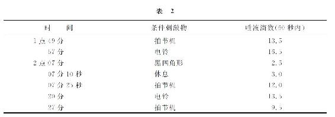
我们利用第二级条件食物性刺激物的帮助，却不会能够形成第三级的条件反射。在应用这手续做实验的场合，总是有完全别种现象会出现。如果用无条件性防御反射所形成的第二级条件反射做基础，即是如果用强力电流的皮肤刺激所形成的第二级条件反射做基础而结合一个新动因，第三级条件反射能够成立。可是即使这样地做，第三级条件反射以上的条件反射却不能形成，其时总是另一种类的现象曾发生。
关于第三级条件反射，我举出弗尔西柯夫的实验如下。
这只狗的无条件刺激物是应用于前腿皮肤而引起了防御反应的电流。照通常的手续使狗的后腿皮肤的机械性刺激成为防御反射的第一级条件刺激物，而这机械性刺激本来是对狗无关的刺激。按照刚才上述的处理方法再用水泡音（бульканье，即是在水中通过空气时所发生的水泡音）也形成了第二级条件刺激物。以后更利用这种水泡音的结合，而使直到当时是无关的、每秒760次的振动音成为第三级条件刺激物。新作成的条件反射的级数愈高（由第一级至第三级），潜在刺激时间也就渐渐增长，同时防御反应渐渐减弱。然而这一切已经形成的条件反射，在适当地受着强化手续的场合，能够维持了一年。但是我们再尝试这第三级条件刺激物与新动因（在这场合是在狗眼前使物体回转）的互相结合，结果是，引起了后述的完全不同的现象。从全体而言，我们把这样获得的一些反射（第一级至第三级）叫做链索反射（цепныерефлекс），这样，我们有两种条件反射形成的场合：第一是利用无条件反射，第二是利用已经确实形成的条件反射。
可是还有显然更特殊的条件反射形成的场合。
我们已经老早就根据若干的考虑而做了如下的一些实验［柏德可琶叶夫（Н.А.Подкопаев）的研究］。用小量的阿卜吗啡（апоморфин）注射于狗的皮下。一两分钟后，使狗在实验室内听取一定高度的音若干时间。在这音响继续之中，狗对阿卜吗啡的呕吐反应开始：狗显出多少不安的状态，开始用舌舐口部，唾液分泌也开始，有时还现出若干微弱的呕吐动作。这实验重复几次以后，音响的开始就引起相同的反应，不过反应程度较轻。但可惜因为勤务的关系，柏德可琶叶夫不曾能够彻底做这实验，也不曾能够用种种变式的方法做实验。在不久以前，他吉坎特研究所细菌学专家克雷洛夫（В.А.Крылов），做了血清学的研究，观察了如下的现象：他慢慢长期地用吗啡注射于狗的皮下。在注射吗啡的场合，先会引起狗的恶心，其次是分泌多量的唾液，呕吐，以后才会睡眠，这是周知的。克雷洛夫发现了如下的事实，如果每天注射吗啡，那么很快地即在5天或6天以后，只要做注射的准备和环境一存在，狗就会显出与吗啡注射时相同的反应：很强烈的唾液分泌，恶心和呕吐，其次也是睡眠。这样，这呕吐的发生，并非因为吗啡进入血液而直接对呕吐中枢发生作用的缘故，而是由于与吗啡注射同时一致的外来刺激的缘故。在这场合的条件反射性联系是很复杂而远隔的。在极端的场合，实验者一在狗的面前出现，狗就显出这些一切的症候群。如果这还不够，那么，只要实验者拿出注射器的盒子，而把盒子开放，剃去预定的皮肤注射部位的毛，用酒精揩一揩，末了，注射无关的液体，反应现象也就会发生。吗啡已经注射的次数愈多，所需要的这些处置就越少，而会引起吗啡中毒的症候。克雷洛夫在我们研究室里，非常容易地表演了这个事实，并且用若干方式的实验而确定，这事实是与我们条件反射完全相同的。
上述实验也能够很容易地在诸位面前做。这只狗是已经受过吗啡注射几次的。一个生人把狗放在桌上，捉住它，它是很安静的。现在常常对它施行注射的实验者在它面前出现，它即刻就不安，开始舐自己的口唇。实验者现在着手揩擦它的皮肤，它就有多量的唾液分泌，并且呕吐也出现。
这个实验使我们了解一个久已知道的事实，就是，摘除副甲状腺的（паратиреоидныежелезы）狗，或者门静脉（vena portae）被结扎而作成了爱克（Экк）瘘管的狗，只要吃过一次肉，以后就不肯再与肉相接触。很显然，肉的外观与气味会多少引起某些病理的刺激，而这些病理刺激是与上述条件下肉中毒时的刺激相同的，所以这就引起拒绝肉的反应。
在考虑上述一切实验以后，就发生一个疑问：这新的神经性联系、新的神经道路的中继性联系是怎样地，由什么过程而发生呢？从纯粹事实的一侧而言，解答绝不困难。无条件刺激物或确实形成的条件刺激物当然能引起大脑一定部位的活动状态（деятельноесостояние）。姑且依照公认的术语，我们把大脑的这个部位叫做中枢（центр）吧，然而我们并不把这个名词与解剖学上正确特殊化的概念相结合。很显然，在大脑两半球皮质细胞内同时由外来动因听引起的兴奋会向这中枢进行。兴奋向这中枢进行的道路是特别容易的，而在同时作用若干次以后，这条道路就拓通（проторенный）了。这些事实很显然的意义就是这样的。根据事实的这样解释，我们做了前述的阿卜吗啡的实验，其次又由吗啡实验而非常证实。如果大脑两半球皮质细胞所受的刺激是向反射地兴奋的中枢进行的，那么，在由内在动因（внутренниеагенты），即在由于血液成分和特性的关系而自动地（автоматически）兴奋的脑内中枢方面，当然与上述相同的情形也必定发生，这是已经证实的。在上文所说的事实材料里，还有一个与此有关的很重要的详情。外来的刺激，甚至在动物出世以后即向某一定中枢传导的刺激，也可能离开该中枢而传入其他的中枢，并且可能与后者（指其他的中枢）相结合，如果后者在生理学的强度上强于前者。
这样，脑的种种部位所发生的种种兴奋的融合（слияние），即联合（соединение），就是一种神经中继性联系（нервноезамыкание），这正是在研究大脑两半球皮质机能的场合我们最初所遭遇的神经机制。当然还剩有一个问题：这个中继性联系究竟是在何处发生呢，单是在大脑皮质里面发生呢？或者大脑的下位部分也与此有关系呢？这两个可能性都是可以想象的。一个可能性是，由大脑皮质细胞出发的兴奋直接向位于大脑皮质以外部位的中枢进行。然而还有另一个可能性。从生物个体的一切活动中的器官，从个体一切部位出发的刺激，都由传入性神经纤维而达到大脑皮质的细胞，而这些皮质细胞就是全生物个体的感受器中枢（рецепторныецентры），在器官活动的时候就进入于活动状态，于是在无条件刺激物、条件刺激物及自动性刺激物等等的影响之下，也可能把其他的皮质细胞由外界动因而引起的刺激都集中到它们本身（指感受器中枢）上来。以外更可能的是，在大脑未受损伤而保持完整的场合，一切在动物觉醒状态时引起无条件反射的刺激，起先进入大脑两半球的某些一定的细胞里，于是这些细胞的部位就是形成条件反射的、种种不同刺激所趋向集中的部位。
在次序上，以后我们可以移行于另一个问题：究竟什么东西可能成为条件刺激物？这个问题不是像最初一见时所想象的、简单的问题。当然在一般的形式上，这是容易答复的。就是说，存在于自然界的一切动因都可以成为条件刺激物，不过只需要该生物个体对动因有感受的装置。然而从一方面说，这一般性的命题以后还需要分析和补充，而从另一方面说，却需要限制。外界刺激物的第一个分类，可以从刺激物构成的关系着手。可能成为个别刺激物的是外界一个动因的极微细的成分。譬如同一个音的一个微细的部分、光的极微小地差异的一定的强度等等都是。这样，只单是这样看，刺激物可能的数量就差不多可以扩大无限。当然，这也是有限度的，而这个限度是由感受器装置的完全度及精确度而决定的。从另一方面说，自然界对于动物所发挥的作用也以若干因数的，并且往往以很多因数的、总体的方式，即是以复合刺激物的方式而成立的。譬如在我们区别两个人面貌的时候，我们就要同时考虑形状、色彩、阴影、大小等等。或者在决定某一地点的情形的时候，我们也需要这样的考虑。这类复合刺激物的数量可以说是无限的。如上指明，从一个巨大系列的各基本性刺激物可能成立极多的复合物，然而这也有一个限度，这就是由大脑皮质的构造而决定的限度。在此地，我不过想关于个别条件刺激物可能的数量，给予一个近似的概念。在以后的讲义里，这个很重要的对象会被详细说明。
这就意味着，在生物个体面前的自然界的现象，都可以成为条件刺激物。可是一个现象的终止也可以成为条件刺激物。譬如在实验室里拍节机正在响着；其时把狗带进实验室里来，但拍节机的响声依然继续着。如果在这样环境之下，把这个响声停止，在间歇以后，即刻把食物或酸放进狗的口里，以引起无条件反射的发生，那么，在这样的同时应用反复几次以后，拍节机响声的停息就会成为这些无条件反应的条件刺激物［泽廖尼（Г.П.Зеленый）和马可夫斯基（И.С.Маковский）两人的实验］。
不仅自然界现象的终绝，而自然界现象以一定速度进行的减弱，也可以成为条件刺激物。这样，如果由某个现象的突然停止而形成条件反射，但以后该现象如果渐渐地迟缓地减弱，那么，它就不能并有条件反射的作用。泽廖尼的一个实验如下。他用一定强度的调音管re2 音刺激动物，即刻又使这声音终绝，于是引起了条件性的唾液分泌，每分钟32滴。如果这同一的音慢慢地减弱而经过12分钟以后才完全消失，那么，就完全没有条件作用。
所以，不但同一动因的突然出现，而且它的消失、停止或相当迅速的减弱，都可以成为条件刺激物。我们当然可以获得无数的这一类的条件刺激物。
因此我们应该把以前有关可能形成条件刺激物的各动因的假定作如下的更改，就是，外界环境向积极方面的或消极方面的动摇，都可以成为条件刺激物。
下一组的条件刺激物，与前述一组的条件刺激物具有若干的差异。这一类条件刺激物不是对动物即刻发生作用的现存刺激物（наличныйразлражитель），而是该刺激物停止以后存在于神经系统内的残余作用。实验的进行如下。对于动物，给予某一定的外来动因，譬如给予某一个响声30秒~1分钟，其次在音响停止以后经过1~3分钟，再应用食物或酸的结合。如果我们重复数次地应用这复合刺激，就有如下事实的发生。这动因本身并不引起任何反应，但在这动因停止以后，会发生食物反应或酸反应。在这场合的条件刺激物不是现存刺激物，不是我们所应用的响声，而是响声残存于中枢神经系统里的痕迹。因此我们区别现存刺激性反射和痕迹刺激性反射（наличныеиследовыерефлексы）的两类。
关于这个痕迹性条件反射，现在举出格洛斯曼（Ф.С.Гроссман）的实验记录。条件痕迹性酸刺激物是皮肤机械性刺激。每次的皮肤刺激继续1分钟，停止以后休息1分钟，以后再把酸液注入口里去。
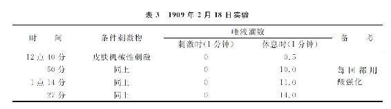
关于这痕迹反射的性质，我们更作如下的区别，即由新鲜残留痕迹所形成的反射，也就是在动因终止以后只过了一至数秒，而形成的反射——这是短时性痕迹反射（короткийсл.рефлекс）。如果在刺激动因终止以后，我们等候1分钟或1分钟以上的相当长的时间，才使之与无条件刺激物结合，我们就把它叫做长时性后发性痕迹条件反射（длинныйпозднийследовойрефлекс）。
我们所以必须区别这两样场合的原因是，在现存性条件反射和后发性痕迹反射之间存在着本质上的区别，这是在以后适当的地方会说明的。
末了，我移行于最后一个特殊动因的记载，这是与以前一切动因都不相同的。它本身恒常地似乎独立地会成为条件刺激物。关于痕迹性刺激的问题，并没有疑问的余地。因为从神经系统里的一切兴奋之中，我们都会遭逢所谓后作用（последействие）的现象。然而我们的这个新动因，虽然和以前所说的一切动因相同地是真实性的东西，可是在其性质的明了理解上却有若干的困难。我用这类一般性实验的记载而开始罢。我们带一只狗到实验室内，不断地经过每次一定的间隔时程以后都给狗吃食物；而对于另一只狗，却在同一的间隔时程内把酸液注入于其口内。如果我们这样地重复几次以后，就会得如下的结果，就是如果在某一次的中隔时程内应该给予食物或给酸的时候而不曾给予，那么第一只狗自动地会显出食物反应，而第二只狗自动地会显出酸反应。
我从费阿克里托娃（Ю.П.Феокритова）的实验举出一个例子。
在实验架台上的一只狗常规地每30分钟都被给予食物一次。在各个实验里，在一至三次给予食物以后就省掉一次。于是在某次食物给予后大约经过30分钟，唾液分泌会开始，同时食物运动性反应也开始出现。这个反应有时完全正确地在第30分钟出现，有时却迟一两分钟才出现。如果该实验进行的回数是足够的，那么，在间隔时程本身以内（注：即不在第30分钟），却没有一点反应的出现。
这样的实验结果应当怎样解释呢？不能不说，在这场合，时间的本身是条件刺激物。
这个实验也可以用多少改变的形式做。我们可以对于动物每30分钟一次地给予食物，并且同时再应用某一动因作用的结合。就是说，在每次给予食物以前的数秒，先使动物受某一动因的刺激，于是就形成了复加性条件刺激物（суммарныйусловнийраздражитель）。这复加性条件刺激物是由所使用的动因及一个30分钟时间的因素而成立的。如果在这动因经过5~8分钟就试验这一动因，那么，该动因不会显出任何作用。如果再迟一些时候试验该动因，它就会显出作用，但是不大的作用。在20分钟以后，这动因的作用就会增大，在25分钟以后，它会更增大；而在30分钟的时候，该动因的效果就会是完全的。如果在30分钟以外的时间都有系统地不给狗吃食物，那么，只在第30分钟，该动因会显现完全的效力，而甚至在第29分钟也不发挥效力。
实验 从费阿克里托娃的研究内试举一个实验例子。
对于一只狗，在每次给予食物以前的30秒钟先给听拍节机响声。各次食物的间隔时程是30分钟。
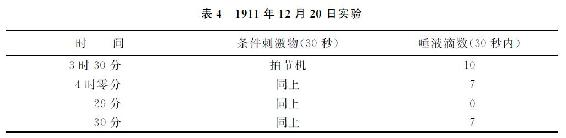
当然，利用任意的间隔时程都可以形成这条件反射。不过我们的实验，不曾利用过30分钟以上的间隔时程。
具有条件刺激物性质的时间，从生理学的立场应该怎样解释呢？当然目前对于这个质问还不能有精确的一定的回答。但是关于这一点做一个相当的解释，这是可能的。一般地说，我们是怎样地标明时间呢？我们是利用自然界的种种周期的现象，譬如太阳的升降、钟的分针在数字盘上的运动等而标明的。可是，在我们身体的内部也有不少的这一类的周期现象。大脑在白天接受许多刺激而疲劳，以后又能恢复。消化管周期地为食物所充满，以后又变成空虚。因为任何器官的每个状态，都能够反映于大脑两半球，所以我们有理由地相信，大脑是具有区别时间的能力的。我们试取很短的时间作为例子而想一想。当刺激刚刚发生的时候，我们对于刺激的感觉是很强烈的。当我们进入充满某种气味的房间的时候，我们起初很强烈地感觉这个气味，可是以后我们的感觉会慢慢地减弱。在刺激的影响之下，神经细胞的状态会蒙受一系列的变化。在相反的场合，情形也是如此。当刺激物消失的时候，它起初还是非常强烈地被感觉着的，但以后就会越过越淡，最后我们就完全不能察觉它。这就意味着，这又是神经细胞一系列各种不同状态的存在。从这一观点，我们就可以理解刺激物的终止所引起的反射和痕迹反射，同样地也可以理解时间的反射。在上述实验里，动物周期地被给予了食物，同时动物的许多器官也与此相关地有了一定的活动，就是说，这些器官也体验了一系列的一定的、连续性的许多变化。这些一切的变化都在于大脑两半球内显现出来，都被大脑两半球所感受，于是这些变化的某一定瞬间都能成为条件刺激物。
最后，关于可能成立的条件刺激物的命题是还可以如下地改变而扩大的：生活个体的内界与外界的无数动摇（бесчисленныеколебания），各反映于大脑两半球皮质神经细胞的一定状态，都能够成为个别的条件刺激物。
其次，我着手说明如下材料丰富部分的事实。直到现在所讨论的都是阳性的反射，就是说，这些反射在最后的结果上都是具有阳性作用的：即运动和腺的活动，而在神经系统里这就是兴奋过程（процессвозбуждения）。然而我们知道神经活动的另一半部，这在生理学的生命重要性上是与兴奋过程有同等重要意义的制止过程（тормознойпроцесс）。所以我们在研究最复杂的大脑两半球机能的时候，不能不期待着，我们会与制止现象相遭遇，而这制止现象是与兴奋现象极复杂地互相交错的。然而在从事于这问题的研究以前，我认为需要先稍稍说明在无条件反射场合的中枢性制止的现象。
从现在的生理学的实验资料而言，在正常活动的场合，可以区别两种中枢性制止过程（центральноеторможение）。我们也许可以把它们叫做直接性及间接性制止过程（прямоеикосвенноеторможение），或者把它们叫做内（内在的）和外（外在的）制止过程（внутреннееивнешнееторможение）。我们一方面知道，在各种为神经所支配的器官内，譬如在骨骼肌肉运动的器官内，血液循环、呼吸等的器官内，由于一定的传入性神经或由于血液里的某些动因对于相应中枢的刺激，会引起直接性制止作用。但从另一侧说，中枢性神经活动充满着极多的间接性制止过程。一个中枢的间接性制止过程是这样发生的，就是，与该中枢的现存的活动同时，由于其他传入性神经所传来的刺激，或由于其他自动性刺激的作用，另一个中枢会变成活动的状态。在复杂反射的所谓本能的场合，情形也是与此相同。例如多数的昆虫，特别在幼虫时期，一受什么接触，就即刻会变成不动的状态而落下。这明明是全运动神经系统的直接性制止过程。从另一面说，我们试举刚从鸡蛋出来的鸡雏当做一个例子看。它从地上极小物体一接受了视觉的刺激，就即刻能显现食物性啄抓反射（хватательныйрефлекс）。但是如果该物体强烈地刺激雏鸡的口腔，那么，啄抓反射即刻就被制止而为防御性抛掷反射（выбрасывательныйрефлекс）所代替。
这样，一种制止过程是由于传入某中枢的刺激而引起的直接效果，这就是内制止过程，而另一种制止过程是许多同时活动的各中枢相互作用的结果，这就是外制止过程。
在条件反射的场合，我们也与这两种中枢性制止过程相遭遇。因为条件反射的外制止与无条件反射的外制止是完全没有什么差异的，所以我先谈外制止。
最单纯的、常见的事例是这样的。你们和一只实验狗同在一个实验室里，而这个环境是暂时不变的，但以后环境忽然发生变化，或者有异常声响传进来，或者实验室的光线突然变化（太阳为云所掩蔽或从云里出现），或者从房门有气流吹进，并且气流甚至带着什么新的气味。这些一切都一定会或多或少地引起条件反射的减弱（由于新刺激的强度而不同），并且如果条件反射正是同时开始，新刺激就可能使该条件反射完全毁灭。对此现象的说明是简单而没有任何困难的。任何一个新的刺激物，即刻会引起探索反射的发生，就是说，有关的神经感受器会转到新刺激物的方向去，狗就向新刺激倾听着，注视着和嗅闻着，并且这探索反射就会制止条件反射。所以在研究条件反射的场合，很重要的是需要上述的、特别设计的建筑物。这样，偶然的刺激物与该研究室的接近关系就可以被除去，或者至少可以非常受限制。
在此处我们还需要注意如下的情形，这是不言自明的。本来一切动因，即使是迅速消失的动因，不仅在它存在的时期以内，而也在它停止以后的若干时间以内，它的作用都存在，这就是由于神经系统内的所谓后作用而起。所以如果我们在一个动因以后即刻应用条件刺激物，条件反射就或多或少地会被制止。此外必须要补充地说，各种不同的新异刺激物，不论是偶然的或故意应用的新异刺激物，可以说，在神经系统内消失的速度也是种种不同的：某个刺激物在两三分钟内会丧失效力，而另一刺激物可能在10分钟以后才消失，但也有些新异刺激物能在几整天里具有效力。最后这一类的是口味性的刺激物，特别是食物性刺激物，所以我们必须十分注意这一点。
新异反射（постороннийрефлекс）的作用当然由于条件反射的不同而是非常各不相同的。就是说，与这新异反射发生关系的条件反射是新近建立的呢，还是老早建立的、稳定的呢？当然，新成立的条件反射比坚定的旧反射容易被制止。因为这个缘故，以前当一个实验者和实验动物共在实验室内的时候，一件滑稽的事情曾经重复地发生过。一位工作同人，形成了动物的一个新条件反射，想做示例试验，邀我去看，但是他不能证明任何成绩。我一进实验室，新反射就消失。这事其实是很简单的。对于狗，我是一个新异的刺激物，狗注视我、嗅闻我等等，这就足够地使刚形成的新条件反射被制止了。还有这样一个事例。一位研究同人对他的狗形成了很好的、稳定的条件反射，并且用这反射做过很多次实验。可是一把这只狗交给另一位研究同志做研究工作，这条件反射暂时就不出现了。在动物从某一个房间移到别一个房间的时候，尤其在从某一实验室被移到别一个实验室的时候，上述的情形也是常常发生的。
当然，在外制止过程的场合，特殊的刺激物具有更强的制止作用。譬如猎犬看见鸟儿，大多数的狗看见猫，或者某些狗听见由地面传来的沙沙声（шорох）以及一般地非常强烈的、完全异于寻常的刺激物等等皆是。从最后一类的强烈的刺激物而言，事情是很复杂化的。在强烈的、异于寻常的刺激物的关系上狗可以分为两组。有些狗对于这些刺激是积极地攻击地反应的：激烈地吠吼，要向刺激物冲过去。另一些狗却显出被动的防御性反应：或者努力要从实验架台逃去，或者在架台上像木头一样地站着不动，或者在架台上发抖，伏在台上，或者甚至排尿，这在通常条件的场合是不会发生实验架台之上的。所以，对这一类的狗来说，制止过程是占着优势的，并且制止过程也影响于条件反射。因为这类制止过程是起源于脑内另一些部分的，以后才向条件反射的脑内部位传布，所以不妨把这一类制止过程也归纳于条件反射的外制止过程之中。
然而我刚才所列举的这些事例都有一时性的特色，所以我们把在这些场合发挥作用的动因都叫做消去性制止物或一时性制止物（гаснущиеиливременныетормоза）。如果这些动因重复地对动物发挥作用，而同时并不对于动物并有什么重要的结果，那么，这些动因就迟早会对于这个动物成为无关的动因，并且也会丧失其对于条件反射的制止性影响。
与此有关的实验，就是说，一时性制止物的实验也在诸位面前有过了。我给诸位看过的、用拍节机做实验的一只狗，在讲义开始以前就站在这个讲堂里，并且一个工作同人已经把这实验重复地做了几次，其时，我不曾使诸位注意于这个实验。事情是这样的，就是这实验起初不曾能够成功——条件反射被制止了。这只狗，慢慢地才解除了这特殊的、新环境的制止性影响。在几年前，我也做过有关条件反射的特别连续讲演，并且当时我是这样进行的。在讲义开始以前，我已经把实验供览所需要的狗放在这讲堂里，并且我的工作同人们与我的讲义进行无关地预先重复地做几次相当的实验，在需要实验说明的瞬间，我就利用这些狗的实验，并且这在全部讲演中不曾有过一次的失败。可惜，现在因为若干外方的关系，我丧失了这准备的可能。所以我只能间或做示例实验，主要的还是已经印刷的论文中的记录，或者是正在进行中的研究的记录。
然而在外制止过程的这一小组以外，还更有恒久性制止物的一小组。这一小组的制止物在重复应用的场合并不丧失其作用，而恒久地保持住。譬如用条件酸反射做例子。如果在这酸反射以前，先把食物给狗吃，就是说，这是使在动物吃东西的时候大脑一定中枢部位发生活动的，那么，在这以后，条件酸反射就在相当长时间以内会完全地或相当地被制止。不管怎样多次地重复做这个实验，情形都是相同。所以这是应该作为恒久性制止物看待的。这种恒久性制止物并不很少。例如我们在用酸液注入而形成条件反射的场合，因为不注意（注入过浓的酸液，或者酸液的注入量太多和回数太多）而引起狗口腔的炎症，那么，酸的条件反射就会被制止，直到口腔黏膜的病态完全治愈时为止。还有如下情形也是可能的，就是狗具有皮肤的伤口，在实验架台上受细绳的刺激，于是就会有防御反射的发生，而条件反射，尤其酸的条件反射，会被制止。当然其他这类的例子也是很多的，譬如下面所举的一例。一个实验，起初进行很顺利，可是忽然一切条件反射都减弱下去，最后会消失。这是什么缘故？然而只要把这只狗带到院子里去，让它一排尿，以后它在实验室里又会恢复一切的条件反射。很显然，排尿反应中枢的兴奋制止了各条件反射。还有一个例子，就是雄狗的交尾期。如果雄狗在实验以前曾在这雌狗的近旁，这只雄狗的条件反射就或多或少地会被制止。很显然，在这一场合，性中枢的兴奋具有制止的作用。
这样，诸位现在看见，制止我们反射的条件是很多的，所以“条件的”这个名称不是徒然的。可是这一类的条件是容易掌握的，也是容易除去而不许发生的。这就是一切外制止的场合，我再重复一次说，这些外制止过程的特色是如下的，就是，在中枢神经系统里，一有其他新异的神经活动的发生，该新神经活动即刻就使条件反射减弱或消失，不过这是一时性的，就是只在新神经活动的刺激物本身或其后作用存在的时期以内的。
第四讲
诸位！在前一章讲义的最后，诸位知悉了所谓条件反射的外制止过程，就是说，使诸位知悉了条件反射与大脑其他新异刺激暂时冲突的许多事例，并且其时条件反射就或多或少地减弱，或者甚至于完全消失。
现在我们着手于我们所谓内制止过程（внутреннееторможение）的说明。这就是在某些一定条件之下，阳性条件刺激物的本身会变成阴性制止性刺激物。就是说，该阳性刺激物不在大脑两半球细胞的里面引起兴奋过程，反而会引起制止过程。所以与阳性条件反射并行地，我们还有一种阴性条件反射（отрицательныеусловныерефлекс）。
外制止与内制止两者的显然引起我们注意的区别是如下的。外制止在前述的条件之下，即刻就发生，而内制止必定是渐渐地发展的，并且有时它的发展是很慢的，甚至是很困难的。
现在我将开始说明内制止的事例，是我们在条件反射研究的场合最先遇到的事例。我将多少从历史的观点记载我们关于内制止的解释，因为这个解释当然可以说，是慢慢地构成的。
在诸位面前的一只狗是诸位以前看见过的狗。现在使用的条件刺激物依然是拍节机的响声。在拍节机作用的30秒内里，我的助手会高声地计算唾液分泌的滴数，并且他会标明从拍节机刺激开始时间到唾液分泌开始时间的间隔时程。我们习惯地把这个间隔时程叫做潜在（潜伏）时期（латентныйпериод）。然而像在后面我们会看见的，也许我们应该发现另一个术语以表示这个中隔时程，那就会是更合理的。在今天的实验里，在给予拍节机的刺激以后，我们并不和寻常一样地给予食物。就是说，我们不强化（подкрепить）条件刺激（用食物以强化条件反射，这是我们常用的专门表现）。拍节机的刺激，每隔2分钟被给予一次，这样地重复若干次。
我们获得如下的结果。
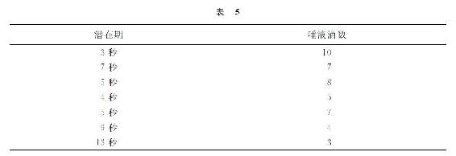
实验姑且在此处暂停，以便在今天的讲义内补充地证明这个现象的重要的详情。很显然，如果在上述条件下重复地给予条件刺激物，条件反射就会慢慢地减弱。如果我们把这个实验再继续下去，最后唾液分泌也许会完全停止。
如果条件刺激物不同时并用有关的无条件刺激物，该条件刺激物就会迅速地或者慢慢地丧失条件作用的现象，这就是我们称为条件反射的消去（угасание），这个现象的本质如何，我们姑且不预先作决定。关于这个现象我们汇集了很大量的资料，我现在就对诸位说明这些资料。
关于术语的问题，我想预先再说几句话。以前我们屡屡用不同的形容词把条件反射区别开来，就是自然的（натуральный）和人工的（искусственный）两种反射。前者就是由于在相当距离的食物本身而引起的条件反射，或者由于注入酸液的手续而自动地引起的条件反射。人工的条件反射通常是利用与食物或酸注入等没有任何关系的外来动因而形成的。可是在这两种反射之间并没有任何极小的差异。我们利用过的并且不断地利用着的形成条件刺激物的、无数的新异动因之重要，不但因为我们在实验的时候可以使它们在强度上是完全同一的、精确的、便于调整的刺激物，而也因为这些无限的动因为我们开拓了巨大的研究范围，这是我们以后会看见的。这样，最初我们应用这些人工的条件反射的目的，不过要检验，我们对于自然的条件反射形成机制有关的解释是否正确，可是以后这人工的条件却成为我们研究的主要的材料了。我现在所以提及这些事，这是因为在研究初期我们做了很多的自然条件反射的实验，所以现在我将引用这些实验不少的记录。
从条件反射的消去过程渐次发展性和正确性而言，往往可以发现许多动摇。这些动摇是与两种条件有关的。第一是外方条件。如果条件反射不受食物强化手续而重复应用下去，以求该反射正确地减弱，那么，该条件刺激物必须是同一方式的恒常续继的，并且动物环境不可有任何微小的变化。在自然的条件反射的场合，食物在动物面前的地位有时靠近，有时稍远，有时是不动的，有时略为变动——这些变动都会引起消去反射很强的动摇（增强或减弱）。当然，在人工性动因的场合，刺激的绝对恒常性是很容易获得的，所以反射动摇的原因可以完全除去。强烈的环境变化，当然会以外制止过程的性质，迅速地引起条件反射的减弱，可是在这样环境变化过去以后，条件反射会再多少增强。特别有趣味的，是极微弱的环境变化的影响。这样的环境变化有时会一时地使消去性反射减弱或消失。在今天的条件反射实验第五次应用的时候，这样的情形就发生了。本来反射量是五滴，但又上升到七滴，这是显然与诸位该瞬间的若干运动同时发生的。在大脑两半球的生理学上，这是极重要的一点，我们以后在今天的讲义里，会再谈一次。然而即在刺激物和环境都是恒常的场合，这消去性反射还有时会动摇，而且这动摇是有节奏性的。并且很显然，这样动摇是由于第二类条件，即由神经过程消去时的各内在条件而发生的。我们以后会常常遭遇这个现象。
条件反射消去的速度，就是说，不并用强化手续而重复应用的条件刺激物的反射效果成为零的速度，也是由多数的条件而决定的。
首先，必须提及实验动物的个性。在同一的条件之下：某些动物的条件反射会极迅速地消去，另一些动物的条件反射却很慢慢地消去。这明明是与动物神经系统一般的性质有关的。容易兴奋而活泼的狗的条件反射的消去，大都是缓慢的；而宁静的、即所谓稳定的狗的条件反射的消去是迅速的。
其次，反射确实地形成与否，即条件反射的坚定度，这是很重要的。如果条件反射的形成的时期越短，所受的强化程度越小，条件反射就越快地消去，相反地，长久地受了强化处置的条件反射很不容易消去。
对于反射消去的速度具有最大影响的是形成条件反射的无条件反射强度的如何。
我现在举出巴勃金（В.П.Вабкин）对于同一只狗所做实验的例子。
当做无条件刺激物，利用了1%苦木浸膏（extr.quassiae）溶液的一定量，注入于狗的口内。10次实验无条件反射唾液量的平均值为1.71毫升；而与此有关的条件反射1分钟，引起了0.3毫升的唾液分泌。在当做无条件刺激物而应用了0.1%盐酸溶液一定量的场合，5次实验的平均值是5.2毫升的唾液；而与此有关的条件反射1分钟，引起了0.9毫升的唾液分泌。在这两种实验的场合，所应用的条件刺激，都是自然的条件刺激，就是说，苦木浸膏或盐酸溶液，都被放在与动物相隔的一定距离时的作用。实验的其他各条件都是相同的。数字显示反射消去的过程。
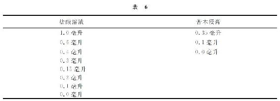
条件反射消去的一般速度显然与预定被消去条件反射各次重复应用的间隔时程有关。间隔时程愈短，条件反射的决定性消去就愈快，同时在大多数的场合所需要的实验回数也不很多。相反地，间隔时程越长，条件反射的消去就越慢。
现在我举出巴勃金的实验，说明这样的关系。
利用肉粉当做条件刺激物，把肉粉放在一定距离给狗看1分钟，而间隔时程是相等的。下表5个系列的反射消去的实验，都是在同一天里完成的。在各系列实验之间，狗都获得了休息的时间，并且其时被喂了肉粉。
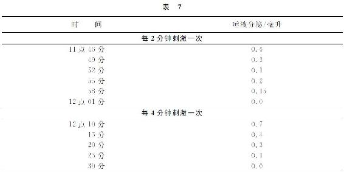
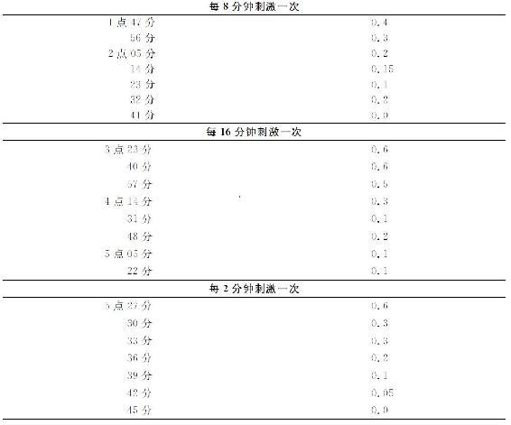
这样，由于间隔时程不同，条件反射消去的速度也不同。
最后的一个条件，就简单地是同一只动物所受条件反射消去实验回数的多少。在其他一切相同的条件之下，而条件反射消去实验的回数越多，条件反射完全消去所需要的刺激回数就越少，并且最后至少在一部分狗的场合，仅仅只受一次的不强化的手续，条件反射就会完全消去。
与条件反射消去实验有关的最有兴趣的事实是如下的情形。就是不但直接地受了消去性实验手续的某一个条件反射［这是第一级消去性反射（первичноугашенныйрефлекс）］会有反射的减弱，而不曾直接受过消去性实验手续的条件反射也会减弱［第二级消去性条件反射（вторичноугашенныйрефлекс）］，而且不仅是与同一无条件刺激物有关的条件反射［这是我们所谓同族性条件反射（однородный）］，并且是与其他无条件刺激物有关的条件反射［这是异族性条件反射（разнородный）］也会消去，尤其在条件反射消去最强的场合，甚至无条件反射的本身也会减弱。这样，对于一只狗，应用盐酸溶液的一定量注入于它的口里，平均的反射量是6毫升的唾液。可是在有关的皮肤机械性条件反射相当消去以后，同上相同量的盐酸就只分泌了唾液3.8毫升［彼累里茨凡格（И.Я.Перельцвейг）实验］。这是同族性条件反射的第二级多少消去的一个最显著的事实。这个事实也是我们比较详细研究过的。
从第二级消去的一切事例说，第一级消去的深度具有最重要的意义。如果第一级的消去很强，就使各二级反射相等而抹杀微小的差异。然而在反射是中等度消去的场合，许多微小的差异就显然出现。如果假定其他条件都是相等，就可以说，一个条件反射的消去对于同族其他条件反射的后继性影响是由该同族各条件反射相对的生理学的强度而决定的。而这一生理学强度的本身是与下列各条件有关的，就是条件反射形成时期的长短，强化工作是否恒常的、稀少的或已中止的情形，过去消去性实验回数的多少，该消去性反射实验当天预先强化手续的如何等等的条件。受第二级消去性实验的某反射的生理学强度比消去中的和已消去的反射的强度越大，那么，该受第二级消去性实验的某反射就越不容易受实验的影响。相反地，如果第一级消去的反射是比较很强的，较弱的一切反射就会完全第二级地消去。
巴勃金实验如下：
一只狗的三种酸条件反射刺激物分别是电铃、拍节机响声及皮肤机械性刺激。条件刺激继续30秒。
做消去性实验以前先做了如下的实验，昭示了各条件刺激物的相对强度。
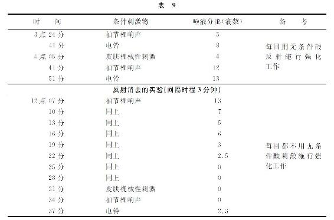
在中等强度的条件刺激物拍节机反射消去的场合，较弱的皮肤机械性条件反射也就完全消去，而比拍节机反射更强的电铃反射还显出若干作用。
在应用复合条件刺激物（комплексныеусловныераздражители，由若干不同的动因而成立的刺激物）和其各成分的刺激物消去的场合，情形也是相同的。在复合刺激物消去以后，它的各成分也就消去。在两个由同等强度的成分所构成的复合刺激物中一个成分消去的场合，其他一个成分也就必定消去，但该复合刺激物依然具有若干的作用。在较强的刺激物消去的场合，单独被检验的、较弱的刺激物就完全失去作用，相反地，在较弱的刺激物消去的场合，较强的刺激物还保持微弱的作用。如果在个别试验时候，较强刺激物能够完全掩蔽（маскировать）较弱刺激物，则在该较强刺激物消去的场合，复合刺激物也会完全消去（复合条件刺激物的各个别动因彼此间的相互关系，在以后的讲义里会有说明）。
从理解消去过程而言，很重要的是如下的特殊关系。我们有一种完全为较强成分所掩蔽的较弱刺激物，就是说，在个别检查的场合，这较弱刺激物并不发生任何作用。然而如果这较弱的刺激物，单独地被应用若干次而不并用无条件刺激物，那么，较强的刺激物及复合刺激物都会是消去的。彼累里茨凡格的一个这样的实验如下：
应用酸的复合条件刺激物（它的两个成分是同时应用的皮肤机械性刺激及零摄氏度的刺激），并个别地应用了两个成分的刺激。刺激时间1分钟。
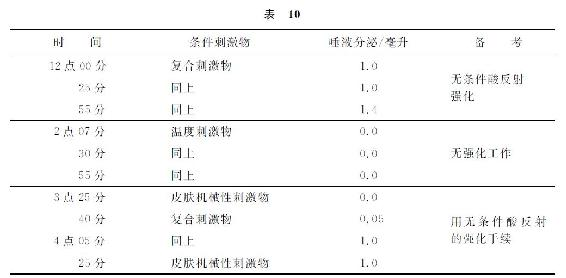
直到现在，我的说明是和弱度的或显著的消去乃至和反射消去程度有关的，然而这一点还需要特别的补充解释。消去过程的强弱不仅由我们所说明的条件反射减弱的程度而决定，也不能以消去度的最后零值而决定；消去度可能更加增强；可以说，我们还有表面看不见的消去过程。如果我们对消去度已达于零，不复具有作用的条件刺激物重复地应用消去性实验的手续，我们就可以使消去过程增强而加深。
在这事实被证实以后，上述实验结果的奇异性就不存在了。在这实验里已经成为无效的条件刺激物在单独地重复应用地若干次以后，就对于其次的各刺激物发生了影响。这样，在反射消去的实验的场合，我们必须注意于消去度的深浅。消去度在零值以后应该如何决定，这是在下一点有关的说明里会指出的。我现在就说明这一点。
条件反射在被消去以后是怎样？它怎样地才可以获得原有的作用呢？
条件反射消去以后，如果被放置下去，而不受实验者的任何极小的处理，它迟早会恢复原有的作用。
当然，这对于刚刚形成的还很薄弱而不稳定的条件反射是不适用的。这些薄弱的条件反射在消去以后，在若干场合，为了恢复作用的目的，必须再受强化手续的处理，就是说、必须与无条件反射并用。然而确实地形成的条件反射在消去以后必定自然地又会恢复以前的作用。而测定消去度深浅的一个指标就是在相等的其他条件之下，测定消去以后恢复原有反射效果所需要的时间。一旦消去后的条件反射自然地归还的速度是颇有差异的，可能是几分钟乃至几小时。举出几个事例如下。
应用肉粉的刺激，从一定的距离使狗每隔3分钟看一次，但并不施行强化手续（巴勃金的研究）。
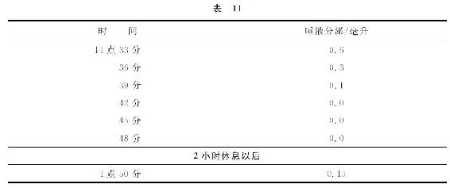
另一个实验［爱里亚松（М.И.Эльяссон）的研究］用肉粉当做刺激物，每隔10分钟给狗看一次，不并用强化手续。
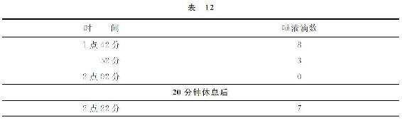
我们今天的反射消去的实验是在23分钟以前中止的。我们再用拍节机的响声检查它的效力。我们获得如下的成绩。
这意味着，已消去的条件反射自动地相当地恢复了。
已消去的条件反射恢复原有条件作用的速度的种种不同，是与若干条件有关的。首先，最常见的决定性关系是消去度的深浅；其次，动物的个性，即动物神经系统的类型，具有巨大的意义，条件反射的强度也具有显著的作用；最后，消去性实验已经重复的次数也有显著影响。
已消去的条件反射恢复其通常作用的速度是可以加速的。为了这目的，必须应用形成该条件反射的无条件反射，或者单独地应用无条件刺激物，或者与已消去的条件刺激物同时应用无条件刺激物，就是说，使已消去的条件反射受强化手续的处置。条件反射消去的深度越小，本处置达到目的越快。在条件反射消去度很弱的场合，这个方法的一次实行就够了，在消去度很深的场合，这个强化处置需要重复若干次。这就是测定消去度的第二方法。
另一个问题：在单独地应用无条件反射的场合和同时应用条件反射及无条件反射的场合，已消去的条件反射作用的恢复速度是相等呢，还是快慢不同呢？直到现在，这依然是不曾经过精细研究的问题。我们现在才认真地研究这个问题。
有关条件反射消去所举出的全部事实资料，可能对于诸位注意力多少是一个负担；因为这是与一般观点不相同的，然而这些资料会替我们解决一个重要的疑问。我们所谓消去过程的本质究竟是什么？我们不能不把它当做一种特别的制止过程看待，因为其他的解释是由于我们的事实资料而可以断定为不可能的。
消去性过程并不是条件反射的破坏，即不是已结合的神经道路的断裂，这由于已消去的条件反射在一定的时期以内自然地恢复的事实而可以证明的。
以后还有一个可能性，就是想象参与这反射的神经分泌装置的某一部分发生了疲劳。然而这与条件反射破坏的假定相同地，根据我们的事实，任何主张由疲劳而发生条件反射消失的假定都是必须抛弃的。分泌成分本身疲劳的绝不可能，这是由于我们的全部事实资料而显然的。因为不论条件反射反复地被应用的回数怎样多，不断地被强化的条件反射都有大量唾液的分泌；而且在应用无条件刺激物的场合，已消去的条件反射会再恢复唾液机能的很大活动，尽管消去中的条件反射的唾液分泌机能往往本来是极小的。然而条件反射的消去也不可能是神经成分的疲劳。请诸位再回想前述的一个实验看看。在该实验里，皮肤条件刺激物中较弱成分的温度刺激本身单独地已经完全不具有任何阳性作用，可是它在不并用无条件刺激物而重复多次地被应用以后，即是在受了反射消去性实验的处理以后，它会使较强成分的皮肤机械刺激也被消去；甚至使复合刺激物的本身也被消去。既然温度反射已经没有任何阳性活动，那么，什么东西会由于重复的应用而疲劳呢？不仅如此，纵然假定有疲劳的可能，也不过是皮肤温度神经及其有关成分多次受了刺激，因此为什么完全不曾活动的皮质机械性刺激有关的神经装置会发生疲劳呢（如果承认疲劳是可能的）？
由于上述分别地驳倒种种可能性的办法，我们就达到一个结论，所谓条件反射的消去过程是一种制止过程。从这个观点看，差不多前述的条件反射消去有关的一切事实都可能了解。
在条件反射消去的场合，有时可以观察到自动发生的、节奏性的动摇，如果把这个当做一种斗争的现象看待，即当做兴奋过程与制止过程间平衡化的现象看待，这就容易解释了。同样明了的是动物个性的影响，因为我们从本身的生活经验就很可以知道，各人的神经系统的制止能力是很不相同的，并且在以后的说明内，我们也可以在动物方面发现极多的例子。很显然，条件反射越强，就是说，兴奋过程的强度越大，制止过程的紧张度也就越大，克服阳性条件反射所需要的时间也就越多。因为在条件刺激物不受强化处理而重复地应用的场合，制止过程的效力必定会累积起来（суммироваться），所以，当然地，各次应用的间隔时程越小，最大值的制止过程成立的时间也就越短。又，在重复地做条件反射消去性实验的场合，重复的次数越多，条件反射的消去也就越快。这是不难于解释的，因为实验的重复施行，会加强制止过程，这也是从我们本身日常的观察而能认知的，并且这也是以后在条件反射研究的场合所屡屡遭遇的。一个条件反射的消去，不仅影响于同族的其他反射，而也影响于异族的其他反射，甚至可能影响于无条件反射——这些事实的说明不能不在于一个假定事实的承认，就是制止过程是从大脑的某一个起源点会向着全脑扩展的。在以后的讲义内，这一点会彻底受我们的重视。
然而在条件反射消去有关的前述事实之中，还有一个需要我们即刻详细说明的事实，因为它直到现在是我们完全不能理解的。这是条件反射消去的正规直线上突然的增高，这往往是与周围环境所发生的偶然刺激相联系的变化。只要一有新的异常声响，或有房间光度的增强和减弱，那么，发展中的条件消去过程就会强烈地紊乱，条件反射会忽然增强。当然，我们如果故意地应用新异的刺激，以检查其对于条件反射消去的影响，也就可以获得与上述相同的成绩。这一类实验的事例会引证于下方。一个与此有关的事实在很长的时期内是对于我们实验室的一个谜。我们应用肉粉的自然的条件反射做了反射消去的实验。在消去以后过30分钟乃至1小时，该消去的反射会自动地恢复了，这是曾经由对照试验而证明的。然而在消去度一到零的时候，我们即刻就将酸溶液注入于狗的嘴里；其次，在酸溶液所引起的唾液分泌终止以后（消去度成为零以后一共过5分钟），我们再应用肉粉的远隔性刺激当做条件食物性刺激物。这样，自然的条件反射几乎是完全的。这件事怎样会发生呢？此时的各条件反射都明明是有特异性的，就是说，一定的刺激物才决定一定反应的发生。可是在这场合，由于完全另一种类酸条件反射的动因的应用，已消去的条件食物性反射恢复了它原有的效力。酸反射在唾液的构成上和运动反应上都是与食物反射很不相同的。那么，上述的情形究竟是什么？事实上，这是制止过程的解除。在刚才所述的全部的事例，这制止过程的解除都具有如下的共同性质。就是，这制止过程的消失都不过是一时性的，就是说，只在引起这解除制止的刺激物还存在以前，或者该刺激物的可见的或不可见的后作用继续有效以前，这制止过程解除的现象才能存在。现在举出我们实验室生活与此有关的一个有趣的故事。研究这问题的各成员，关于已经消去的条件食物性反射，由酸液的注入而能恢复作用的问题，都发表了完全不一致的意见。有些人坚决地保证这事实的可能性，另一些人却决定地否认这事实的可能。什么是正确的呢？与日常生活里和科学研究里往往发生的事情相同地，两方面的主张都是对的。惹华德斯基（И.З.Завадский）的实验阐明了这件事情。不同的实验者所获得的不同结果是由于他们忽视了实验条件的差异而产生的。有些人在酸液注入反应的唾液分泌一终止以后，即刻，或在其最近的几分钟以内，检查了已消去的条件反射的效力；而另一些人的检查却在酸液注入的唾液反应终止以后，经过了很长的时间才开始。惹华德斯基注意了这两种情形，于是在同一系列的实验内证明了两方事实的存在。
实验如下。
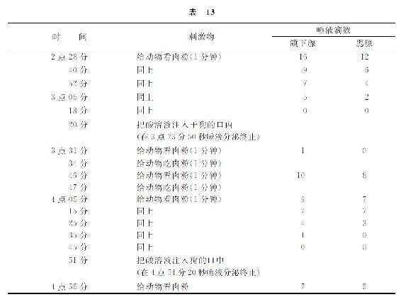
如你们看见的，在酸反射唾液分泌终止以后过了7分钟，已消去的条件反射效力的恢复是极小量的，并且不过发生于一方的唾液腺，但在酸反射唾液分泌终止后过40秒，两个唾液腺的作用都很显著地恢复了。
条件反射恢复的一时性，像在正将说明的其他刺激物的场合，也是同样地可以发现。这些其他刺激物对于条件反射消去过程通常正规地下降的图线会引起不规则的增高，并且在条件反射完全消去的场合，也可能如此。
惹华德斯基对于另一只狗的实验如下。
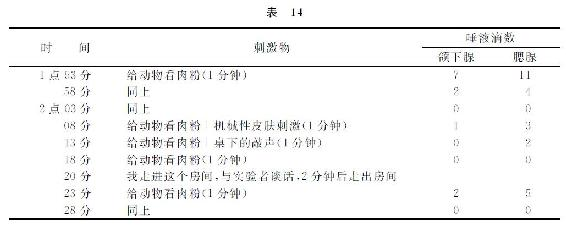
在这表里很显然，现存的两个刺激物（起初两个刺激物），及刺激物的潜在的后作用（最后的刺激物），都能够使已消去的条件反射恢复。
在上面刚才所引用的实验里，已消去的条件反射的恢复作用，只继续数分钟，这是与现存刺激物短时间作用，或现存刺激物后作用的短时间作用相当的。可是如以前在外制止过程部分所说过的，若干特殊的新异反射的作用却具有继续很长时间的性质。在这些新异反射的场合，已消去的反射恢复作用，会在全实验的经过里出现，这样，就不可能获得消去过程的正常图线，而且一般地说，完全的、坚固的消去过程也就是不可能的。
其次，需要讨论与此有关的一个如下的重要情形。在做条件反射研究的全部经过中，我们多次观察了若干不同种类反射的同时存在；在这种场合，当然这些反射之间，相互作用会发生，或者会使其中的一个反射占优势，或者有时会互相中和而使反射消失。譬如现在用皮肤机械性刺激形成条件反射刺激物，那么，屡屡在同一的皮肤部分，发现皮肤无条件反射所引起的相反作用，其表现就是动物的搔痒或拂去动作及与此类似的等等动作，因此在少数动物的场合，皮肤机械刺激性条件反射就不可能是恒常而均匀的。若干非常的高音也是这样，引起狗的非常强烈的阴性运动反应。这就意味着，无条件刺激物，当做外制止一组的动因，会不断地、或多或少地制止着无条件反射。这样，就不能不期待着，这些顽固地发生的无条件反射越多，消去过程规则性的进程就越受妨碍，因为消去过程是比兴奋过程很不安定的。这一类的事例和详细的实验分析会在以后的讲义内说明。
上述的全部资料使我们可以把这研究中的现象，即正在消去中的或已被消去的条件反射一时性恢复作用的现象——即制止过程一时解除的现象——叫做解除制止（растормаживание），这是以后我们不断地使用的一个术语。
然而现在发生一个严重的问题：已消去的条件反射，由于它的无条件反射的帮助而恢复作用的场合与现在所说的解除制止的场合之间有什么区别呢？事实上的区别是容易看出的。第一，前者的恢复是恒常的，而后者的恢复是暂时的。第二，前者的恢复只由该条件反射早经结合的特别动因的帮助而成立，而后者的恢复是由完全新异刺激的影响而发生。但从这个区别在本质上的根据而言，如果仅仅用我们现在所获得的事实资料而想有一个明了的概念，这是困难的，并且甚至是不可能的。然而即在前者的场合，这也不过是一种解除制止的现象，因为我们决不能想象，条件反射的消去是由于条件反射的破坏，这由于已消去的条件反射迟早必定会自然地恢复作用的事实而能证明的。这样，我们不能不承认，某种区别是在于这两个场合制止过程的解除机制本身之内的。
这解除制止过程的内在机制，究竟应该怎样想象呢？
当然，如果我们不知道，制止过程是什么，兴奋过程是什么，两者的关系是怎样，那么，解除制止的根本说明也是不可能的。我们只以为，如下事实的比较，在此场合是值得注意的。引起新异反射的各动因能制止阳性条件反射，但如果这些新异反射从最初起就是微弱的，或者如果在重复应用的场合而逐渐弱化的，那么，该动因就能对已消去的条件反射，引起解除制止的现象（与此有关的各事实会在下一讲内引证）。这样，就有一个理由可以方案式地，也可以说，口头上地把这解除制止的现象看做并叫做制止过程的制止过程，这是我们以前常用的表现。当然，这并不是一个说明。
这样，今天讲义所说明的全部实验资料的最重要的结果是这样的，就是阳性条件刺激物可以相当迅速地、明显地、不过还是渐渐地，成为阴性制止性条件刺激物。所以我们以后不断地处理的问题，不仅是阳性的条件反射，而且也是阴性条件反射。
第五讲
诸位！上次讲义的全部都是讨论内制止过程中第一种过程的即消去性过程的研究。这就是阳性条件刺激物一时地变成阴性制止性刺激物的现象（在阳性刺激物不并用无条件刺激物而以短短的、几分钟的间隔时程重复地被应用的场合）。现在我转而说明第二种内制止过程，这也是我们已经详细研究过的。
一个基本的实验如下。假定我们现在有了一个坚定地形成的阳性条件刺激物。其次，我们对于这刺激物再附加某一个新的动因，我们重复地应用这复合刺激物（комбинация），而各次实验间的间隔时程是很大的，即使是相隔几点钟乃至几天，但不并用无条件刺激物。于是这新的复合刺激物，渐渐地变成无效，就是说，与新动因相复合的，我们的条件刺激物，渐渐会失去它原有的阳性作用，可是如果同时该原有条件刺激物不断地受了食物强化的手续，那么，在单独被应用的场合，该条件刺激物就依然保持完全的作用。直到现在，在我们的研究方面，这个现象被叫做条件性制止（условноеторможение）。这个名称不能说是十分恰当的，因为消去性过程（угасание）也是一种条件性制止过程，也是在一定的条件之下，才会被形成而发生的。不过这种制止过程的事实的研究的历史，证明这名词是正当的。因为这是附加动因（прибавочныйагент）所引起的事情，所以在研究的初期，我们把这现象与外制止过程相混淆了。只在以后，才明了这现象的性质是一种内制止的过程，于是为了与外制止过程区别起见，就用了这形容词“条件的”。我们以后会知道，比较对它更适当的名称也许是分化性制止。
条件性制止的形成在一个关系上具有特殊的兴趣，就是和说明我们有关的这现象所具有多方面的复杂性同时，这条件性制止的形成也可以证明，利用实验以满足地理解这复杂性，是可能的。所以我以为，关于这一点做比较详细的说明，是很有益的。
在条件性制止形成的场合，第一，阳性条件刺激物与附加动因两者相遇的瞬间的如何，显出很特殊的关系。如果附加动因在条件刺激物的作用开始以前（3~5秒）就活动起来（这是我们通常实验的场合），或者同时开始，或者附加动因稍迟地开始作用，而在这三种场合，附加动因以后总是继续与条件刺激物共同地被应用着，那么，条件性制止就比较地容易发展。如果条件刺激物一开始作用，附加动因即刻中止，那么，在若干场合，这条件性制止的形成，对于动物的神经系统，是具有显著困难的，这由于动物的不安状态和种种防御反应而显然。如果在附加动因的终止与条件刺激物的开始之间，安置两三秒的间隔时程，就不能发现任何效力。可是这个间隔时程如果达到10秒钟左右（最常有的事例），附加动因的本身就会成为条件刺激物，这是在上述条件反射形成手续的场合（第二级条件反射）曾经记载过的事情。只是如果利用极强烈的附加动因，譬如汽车的警笛音，那么，这个间隔时程即增长到20秒左右，条件性制止也是可能发生的。
在此地，从弗洛洛夫（Фролов）的研究举出一个有关的实验如下。
对于动物，先给予汽车的警笛音10秒钟，其次相隔10秒钟，再给予条件食物性刺激物，即给予拍节机的响声。警笛第一次被使用的时候，对于拍节机条件反射量并没有影响。可是以后，即使笛音与拍节机响声的间隔时程是20秒，重复地应用这复合刺激物，同时条件刺激物并不受强化手续，那么，条件刺激物拍节机的反射量就渐渐减小。
实验 1924年12月28日。汽车警笛音的应用是第二次。
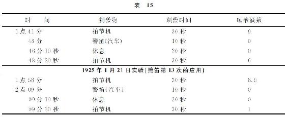
一般地说，上述的间隔时程是因附加动因强度的如何而有若干动摇的。
这样，在上述的场合，我们看见兴奋过程与制止过程很有趣的互相遭遇。在实验条件方面，区别是不显著的，而这现象的进程却如此不同，这应该怎样解释呢？
我们谈到了上述事实如下的解释，这是根据着该解释和我们已知的其他各事实的相符合。如果附加动因与条件刺激物在时间上互相一致（完全同时地或几乎同时地，就是说，附加动因的作用是以新鲜痕迹的形式发挥地），那么，两者就共同地形成一个仿佛特殊的新刺激物，其一部分的性质与该原有条件刺激物相似，而另一部分的性质却不相同。我们以后在第七讲里会知道，相近似的各刺激物，譬如相近似的声音，或皮肤相接近的各部位的刺激物，如果其中的一个刺激物受了相当的处理而成为条件刺激物，那么，相接近的各刺激物起初也自然会有条件刺激的作用，但以后如不受强化处置而系统地被重复地应用着，这些近似的刺激物就会丧失兴奋作用，而都变成制止性刺激物。在我们现在所说明的事例，这也许就是条件性制止形成的一个时相（фаза）。可是如果附加动因在时间上多少与条件刺激物互相隔离，就是说，如果两个刺激难于融合为一个刺激，或完全不互相融合，那么，就会由于这个新附加动因而有形成条件刺激物的通常过程，并且其时旧条件刺激物所具有的意义，与通常形成多数条件反射时的无条件刺激物相同。根据这个见解，在条件性制止发展的场合，附加动因愈强，附加动因与条件刺激物两者的间隔时程会愈长的缘故就可以了然。强的动因残留着更长的后作用，所以即使它与条件刺激物的间隔时程很长，它也会与条件刺激物相融合而共同地形成一个特殊的神经动作。不论我们这个解释是否正确，这个现象的本身是一个鼓舞实验者的例子，就是中枢神经的活动虽然是如此复杂，可是我们居然能够发现一定的规律。
然而与这几乎恒常的情形并行地，我们不能不提及一些很稀有的事例，这是在未受手术伤害的正常动物和受了手术的动物两者的大脑两半球范围以内都能发生的，就是，在这两类狗的神经系统兴奋性显然增强的场合，并且在附加动因与条件刺激物同时给予的场合，长时间地强烈出现的不是条件性制止，而是第二级条件反射的形成，而且以后条件性制止和第二级条件反射都可能同时存在。
实验 卡谢里尼诺娃（Н.А.Кашерининова）的研究。条件酸刺激物是皮肤机械性刺激，拍节机响声是复合制止物的（тормознаякомбинация）附加动因。在这复合制止物重复地应用到第25次的场合，1分钟内的刺激只分泌了3滴唾液，而其时单独被使用的条件刺激物，却在1分钟内分泌了29滴。在这个复合制止物应用到第34次以后，个别地被试验的拍节机响声引起8滴的唾液分泌，而拍节机在应用于这个制止性复合物以前却完全不具有唾液分泌的作用。
可能的是，这样的情形是以极微弱的、很迅速经过的形式而常常发生的。
这样，条件性制止过程发展进度的本身也是很多种多样的。或者在新的附加动因第一次与阳性条件刺激物相结合的时候，条件反射的作用，就即刻减弱或完全消失，而在这复合物重复地被应用以后，该条件反射作用会恢复起来，但以后又会渐渐地减弱到零。或者在另一个附加动因的场合，如果与条件刺激物的通常作用相比，该复合物开始作用时的阳性效果却是更显著的，但以后才又会开始渐渐地薄弱下去，一直到零。在其次实验方式变异的场合，与该条件刺激物的正常作用相比，复合制止物的最初效果虽然较小，但以后却大于条件刺激物的作用，再次才又会渐渐减弱到稳定不变的零值。这种种的差异具有什么意义？并且它与什么东西有关系呢？这是与附加动因所引起的新异反射的强度有关的。复合刺激物初期即刻发生的效果减弱，无疑地是一种外制止的过程。假定某个附加动因引起非常强烈的探索反射，这探索反射就会即刻制止阳性反射。如果另一个附加动因只伴发微弱的探索反射，那么，复合制止物最初的效力会增大，这无疑是解除制止的过程，因为即在条件反射的通常场合，在条件刺激物作用开始以前，有一个内制止过程的时相，这也就是由于微弱的探索反射而能除去的。在下次讲义里研究内制止第三场合的场合，我们会知道内制止过程的该时相。复合制止物的最初效果减弱，而其次为效果增强所代替，这是由于附加动因的重复应用，该动因所引起的新异反射会渐渐减弱的缘故；这新异反射起初制止着条件反射，其次在这新异反射作用减弱的场合，它就解除制止化了（растормаживать）条件反射的效力，这是在今天讲义的最后可以看见的。
自然界的一切可能的动因都能以附加动因的性质，而有助于条件性制止的形成。当然，对于该动因，实验动物如果没有适当的感受器存在的表层组织，条件性制止的形成就不可能。在我们下述的实验记录里就会看见不少这些动因的实例。
如以前曾经提及，附加动因之有助于条件性制止的形成，不仅以与条件刺激物同时应用的形式，而也以该动因残遗痕迹的形式，并且通常是以早期痕迹的形式，就是说，以附加动因终止后即刻直接移行于条件刺激物的形式；只在极强有力的动因的场合，该动因比较很迟的痕迹也可能形成条件性制止，这是我刚才所指明过的。
然而当复合制止物已经完全形成的时候，那么，以后附加动因与条件刺激物的间隔时程的增大是可能的，甚至间隔1分钟，该复合制止物的作用仍然可以保存。
并且也有以时间本身当做内制止的动因的实验例。克尔瑞序可夫斯基（К.Н.Кржышковский）的与此有关的实验如下。对于一只狗，形成了酸反射的条件性制止（某音是条件酸反射的刺激物，皮肤机械性刺激是附加动因）。经常地某一个目的，总是在最后一次酸液注入以后过19~20分钟，这酸反射的条件性制止被应用一次。于是发生了如下的情形：在酸液注入后第19~20分钟的时候，即使只使用条件刺激物的音而不并用皮肤机械性刺激，该条件刺激物也只引起极小量的唾液分泌，或者完全不引起分泌。
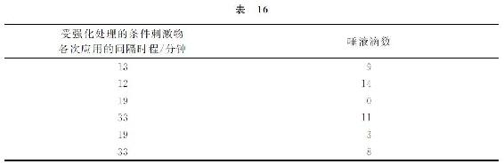
条件性制止形成的速度及条件性制止的完全度（绝对性制止或者相对性制止，абсолютноеилиотносительноеторможение）都是与若干条件有关的。
首先是该动物的个性，即该动物神经系统的类型：或者是兴奋型的（раздражительный），或者是平衡型的（уравновешенный），或者是容易制止型的（тормозимый）。有些狗需要长时间，才能够有制止过程的形成，并且不能形成完全的制止过程。相反地，对于有些狗，复合刺激物不过重复地被应用几次以后，坚稳的、完全的制止过程就会形成。
其次，附加动因的强度具有显著的意义。对于一只狗［密序托夫特（Г.В.Миштовт）的实验］，拍节机是酸条件刺激物，皮肤的温度刺激（4~5摄氏度）是附加的刺激。在皮肤温度刺激第30次被使用以后，制止过程才开始出现，但在这复合制止性刺激试行145次以后，也不曾能够形成完全的条件性制止。这只实验狗4个月内不受实验处置以后，以同一目的而对它再试用1摄氏度的温度刺激，应用了12次，就形成了完全的制止。可是结果的如何，也由于条件刺激物和附加动因两者间强度的关系而决定。这样，在与条件刺激物的拍节机互相结合而对皮肤应用45摄氏度做附加刺激的场合，并不曾能够形成完全的条件性制止复合物，然而对于这同一只的狗，在以光的刺激当做条件刺激物而并用相同的附加动因的场合，完全的条件性制止就容易形成［弗尔西柯夫（Фурсиков）的实验］。
最后，还有一件不能不注意的事实。如果对于同一只狗所使用的一切其他条件都是相等的，那么，条件性制止第一次的形成，比以后条件性制止的形成，通常需要远远更长的时期。
直到现在，我只谈及条件性制止，但不曾证明这实在是一种制止过程，而不是因为有计划地不并用无条件刺激物强化手续所引起的、复合物效果的消失。我们会陆续地说明所搜集的、与这个问题有关的资料，同时也就进行上述的证明。第一是如下的证明。
与条件性制止过程发生有关的附加动因究竟是什么？这附加动因的决定性的机能是什么？当然需要种种其他方式的实验以检查这附加动因，这问题才可以解决。在条件性制止充分形成以后，如果单独地应用该附加动因，它完全不发生任何外显的效果。可是如果把这个附加动因，与以前不曾共同应用过的条件刺激物互相复合而进行实验，该动因的意义就完全明了地出现。在与这复合制止物的附加动因互相结合的场合，这些其他的条件刺激物的效果，比平时即刻非常减弱。这样的作用不仅对同族反射的条件刺激物能够发生，就是说，不仅对于同一的无条件反射所形成的同族条件反射能够发生，而且也对于异族条件反射，并且甚至对于无条件反射也能发生。
与此有关的实验如下。
一只狗已经形成了三种的条件食物性反射。条件刺激物是在狗眼前电灯的开亮、回转物、调音管的cis音。对于这个回转物的条件反射，个别地应用了皮肤机械性刺激和拍节机的响声，各形成了完全的条件性制止［来柏尔斯基（Н.И.Лепорский）的实验］。
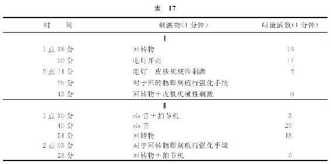
在第一实验，皮肤机械性刺激第一次与电灯复合的结果，就有很强的制止过程的发生，不过不是完全的制止。在第二实验，把cis音与拍节机第一次互相复合，所得的结果也是相同。
由于这些结果可以知道，对于某一个条件反射已经形成条件性制止的动因，对于第一次被复合应用的同一无条件反射有关的其他各条件反射也会发挥制止性效力。
可是不仅如此，这动因，对于用完全相异的无条件反射有关的各条件反射，即对于异族条件反射，也同样地具有制止性作用。
对于一只狗，拍节机的响声是条件食物性刺激物。哨笛音是与拍节机相结合而形成的制止复合物的附加动因。皮肤机械性刺激是酸的条件刺激物［巴勃金（Вабкин）的研究］。
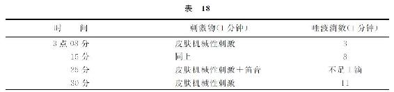
从条件性制止对于反射的复合物所发生的作用大小而言，这是与接受这条件性制止作用的反射性复合物的强度相关的。
现在从来柏尔斯基的研究之中，举出一个有关的实验。一只狗有三种条件食物性反射：回转物，电灯，音。用皮肤机械性刺激，分别对于这3个条件反射形成了条件制止物，并且每个制止性复合物的效力都不引起一滴唾液的分泌。但是如果同时应用3个条件刺激物，就比个别地应用最强刺激物的场合，显出远远更大的效力。
如上表所指示，在个别地使用场合能对各条件刺激物发挥完全制止的（即制止到零）条件制止物，对于由三个刺激物而建立的比较更强有力的复合刺激物，不过只部分地发挥了制止作用。
由于上述的这些实验而引申如下的结论，这是极正当的。就是附加动因在条件性制止过程完全发展的场合，该动因本身是引起制止性作用的条件，成为真正的条件性制止物（условныйтормоз），因此我们现在也使用这名称，以表示这类动因。
自然明白，制止复合物的本身也能显现这同样的制止作用。并且这样的制止作用，即使在刺激本身停止以后，在一定的长时间以内还是残存的。这就是后继性制止（последовательноеторможение），可以继续作用几分钟乃至几十分钟。这后继性制止的作用，不但个别地对于复合制止物中的条件刺激物，而也对于其他各条件刺激物，甚至对于异族条件刺激物，也是会发生的。
与此有关的实验如下。
Ⅰ.对于一只狗，回转物是条件食物性刺激物，加尔顿笛（гальтоновскийсвисток）3万的振动音是条件制止物［尼可拉耶夫（П.Н.Николаев）的实验］。
在复合制止物作用停止以后，该复合物的条件刺激物减弱了几十分钟。
Ⅱ.对于一只狗，回转物是酸条件刺激物，音是食物性条件刺激物。皮肤机械性刺激是食物性条件刺激物的条件制止物［伯尼惹夫斯基（Н.П.Понизовский）的实验］。
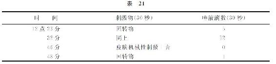
在上例，异族条件反射也受了后继性制止的影响。
条件制止物在单独地被给予的时候，也与应用制止复合物相同地，引起后继性制止。
现在还有要注意的两件事情。后继性制止是能累积化（суммироваться）的。如果我们应用制止性复合物不只是一次，而是继续若干次，那么，重复地应用的次数越多，该制止性复合物的后继性制止的作用就越强、越显著。
实验 拍节机是食物性条件刺激物。回转物是这条件刺激物的条件制止物［彻伯他来娃（О.М.Чеботарева）的实验］。
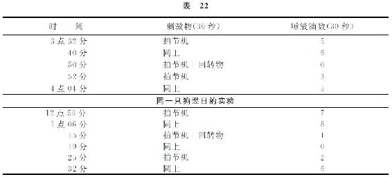
第一天实验的条件反射量，起初是比较小量的。给予制止性复合物后，经过了1分30秒钟，条件反射量就减少了一半（不是6滴，而是3滴）。在第二天的实验，即在应用制止性复合物两次以后，经过了5分30秒的间隔时程，条件反射量不过是原有反射量的四分之一（由8滴而成为2滴）。
第二件与后继性制止过程有关的非常重要的事实，就是在重复地应用制止性复合物的场合，在许多实验内，该后继性制止的继续时间慢慢地会缩短。最初期的制止作用有几十分钟之久，可是以后渐渐地过几分钟，甚至于过数秒钟就消失。
实验 回转物是食物性条件刺激物，音是对于该条件刺激物的条件制止物（尼可拉耶夫1909年6月2日的实验）。
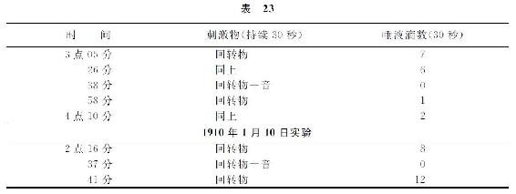
从使制止性复合物及条件制止物的作用故意地破坏的问题而言，这在全体上是一个相当复杂的现象，并且直到今天，事实上我们还不曾知道这现象有关的全部详情。我现在只提及最确定的一些情形。如果要使制止性复合物的制止作用完全消灭，当然最自然地迅速地奏效的方法，就是采取与形成条件性制止的手续相反的办法，就是说，在应用制止性复合物的时候，须要并用该条件反射的无条件刺激物。
实验 调音笛的音是酸反射的条件刺激物，皮肤机械性刺激是有关的条件制止物（克尔瑞序可夫斯基的实验）。
非常富于兴趣的是，上述的破坏条件性制止的手续，如果与该制止性复合物中受通常强化处置的条件刺激物的应用正确地互相交替，就会使破坏的进程非常缓慢。在以后，这个事实会有详细的研究和分析（参看第十一讲——译者）。
此外，在制止性复合物是逐渐弱化的一切场合，也有制止性复合物的迅速破坏，而其破坏作用是即刻发生并迅速地又消失的。如果在制止性复合物对动物发挥作用的时候，我们所谓中等强度的外来性消去性制止物一组中的某些刺激物恰巧与动物相接触，那么，制止性复合物就多少显出阳性作用，而这阳性作用是该制止性复合物中的某条件刺激物单独应用时候所特有的。所以消去性制止物（гаснущийтормоз），会解除制止性复合物的制止作用，就是说，我们现在所遭遇的现象正是我们在研究消去性反射的场合所谓解除制止的现象。
尼可拉耶夫说明这些关系的实验如下。
食物性条件刺激物是回转物，音是这条件刺激物的条件制止物，皮肤机械性刺激和温度刺激、拍节机响声等，是新异动因。
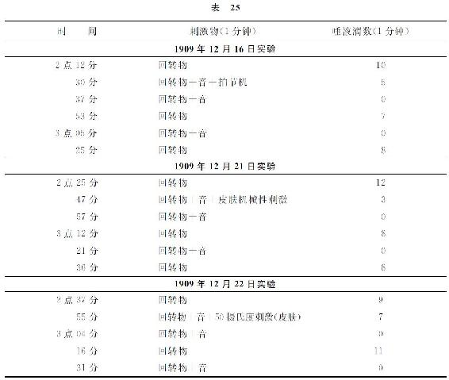
这样，在拍节机的响声、皮肤的机械性刺激、温度刺激等，新异动因被应用的场合，其时制止性复合物的制止作用就暂时消失，于是这制止性复合物多少显出初期的阳性作用。
对于同一狗的如下实验很有兴味。为了应用一个新解除制止物（растормаживатель）——即气味——的目的，狗被带到另一个新房间里去。在这房间里有发出气味的器械。这器械在狗的眼前不仅当做一个新东西而具有作用，并且电气马达的不断地吹动及其发出的声响也对于动物发生作用，就是说，这等于是一些新异刺激物的复合物。
实验 这是上述实验后的翌日（1909年12月23日），对该狗所做的实验。
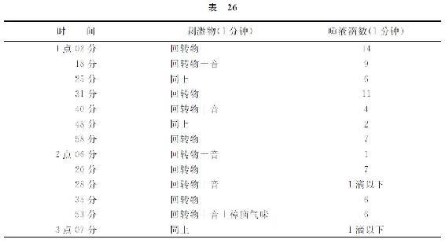
各新异刺激物的新复合物对于原有的制止性复合物显出解除制止的作用，可是这些新异刺激物对动物的作用与时俱进地渐渐衰弱，而在实验开始以后大约经过了一点半钟，该作用就完全消失了，这正是新异刺激物当做外制止物所常有的现象。不能不说明，在上例的场合，狗是长久在研究所饲养的，受过了各种环境变化的影响，所以对于这只狗，一切新的变化几乎不发生作用，或者所发生的作用是迅速消失的；这只狗对于新的变化不久就成为毫无关系的。因此这只狗在新的环境里即刻有解除制止现象的发生。同样的情形也在应用樟脑气味刺激的场合可以发现。从第一次应用起，樟脑气味就解除了制止性复合物的制止作用，而在第二次使用的时候已经成为对动物无关的刺激了。
尼可拉耶夫的刚刚进入研究所的另一只新狗的实验结果是完全相异的。这只狗可能具有另一种神经系统的类型，是容易制止型的。
实验 1910年2月15日。回转物是食物性条件刺激物，音是这个条件刺激物的条件制止物。拍节机是新异的动因。
第二天的实验也获得完全相同的结果。在第三天（2月17日）着手实验的开始，先把拍节机发出响声1分钟。该实验以后的经过如下。表281910年2月17日实验
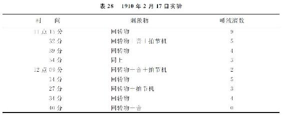
在2月15日的实验，开始当做新异刺激物的拍节机，在第一次被应用的时候，对于制止性复合物完全不发生解除制止的作用，可是事情是这样的，就是这拍节机只和条件刺激物相结合的时候，它本身就对该条件刺激物显出完全的制止作用。这样，在三种刺激——回转物+音+拍节机——相结合的场合反射成为零的事实，可以说不是内制止依然不受影响的零，而是一种外制止的零，这是由于拍节机以新异反射刺激物的性质，在第一次被应用的场合，发生了很强作用的缘故。可是拍节机在2月16日几次重复被应用后，并应用于2月17日的实验开始，于是它当做新异反射的刺激物的意义就减弱了，同时它对阳性条件刺激物制止作用也几乎地或者完全地消失了，而对于制止性复合物，它的解除制止作用也非常明了地显出，这是在2月17日的实验里了然可见的。
当然在说明这些实验的场合，我们的表现方法，是似乎人工的、随意的，然而这个现象是很复杂的，它的内在机制的分析，现在依然是不可能的，所以在把这复杂现象最初系统化的时候，这种方式的说明是不能避免的。实际上的情形和这些现象的连续状态，不能不用这种形式的表现而加以证实。
制止性复合物的解除制止过程，在单纯性、恒常性制止物一组中的刺激物的场合也是可以实现的。尼可拉耶夫的与此有关的实验如下。回转物是食物性条件刺激物，音是这条件刺激物的条件制止物。
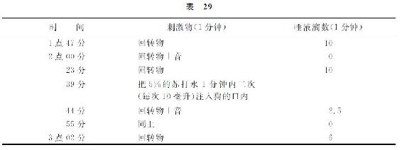
在苏打液与制止性复合物互相结合以后，苏打液的潜在性后作用就解除了这复合物的制止作用。
强有力的动因的潜在后作用，如果与制止性复合物互相结合，譬如把奎宁的浓厚溶液注入于动物的口内，那么，起初，解除制止过程是不能发现的。这与在刚才所说的实验里面，当做解除制止物而应用拍节机的情形是相同的。然而在给予奎宁以后，经过了相当长的时间，而奎宁的潜在后作用已经若干减弱的时候，再检查制止性复合物的作用，那么，奎宁的解除制止的作用就很显然，这是与拍节机的实验完全相同的。
上述关于条件性制止的所有资料使我们完全明白，在条件性制止的场合所发生的过程是与在反射消去场合的过程完全相同的。这两种过程发生的基本条件是相同的，就是不并用无条件刺激物。在这两种过程进展上，过程的发展都是渐次的，都是由于重复的应用而渐次增强的，并且其后继性制止作用，不仅限于受了消去性实验处置或条件性制止形成处置的条件刺激物，而也及于其他的各条件刺激物，甚至还影响于异族的条件刺激物。并且，最后这两种场合的制止过程在新异动因的影响之下，迅速地、一时地会被破坏。唯一的区别，就是在反射消去的场合，阳性条件刺激物单独地会失去作用，而在条件性制止的场合，却与新异动因相结合以后，阳性刺激物才似乎是另一种刺激物。
第六讲
诸位！今天我改谈内制止过程的第三个场合，这就是我们所谓条件反射的延缓化（запаздывание，以下译为延缓过程）。
在条件反射形成的场合，条件刺激物与无条件刺激物的互相联合（комбинирование，以下简称复合），在条件刺激物的开始直到无条件刺激物开始的瞬间两者的间隔时程上，可以很有种种不同的间隔时程，这是自明的。这间隔时程有时可能是很短的，不过1~5秒钟，甚至可能是几分之一秒（可是如已经指示过的，必须先给予条件刺激物），但也可能是很长的，达到数分钟之久。这样就发生各种不同的条件反射，于是我们用不同的名称加以区别：或者是同时性条件反射（совпадающие），更正确地说，这就是几乎同时性的条件反射；或者是延时性反射（отставленные），也就是延缓性反射（запаздывающие）。间隔时程具有很重要的意义，因为第一，我们现在将从事讨论的一种制止过程是由间隔时程的条件如何而决定的；第二，像我们以后会明了的，间隔时程能决定每个条件反射的最后命运。
如果所采取的间隔时程总是微小的，譬如是1~5秒，那么，在条件反射形成的场合，唾液分泌也开始得很快，就是在条件刺激物开始的即刻以后。在间隔时程增大的场合，唾液分泌反应的出现就越加延缓，就越与条件刺激物的开始时间相隔离。这个延缓可能与条件相当地达到数分钟之久。延缓性过程是可以用各种不同的处置而形成的。有时我们应用几乎同时性条件反射而开始实验，条件反应就发生得很快，不过需要2~3秒钟。其次，我们逐渐增大间隔时程，假定每天增大5秒钟。如果我们不曾在某一定的间隔时程上停止，就是说，如果不曾在某一定时间的延缓性过程上停止，那么，与此相当地，条件性效力（即条件反应）也就渐渐延缓。在另一方式的实验里，我们从几乎同时性条件反射即刻就移到间隔时程很大的条件反射的实验。于是在起初，应该形成的反应却完全消失，在很久的试验期间内只有很长的零时相的出现（длинныйпериоднулей），而这零时相是我若干同人在论文里所用的表现。最后的结果是，在靠近与无条件刺激物相结合的瞬间才有唾液分泌的出现。如果这样安排的实验多次重复下去，这唾液分泌就越来越明显，渐渐地向后方退行，就是说，与条件刺激物开始的瞬间相接近，并且在最后，唾液分泌出现的时间在与条件刺激物开始瞬间有一定距离的部位固定着。如果从最初起就用很大的间隔时程做实验，最少在大多数实验狗的场合，这是几乎不可能的，因为在这样的场合，实验狗就会迅速地陷入于瞌睡的状态，于是就不能获得条件反射。由于上述的这种困难，对于最后的这实验办法，我们还不曾充分地加以研究。
现在从惹华德斯基的研究里举出一个延缓性反射的例子。惹氏关于这一类内制止过程做了特别仔细的研究，这是他的功绩。
对于实验狗，哨笛音是酸的条件刺激物。条件刺激物的开始和无条件刺激物的开始之间有3分钟的间隔时程。
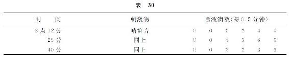
延缓性反射发展的速度是非常多种多样的。第一，该速度与动物的个性即动物神经系统的特性有非常显著的关系。有些狗的延缓性过程发生得很快，相反地，其他一些狗的延绥性反射却发生得很慢，就是说，唾液分泌的出现时间顽固地不与条件刺激物开始时间相隔离。对于一些狗，只要在一个实验里将间隔时程较长的反射重复应用几次，延缓性过程就会发生，而对于另一些狗，却需要经过一个月左右或一个月以上。在前者的场合，延缓性过程屡屡很快地移行于睡眠状态，因此对这一组内的若干实验狗，如果要做系统的研究，就只能限于短时性延缓性反射的实验，就是说，只要获得比较小量的唾液分泌，就不能不满意。其次，条件刺激物的种类有显著的影响。皮肤的机械性或温度性刺激和光线的刺激比音响的刺激更容易引起延缓性反射的发展。一般地说，在其他条件都是相同的场合，前一组的刺激所引起的条件反射效力比后者是更小的。现在举出耶科夫来娃（В.В.Яковлева）一些实验，以表示这些关系。
狗的三种条件食物性刺激物是：拍节机的响声，皮肤的机械性刺激，电灯在眼前的开亮。
1924年4月9日的实验。无条件刺激物与条件刺激物的间隔时程30秒。
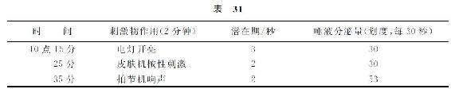
1925年4月24日实验。几种刺激物的反射，在前一个实验与这个实验间的一年内，为了其他的实验目的而被应用了多次；以后这几种的反射都各有更大的间隔时程。就是说，起初是间隔1分钟，以后间隔2分钟。各延缓化的反射重复地被应用的次数都是相同的。
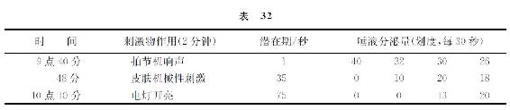
具有巨大影响的是短时间延缓性反射长时期的重复应用。在这场合，如果使条件反射开始与无条件反射间有巨大地延缓的间隔时程，更显著的延缓反射就有时顽固地不发生。
末了，在仅应用一种刺激的场合，譬如专用声音的刺激，看起来，延缓性反射发展的或快或慢，就决定于该刺激是连续性的或间断性的。在连续性刺激的场合，延缓性反射发生更快。
这样，在无条件刺激物与条件刺激物的间隔时程很大的场合，条件刺激物的效力是由两个时相而成立的，而这两时相的时间却是屡屡相同的：就是初期的不活动性时相和第二期的活动性时相（недеятельнаяндеятельная）。不活动性时相究竟是什么呢？刺激过程逐渐增长，慢慢地累积起来，经过很长的时期以后，才显现可以目击的效力呢？抑或是刺激过程虽然有充足的力量，老早地已经存在，可是在一定的时期以内，却为什么东西所隐蔽住呢？从我们采取通常的处置所获得的延缓性反射的事实而言，这已经是意味着第一个假定的不可能。因为在最初间隔时程很短的场合，我们已经获得完全表现的条件刺激效力。那么，究竟为什么在同一条件刺激物作用时间较长的场合，这刺激物却需要更多的累积时间呢？如果这是一种疲劳的表现，那么，疲劳也许必定引起效力的逐渐减弱。可是效力并不减弱。在利用第一个处置以获得延缓性反射的场合（处置法在本讲的开始已经举出了），条件反射的效力虽然是延缓的，可是越过越会增大，而在应用第二个处置方法的场合，效力起初消失（即零时相），但以后重新出现，并且会长久地增大起来，最后才变成恒常的最大数值。因此，就剩下第二个假定，即是刺激（兴奋过程）被掩蔽的、暂时地被抑制的假定。这可以由如下的事实而说明，即是第一时相的兴奋过程可能利用某种处理方法而迅速地出现。
如果我们在延缓性反射的不活动时相，对于该动物应用任何其他的一种动因，而该新动因直到当时对于该动物的唾液腺机能并无任何关系，那么，我们现在会即刻获得该动物唾液的分泌，并且这唾液分泌屡屡是大量的，同时还有相当于该条件刺激物的运动性反应，这就是说，条件反射的表现是完全的。
现在举出惹华德斯基的一些实验。
皮肤的机械性刺激是条件酸性刺激物。从连续地发挥作用的条件刺激物的开始到无条件刺激物的开始之间，有3分钟的间隔时程。直到试验的当时，拍节机的响声对于酸性反射不曾有任何关系。
另一个实验是用另外一个新异刺激物对该同一动物施行的；另一新异刺激物是无杂音的回转物体。
此处发生了一个很有兴趣的、出乎意外的现象：已构成的条件刺激物（指皮肤机械性刺激）单独地在1~1.5分钟的时间以内，并不发生作用，而其时与这条件刺激物第一次相结合的一个无关系的动因却即刻成为一个引起该条件刺激物规律性反应的决定性条件。
很显然，此处与我们有关系的一个现象，就是我们从前曾经认识过的所谓解除制止（растормаживание）。因为在我们的研究室里，最初这解除制止由惹华德斯基做了最有系统的研究，所以我以后会更详细地说明他的实验。
像你们已经会注意到的，在三次讲义里我接连地谈及解除制止，并且关于它，引用了许多记录的材料。我以为，这是有正当理由的，因为这个现象在生理学方面具有一种相对的特色；当然，即在现在的神经生理学范围内，也还有与这现象相同的情形，然而关于解除制止的内在机制的解释依然是完全不明的。我们可以抱着一个希望，就是丰富的事实详情会在将来的某一个时期有助于对这一现象机制的理解。
现在我请诸位注意刚才引用的两个实验中的第一个。在这第一实验里我们明了地看见，与皮肤机械性刺激相结合的拍节机响声不仅引起了不活动时相的唾液分泌，并且同时在第二个活动时相也强烈地减弱了唾液分泌的效力。在专用皮肤机械性刺激的一切场合，都在1.5分钟以内，所分泌的唾液是29~46滴；可是在皮肤机械性刺激和拍节机并用的场合，却只分泌了17滴。这样，我们发现了这新异动因的双重的作用，就是在不活动性时相具有解除制止的作用，而在活动性时相却具有制止性作用。
如果使外制止动因一组中的各种不同的动因与延缓性反射的条件刺激物互相结合，那么，就会在延缓性反射的经过之中发生各式各样的变动，可是在这些变动的方式里却容易发现一定的规律性。在我们这些实验里所应用的一切新异动因，按照对延缓性反射所发生的影响如何，可以排列成如下的系列。
Ⅰ.应用于皮肤的5摄氏度及44摄氏度，樟脑的弱度气味。
Ⅱ.0.5摄氏度及50摄氏度。
Ⅲ.在狗的眼前（无杂音的）回转着的物体，拍节机的响声，皮肤另一些部分的机械性刺激（如果皮肤某一定部位的机械性刺激是已经形成的条件刺激），中等强度的哨笛音，乙酸戊酯（уксусныйамил）的气味。
Ⅳ.樟脑的强烈气味，强烈的哨笛音和电铃音。
第一系列的刺激物对于延缓性反射的进程不发生任何影响。
第二系列的刺激物只对于延缓性反射的第一时相显出作用，引起该时相的唾液分泌。
策三系列的刺激物对两个时相都发生障碍；在第一时相，引起唾液的分泌，在第二时相却使唾液分泌量少于正常。
最后，第四系列的刺激物对于第一时相，几乎地或完全地不引起任何变化，但几乎或完全地抑制第二时相的唾液分泌量。
必须补充地说，如果采取一定的谨慎步骤做实验，这些实验的进行情形，屡屡是具有非常精确性的。
现在举出一些实验，说明上述的关系。
皮肤的机械性刺激是条件酸性刺激物。条件刺激物的开始与无条件刺激物的开始间隔3分钟。新异动因是对皮肤应用的44摄氏度、0.5摄氏度、乙酸戊酯的气味及电铃等。
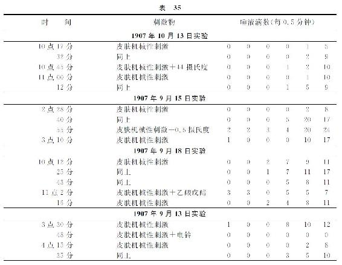
如果新异动因与条件刺激物互相结合的时间，并不是在条件刺激物开始直到无条件刺激物开始的全时程上，而是个别地或者在不活动性时相（最初的1.5分钟）上，或者在活动性时相（第二个1.5分钟）上，那么，所发生的结果在实质上是与上述的结果相同的。
举例如下。
实验狗是上述实验所使用的一只，刺激物的种类也与上相同。
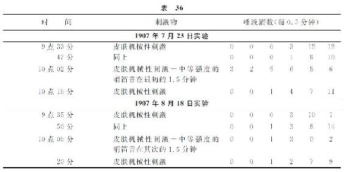
上述第三组的新异刺激物分别引起第一时相的唾液分泌，但反而使第二时相的唾液分泌减少；在上述的第一个实验里，不过只有唾液分泌的若干减少，这当然是由于刺激的残存效果而发生的。
现在发生一个问题：这些新异刺激物的系列有什么意义？这系列成立的原因是什么？按照许多实验资料而明显，这是各种新异刺激物的相对的生理学强度的问题，也是动物对这些刺激物所发生的反应程度的问题。上述的系列是按照各刺激物作用强度的逐渐增大而构成的系列。在同一种类的动因以各种不同的强度而被应用于实验的时候，并且在实验动物的反应与此相当地发生差异的时候，在若干场合，上述系列成立的关系就会如表里的说明而非常明显。其次，在全部各实验里，动物的运动性反应的表现关系也是与此相同地可以发现。在上述系列中最初的一些刺激物的场合，并不现出任何微小的反应；在其次系列中以后的一些刺激物的场合，反应却按着系列中的地位而越过越强、越过越延长了；最后，我们此处所应用的各新异刺激物就是我们所谓外制止的各种动因，而这些动因的制止作用和正在研究分析中的各反射的活动性时相上是显著的，按照上表中的顺序越向下方进行，该制止作用就更逐渐强烈，最后就达到完全制止的程度。所以，上表中的各新异刺激物的系列，事实上是按照这些刺激物对有机体所发生的作用的强度的逐渐增加而配置的一个系列，而这类作用却从轻微的探索反射开始。
由于下述变式的实验，也可以完全证实我们上述事实的解释是正确的。如果新异刺激物与延缓性反射重复地互相结合，那么，该刺激物的制止作用对于延缓性反射第二时相是逐次减弱的。当做消去性制止物（гаснущиетормоза）看待的各新异刺激物的这个特性是完全自然明了的。
下述实验是对上述实验的同一动物施行的。
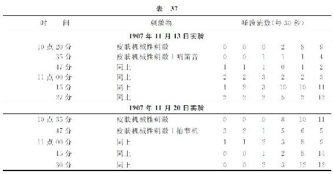
由于这些实验，我们看见，新异刺激物的制止作用对于活动性时相是与实验的重复回数相当地渐渐减弱的，这在上方的第二实验里是特别正确的。
在对一只动物的上述一切实验里显然出现的关系，在其他各动物的场合也重复地获得了证实。可能的区别，不过是存在于新异刺激物系列构成方面的若干变动，各刺激物的排列顺序一部分与上述系列的排列不同，这是当然的。对于各种不同的新异刺激物，动物所表现的反应强度很有差异，甚至是往往非常差异的，而决定这强度差异的是动物神经系统的个性，动物的过去生活，动物在生活中所遭遇的刺激物的如何。我们每个人在自己本身上，这种关系也是很可以知道的。
这样，我们不能不承认，在新异刺激物的影响之下，上述延缓性反射效力差异的顺序，在实际上是由这些刺激物的生理学的力量而决定的。在生理学力量微小的场合，在反射上没任何显然可见的变动，在这力量若干加强的场合，只是不活动性时相会有若干变动，就是变成活动性时相。在这力量更显著地加强的场合，活动性时相也同时变动，就是其反应度会减退，屡屡与现在已经变成活动性时相的第一时相的反应度相等，有时甚至会弱于第一时相。末了，在若干新异刺激物的力量得到最大加强的场合，延缓性反射在第一第二两时相的全时程上都变成零。
在上面记载的新异刺激物影响下，延缓性反射所发生的各种变动，有两个特别需要注意的重要事实，与中枢神经系的机能相关。第一个事实是，对于阳性条件刺激物发挥作用的新异刺激物，会制止条件刺激物，而该新异刺激物对于阴性制止性条件刺激物，却具有解除制止的性质；换句话说，在这两个场合，新异刺激物将中枢神经系统的现有过程变成相反的过程。第二个重要的事实是，制止过程如果与兴奋过程比较，是比较不稳定的，因为制止过程在比较弱的新异刺激物的影响之下，更容易发生变动。
关于这两点，我有如下偶然的富于参考兴趣的实验。在一个远隔的新的地方（要把实验狗运去的地方），我做了有关条件反射的公开演讲，而环境对于我们的实验动物大体上是异常的。在第一次演讲的时候，示例的阳性反射五、六个实验是完全顺利地进行的。在第二次演讲时，利用相同动物所做的阴性条件反射的全部实验（也是五、六个）都是不成功的，就是说，在这些全部实验方面，都出现了解除制止的现象。这样，同一的该环境对于阳性条件反射不曾发生任何障碍，可是甚至于重复地被应用的该同一环境，却对制止性条件反射有明显影响。
在更后些的讲义里，我们会再讨论这些事实，该许多事实是有关于兴奋过程和制止过程两者间的相互关系的。
因为在延缓性反射的第一时相我们所见的制止过程是与消去性反射及条件性制止的制止过程完全相同的，所以我们不能不期待在这三种场合制止过程的详情上有类似的关系。
在消去性反射和条件性制止的场合，我们曾经看见，从某一定的一个条件刺激物所获得的制止过程是自然传布于其他条件刺激物的，并且传布的程度却由这些刺激物相对的生理学的力量而决定。如果其他的各条件刺激物弱于发展了和形成了制止过程的某一个条件刺激物，那么，这些其他各刺激物的第二级的后继性制止也是完全的；如果其他各刺激物是比较更强的，那么，第二级的制止就只是一部分的，就是说，这新形成的制止过程的强度仿佛是可以由该制止过程原有条件刺激物的强度而能正确测定的。同样的情形也可以被发现于延缓性反射的制止过程。与延缓性反射条件刺激物强度的变化相并行地，不活动性时相与活动性时相两者间所确立的关系会非常紊乱，即与刺激物强度的变动相当地紊乱，或偏于一侧，或偏于另一侧。
用同一只动物所做的有关实验如下。
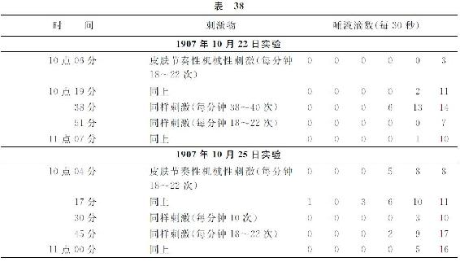
在这些实验里，如果不是活动性时相与条件刺激物的增强相并行地显然地增强，就是与条件刺激物的减弱相并行地，活动性时相非常减弱。
正是完全与此相同地，无条件刺激物的强度对于延缓性过程会发生影响。在条件食物性刺激物上，这是很方便地可以证实的。只要用普通喂养的动物和受过若干饥饿处置的动物做实验，比较延缓性反射两个时相的分配情形就行了。
实验 另一只狗，中等强度的哨笛音是条件食物性刺激物。间隔时程3分钟。
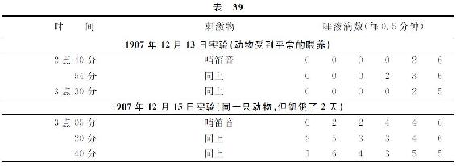
在饥饿的场合，不活动性时相的制止性过程几乎消失了。
在消去性过程和条件性制止的场合，我们所看见的累积作用（суммация），是在延缓性反射的场合也能观察的。这在如下的实验里显然地表现出来。
皮肤机械性刺激是条件酸性刺激物，间隔时程3分钟。
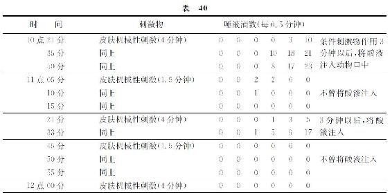
如果重复地只在起初1.5分钟内给予引起制止过程发生的皮肤机械性刺激若干次，而在随后的1.5分钟却不给与这刺激，就会引起制止过程的如此加强，于是在这实验进行以后，所应用的皮肤刺激在第一场合随后的1.5分钟非常减弱了阳性效果，而在这手续再重复一次的场合，就完全丧失了阳性作用。
在延缓性反射的场合，同一刺激物起初发挥制止性的作用，以后发挥兴奋性的作用，这个事实应该怎样解释呢？看起来，条件是完全相同的，同一刺激物却具有互相对立的作用，这是怎样成立的呢？能不能使这个现象与我们已知的一些事实互相符合呢？我想，这是可能的。在第三讲和第五讲里，我们所知道的一些动因，是可能形成阳性的和制止性的两种条件刺激物的。我们已经提及过，时间是这些动因中的一个实在的动因（реальныйагент）。在这两讲内已经说明，从生理的立场应该怎样解释这实在动因，并且引用了一些实验，说明时间当做刺激物的意义。特别请你们想起那变式的实验，其时应用了复加性刺激物（суммарныйраздражитель），而该复加性刺激物是由一个外来动因和一个一定时间因素而成立的。当时，一个外来动因，如果没有一个必要的时间因素互相平行，就不发生作用，只与必要的时间因素逐渐地接近相平行地，外来动因的作用才会出现，并且不断地会增大。在延缓性反射的场合，情形也是完全与此相同的。在上述的这些实验内，无条件刺激物与外来动因的结合，只在第三分钟经过以后，这就是说，只是第三分钟的终末与外来动因才共同地构成一个真正的复加性动因。无条件刺激物是直接地跟在这复加性动因之后的，而这复加性动因正是特殊地并且必然地成为一个条件刺激物。一个外来动因，如果与第三分钟终末相隔离的其他一些时间因素相结合，就成为另一些复加性动因，并不与无条件反射有系统的结合，因此这是必然地形成制止性反射的。由一切具有若干差异的动因而形成这种制止性反射，这是我们在条件性制止的场合曾经看见过的，并且我们在下一讲内所谓分化性制止的场合的一些更明显的实例内会认识这种制止性反射。在延缓性反射的场合，时间因素当做刺激物所具有的意义是可能更具体地更简单地加以理解的。我们在一定的时间上继续地使用某条件反射形成上所需要的外来动因，但在该动因继续作用中的每个瞬间里，该动因对于该动物是变成另一个动因的。我们知道，多么快地我们会习惯于气味、声响和光亮，就是说，我们对于这些一切东西的感觉是不断地变化着的。这当然就意味着，受刺激作用的神经细胞体验着种种不同的互相连续的状况。只是与无条件反射相一致的某个一定的状况才会成为条件刺激物。在下一讲内我们会看见，同一个动因的各种强度的分化过程会广布到什么程度，并且其时的一个动因强度会成为阳性作用的刺激物，而另一个强度却成为阴性作用的刺激物。这样，我们有若干无疑的事实，会使我们了解延缓性反射的事实。
在研究方法的关系上，延缓性反射发展的事实具有很重大的意义，并且在做条件反射各式各样研究的场合，必须不断地重视这延缓性反射。当然，为了要在各种不同条件之下能够获得关于条件反射强度的资料和条件反射许多精微差异的资料，我们必须以或大或小的时程把无条件刺激物结合的瞬间与条件刺激物开始的瞬间互相隔开。然而这个办法的结果即刻会多少引起延缓性反射的发展，就是说，其时与兴奋性过程并行地会发生制止性过程。当然，这就使研究变成复杂，因为虽然有关的问题仅是一个兴奋性过程，可是同时必然地与两个过程都有关系。上述的情形，譬如在我们通常方式的条件反射实验的场合，就使这些反射真正潜在时间的决定成为不可能了。在我们做研究的时候，通常所谓潜在刺激时间，和我们在第一个实验里所目击的事情（请记起，在该实验里的拍节机第一次响声和最初唾液一滴出现之间相隔了8秒钟），就是延缓性反射，也就是制止期的干涉关系，也许值得一个精确的专门名称：预先的制止时期（предварителныйтормознойпериод）。所以为了决定条件反射真正潜在刺激时间的目的，必须利用些同时性反射，就是说无条件刺激物尽可能迅速地跟在条件刺激物开始之后，或者是1秒钟之后，或者是1秒钟以内。并且只在这类反射的场合，主要地利用这些反射的运动性成分，才能确信，条件反射的潜在期的数值是实在属于通常反射时间数值之内的。现在我们才从事于这种决定。在决定条件反射的反射性质的场合，我们不曾基本地重视这条件反射的其正潜在期的决定，以为在一定既知条件之下条件反射的必然性和规律性就是有关的重要证明，因为即在通常各反射的场合，各反射的潜在期的性质是显著地摇动着的，是由于中枢性联系，即中枢性道路的如何，而有差异的。可以不致妨碍条件反射的反射性质而有理由地承认，在大脑两半球里的这些联系是更复杂的。
关于条件反射许多其他问题的解决，譬如有关条件反射兴奋过程从最初开始以后的、真正不受妨碍的经过是如何的问题，这也会因为延缓性反射的妨碍而多少难于解决。在这关系上，各只不同动物神经系统的特性是有助于这问题的解决的。如上方已经指明过的，有些动物的延缓性反射是难于发展的，于是这类动物的兴奋过程就或者完全不受妨碍，或者所受的妨碍是极小的。然而即在实验者的掌握之中，也有若干的方法，可以减弱延缓性过程的影响。如果条件反射量大体上是巨大的，那么，从条件反射物开始到无条件反射物的间隔时程，应该限于尽可能地最短的时间，就是说，如果在这很短的时期以内，该条件反射量在各种变式实验的场合是足够地适于比较效果如何之用的。但从另一方面说，也有一些场合，预先的制止过程是具有若干利益的，使若干问题的解决成为可能，这是在下一次的讲义内我们会遭遇的。这样，我们必须适应这些情形，适当地利用当时的这些关系。
在上面最后的三章讲义内，我们认识了有关条件反射内制止过程的基本事实的材料，这样就不难看出内制止过程生物学的巨大的价值。由于这制止过程，大脑两半球的信号性活动不断地受着矫正而成为完美。如果在某一定的时间以内，信号性条件刺激物不曾重复地与无条件刺激物相并用，该信号性条件刺激物就对于生物个体是有害无益的东西，徒然引起能量（энергия）的浪费，所以通常在很短的时间以内就丧失它的生理学的作用。如果条件地发挥着作用的动因，不断地与某一个新异动因相遭遇，并且在遭遇的场合并没有无条件反射物的随伴，那么，该条件刺激物也会丧失它的条件性的意义，不过其丧失是限于该条件刺激物和新异动因相复合的场合，因为此时的该复合物也仿佛是构成另一个动因的。最后，如果条件性动因总是只在它出现以后的某个一定瞬间才与无条件刺激物的作用相一致，那么，它在与这无条件刺激物多少相距离的以前的一些瞬间内是不具有作用的，不过它越与无条件刺激物结合的瞬间相接近，它的表现也就越加明显。这样，我们生物个体对周围的条件具有最高度适应性的事实是不断明显地表现的，或者换句话说，生物个体对于外方环境，具有比较微妙的精确的平衡。
由上面最后三章讲义内的记载而明确了，在消去性反射、条件性制止和延缓性反射的场合，我们了解了制止性条件反射的形成。然而这些制止性反射也可以在完全另一种手续下而能够获得。如果与条件性制止性刺激物同时，短时间地应用无关性的动因，重复若干次，那么，这些无关性动因也会获得制止性的机能，就是说，它们自己独立地也会在大脑皮质里引起制止过程的发生。这个问题曾经由弗尔保尔特（Ю.В.Фольборт）特别地加以深刻的研究。他先把一些新异动因变成无关性的动因，就是重复地把这些新异动因给实验动物，直到这些新异动因对于阳性条件反射不具有制止性作用，而对于制止性条件反射不具有解除制止性作用的时候为止。以后弗氏将这些无关性的新异动因或者与一些消去性条件反射，或者与制止性复合物互相结合，其结合时间是短的，但是重复应用多次的。这样做了以后，再将这些新异动因与阳性条件刺激物相结合，检查其作用的如何，于是发现其作用是与条件制止物（условныйтормоз）相等的。当然，为了获得正确成绩的目的，不能不把这些检验重复多次，所以福氏将这受检验的复合物与无条件反射并用一次后，下一次却不并用无条件反射，严格地这样交替地做下去。这样做的目的就是在这些重复试验的场合，该复合物不致因为试验的多次重复而获得一定的性质，也就是不致是恒常的阳性或恒常的阴性。当然，另一方式的试验，就是他在做试验的时候，总是将无条件反射和受试验的复合物两者并用的方法，这是更确实的，更可信的。可是试验虽然这样地重复做下去，制止过程却依然强烈地显现。
实验如下。对于一只狗，应用了天然条件食物性反射。当这条件反射消去而达于零的时候，就用已经变成无关性的拍节机响声与这已消去的天然条件食物反射相结合，重复应用许多次，以后在这个实验办法继续进行之中，间或试使这拍节机的响声与一个阳性条件食物性反射相复合而检查其作用，并且这复合物每次都受了无条件反射即食物的强化处置。
实验在1911年9月5日施行，其时拍节机响声与已消去的条件反射的并用已经是10次以后。
1911年12月1日的实验。在这实验以前，拍节机响声已经与已消去的条件反射并用过19次。
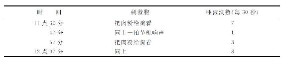
1911年12月18日的实验。在这实验以前，拍节机响声已经与已消去的条件反射并用过26次。
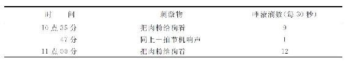
完全了然，本来是无关性的拍节机响声，在多次与已消去的条件反射并用以后，就变成制止性的动因了。这些新的、以另一种方法所获得的条件制止性刺激物，在它的特性上，是与我们所研究的消去性反射、条件性制止和延缓性反射三种的制止过程完全相同的。
只利用已消去的反射而成立的这新条件制止物，对于其他的一些条件反射，也发挥制止作用。
1911年3月15日，另一只实验狗。对于它，拍节机的响声与已消去的自然条件食物性反射已经同时并用过多次，以后再对它，与这拍节机响声并用人工的条件食物性刺激物，即樟脑气味。
新的条件制止物不仅在和阳性条件刺激物同时应用的时候显出它的作用，并且还具有后继性作用。
在重复地应用这新的条件制止物的场合，它的作用也会累积起来。以外，它的作用也能够被解除制止化。
这样就显然：如果无关性刺激进入于大脑两半球的皮质之内，而其时在皮质内制止性过程正占着优势，那么，该无关性刺激也渐渐地获得制止性的机能，就是说，如果以后它们（无关性刺激）对大脑皮质的活动中的部分发挥作用，它们就在这些部分引起制止过程。
然而有决不可忽视的事情。正如以后会知道的，对于动物重复应用而没有后作用的新异刺激物，也自然地单独地会在大脑皮质内引起制止状态的发展。因此，在上文记载的实验的场合，必须有特别的对照检查，就是在新的无关性刺激物与制止性条件反射互相结合而重复地被应用的时候，该制止性条件反射对于新条件制止物的形成究竟是否具有重要的意义。
第七讲
诸位！把周围环境中对于有机体直接有益或有害的各影响不断地加以信号化的条件反射的各动因，与这环境无限的非同样性和动摇性相符合地，是环境里最微细的要素，或者是这些要素所组成的较大或较小的复合物。这样作用之所以成为可能，只因为神经系统具有两种机制：一个机制是，为了有机体从复杂环境中把个别的要素区别开来，这就是分析性机制（анализаторныймеханизм），而另一个机制是为有机体把这些要素联合起来、融合起来，成为某种复合物，这就是合成性（综合性）机制（синтезирующиймеханизм）。所以在研究高级神经机能，即大脑两半球皮质机能的场合，我们必定会遭遇神经性分析的和神经性合成的现象。我们现在也就讨论这个现象。
神经系统总是由一些分析性装置而成立的或大或小的复合物，也就是分析器（анализаторы）而构成。光的区域是为有机体分析光波震动的，声音区域是分析声波——即空气——震动的。每个区域又把外界各有关部分碎分开来，形成各个别要素所构成的极长系列。一切可能的各求心性（传入性）神经所构成的周围性（或终末性）装置［这些装置都是与变压器（трансформаторы）相等的，每个变压器只能将一定的能量（энергия）变成神经过程］、各神经的本身和脑细胞性终末部等都必须被归结于其中从而加深。
怎样才能够客观地利用目击的反应，研究动物分析器的机能呢？像我在以前简单地指示过的，动物环境的任何动摇，如果不引起特殊的——先天的或后天获得的——反应，就一般地会引起方位判定反应，即探索反射。这个反射的第一个用处是确定动物的神经系统能够把环境内一个事物与另一事物区别到什么程度。如果假定在普通的环境里有一个一定的响声，那么，该响声高度极微小的变化，也必定引起并且事实上就引起方位判定的反应，就是说，在听器对响声的关系上，该动物会采取一定的位置。在对于其他一切刺激的场合，不论是简单的或复杂的刺激，如果该刺激一有极小的变化，上述探索反射也是同样会发生的。当然这是只在一个场合才可能的，就是在动物的分析器由于其精微度而能发现已发生的任何差异的场合。在这样的场合，探索反射或者可能单独地被应用于研究，或者可能以其对于条件反射的影响，作为有机体最敏锐反应而被应用，其形式有时是制止性动因的形式，有时是解除制止性动因的形式。然而当做研究神经系统分析性机能的、经常应用的办法，这探索反射虽然屡屡具有巨大的敏锐性，却也提供许多的不便。最重要的不便，就是在若干微弱刺激的场合，探索反射是极迅速易变的（летучий），是不能够重复被发现的，所以利用它做精确研究的可能性在实质上是不成立的。相反地，条件反射本身是一个非常适合于这研究目的的现象。我们以通常的程序，把严格地确定的某一个动因变成特殊的条件刺激物，并且由于该手续的重复应用，经常地可以确认它所具有的条件刺激物的意义，而在强度、地位、性质等等关系上与该条件刺激物相接近的动因，在一定既知条件之下，依然保持原有的状态，并不显现该条件刺激物的特殊反应，因此就容易正确地与该条件刺激物相区别。
因为实际上神经系统的分析性机能与综合性机能是经常不断地交互一定信息的分析器。因此明确了，这些一切成分都参与着分析器的机能。较为低级的分析当然是属于神经系统低位部分的性能（在动物无神经系统场合，这是该动物分化程度不高物质的性能），因为摘除大脑的有机体也对于其身体表面不同部位、不同强度和不同性质的刺激而有种种不同的反应。然而某一个动物所能达到的、最高级的、最精微的分析只由大脑两半球的帮助而成立。显然，动物个体与外界的复杂联系，动物对外方状况所具有的越来越复杂的、精确的适应力，动物与外界间的较为完善的平衡，这些都是与神经系统越来越进步的分析性机能互相平行的、不可分离的。在现代生理学里，分析性机能的研究是所谓感觉器官生理学的一个极重要的部门。这一部门提供巨大的兴趣，并且是内容丰富的，这也许一部分是因为它特别引起了以天才的亥姆霍兹（Гельмгольц）为首的许多大生理学家的注意的缘故。分析器末梢性机能有关的和分析器脑中枢终末部机能有关的学说的坚固基础，就是存在于这一部门的。分析性机能（人的）的许多极限已经被指明了，这机能的若干复杂的情形也被说明了，与这机能有关的许多特殊规则也被确定了。然而这丰富的资料的极大部分是主观的，是建立于我们感觉之上的，而我们的感觉却是有机体在外界客观关系上最单纯的主观的一些信号。这就是这门科学的显著的缺点。由于这个缺点，动物界的分析性机能的复杂性和发展两者有关的研究就不能对生理学有什么贡献；因此，自然科学者丧失了利用动物实验以做研究的无穷的可能性。条件反射，就把神经系统最重要机能即分析机能的研究交给于纯粹生理学的掌握之中，也就是交给于严格地客观的自然科学研究的掌握之中。我们利用条件反射的帮助，各种动物的分析性机能的范围和限度就能便利地精确地测定，并且这类机能的规律才能阐明。纵使动物分析器的生理学现在还是很贫弱的，可是它的内容越来越发展，并且会越来越快地发展起来，使我们有关有机体与外界的联系的知识会扩大相遇的，是互相交替的，并且因为在利用条件反射分析各外来动因的场合，先有一个特殊的神经现象，即是一种综合性的机能，所以必须先着手研究这个现象。
我们利用于形成条件刺激物的任何动因必定具有一般化（泛化）的性质。譬如我们用每秒钟振动1000次的声音作为条件刺激物，那么，同时其他的许多声音也会自然地获得相同的条件性作用，不过这些声音与该每秒1000次振动的条件刺激物如果间隔越远，不论是向该条件刺激物的上方或下方隔开的，所引起的条件性作用也就越小。与此正确相同的，就是如果皮肤某一定部位的机械性刺激成为条件刺激物，那么，靠近该部位的其他皮肤部位的机械性刺激也具有同样的作用，不过与该条件反射形成的部位相隔越远，条件作用也就越薄弱。在其他感受性表面（рецепторныеповерхности）受着刺激的场合，也有相同情形的发生。
从生物学的观点，对上述的现象不妨能够做这样一个解释，就是，大部分的自然性动因并非严格一定的，而毋宁是不断地容易摇动的、变化的，是由于相近似一组而移行于另一组的。我们试举敌对动物的叫声做例子罢。这对于受威胁的动物是一个条件刺激物。由于发音器官的紧张度、距离和共鸣的如何，这叫声可能在高度、强度和性质等等方面有很大的动摇。
其次，在条件反射的场合，我们也遭遇过一种泛化的现象，其生命上重要的意义不是直接明了的。直到现在，我们所接触的条件刺激物泛化的现象是在于一个分析器的界限以内的。在条件痕迹刺激物的场合，如果这是由远隔的痕迹所形成的（外方动因作用终止以后经过1~3分钟），就必定会看见另一种完全不同的现象。此时就发生普遍性泛化（универсальноеобобIцение）。譬如用皮肤机械性刺激形成条件刺激物，而属于其他一些分析器的动因，虽然与皮肤机械性刺激的条件反射没有丝毫关系，也会开始以条件刺激物的性质而发生作用。我请诸位以后注意这个事实，因为这事实在它本身成立的关系上是具有兴味的。
现在从格洛斯曼（Гроссман）的研究举出这一类实验的例子。皮肤机械性刺激是痕迹性条件酸性刺激物（在该现存刺激停止以后过1分钟）。寒冷和声音是初次被应用的。
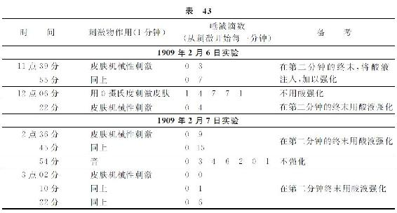
我们看见，本来与酸作用毫无关系的动因（指寒冷和声音）也成为酸反应的刺激物了。并且我们同时看见，初次试用的这些动因的作用也是与痕迹刺激物作用的进行顺序相符合的，就是说，这些动因不是在被应用的时间以内，而是主要地或绝对地，只在应用时间停止以后，才发生作用。当然，这从最初起就使我们倾向于一个结论，这是泛化的反射，其发生与已形成的痕迹反射的方式相似。但是，这样的说明还是不够的。因为这事实的特异性的缘故，我们就用它做了重复多次的研究。在考虑有关条件反射所已经知道的一切以后，我们就关于这个受审查的事实的机制，再做了两个可能的假定。
因为在远隔的痕迹上，痕迹反射的形成是不容易的、不迅速的，所以在这样场合不能不注意，在痕迹反射形成以前，可能有由实验者本身出发的新异刺激，偶然地与无条件刺激物的应用同时发生作用，因此就迅速地形成条件反射。在上述问题的场合，这危险的可能性是特别巨大的。所以在我们重复做这些实验的时候，使实验者离开狗所在的实验室而在一个特殊设备的建筑物内，这样，由实验者对实验动物所发生的不自觉的影响就会完全除去了。可是这样做以后，痕迹反射的非常泛化的情形依然不变。
第二个假定似乎也是一个很严肃的假定，就是如下的一个假定。在实验室的狗第一次形成条件反射的场合，该条件反射起先是在全实验室的环境上被形成的，就是从狗被带进实验室内的时候起开始发生的环境作用。这类反射也许可以叫做条件性环境反射（условныйобстановочныйрефлекс）。以后在对于我们所应用的特殊动因开始有反射发生的时候，环境的各因素方渐渐地失去其条件性作用，显然地，这是因为对于环境的各因素渐渐有内制止过程发展的缘故。可是这制止过程，特别在起初的时期，也是很容易由于任何临时的新异动因而解除制止的。现在举出一个显明的例子。按照旧式的方法做实验，实验者和狗都是在一个房间里，下述的情形就是常有的。环境反射在它所引起的唾液分泌继续若干时间以后，就过去了，于是在唾液腺作用静止期的背景上开始有特殊的条件反射。可是如果我因为要知道实验的情形而进入该实验室内，狗的唾液分泌就连续地发生。而在我停留于该室的时期以内，这分泌是不停的。这就是，与临时的新异动因相等的我，把已经被制止的环境反射，解除制止化了。这样，我们做了如下的一个假定，我们所谓泛化的痕迹反射不就是环境反射的解除制止的过程吗？可是经过检验以后，这个假定也是一定没有意义的。第一，因为是若干狗的环境反射已经在长时期内很坚固地被制止了，于是环境反射的解除制止化是几乎不可能的，而这样狗的痕迹刺激物的极端泛化，却是非常容易地、不断地发生的。第二，因为是我们特别严格地控制了如下的情形。请诸位想起，在延缓性反射的场合，新异刺激物一开始作用，延缓性反射不活动性时相的解除制止过程就即刻发生。但是在痕迹反射的场合，这新异刺激物所引起的效力，几乎总是只在该刺激物停止以后才发生的。如果坚持上述的假定，以为在该场合的一切新异刺激物，不知怎样地，总是具有非常强烈的作用，因而在这些刺激物尚未停止应用以前，不仅不发生解除制止的过程，反而更深深地制止该环境反射（在延缓性反射的场合，也是这样的），直到这些刺激物的刺激作用减弱的时候，才以痕迹反射的形式发挥解除制止的作用，如果坚持这个假定，那么，如下的事实是反对这个精美的假定的。在重复地应用新异强刺激物的场合，其制止作用必定渐渐减弱，以后就达到一个时相，其时各新异刺激物即刻只具有解除制止的作用，这是我们在延缓性反射的场合曾经看见过的情形。但是在此处痕迹反射的场合，这是从来不曾观察过的；多次被重复应用的新异刺激物所引起的唾液分泌，只发生于刺激物停止使用以后。最后的第三点，是在痕迹反射的场合，在新异刺激物被应用以后（当然，这些新异刺激物并不曾与无条件刺激物并用），特殊条件刺激物的作用会暂时弱化，甚至有时达于零，这是也许完全不能解释的，如果原因是在于环境反射的解除制止化。在泛化的痕迹反射的场合，这样的弱化就不过是未受强化处置以后所发生的一种消去现象的一个简单情形而已。
这样，在形成条件反射的场合，起先是一个一定的无条件刺激物与大量的外方动因相结合的。所以如此，一方面因为对于生物个体发挥作用的是环境内的一切要素的总体（совокупность）（综合性条件环境反射，условныйсинтетическийобстановочныйрефлекс）；另一方面是因为神经系统本身具有一种特性，能对外方的某一个具有条件刺激物身份的基本性动因，同时却赋予着或多或少泛化的性质。这个事实一部分是直接明了的，一部分是在上方已经指明过的。这个事实是由于动物对环境现实关系而能够肯定的。然而同时也显然，这个事实所具有的意义必定是有限制的和一时性的。在一定已知条件下，可能的近似的一般性的结合就会为现实的精确的特殊性的结合所代替。
条件刺激物特殊化即外来动因的分化（дифференцирование）是怎样成立的呢？起初我们以为有两种办法。一个是以条件刺激物的性质只重复地应用某个一定的动因，并且始终都同时不断地用无条件反射加以强化。另一个办法是，对某个一定的条件刺激物，不断地用无条件反射加以强化，同时对于这条件刺激物最靠近的另一个动因却不应用无条件刺激物的强化，这是交替地对立的办法。这第二个办法，就是我们现在认为实际可用的办法。因为在一方面，有些条件刺激物虽然应用无条件反射强化千次以上，可是只这样做，并不能成为严格特殊化的东西。而在另一方面，我们察觉了，甚至于每个靠近条件刺激物的近似动因不过一次不受强化手续的试验，和这些近似动因的一个系列（每次一个新的动因）同样地（就是说，不受强化）间或应用（相隔几天，甚至几周），而基本的条件刺激物在重复应用时，每次都被强化，那么，该条件刺激物就会特殊化。所以我们不断地只应用第二个办法，无论如何，这可以非常容易地达到各动因分化的目的。
我们先讨论利用条件反射以实现外来动因分化过程的详细情形罢。在第一步，我们必须提出一个事实，这在当时很长久地似乎是一个谜样的事实。在利用某个一定的外来动因形成条件刺激物以后，我们试验极靠近该条件刺激物的其他一些近似的动因的反应，譬如用某个一定的音形成条件刺激物以后，我们再试验与该条件刺激音相邻接的其他各音的作用，结果是，往往也可以获得与该条件刺激音相同的效力，不过很弱于该条件刺激音的效力而已。但是在以后重复这样地进行实验的场合，当然其时并不仅用强化处置，这邻接动因的效力非常迅速地增强，居然与条件刺激物的效力相等，再以后，这效力才慢慢开始减弱，一直减弱到零。这就意味着，条件刺激物和邻近动因两者间的区别，最初是即刻可以发现的；其次，这个区别不知何故地就消失了；以后，这一区别慢慢地又显现出来，最后就成为绝对的区别。这个事实应该怎样解释呢？为了解释的目的，我们利用了本事实与以前曾经分析过的同样事实的相似性。请诸位想起，在形成条件性制止的场合，我们也观察过与此相同的关系。譬如以形成条件制止物的目的，开始用一个新的动因与一个条件刺激物相结合，那么，这个复合刺激物所引起的效力，或者是与条件刺激物所特有的效力相同而略为较弱的，或者是完全无作用的。但是以后，虽然我们并不曾并用无条件反射的强化处置，该复合刺激物却迅速地再显现与该条件刺激物单独使用时相等的完全作用，只在经过重复若干次的应用以后，该复合刺激物的效力才慢慢地减弱，以达于零。在这样条件性制止的场合，我们是这样地——完全正当地——说明了这现象的，就是附加动因起先引起了方位判定反应，即刻制止了与该附加动因相复合的条件刺激物的作用。在重复应用的场合，方位判定反应迅速地减弱，条件刺激物的作用一时地恢复起来，以后在继续地重复应用的场合，该条件刺激物的作用又为不断发展的制止过程所抑制而减弱。在上述分化的场合，我们可以这样地想象，就是与条件反射动因相近似的各动因，仿佛都是由两个部分而成立的（与制止性复合物相同的）——一个是与该条件刺激物相同的部分，另一个是特殊的。第一部分就是邻近各动因与条件刺激物相同地发挥作用的原因。第二特殊的部分起初是一时性方位判定反射发生的原因，会即刻地暂时地制止着第一部分的条件性效力，其次就成为该邻接动因恒常的最后分化相发展的基础。
关于分化现象形成的初期，成为我们上述解释的确当合理的有力的证明是，即在条件性制止发展的场合和分化相形成的场合，这两种现象进行的类似性是在两过程的详情上都存在的。在这两种场合，都可以遭遇相同的变迁。邻近动因的初期薄弱作用，往往在短时间就移行于强烈的作用，比特殊条件刺激物的作用还更强烈，以后又恢复到特殊条件刺激物的强度，此后就再渐渐减弱，最后就成为零。最常有的情形却是，在初期作用减弱以后，作用又再渐渐增强，几乎达到条件刺激物的强度，此后就有分化相（дифференцировка）的发展。少见的是，并无进行过程的上述参差而分化相就慢慢地直接地发展起来。最后，同样稀有的是，从最初的微弱作用，直接地就向分化过程移行，一直进行下去。
因为在说明条件性制止形成的场合，我不过谈及有种种差异的发生，而不曾引证过实验的记录，所以我现在能够充分地补充这个缺点。在这些事例内［古拜尔格立兹（М.М.Губергриц）的研究］，这些差异是特别有系统地研究过的。
一系列的实验是用一只狗做的。与时钟指针运动相同方向的回转物是条件食物性刺激物，与时钟指针运动相反方向的该回转物是被分化的动因。
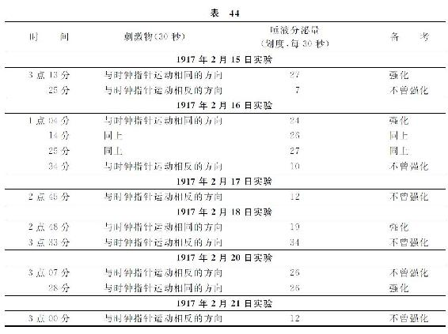
以后这被分化的动因的作用，虽然有些动摇，结果是成为零的。
再用另一只狗做实验，音是条件食物性刺激物，与该音相近的半音是被分化的动因。
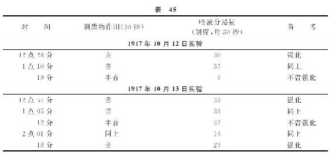
以后这半音的作用虽然有若干的动摇，但在第30次重复应用的时候，就变成零。
下表实验所用的一只狗是上述最初实验所使用的。在狗的眼前出现的圆形是条件性食物刺激物，在同一平面上，同一光度下出现的四角形是被分化的动因。
以后，四角形的效果带着若干的动摇，在11次重复实验的时候变成完全无效。
在利用条件刺激物的帮助以分化一些外方动因的场合，上述的分化初期的现象是与方位制定反应的干涉作用有关的。除此以外，这个神经现象还有其他许多方面的情形，也引起了我们的注意。
当然，可以利用与条件反射动因很相接近的动因，即刻形成分化相，可是也可以利用远隔的一些动因而着手于实验，慢慢地达到分化的目的。在这两个办法之间，存在着巨大的区别。如果我们用与一定条件刺激物相接近的一个动因开始分化相形成的实验，那么，虽然在很长的时期内把这两个近接动因（即条件刺激物及其邻近动因）互相对立地进行实验，两者间的区别也不会出现。我们换用另一个办法，就是先用较为远隔的一些动因开始实验，以后再渐渐地着手于某一个近接动因的分化，于是在许多较远隔的动因达到分化相的阶段以后，某个靠近的动因的分化大体上在很短的时期以内就会成立。
现在举出证实这种实验情形的古拜尔格立兹的研究。
在一只狗的眼前，现出用白纸做成的圆形，这就是条件性食物性刺激物。以后开始用陈迈尔曼10号纸的圆形（Циммермановскаяколлекция）（陈氏分类式的暗纸有从白色至黑色的50种的浓淡）做与条件刺激物相分化的实验。这10号纸（灰色）虽然不曾强化地被应用了75次，并且是与每次强化的白色圆形轮流地被应用的，可是并不曾显出分化现象任何极微小征兆。于是就改取另一个办法，起先着手于35号更暗色纸圆形的分化，其次是25号圆形及15号圆形的分化，最后是10号纸圆形的分化。现在一起计算起来，这些圆形共总应用20次，就达到完全分化相的目的了。
与上述实验相同地，对于另一只狗应用了光的刺激物做实验，不过采取了另一个方式。对于这只狗，也用圆形形成了条件性食物性刺激物，而与它分化的新动因却是椭圆形，其半径是8∶9的比例，其平面的大小及纸张是与条件刺激物相同的。可是将这圆形与椭圆形轮流地对立地使用70次以后，不会有任何分化相的出现。于是照如下的顺序开始若干椭圆形的分化，就是先用半径5∶4的比例的椭圆形做分化的实验，以后陆续地进行半径5∶6，6∶7，7∶8的各椭圆形的分化。这样，对于这些椭圆形的分化过程形成所需要的实验应用回数不过一共是18次，连半径8∶9的椭圆形也被分化了。
如果我们所做分化的实验是从远隔的动因开始而渐渐地向近接的动因进行，那么，如下的常见的事实会引起我们的注意。在形成分化相的场合，即使最初所使用的动因是远隔的动因，该动因的分化也是进行得很慢的，尤其在坚持达到绝对分化的场合，就是说，在坚持该动因效果达到零的场合。可是如果实验的第一个阶段已经达到绝对的分化相或近于绝对的分化相，那么，以后各个近接动因的分化手续，就进行得越过越快，不过在最后动因分化的场合，分化的进行又会是多少缓慢的。
现在举出一个例子。
对于一只实验狗，用一定直径的白色圆形做成条件性食物性刺激物，用同样平面大小的半径不同的若干椭圆形做被分化的一些动因。第一个半径4∶5的椭圆形需要了24次的应用（条件刺激物的圆形在30秒钟内的作用量，是34个划度，而这椭圆形只引起4个划度的唾液分泌）。在其次的半径5∶6的椭圆形分化的场合，不过需要了3次的应用，就达到该椭圆形效果成为零的程度。其次的半径6∶7的椭圆形的分化也同样地进行得很快。
分化过程的进行，除方位判定反应出现的初期以外，既可能是直线形的，也可能是波浪形的。波浪形的过程不一定可以归结为某一些外来障碍的影响，而可能有关系的却是在分化过程进行时神经内部过程的动摇。
分化相的耐久性（强度）（прочность）是由条件刺激物和被分化动因两者间的间隔时程，即分化相能被保存的间隔时程的大小而决定的。在实验的初期，这些有效的间隔时程是很短的，以后却越过越长。如果经过一昼夜以后，在最初一次分化实验的时候，就是说，如果被分化的动因比其他各刺激先受检验而效果是零，那么，我们就认为该动因的分化相是完全的。
我们再三做过的实验证明了，在做分化实验的场合各个不同的动因，或者以阳性条件刺激物的性质而被应用，或者以阴性制止性刺激物的性质而被应用，所获得的分化的程度是几乎同等的。
在各动因以痕迹条件刺激物的性质，做分化实验的场合，不论该动因是当做阳性的或制止性的刺激物而被应用，其分化的程度也与上项相同，会是同等的。
现在从弗洛洛夫（Фролов）研究里举出痕迹制止物分化相的例子。
对于一只实验狗，拍节机的响声（每分钟104次响声）是条件性食物性刺激物。风琴管的某一定音（第16号）是条件制止物，其使用时间是15秒钟，在拍节机开始发出响声以前的1分钟，这风琴管音停止。与此相同地，把拍节机响声与该风琴管音的邻接音（15号）互相复合，并且并用无条件反射，使这个复合刺激成为阳性刺激物。痕迹制止物分化相的表现是如下的。
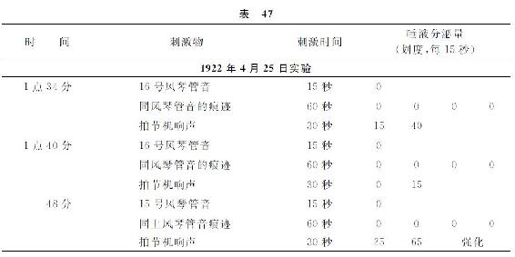
必须再补充地说明，就是上述分化相的形成只是由于非常逐渐的实验才能达到的。在这实验的初期，我们不能不应用几秒间隔的痕迹，并且从远隔的音开始。
现在是一定要提出一个问题的时候：泛化的条件刺激物由于什么神经过程的条件才移行于该条件刺激物的特殊化呢？换句话说，经过什么神经过程才移行于该条件刺激物的邻接动因的分化呢？在我们已经知悉了内制止的以后，又在本讲内上方事实的说明以后，本问题的了解不是困难的。并且我们以后的多数的实验使我们无疑地承认，制止性过程就是分化的基础，这就是说，分析器的脑内终末部起初是广泛地兴奋的，但是渐渐被制止的，仅有该终末器的极小部分的兴奋不被制止，这就是与条件刺激物相当的部分。现在举出肯定上述结论的第一个事实。我们用上述的手续，把一个动因即一个条件刺激物与其一个邻近的动因分化开来：该条件刺激物发生恒常的完全的效果，而被分化的该邻近动因，看起来，却是完全无作用的。现在，在应用条件刺激物以后，我们应用被分化的邻近动因；其次，即刻地或经过若干时间地再应用该条件刺激物——这样，该条件刺激物暂时地只会显出微小的作用，或者完全不显出任何作用。
现在从贝略可夫（В.В.Веляков）的研究里举出一个例子。
对于一只狗，用一定的风琴管音形成了条件性食物性刺激物，用比该音高1/8的音形成了坚定的分化刺激物。
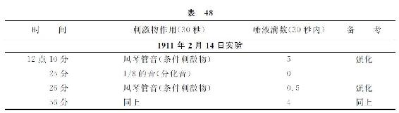
所以在应用分化音以后，神经系统里的制止性过程依然是暂时存在的。这暂时存在的制止性过程的表现，就是对随后试用的条件刺激物，或者减少其效果，或者完全消灭其效果，换句话说，这就是一种所谓后继性制止的现象，这也是在我们以前的讲义内所熟知的一种现象。
这样，我们就有了第四种的内制止的事例，这是我们可以适当地把它叫做分化性制止的（дифференцировочноеторможение）。可能的是，也许无妨地把它和条件性制止同样地看待，并且可以用一个共通的形容词（即“分化性的”这个形容词）将这两种制止联合起来，因为在这两种场合，成为问题的事情是相同的，就是两者都利用制止过程以除去新异动因（或者是单纯的，或者是复合的）的作用，而这两种场合的新异动因的作用，本来并不曾经过特殊的形成手续，不过是与已经形成的条件刺激物互相联系的关系所产生的结果而已。
我们在分化过程的场合开始提出的后继性制止是在如下的关系上与条件性制止的后作用相同的，就是实验重复的次数越多，分化性制止的后继性制止作用的时间也就越受限制，譬如起初的作用时间是数十分钟，但在最后却缩短到几秒钟。
在此地还有一个事实是值得特别谈及的：分化相的程度越高，就是说，被分化的若干动因越是彼此相近，如果其他的各条件都是同等而不变的，后继性制止就越显著。
现在再用贝略可夫的研究说明上述的事实。
一定的音是条件性食物性刺激物，两个分化音中的一个是条件刺激物的半音，另一个是条件刺激物的1/8的音。
可是除这后作用以外，分化性制止与前述的各种制止过程也都是完全一致的。
分化性制止也与其他制止相一致地，在实验重复多次以后，它的作用会累积起来。
现在又举出贝略可夫有关本问题的实验。
另一只实验狗。音是条件性食物性刺激物，比这条件刺激音低的半音是被分化的动因。
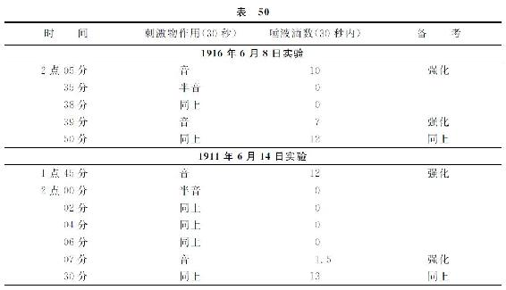
分化性制止的强度的测定是与它本身成立时候的兴奋过程的强弱有关的，所以在该分化性动因强度增大的场合，和在中枢神经系统一般的及局部的兴奋性有变化的场合，分化性制止的强度就会紊乱。
如果我们利用食物性条件反射，那么，只要把食物兴奋性提高，或者在一天内较迟的时间做实验，譬如在接近实验狗平常吃东西的时间做实验，或者使狗多受一天的饥饿，这样，原来完全形成的分化相就会变成不完全了。
完全与此相同地，如果利用咖啡因（коффеин）的注射以提高中枢神经系统的一般兴奋性，原来已成立的完全分化相会紊乱。现在，让我们从尼吉弗洛夫斯基（П.М.Никифоровский）的研究举出与此有关的实验例子。狗前腿的皮肤机械性刺激是食物性条件刺激物，背部的皮肤机械性刺激是被分化了的动因。
末了，与其他一切的内制止过程相同地，这分化性制止也会解除制止化，这就是说，在新异刺激的影响之下，这分化性制止就在很短的时间内会消失，而让阳性刺激效果出现。
现在举出贝略可夫的两个实验。这是对于一只狗用各种不同的新异刺激物所做的实验。
每秒钟振动800次的音是条件性食物性刺激物，每秒钟812次的振动音（即条件刺激物的1/8音）是完全地被分化了的动因。所用的两种新异刺激物是乙酸戊酯的气味和水泡音。这两种新异刺激物，在个别地使用的时候，都不会引起唾液分泌。
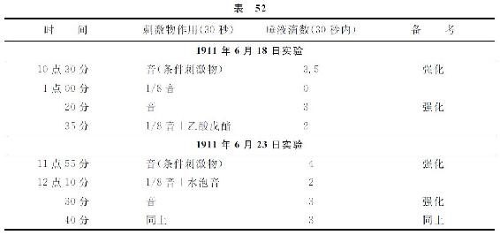
富有兴趣的是，在分化性制止的后作用的时相也可以证实解除制止化的产生。
贝略可夫的实验所用的上述实验狗，从来不会有过偶然的唾液分泌。
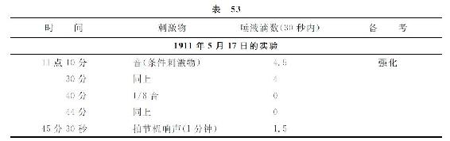
在我们所应用的各新异刺激物之中也有一些刺激物，所引起的反应不是方位判定反应，而是特殊的比较复杂的强烈的反射。在这样场合，解除制止性作用在刺激物本身停止以后很长的时间以内还是显然。
贝略可夫用上述的实验狗做了一个如下的实验。所用的新异刺激物是一个玩具用的喇叭。这喇叭发出强烈的各种非常不同的高低不平均的声音。在使用这只喇叭的时候，实验狗就吠叫发抖，要从实验台逃走。
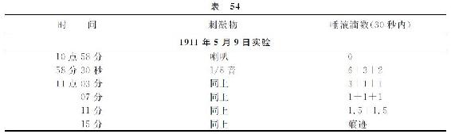
上面一切记载的实验使如下的事实成为毫无疑问的，就是分化相的形成是基于在被分化的各动因上所发展的内制止过程。
根据上面几篇讲义内所叙述的各种不同的事实，我们不能不达到一个结论，就是在由神经系统一般地确定各外来动因的差异，及利用条件反射以获得各外来动因的分化的两种机能之间，有一个实质上的区别。第一，是以兴奋的过程，显出方位判定反应——探索反射，这种兴奋过程的第二阶段是对条件反射发生制止性的或解除制止性的影响。第二个表现是制止过程的发展，也许可以说，这制止过程是兴奋与制止两者斗争的结果。如在以后讲义内会看见的，这个斗争往往是很困难的。可以想象，这个斗争有时不是有机体所能胜任的，于是在这斗争的场合，这现象并不能在该有机体全身活动的关系上一定达到各外来动因实际分析的结果的完全利用。如果情形是这样的，那么，利用条件反射以做神经系统分析性活动的研究，也会有它的缺点。总而言之，这是一个令人感兴趣的问题。
第八讲
诸位！在上一次的讲义里，我们看见，外界的个别动因，如果以条件刺激物的性质而被应用，起初是或多或少地驯化的，以后却因为在相当实验手续下所发生的制止过程，该个别的外界动因就逐渐特殊化而独立。这样，实验最后的结果，就是创造一个很好的实验的可能性，以研究动物各种分析器机能的范围和限界。在这个关系上，我们掌握着很多的资料，都是与狗的许多分析器有关的。关于这些一切的实验，我们必须说，做这些实验时候的许多巨大的困难不发生于生理学的方面，而发生于物理学的器械的方面。在许多实验的场合，很难于获得制造完美的器械，以完全适合于生理学实验所要求的目的。我们的任务的所在，就是须要利用器械把某一个基本性外来动因绝对地孤立起来，或者要使该动因某强度绝对地孤立起来，然而事实上这是几乎不可能的。譬如我们希望有一种机械地刺激皮肤的器械，只有机械的刺激作用而不带着任何声响，或者我们希望有一种器械，只使某音的高度有变化而无该音强度的变化，这都是几乎不可能的。所以我在自己的某一个演讲里甚至表示过，在物理学的器械和当做器械看待的动物各分析器两者之间，一定会有富于兴趣的斗争。
现在举出我们事实的资料。
我们试取狗的光的分析器做例子吧。从一方面说，这个分析器是非常发达的，远远超过人类的视觉。这就是指这分析器区别光的强度的能力而言。对于一只狗，用黑色影幕在狗眼前的出现形成了条件反射，该黑色影幕的染色是完全均匀的，没有任何一条线，也没有任何一个点。从这个条件刺激物又分化了同样形态的同等大小的白色影幕，并且这影幕也是染色均匀的。以外，实验者还掌握着一套的陈迈尔曼影纸（Циммермановскаяколлекция，每套陈氏影纸有50个号码），各号的纸是由白色经过灰色直到黑色而浓淡不同的。在白色纸分化以后，渐渐将各灰色纸逐渐分化。最后的结果是，狗的光分析器可以明了地区别49与50号的影纸，可是人类的眼睛不但在一定的间隔时程内陆续注视的场合不能区别这两种纸的浓淡，并且在同时注视和比较的场合也不能发现两者的任何区别。对于浓淡相差较多的影纸，实验的结果也是相同的［弗洛洛夫（Фролов）实验］。
这样，在分析光的强度的关系上，狗的光分析器具有极精微的能力。我们不曾能够测定狗的这样分析机能的极限。
在狗的这个分析器其他机能上，就是在分析颜色和形态方面，情形是完全不同的。
奥尔倍利（Л.А.Орбели）所做的最初的研究不曾能够确证狗有区别颜色的分析力。在他第二次的研究里，终于发现一只狗有区别颜色的能力，可是这些实验并不是十分完美无疵的。如果斟酌我们研究者和外国的各研究者的实验结果，就不能不达到一个结论，就是狗的色觉一般地不过是以萌芽的形式而存在的，并且大多数的狗完全缺乏色觉。
关于形态的分化，我们具有如下的一些实验［仕格尔·克列斯托夫尼可娃（Н.Р.Шенгер-Крестовникова）的实验］。使狗站在一块影幕的前面，影幕上光亮的圆形对狗反射，形成了条件性食物性反射。其次，在同样的平面上和同样的光度下陆续地由这条件刺激物分化了许多椭圆形。最初所应用的椭圆形的半径是2∶1。这椭圆形的分化相是成功的。以后所用的各椭圆形逐渐与圆形相接近，于是这样地所达到的形态的区别，越过越精微了。但在半径9∶8的椭圆形的场合，区别力的最大限度出现了，其表现是如下的。就是这半径9∶8的椭圆形已形成的分化相，由于实验的反复地继续进行的结果，该分化相本身渐渐紊乱，并且因此也引起初期形成的比较粗的各个分化相的消失。我们就不能不重新从头做起，谨慎地着手于各个分化相的形成。现在应用到9∶8半径的椭圆形所做的实验才第一次达到条件效果等于零的成绩，可是在以后继续应用这椭圆形做试验的场合，与前相同的故事又发生了：不但这个分化相不能重复出现（如果这是真的分化相），并且初期的各粗陋的分化相也都消失了。这个事实使我们想起在前回讲义终末所提及的一个情形，就是在这个阶段上，分析的本身还是可能的，可是如果要生物个体继续不断地利用这种分析，就会遭遇一个不可克服的障碍，而这障碍是基于兴奋过程和制止过程两者的斗争的。
我们关于许多形态的和点的运动方向，也做了分化相的实验，但不曾研究这些分化相的限度。
狗的听神经装置的分析器性机能，在种种不同的动向里，由我们做了特别详细的研究，占第一地位的也是一个音的各种强度的分析。结果是，一个声音的每个强度都能够容易形成特殊的恒常的条件刺激物，也能够由该音较高的强度或较低的强度而被分化。可惜这些实验［替霍密洛夫（Н.П.Тихомиров）的实验］是由很简单的形式而施行的。所用的音（每秒钟1740次的震动）是由气罐（газометр）向风琴管排出的一定的压力（3.6~3.88厘米的水柱压力）而吹成的。风琴管被固定于一块木板的中央部，而木板是用一层棉絮包住的，木板的上方悬挂了一个木箱。这个木箱的里面也用棉絮铺好，只是箱的下方开孔的。由于这个箱子在风琴管上方的正确地举上或放下，风琴管的声音就会达到一定程度的减弱。这个实验的目的是决定狗区别声音强度能力的限度，以与人类的同一区别能力相比较。关于已经成为条件刺激物的某个一定声音的强度和最接近这条件刺激物的另一个强度两者之间的区别，在应用了这实验以后经过17小时，狗依然具有绝对鉴别的能力，而做这实验的人，如果不将这两个强度不同的声音陆续交替地重复应用，就不能感觉任何区别。
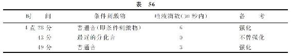
可是对于狗，这种分化音能够更与条件刺激音相接近，并且经过3小时以后，分化相依然存在。然而在我们的环境条件之下（普通的实验室的房间），这个分化相是很容易破坏的。当然，这些实验必须利用更完全的方法继续下去，以求获得绝对量的数字。
其次，关于声音高度的分化相，做了许多实验。所用的实验器械，主要的是各种不同的吹奏性的器械，并且受了我们考验的狗的声音器官所能完全正确区别的限度是八分之一的音，这是在前讲里已经说明过的。我们不曾做比这个更进一步的研究，因为我们对于我们这个方法的精确程度没有把握。我们用纯粹音重复地做了这种实验，但与使用通常复合音的实验比较，并不曾发现任何特异的区别［安烈勃（Г.В.Анрел）与马努伊洛夫（Т.М.Мануйлов）两人的实验］。
以后我们更利用高音研究了听觉器官的兴奋性的限度。用加尔通氏笛（Гальтон）［布尔马金（В.А.Вурмакин）的实验］或用纯音装置做实验［安德列耶夫（Л.А.Андреев）实验］的结果都是，对于人类所不能听取的高音，狗却能继续地感受刺激。而且这个差异是相当巨大的。很有兴趣的是，我们看见狗能对于一些很高的声音，正确地强烈地发生反应，而该声音却是我们不能听见的。
以后关于音色、声响的地位，我们也做了实验，但是关于这些分化相的精微程度我们还不曾能够确定。
在这一系列的实验里可以做一些声音的实验，其目的不是声音的本身，而是这些声音彼此间的间隔时程，也正是研究拍节机响声各种频度的分化。拍节机响声各种频度的分化相是很容易形成的。可是这种分化相的限度是很有趣的。狗的这种限度是非常精微的，是人类所不能达到的，就是狗可以很精确地区别每分钟100次响声与每分钟96次响声的差异。
关于皮肤的机械性分析器和温度性分析器，我们所做的实验是比较不多的。起初，我们关于刺激的地位即局限性（локализация）做了分化的实验。这个分化相是的确证实的，但关于它的精微度和限度，我们不曾做过实验。其次关于各种形式的机械性刺激，我们也做成了分化的实验：搔抓，平滑面与粗糙面对皮肤的压迫，各种钝钉头对皮肤的刺触，各种方向的搔抓等等。关于各种温度的区别，我们也测定了分化相。
虽然狗的化学性鼻分析器是它的各种分析器中发达最完全的东西，可是直到现在我们关于这一部分的研究依然是很贫弱的，当然这是由于方法上的缘故。至少现在，气味的测定是困难的，或者是不可能的，还不能像处理其他各种刺激物时的精微和确实。我们不能精微地确定气味在时间方面的关系，并且关于气味痕迹的存在与消失，我们也没有主观的和客观的标准。所以我们所做的实验是限于少数的，各种不同气味的差异是能够区别的：譬如樟脑、香荚兰素（ванилин）及其他等等。我们用了一些气味做成了食物性条件刺激物，用另一些气味做成了酸的条件刺激物；我们用了一些气味做成了阳性条件刺激物，用另一些气味做成了制止性条件刺激物。我们也做了若干气味混合物的分析实验，其时将一种新的气味与气味混合物互相结合。
最后关于口腔化学性的分析器，我们聚集了若干的资料。关于这个问题的研究，我们的工作采取了若干不同的方式，因为我们通常用的两种无条件反射正是与口味分析器有关系的。如果要与其他分析器的研究有同一的情形，也许必须从这其他分析器之中采用一个无条件刺激物，同时必须以条件刺激物的性质而应用口腔的化学刺激。我们不曾做这样的实验，而用多少与此不同的一些实验代替了；就是用各种不同的食物和嫌恶的物质形成了条件反射（肉粉、面包粉、糖、干酪、酸、苏打及其他），再检验这些条件反射的相互作用，即试验相互的抑制作用。现在从叶果洛夫（Я.Е.Егоров）的实验之中举出一个例子。皮肤机械性刺激是用面包粉和肉粉两者有关的条件刺激物；回转物是与荷兰干酪有关的条件刺激物。
如果只用一些条件刺激物而不用无条件刺激物，也发生同样的情形。
下文的实验是上述实验的一部分。在做这个实验以前，皮肤机械性刺激普通引起30秒仅5~6滴的唾液分泌。
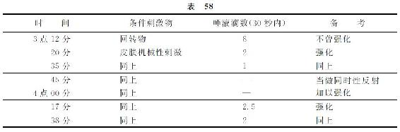
在这一系列的实验里，化学分析器的终末部的分析机能很明显地表现出来了。一只狗的常用食物是燕麦粉和肉粉及面包的混合物，并且对于这只狗，用肉粉和砂糖各个别地形成了条件反射。以后从常用食物里除去了肉粉和面包，而在粥里添加了大量的糖。在使用这样食物方式经过若干时期以后，肉粉的条件反射显著地增强起来，而糖的条件反射差不多消失了［沙维契（А.А.Савич）实验］。
在另一些实验里［哈仁（С.В.Хазен）实验］，关于狗所厌恶的物质，更详细地做了与此相同的实验。从我们以前的实验已经明了，在酸的条件反射的场合，在每一期实验之中，条件反射强度与无条件反射强度都在实验的末期通常会增大起来。完全相同地，在一系列的实验里，这个反射量会逐日地增大到某一个最大数值。在哈仁的研究里，先对实验手续做了如下的一个变动，就是在第一次应用条件刺激物和强化手续以后，就把酸液注入若干次，但都不并用条件刺激物，而在该实验的末期又重新试验条件刺激物的作用。于是这条件刺激物的作用量总是比第一次试验时更大。以后，把本来每日做的实验用三个间隔时程加以隔断，在一系列的实验方面是5天的间隔时程；在另一个系列的实验方面是3天的间隔时程。在一个间隔时程里，对于一只狗，把大量的酸溶液注入直肠，对于另一只狗，则用探条管把大量酸溶液注入胃内，在另一个间隔时程里注入苏打水，在第三个间隔时程内不曾注入任何物质。在每次间隔时程的以后都检查了条件反射和无条件反射的作用。在注入酸液的间隔时程以后，反射量或者依然如旧，或者比间隔时程以前的实验时稍为减少，在未注入酸液的间隔时程以后，反射量显著地减少，而在注入苏打水的间隔时程以后，反射量更加减弱。一只狗的实验数字如下。在每天用一定量的酸液注入于口内的实验的场合，颌下腺的分泌量平均是5.1毫升，而对于条件刺激物的分泌量是4滴。在没有酸液的注入期间以后，无条件反射量是3.8毫升，条件反射量是2滴。在注入苏打水以后，无条件反射量是3.7毫升，条件反射量是零滴。在注入酸液的间隔时程以后，无条件反射量4.5毫升，条件反射量3滴。这样看来，血液的化学构成上的差异是能为化学性分析器的脑终末部所区别的，其表现就是该分析器的脑终末部兴奋性的增强或减弱。如果有过量的酸进入血内，化学性分析器内有关酸的部分就有兴奋性的增高——动物在与外界的酸相遭遇的场合，就用强有力的拒绝性运动反射和分泌反射或多或少地防制酸的陆续侵入。当然，对于食物也是发生同样情形的，其表现就是对于某一种食物或对于某种食物的某一定分量，有时是阳性反应的增强或减弱，有时是阴性反应的增强或减弱。这样，化学性口腔分析器能够利用它的终末装置以结合两个环境：就是将动物的内在和外在环境互相结合起来，以调整两者的关系，因此就保证生物的正常构造。
刚才所记载的最后的若干实验（可惜这些实验以后不曾重复地做下去）是在我们研究初期做的，其时这件工作是如此新奇而复杂的，研究方面许多错误的根源是不能免的。
综合性神经活动的机制及局部限定，与分析性机能相反地，直到现在，依然不很明了。最简单地可以这样想象，综合性机能是神经细胞间的一种联系的方式，或者是隔离性细胞膜的作用。或者简单地是细胞精微地分枝所具有的特性。当然，当前的第一个任务是在于有关综合性机能的材料的汇集。
关于大脑两半球综合性活动的详情，在我们的各研究里，还不过只占了较小的地位。条件反射的形成本来是一种综合性的动作，是我们经常地利用于我们研究的出发点。除此以外，我们多少研究了复杂的复合条件刺激物。
我们当做条件刺激物所应用的种种不同的复合刺激物，既有同时性的，也有后继性的复合刺激物（одновременныеипоследовательныекомплексы）。
在同时性复合刺激物的场合，我们发现了如下的重要关系。
如果采取两个刺激的复合物，并且如果刺激物只是与个别的分析器有关的，那么，在个别地试验每一个刺激物的时候，一个刺激会差不多地或完全地掩蔽另一个刺激物的条件作用，不管该复合刺激物的反射所受的强化处置是多么长久的。皮肤机械性刺激掩蔽皮肤的温度刺激，而声音刺激掩蔽光的刺激。
琶拉定（А.В.Палладин）实验 他用皮肤寒冷刺激（冰溶解时的温度）和皮肤机械性刺激形成了同时性的酸反射。现在既试验这复合刺激物，也个别地试验每个刺激物。
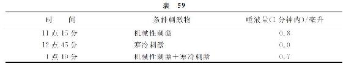
泽廖尼（Зеленый）实验 他用调音管A1 音（这调音管被放在填满棉花的木箱里，因此所发的音很受着限制）和放在稍稍黑暗的室内狗嘴前方3个小电灯（每灯16支光），两者的同时性作用形成了条件食物性反射。
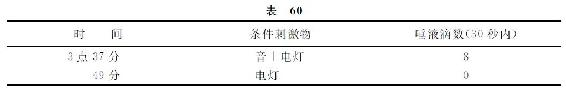
当然，此地被掩蔽的刺激物，如果个别地被应用于条件反射的形成，也可能具有充分的效果。
怎样解释刚才所记载的这个事实呢？从属于一个分析器的各种不同的动因之中，采取若干的动因而做复合刺激物的实验，可以有理由地提出一个可能的假定。譬如现在使用强度几乎同等的两个声响做成一个复合刺激物。当这一复合刺激物的条件反射已经成立的时候，我们个别地试验这两个声响的作用。这两个声响的效果是同等的。如果用强度很有差异的两个声响作为一个复合刺激物而形成条件反射，那么，弱的声响的单独作用或者非常小，或者完全缺乏。
泽廖尼实验 对于一只狗形成了复合性食物反射。刺激物是哨笛的强音和调音管dis1 音两个声音，而这两音的强度，听起来是几乎同等的。在个别地检查这两个刺激音反射效果的场合，每分钟的唾液量都是19滴。对于这只狗又形成了另一个复合刺激物，其一个成分是同样的哨笛音，而另一个成分是调音管较弱的a1 音。在个别地试验这两音效果的时候，在30秒钟里，哨笛音引起唾液7滴的分泌，而a1 音只引起1滴的分泌。
在这些实验里很显然的事实是，一个刺激物所受另一个刺激物掩蔽的程度，是决定于两个刺激物强度的差异的。在使用属于不同的分析器的一些刺激物所构成的复合刺激物的场合，上述的假定当然也是适用的。按照这个假定，在我们所做的实验里，皮肤机械性刺激总是应该强于皮肤温度性刺激、声音刺激强于光线刺激的。这个重要的假定必须应用复合刺激物而加以检验，该检验用的复合刺激物是由各种不同分析器的刺激物的互相复合而成立的，而各刺激物的强度也彼此非常不同，譬如须要把一个最弱的声音刺激物与一个最强的光线刺激物互相结合。
在一个同时性复合刺激物的场合，一个刺激物为另一个刺激物所掩蔽的事实，具有若干有趣的详情。
往往一个复合刺激物的作用量与该复合刺激物内较强成分的一个刺激物的作用量相等，就是说，弱刺激好像是完全为强刺激所掩蔽而消灭。并且如果较强的刺激物虽然间或地、单独地被重复应用而不受无条件刺激物的强化，但只对复合刺激物不断地加以强化，那么，该较强的刺激物就单独地完全失去作用，而复合刺激物却保存它通常的作用量。所以，在复合刺激物的场合，较弱成分的一个刺激物总是具有意义的，不过其意义是潜在的而已（琶拉定实验）。
别的一个事实［彼累里茨凡格（Перельцвейг）研究］是在第四篇讲义内已经举出的。如果复合刺激物中一个成分的刺激物是作用薄弱的或是完全不具有作用的，如果该刺激物重复地以短的间隔时程（数分钟）被应用多次而不并用无条件刺激物加以强化，就是说，使该刺激物的作用消去，那么，强成分的刺激物的作用会多少第二次地消去，同时甚至于复合刺激物的作用又会第二次地多少消去。所以也在这个实验里，似乎本来无作用的成分，由于反射消去处置的结果，变成一个引起显著制止性作用的动因。
在直到现在我们所做的唯一的毫无非难余地的一个实验里，还可以发现如下的一个情形。如果属于不同分析器的几个动因，起先都受一定的处理而各成为条件反射刺激物，其次各动因又被共同地应用，就是说，使各该动因成为一个复合刺激物，那么，纵然尽量地重复地应用这复合刺激物，也几乎不致发生一刺激物掩蔽另一刺激物情形。因此可以得到一个结论，就是在一个复合刺激物之内，如果该复合刺激物起先是由几个无关动因而形成的，那么，强有力的一个动因即刻不让较弱的动因与无条件反射中枢适当地构成强有力的联系。
掩蔽作用的机制当然应该当做一个制止过程看待。关于这掩蔽作用，在以后讲义中的一篇内会特别加以分析，而该篇主要着重于我们资料的一般检讨的。
由上文所引证的掩蔽作用的各事例显示，在大脑皮质各种不同细胞彼此之间存在着相互作用，而这个相互作用就是在各皮质细胞同时受刺激时所产生的各过程的融合现象（слитие），即综合的作用。如果一个同时性复合刺激物内的各个刺激物是属于一个分析器，并且如果其时各刺激物的强度相等，那么，这样所产生的综合作用似乎是不显明的。然而在这样的一些场合，为什么也没有累积作用（суммация）的表现呢，为什么一个较强成分的单独作用却等于该复合刺激物的效果呢？可是在一个新的实验条件下做如下的变式实验的场合，一个分析器所属的各刺激物的综合作用就非常明了。最初在泽廖尼的一些实验里有如下情形出现，以后在马努伊洛夫（Мануйлов）和克雷洛夫（Крылов）两人的一些实验里，又再证明了如下的情形是常见的现象。这是与刚才所谈及的复合物有关的。我们可以不十分费力地达到一个结果，就是复合刺激物的作用会继续存在，而其各成分的个别作用却会消失，并且这些原来的阳性刺激物会变成阴性制止性刺激物。当然，复合刺激物须要不断地受着强化，而该复合刺激物的各成分却无强化地个别地重复被应用着。于是就会达到上述的情形。实验也可以在相反的方向上进行。可能使用这个方法而使复合刺激物成为制止性，同时使该复合刺激物的各成分成为阳性。
我们姑且不作上述事实的讨论而先着手于在时间上是后继性的各复合刺激物的说明。在这类复合刺激物的场合，上述的同一现象会发生，可以说，其发生的形式是比较更精微的。我们实验过的这一类复合刺激物是非常多种多样的。或者某一个复合刺激物的成分只是一种刺激物（一定的音）。该刺激物的应用时间是1秒钟，反复地应用三次，并且在第一次与第二次应用之间，有2秒钟的休息，在第二次与第三次应用之间有1秒钟的休息，以后这三个刺激的一组刺激每隔5秒钟再重复应用一次，并且并用无条件反射。而在另外的一些实验里，复合刺激物是由3~4个刺激物而成立的，而这些个别刺激物虽然彼此并不相同，但却都属于同一个的分析器，各刺激物以一定的顺序互相衔接，并且各刺激物的作用时间是一定的，休息时间也是一定的。譬如，使用4个音——до，ре，ми，фа做实验，或者应用杂音，两个不同的音及电铃。最后所用的复合刺激物是由于3~4个刺激物而成立的，但这些刺激物各属于不同的分析器，而各刺激物的作用时间与休息时间却都是相同。从这些一切的复合刺激物，反射都容易形成，并且在反射相当地被应用以后，该复合刺激物的一切成分都各与其强度及种类相符合地显出阳性的条件作用。
其次，我们着手检验这些复合刺激物的变动。在第一个场合，把复合刺激物内的休息时间的位置更动了，就是把较长的休息时间插进于第二音和第三音之间。在其他各实验的场合，变动了各个别刺激物彼此间的顺序，或者是全部的变动，使顺序完全相反，或者在4个刺激物的场合，只将中间两个刺激物的位置变动。有了这样变动的各复合刺激物，在再三重复进行实验的时候都不并用无条件反射，但只不断地强化原有初期排列的复合刺激物。在最后的结果里，原有排列的各复合刺激物都对其次各具有变动的刺激物发生了分化现象，有变动的各复合刺激物都失去了阳性的条件作用，成为阴性制止性的东西［巴勃金（В.П.Вабкин）、斯特洛冈诺夫（В.В.Строганов）、格立戈洛维契（Л.С.Григорович）、伊凡诺夫·斯莫连斯基（А.Г.ИвановСмоленский）、尤尔曼（М.Н.Юрман）诸人的实验］。
尤尔曼实验 阳性食物性条件刺激物是由于电灯的开亮、电皮肤机械性刺激（皮）及水泡音（水）等三个刺激物而成立的；制止性复合刺激物是从水泡音、皮肤机械性刺激物及电灯的开亮等而成立的。
伊凡诺夫·斯莫连斯基实验 阳性食物性条件刺激物是由嘘音（嘘，шипение）、高音（高）、低音（低）及电铃音（电）等而成立的。制止性复合刺激物是由嘘音、低音、高音、电铃音等而成立的。
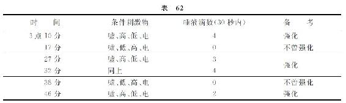
在这些场合，尤其在其中的若干场合，制止性反射的形成是非常迟缓的。虽然相对性的分化过程有时出现很早，但在极端的场合，要在应用几百次以后，才能达到完全的绝对的分化相。甚至于为了要达到课题最后的解决，有时必须先经过比较单纯性复合刺激物分化的阶段。特别困难的是如下复合刺激物的分化，就是如果该复合物由噪音、高音、低音、电铃音而成立的复合刺激物，其中间部位两音的位置有了变动。一切这些分化相都是很不安定的，尤其很困难地形成的分化相更不安定。从一方面说，这些分化相很受多次重复应用的影响；从另一方面说，在做研究期间，如果有很长时间的间歇，这些分化相就或者会减弱，或者会消失。在达到完全分化过程以后，复合刺激物中个别地受试验的各成分丧失了阳性条件作用。
这些事实应该怎样解释呢？由若干同样的刺激物而成立的一个复合刺激物，对于大脑皮质相同的一些细胞所发生的作用，经常在相同的时期以内，可以成为性质不同的刺激物，在这些皮质细胞内或者引起兴奋性过程，或者引起制止性过程，这是怎样发生的？一个复合刺激物具有两种不同的作用，这是由于什么原因而产生的？如事实所证明的，受着刺激的皮质细胞活动的综合作用，可能是唯一的原因。在被给予的条件之下，各神经细胞必须互相结合而形成一个复杂的单位，这是我们由于各条件反射形成时必然的事实而能了然的。此时必然发生的是各兴奋着的细胞彼此间的影响，也就是它们彼此间的相互作用，这是在同时性复合刺激物的场合很明了地显现的事情。在后继性复合刺激物的场合，这种相互作用必定是更复杂的。每个细胞对于其次被刺激的细胞所发生的影响，是由于前者本身更前位的细胞对于该前者本身的影响而有差异的。所以，一个复合刺激物中各个刺激物排列的次序及各刺激物间的间歇必定是些因素，具有决定某一个复合物最后结果的能力，并决定复合物作用的总和（可能也具有质变的能力）。而且我们已经知道，一个刺激的各种不同的强度可能非常精微地分化，就是说，该刺激的某些强度是与兴奋过程有关，而另一些强度却与制止过程有关。
从上文所述的所有资料可以得一个结论，就是必须把初级的分析及综合与高级的分析及综合互相区别。初级的两种过程（特别是分析的过程）的第一基础是在于分析器末梢部的特性及活动力两者的如何，而高级的综合及分析过程却是主要地由于分析器中枢性终末部的特性及活动而成立的。
利用条件反射的帮助，不但可能，并且必须对于动物的分析器末梢性终末部和中枢性末梢部进行极详细的实验研究。为了证明这样动物实验的广大性，我们可以引证一些如下的事例。
一个课题是如下的，就是要利用条件反射以获得有关亥姆霍兹共鸣学说（резонаторнаятеория）的实验资料：能不能利用考尔铁氏器官及基底膜（membranae basilaris）一部分的破坏手续以引起一定音的消失？以这个目的，安德列耶夫（Андреев）做了一个实验，并且该研究还是继续着的。实验如下。他应用了两个器械所发出的一些纯音做实验：一个器械的纯音是每秒钟振动100~3000次，另一个器械的纯音是每秒钟振动3000~26000次。对于一只狗，形成了各种不同的食物性条件反射：如皮肤机械性刺激，光线刺激，以及各种不同的声音刺激（电铃、拍节机响声、杂音及许多纯音）。起初先把一侧的耳蜗完全破坏。在手术后的第六天做第一次试验的场合，所有一切的声音条件反射都是存在的。其次，在另一侧再做第二个手术（1923年3月10日），打算只除去低音阶的部分。对于耳蜗的骨部，在其中部与下部的境界上，用钻子加以破坏，并且用细针破坏了基底膜与考尔铁氏器官。已经在这手术后的第十天，全部的各声音刺激物依然是具有作用的，只是每秒钟600次振动以下的低音刺激却不发生作用。但在手术后3个月以内，每秒钟振动600次以下乃至振动300次若干以上的低音也渐渐恢复作用。在手术后一年以内，做了许多实验的结果，已消失的上部音的限度是每秒钟振动309~317次。因为我们没有每秒钟振动100次以下的纯音，所以不曾能够确定已消失的下部限界。
这些试验最后时期的两个记录如下。
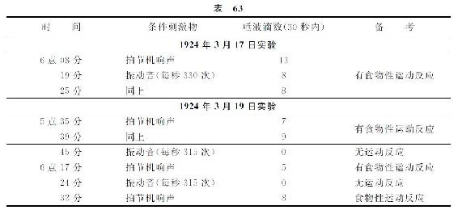
不曾做组织学的研究，狗还活着。
显然，我们这个肯定性的实验与卡里谢尔（Kalischer）的否定性结果的实验是相反的。
另外一个课题是与如下问题有关的：对于声声位置的分化，大脑两半球的协同作用是必需的吗？贝可夫（Κ.Μ.Βыков）的一些实验解决了这个问题。切断了狗的胼胝体（corpus callosum）。在动物恢复健康以后，着手于食物性条件反射的形成。这条件反射的形成并不曾有任何异常，并且与正常动物的场合相同地成立得很快。这只狗的反射是每秒钟1500次的振动哨笛音的反射。装在厚纸盒里的哨笛，固定于壁上，其高度是动物左耳的高度，左耳与壁的距离是一定的。在第8次应用的时候，反射发生了；在第70次应用的时候；反射达到最大的数值，并且成为恒常的反射。以后该哨笛完全同样地被放在狗的右侧。在此位置之下，哨笛音的应用并不并用无条件反射。于是有时在右方、有时在左方应用该笛音，努力于分化相的完成。可是在右侧这样声音的实验重复到115次，依然不会获得任何分化的征兆，所以没有再继续做这个实验的理由。所以必定要达到一个结论，就是大脑两侧半球的联合工作对于声音位置的分化是不可缺的。
现在举出上述实验中的一个。
对于这只狗，其他各种分化的形成是容易而迅速的。在其他一些正常狗的场合，音响位置的分化相形成与其他分化相形成一样，没有任何困难，在反复数次实验以后就会成立。
在知悉本讲里及以前各讲里所引证的一切事实以后，可以达到一个不容怀疑的结论，就是直到现在构成所谓感觉生理学范围以内的一切问题，事实上都可用动物条件反射的实验而获得解决。亥姆霍兹的有名的“无意识的结论”（参看他的生理学的光学）不就是些真的条件反射吗？现在我们采取优美地表现的浮雕图的简单事例吧。从浮雕出发的皮肤机械性刺激与运动性刺激是最初的基本的刺激，而光刺激是由浮雕的或多或少地照明的地位，乃至或多或少暗化的地位所发生的刺激，也就是一种信号性的刺激。这种信号性的刺激如果与皮肤机械性刺激及运动刺激同时发生，以后才有重要的意义。其他在狗的身上所做的客观性的一些实验都可以完全说明感觉生理学的许多事实，这是在今后的讲义内会再谈及的。
第九讲
诸位！直到现在，可以说，我们主要地研究了大脑两半球的外在活动，而这种活动是树立生物个体与外界两者间最复杂的、最微妙的关系的。第一，大脑两半球从自然界的无数动因里，只把自然界里比较不多的一些动因对生物个体变成信号，而这些信号化了的少数动因，有些是对个体直接有益的，有些是有害的，都使该个体发生相当的反应。以后如果这些具有条件性作用的各动因不能适应于现实的关系，就不断地受着大脑两半球的矫正，在一定条件之下，永远地或者一时地丧失它们的作用。最后，与不断地、复杂地动摇着的自然界相调和着，成为条件刺激物的这些动因受了大脑两半球的作用，或者被分解而对于生物个体成为极微细的成分（被分析），或者互相融合而成为种种的复合刺激物（被结合）。
现在我们注意于大脑两半球机能的内在机制吧。在大脑两半球发挥上述机能的场合，基本的两种神经过程，即兴奋与制止的两种过程，是怎样进展呢？
第一，此处最先引起我们注意的，就是这些过程如何进行（即运动）的问题，这也就是我们将要研究的问题。
在生理学方面，往往需要研究一组互相近似的许多现象中的各不相同的成员，而其时某一个成员的研究却是对于研究者，较之其他一个成员比较地更便利，这是常有的情形。在我们的研究的场合，内制止过程的研究是占着优势的。同时这制止过程运动的研究也鲜明地说明皮肤分析器对于生理学者所提供的极大利益，因为皮肤分析器具有巨大的、完全可以接近的感受性表面。
现在举出一个基本的出发性的实验。由于这个实验，开辟了大脑两半球生理学的一个重要的新篇章。这个实验和其次的若干实验都是克拉斯诺高尔斯基（Н.И.Красногорский）所做的。
实验 在实验狗一侧后腿上装上一系列的刺激器（5个），以给予皮肤机械性刺激。各刺激器是从最下者起算，以3、9、15、22厘米的距离从足部向上排列，最下的刺激器是应用于制止性作用的，而其他4个上方的刺激器引起阳性效力。这些各部位的反射是这样形成的，就是与通常情形相同地，起初在一个部位形成了阳性食物性条件反射。因为初期驯化的缘故，其余的4个部位也多少具有阳性作用。以后这4个上方的部位的刺激，都不断地并用食物而强化，直到这4个部位具有几乎同等的或完全同等的效果时为止；最低部位的刺激，相反地，虽然重复地被应用下去，却不并用食物的强化手续，直到该部位失去一切阳性作用而为制止作用所代替时为止。在下述的记录表里，条件刺激继续作用30秒以后，再并用无条件刺激。5个部位各用数字号码加以表示。由下向上地，最低的部位是0，其余的4个部位是1、2、3、4，同时上方4个部位与最下方相隔的距离，用括弧内数字加以表示。当然，阳性刺激都并用了食物，而制止性刺激却不并用食物。
我们在这个记录里看见了什么？3个不同的阳性刺激物的试验都显出相等的垂涎分泌的效力，就是30秒钟的分泌量都是5滴。其次，在完全相等的时间条件之下，就是说，在制止性刺激物三次被应用以后过1分钟，再个别地试验各阳性刺激物。于是这些阳性刺激物的效力就完全不同。与制止性刺激物最接近的部位的效力，一次是完全不发生，另一次也几乎没有作用（不到一滴）。其次的上方部位几乎失去了效力的一半，而最上的两个部位，或者保持原有的效力，或者作用反而增大若干。这个实验的意义是很明了的：因为皮肤的各点当然就是大脑两半球皮质内与此相当各点的射影（проекция），所以根据上述实验和与此相同的实验而不能不达到一个结论，就是№0（注：见附录六，戈绍龙学习笔记的第九讲（本书p.313）。）部位由于刺激所引起的制止过程，在大脑皮质内由与此相当的一点向该点的邻接各点扩布，而各点与制止过程发生点距离越远，所受的影响也就越微弱。对于距离最远的各点，几乎完全没有什么影响。这就意味着，在我们面前的现象是制止过程由出发点向大脑两半球实质的扩展。
如果我们应用制止过程的另一个强度，该制止刺激物作用的累积化（суммировать）不是三次而是或多或少的次数，并且所采取的制止过程发展终了瞬间与阳性刺激物开始瞬间两者的间隔时程是与上述实验相异的，那么，当然我们所获得的唾液分泌量的数字是别样的，然而意义却完全相同。与此有关的另一个实验的记录如下。
这样看来，在间隔时程较小的场合，较强的制止过程，也对于最远隔一点发生显著的影响。
如果在一个实验里，试验各个不同阳性刺激物的作用，而制止性刺激物作用终了后至其次位刺激物的间隔时程是各不相同的，那么，可以完全明了地看见，制止过程起初扩布很远，其次渐渐地离开稍远的各点，最后也离开与出发点最接近的各点。
现在举出与此有关的一个实验。
这样，№4在0.5分钟以后，№2在5分钟以后，№1在10分钟以后，都解除了制止过程。
在几天或几周以内，分化相的实验越频繁，远隔各点制止过程的解除就越快，并且在一个实验里，如果阳性刺激与阴性刺激多次重复地被应用，上述的结果就会有时发生。
值得提及，这些实验多次在许多生人的面前，都有过供览的证明，并且在多人参加的一个医学协会的开会时期也完全顺利地成功。
这种制止过程逐渐从其所暂时保持的各点离开的事实，应该怎样解释呢？这是各点上制止过程的毁灭或消失吗？或者这是遭遇着另外的某一种过程的影响，因而该制止过程仿佛是回到原有的出发点去而集中起来吗？我们注意于一个反复发生的正确而恒常的事实罢。在分化相的应用回数越多及越坚立的场合，完全与此并行地，该分化相的后继性制止就在时间和空间两方面都会减小。由于这个事实的存在，我们自然会倾向于第二个假定，就是说，我们可以假定，这些事实是意味着扩展过程的对立过程——即是过程的浓集（концентрирование），而不是意味着扩展过程的消散或减弱（рассеяниеилиослабление），所以这是向某一点的集中或增强（сосоедоточениеилиусиление）。以后我们将举出有利于这个结论的一些重要事实。
像我们刚才看见的，在克拉斯诺高尔斯基的一些实验里，浓集过程进行是缓慢的，是需要几分钟的。可是在这些相同的实验里，扩展过程的进展却是极快的，因此克拉斯诺高尔斯基不曾能够捉摸住这一扩展的进程，也不曾发现它。
当然，制止过程具有向两方面进行的性质，这是很重要的，所以我们对于这个主题必须利用各种变式的实验而进行研究。第一，引起我们注意的是在条件反射消去的场合所发生的一种制止过程［高冈（В.А.Коган）的实验］，并且我们也利用了相同的皮肤分析器和皮肤机械刺激，而实验的开始手续却是与克拉斯诺高尔斯基的实验相同的。准备先在某一个部位形成酸的阳性皮肤机械刺激性条件反射。其次，该条件反射以驯化的性质，在身体一侧的全皮肤表面都尽可能地形成了同等强度的反射，于是才着手做预定的试验。在预定的某一天，使皮肤的某一个点蒙受刺激的作用，记载其1分钟内的唾液分泌效力，但这条件性刺激并不与无条件反射并用，这样，条件反射就消去了。在每个很短的间隔时程（2分钟）以后，上述的处理手续重复被应用下去，直到刺激效果变成零的时候为止。于是在零相刺激成立后的各种不同时期以内，或者刺激皮肤的这一点，或者刺激另一点，并将1分钟的刺激效力记载下来。这些其他部位的各点，在一定的时间条件之下，也或多或少地成为被制止的状态。引起反射消去的皮肤第一个点，我们把它叫做第一级的消去（在第四讲曾经提及这个问题），而其他各点的消去被叫做第二级消去。所以，消去性制止并不是停留于受一定外来刺激影响的大脑内的某一点，而是向大脑实质的各部扩散、扩展的，就是说，此时所发生的过程是与我们在分化性制止过程的场合所见相同的。
很显然，在每个个别的实验里，我们必须更主动地使用皮肤的各部位，以做条件消去的实验，否则我们也许又有分化性制止的形成，会坚固地在该形成的部位保持长时期的效力（几个月），而不能获得消去性制止。消去性制止的效力在几分钟内，最多在1~2小时以内，在第一级消去的部位会消失。
现在举出说明这种情形的实验。
显然，如果与第一级被消去的地位相隔越远，第二级被消去的部位的制止过程也就越加微弱。
现在，如果在零相消去过程以后经过种种不同的间隔时程而刺激第二级消去的部位，那么，我们会看见，该间隔时程越大，该第二级消去部位的制止过程就会越小。如果条件相反，结果就相反。
现在举出说明这样情形的一些实验。
显然，上述的现象就是我们在分化性制止场合叫做制止过程集中的一种现象，因为制止过程与时并进地逐渐离开远隔的各点，而逐渐向出发点接近。
同时在上述实验里还有引起注意的一个详情。对于各只不同的动物，第二级消去各点制止过程消去的速度也大不相同。对于一号狗需要1分钟的事情，对于二号狗却需要15分钟。当然，这是事情很重要的一面，也就是用数字表现高级神经活动的特色。并且可证明这不是由任何偶然性而产生的影响，因为对于这三只狗做这些实验的时间有几个月之久，可是上述的区别是依然不变的。
在这一系列的实验里（高冈实验），我们能够看见了制止过程扩展的进程，就是说，从出发点开始，制止过程会渐渐地扩散开来。现在举出一些实验。在这些实验里，我们试验了与第一级消去点有种种距离的皮肤各部位的制止过程的状况，并且在第一级消去点完全消去以后，就即刻试验。
现在举出与此有关的实验。
将这些实验的结果与对这同一只狗所做的以前实验的结果比较起来，就显然地证明着，直接地在第一级消去部位的制止过程完全发展以后，只在与此点最接近的各部位也有同样的完全的制止过程，而在较远的部位却几乎没有制止过程的发生，即几乎不能察觉。令人感兴趣的是，应用于这些实验的三只狗，由于所选定的条件的关系，其远隔各点的状况也是很不相同的。一号狗的远隔点不但不被制止，反而表现很增强的阳性效力，而三号狗的远隔点已经有明显的制止状态。
举例如下。
以后高冈聚集了很多的数字材料，这当然更详细地说明这三只狗的制止过程的一切进行状况。按照这些资料，情形大致是如下的。一号狗的扩展过程大约需要了20秒钟，而集中过程的时间继续到75秒钟。二号狗的扩展过程在3分钟的时候完结，而集中过程的进行需要了15分钟。三号狗的扩展是4~5分钟，而集中是20分钟。这样看来，这三只狗的制止过程进行的继续时程很互有差异，但扩展与浓集两过程时间的对比却是几乎恒常的，就是浓集比扩展多4~5倍。然而与此有关的这些材料，不能认为是完全不可非难的，因为各条件反射出发点的反射量往往是很不相同的，而且在一些场合，并不曾能够确定这些数字差异的原因。
关于克拉斯诺高尔斯基及高冈两人的实验，请诸位注意于如下的情形。在克拉斯诺高尔斯基若干实验的场合，特别在高冈一号狗的实验的场合（参看1914年2月6日的实验），很屡屡地在第一级消去部位消去过程完全成立以后，检查远隔部位的场合，该远隔部位的阳性效力不但不曾消去，反而或多或少地，并且有时很显著地增大起来。在再下一讲内，我们会详细地认识这个特殊的现象。
关于我们所谓条件性制止的进行［安烈勃（Анреп）实验］，我们也在皮肤分析器上做过实验。当机械性刺激以条件刺激的性质在皮肤的不同部位形成了条件反射，并且各条件反射量相等的时候，如果只在一个部位使这阳性刺激与其他一个分析器有关（电铃）的刺激互相复合，重复地应用下去，并且不并用无条件反射的强化处理，于是这一个部位的阳性刺激就会变成阴性制止性的刺激。在颈部与胸部左侧境界的一个部位构成了这个制止点（№0），而在肩部（№1）、前腿趾部（№2）、胸与腹的交界部（№3）、腰部（№4）、后肢小腿（№5）及后肢趾部（№6）的各部位，依然都是阳性作用的各点。实验的进行情形是如下的。在一个预定的实验里预先检查了一个一定部位的完全阳性条件反射量。其次就应用制止性复合物，以后以各种的间隔时程，重复地应用这阳性刺激物。在个别的各实验里，对于其他的各阳性部位，也用同样的手续加以处理。阳性刺激和制止性刺激的继续时间都是30秒钟。结果列于下表。
第一个直行是皮肤受刺激的各部位的号码。其他的各直行表示各部位的制止作用量，但这些数字是制止量对于阳性刺激量的百分率。最上的一个横列表示制止性刺激终了后的间隔时程。
如我们在上表里所看见的，在某一个一定点上形成了条件性制止的场合，制止过程起先扩布到一个分析器的全部，而在距离出发点越远的部位，制止过程也就越弱，并且各点的最大制止过程都只在30秒钟以后才能达到，以后各部位的制止过程同时渐渐地开始减弱。只有№0点却是例外地即刻达到最大的数值，而不是逐渐增强的。当然，即在这些实验里，偶然的一些新异刺激也发挥紊乱性的作用，或多或少地，有时制止了阳性的反射，有时使制止性反射解除制止化了。
上述的关于制止过程进行所做的三个系列实验，是与分化性制止、消去性制止以及所谓条件性制止的三种过程进行的问题有关的。由于这些实验而确定了一个事实，第一是，在某一点上以适当的处理而形成的制止过程，会扩展于一个分析器的全部，第二是，这扩展的制止过程又会慢慢地消失。可是在这个事实的详情方面，还有些显著的区别，有时这些区别甚至是本质性的。在克拉斯诺高尔斯基分化性制止的场合，制止过程的扩展是发生于瞬间的，是实验者所不能捉摸的，不过集中过程的进行却需要一定的时期。在高冈实验的场合，制止过程也是慢慢地散布于整个分析器的，不过比集中过程的发生却是远远更快。这个区别也许可以认为是与发展中的制止过程的强度有关的。克拉斯诺高尔斯基通常地在制止性刺激物虽然即刻发挥完全作用以后（零相），还把制止性刺激物重复地应用了若干次。高冈在消去过程一达到零的时候就不再应用制止性刺激物了。可是在条件性制止场合的区别，是远远更复杂的、更本质性的。在安烈勃所做的条件性制止实验和克拉斯诺高尔斯基的分化性制止实验两个场合，制止过程都向一个分析器的全部扩展，不过扩布的程度却有不同，可是以后，安氏的实验的制止过程却与克拉斯诺高尔斯基的场合不相同地，在一定的时期以内，又同时在各点上逐渐加强，以达到某一个极大的数值。在极大数值以后，全部各点上的制止过程，又同样地同时渐渐开始减弱。这样看来，在条件性制止的场合，与分化性制止及消去性制止相异地，不曾能够发现从一点向另一点的移行，既不从一个方向移行到另一个方向，也不对出发点前进或后退。
因为在我们面前的这个新范围是越过越广大而越深入的，并且特别有关大脑两半球皮质内神经过程进行的问题是越过越复杂化的——这是我们以后会看见的——，所以我认为，我们材料的说明必须按照历史的顺序（即我们25年间的实验），因为现在即刻把研究的全部各点都归结于具有联系性的最后的结论，这还是不可能的。
在刚才所记载的安烈勃研究里，已经详细地引证了一个事实，其一部分是其他学者早已发现的。这个事实就是，如果在身体一侧的各个不同的部位形成了阳性或阴性条件反射，并且如果这些反射在制止过程进展的时候发生动摇（特别在安烈勃实验里制止过程的进展上），那么，在身体另一侧各个相对的部位（симметричныеместа）并不需要任何条件反射形成的手续，自然会非常正确地有同样的条件反射的出现。关于这个有趣的事实及其一部分的分析是以后会有记载的。
与皮肤分析器的制止过程进行有关的实验相同地，我们试做了耳（即声音）分析器的实验，因为我们假定着，在大脑两半球皮质里也有与耳分析器末梢部相当的射影。以这个目的，我们（马努伊洛夫及伊凡诺夫·斯莫连斯基）采用了各种不同的声音（各种的音、拍节机响声及嘘声）当做一些条件刺激物，先用其中的一个刺激物做反射消去的实验，以后再研究这已消去的刺激物对其他各刺激物的影响。
此地举出伊凡诺夫·斯莫连斯基有关本问题的实验。对于一只狗，用4个音形成了个别的食物性条件反射。4个音都是利用马克斯·考尔（Max Kohl）的变音器（тонвариатор）而获得的。4个音是各由两对邻接音而成立的，而这些音的相隔的距离是3个八度音程（октава），就是大八度音程的si（H123次振动），小八度音程的do（C130次振动），第三个八度音程的do与re（D1161次振动，C1036次）。并且也用嘘音及拍节机响声（每分钟100次）形成条件刺激物。这实验是这样做的，就是把某一个条件反射消去而达到零相以后，或者即刻地，或者各经过1、3、5、7、10、12及15分钟，在各个不同的实验里，检查全部其余的各反射。全部的各条件反射都成为制止状态，不过被制止的程度却有不同。一部分的结果如下表。
这个表指示着，在一对低音中的一个音被消去的场合，另一个低音的反射就比每个高音的条件反射，更迅速地达到最大的制止过程，更长久地保持这最大量，更慢慢地解除这制止过程。在一对高音中的一个高音被消去的场合，另一个高音的反射也比每个低音的反射，更迅速地达到最大的制止过程，更长久地保持这最大量，更慢慢地解除这制止过程。在任何一个音被消去的场合，嘘音反射的与拍节机反射的第二级制止在各种关系上的表现，都比各音反射的表现更远远地微弱，并且相反地，在嘘音反射及拍节机反射被消去的场合，其他各音反射的第二级制止的表现在一切关系上都是很强烈的。
当然，只从各音消去及消去后检查各音反射的实验说，我们可以多少有根据地主张，制止过程是在声音分析器的脑皮质终末部，即在考尔铁氏器官射影的脑皮质终末部内进行着的。消去了的各反射，一方面对于各个纯音发生影响，另一方面对于嘘音及拍节机响声发生影响——这种互相影响的结果如何，很像是由于这些不同的各种刺激的不同强度而决定的。
我们必须承认，在皮肤分析器方面明了地显现的情形，也在声音分析器的方面足够明了地显现出来，就是说，在一个分析器脑终末部内的制止过程由一点向其他一点的运动，也发生于其他各分析器之内。然而与此有关的证明，受着显然的技术条件的限制，是很困难的，或者甚至在目前是不可能的。如果把这个事实的详细情形能够确定，也许就有一个基础，以说明这些分析器基本性的构成。
第十讲
诸位！在前一讲里，我们着手于大脑两半球内神经过程进行有关的研究了。先从内制止开始，我们做了许多研究，因此我们确信，由于适当的刺激，在一定的点上所引起的内制止起初向该分析器的全体迅速地扩展开来，以后又慢慢地向出发点的方向集中，并且对于这扩展与集中两个方向的进行，甚至也是可能逐步加以观察的。在这篇讲义内，我们将继续研究这种神经过程向大脑两半球全部进行的状况，就是说，我们将研究制止过程由一个分析器向另一个分析器的移动。与此有关的各实验，是及于内制止过程的一切场合的。
在记载分化性制止的时候已经说明，在一个分析器里被引起的制止过程，也会在其他各分析器里显现出来。在有关这种制止过程的各实验里（贝略可夫实验）很明显，在制止过程微弱的场合，该制止过程不会在其他分析器内显现出来，而在制止过程强烈紧张的场合，制止过程就会在其他的分析器内发生，但是其表现的强度比发端的分析器内该过程的强度是大大减弱的。
现在举出这个系列实验中的若干实验。
对于一只狗，形成了各种个别的食物性条件反射，即是用加尔顿笛每秒钟4000次的振动音及在狗眼前一个回转物无杂音的运动当做条件刺激物。在30秒钟里声音性反射通常引起11~12滴的唾液分泌，光性反射引起7~8滴的分泌。较低的半音是分化相。
这些实验的意义是显然的。接连两次应用分化音以后过1分钟，原来的阳性音（每秒钟4000次的振动音）丧失其作用量的一半以上，而光性反射却不受什么损失。在制止过程很累积以后，譬如使用分化音4次以后（并且间隔时程更加缩短），经过1分钟，光性反射也就被制止了，不过被制止的量比通常量的一半稍强。而在使用分化音4次以后，音反射却几乎完全被制止了。
完全同样的情形也发生于消去性制止的场合，这是高尔恩（Э.Л.Горн）一些实验所揭示的。在高氏的场合，由于实验上的若干变式，制止过程进行事实的表现是更确实可见的，尤其特别关于制止过程比较早早离开另一个分析器的事实为然。若干的这类实验如下。
对于一只狗，形成了个别的食物性条件反射，有些条件刺激物是调音笛的cis音及在狗眼前三个16支光电灯的开亮。
电灯光的条件反射被消去以后，检查对于声音反射的第二级作用。光反射被消去达到两次零以后被放置24分钟，才开始恢复作用。在光反射这样程度的消去以后，即刻就应用声音反射，于是声音反射的效果不过失去原有效果的一半左右。而在另一个实验里，在光反射效果完全消去以后经过3分钟，声音反射已经完全由制止过程解除了。所以，光分析器的制止过程向声音分析器扩展的程度是微弱的，并且很快地完全脱离声音分析器。这制止过程从声音分析器的迅速脱离，并不是因为该制止过程较为薄弱，这是由于以后各实验的详细情形而能证明的。在光分析器的方面，各次应用间的一定的间隔时程（3分钟），对于反射消去过程的各个阶段，都只引起反射的减弱，而在声音分析器的方面，同样的间隔时程却引起声音反射的完全恢复。此外，在上述的第二个实验里光反射消去的场合，当光反射量已经很小的时候，甚至虽然特别增大了3倍的间隔时程，也只能中止了反射量的减弱，而并不曾使反射有任何显著的恢复。最后，第一级反射消去与第二级反射消去两者恢复作用上的区别，并非系于光细胞与声音细胞特性的如何，这是由于我们其他的实验可以证实的，就是在声音反射第一级地消去之后，我们也观察了光反射的第二级消去，然而各种关系是完全与上相同的。因为这些实验与上述实验完全相似，所以我不再加以引证。这样地，我们可以有理由地假定，在第二级被消去场合的分析器里，我们所见的是扩展过程周围部的关系，而该过程从周围部开始倒退地进行，这就是该过程的浓集，这正是与皮肤分析器内的浓集现象完全相同的。
消去性制止向全大脑半球进行的实验，一般地说，我们曾经用种种方法施行过。对于第一级的消去中的分析器，我们采用了两种不同的刺激物（譬如电灯的开亮与在动物眼前的回转物），先用其中的一个刺激物形成了消去性反射，以后研究同一分析器内及另一分析器内两种刺激物的制止过程。扩展性制止过程被解除的次序如下：另一分析器的反射被解除的时期最早；其次，不久而稍慢慢地被解除的是同一分析器的消去中的第二级反射；最后地很迟地被解除的是第一级已消去的反射。这最后的区别，就是说，属于同一分析器的两种反射（第一级及第二级消去性反射）恢复时间快慢的区别证明着，各种不同的反射在一个分析器内各有区域上的限制，这是我们在前一章的讲义内已经知道的事情。
与条件性制止过程进行有关的一些实验也获得了同样的结果。使用一个外来动因形成了若干条件刺激物的条件制止物，而这些条件刺激物却是属于各种不同的分析器的。就是说，使该一个外来动因与每个条件刺激物都分别地复合起来，重复地应用多次，但每次都不并用无条件刺激物的强化手续，于是每个复合刺激物都变成制止性复合物了。这实验是这样做的。先对这些条件刺激物中的一个进行试验，并记载了它的唾液分泌的效力。其次，把制止性复合物与这个条件刺激物或者与另一个分析器的一个条件刺激物重复应用若干次。在制止性复合物最后一次应用以后，过了不同的间隔时程，再检查第一个条件刺激物的效力，这样，一个实验就完结了。如果制止性复合物里包含着第一个刺激物，那么，该第一个刺激物是后继地非常被制止的，慢慢才恢复原有刺激量。如果属于另一个分析器的刺激物是构成制止性复合物的一个成分，那么，起初受试验的一个刺激物被制止的程度只是很弱的，很快地就恢复原有的刺激量。这个事实意味着，在条件制止性刺激物的分新器内，后继性制止的过程是很显著的，并且继续很久的，但在另一个分析器内，后继性制止的作用很小，并且会迅速地消失。
现在举出德格查来娃（В.А.Дегтярева）实验如下。对于一只狗，用拍节机响声（拍）和几个电灯的开亮（灯）分别形成了食物性条件反射。对于这两种条件反射，用在狗眼前的无声回转物（回）分别形成了条件制止物。这两个条件刺激物和制止性复合物每次作用时间各持续1分钟，而唾液分泌量也以每分钟的滴数记载下来。
在应用了制止性复合物五次以后，该复合物中一个成分的拍节机反射在经过7分钟以后才完全恢复了作用；但是在拍节机不参与制止性复合物的场合，只经过15秒钟，拍节机反射的作用就几乎完全恢复了。
最后，我们关于延缓性反射所发展的制止过程的进行也做了研究，这是在高度延缓性条件反射的阳性效果延缓的场合，发展于活动时相以前的制止过程。在这个场合，由于制止过程的特殊性，即由于这是一种时相性现象的缘故，我们不能不期待，这制止过程进行有关的各实验会具有若干特色，而事实上也是如此。在各实验狗之间，我们从实验结果看，发现了一个巨大区别。在若干只狗的场合，我们很容易成功地证实这制止过程向其他分析器内的扩展。这是这样成立的。延缓性反射的刺激物的应用，在不活动性时相的时期内就中止，其次，即刻地或者稍迟地，开始应用另一个分析器的一个条件刺激物，其刺激量是预经测定的。这类实验的记录如下（高尔恩）。
一只实验狗有如下的酸性条件反射。延缓30秒钟：一个是电灯开亮，另一个是皮肤机械性刺激。延缓3分钟的是拍节机的响声。
结果是完全显明的。拍节机所引起的制止过程，在其作用的初期，由声音分析器而进入于光分析器和皮肤分析器之内了，其影响是，这两种分析器的反射量减少了两三倍。
然而这是一只狗实验的结果。在另一只狗的场合，结果毋宁是与此相反的。在延缓性反射不活动性时相以后直接被应用的条件刺激物，甚至于在反射量方面反而有若干的增大。这个乖异的原因是明显的。在上述第一只狗的场合，在孤立化的不活动性时相与另一个受试验的反射之间，插入了2分钟的间隔时程，于是在这2分钟以内，活动性时相不曾出现，就是说，制止过程的时相实在是正确地独立存在的，所以制止过程对于另一个反射发挥了后继性制止的作用。在第二只实验狗的场合，条件虽然相同，但在间隔时程内已经出现了活动性时相，于是另一个反射当然不是减弱反而增强了。所以，这只狗的兴奋过程的出现是较早而更强的，就是说，不活动性时相是不曾完全孤立的。并且与这情形相符合的是，一般地说，第一只狗的制止过程比兴奋过程显然地更占着优势。
在前一次和这一次的讲义内，我引用了多数的实验，以说明制止过程在大脑两半球实质内进行的状况。你们也许以为这是多余的。但是我故意这样做了，其目的是要使你们明白了解，我们常常是以多少简单的纯粹的形式，观察了这类现象的。虽然如此，也许可以说，这不过是因为特殊的实验条件或因为动物的特性而在我们面前出现的一种现象的基本性骨干，可是在绝大多数的场合，这个骨干是为许多其他附加成分所掩蔽的，因此全部的实际现象就很复杂化了。
在这些实验时，我们老早遭遇的第一个意外的事情是如下的。
在上次讲义所叙述的有关皮肤分析器制止过程的扩展及集中的各实验里（克拉斯诺高尔斯基），我们遭遇了这样一个意外的事实。在一个实验的准备性试验的场合，与制止点相隔22厘米的一个皮肤点受了条件机械性刺激以后，在30秒内有6滴唾液的分泌，而光性分析器的刺激却引起5滴的唾液。其次，制止点再受了3次刺激。在这刺激以后，过1分钟，再检查视觉刺激的结果，唾液分泌是零，就是说，完全的后继性制止发生了。10分钟后，再刺激制止点4次。再过1分钟，与制止点相隔22厘米的皮肤部位的刺激却发生了完全的效力，即唾液8滴。
同样的事实在我们其他的一些实验里也曾被观察过［彻伯他来娃（Чеботарева）实验］。一只狗具有各种不同分析器的各刺激物的若干条件反射。条件刺激物（拍节机）在与条件制止物（光分析器的）共同被应用的场合不曾引起一滴唾液的分泌。过了一两分钟以后，拍节机单独地完全恢复了它本身寻常的唾液分泌的效力，并且受了强化的处理。以后即刻再检查了皮肤机械性刺激的条件反射和樟脑气味的条件反射，可是这两种反射还是显著地被制止住的。
这样地，可以得一个结论，就是制止过程在某一个分析器内已经形成以后，经过若干时间，该制止过程在该原有的分析器内已经消失，而在其他的各分析器内，经过很长的时间，却依然存在。
可是同时也注意到，上述情形的发生，只限于其他分析器的条件反射是很新的场合，就是说，其他分析器的条件反射或者是刚刚形成的，或者是虽然成立已久但老早不曾应用的，或者一般地说，是弱的反射，即本来是由微弱强度的动因所形成的。因此我们可能想象，原来已被制止的某一点，即使似乎现在从制止过程被解除了，这也并不意味着，该点的区域内已经不再有制止过程的存在。由于一定的一些条件，该点内的兴奋过程可以超过制止过程，于是，可以这样说，该兴奋过程是不为它周围的、已经弱化的制止过程所侵犯的。并且在实际上有一个常见的事实，就是在反射还没有充分集中的场合，或者一般地说，在反射过程薄弱的场合，该反射非常容易地受外制止或内制止的影响，同时，很强的反射却不会受外制止或内制止的影响。关于这样说的、强有力的、充分形成的兴奋点与制止点两者的坚固性和不可侵犯性，我们以后会再讨论。
在起初观察了这些似乎与制止过程扩展和浓集的规律相矛盾的事例的时候，当时做了如下的特殊实验［巴夫洛娃（А.М.Павлова）］。
对于几只实验狗，用各种不同分析器的一些刺激物形成了一些条件反射，同时很小心地注意，使这些条件反射都以相等的回数重复地被应用过。当全部各反射都获得最大效力的时候，使这些条件反射中的一个反射与一个新外来动因互相结合，并且以通常的方法使这复合刺激物变成一个制止性复合物。该制止性复合物，及其条件刺激物，都重复地被应用下去，直到阳性刺激物所受该复合物后继性制止过程的作用限于2分钟为止，就是说，在2分钟以后，后继性制止对于该阳性条件刺激物不发生作用。当然，在这时期以内，全部各条件反射所受的实际处理都是以同等强度为目标的。以后，全部这些其他的各条件反射才第一次与条件制止物分别地并用而进行试验。结果是，除一个反射以外，这些条件反射都在制止复合物应用以后过了两分钟的瞬间，已经从制止过程被解除了。例外的是一个从弱度光线刺激而成立的条件反射，而这个光条件反射的唾液分泌效力平常就是弱于其他各反射的。因此可以得一个结论，就是同一程度的制止过程对强有力的各刺激物不发生影响，而对于弱刺激物却发挥显著的影响。
然而这只是使制止过程扩展和浓集的事实成为复杂的一个因素。以后慢慢地我们会知道另外一个因素。它具有更大的意义，并且更能搅乱制止过程扩展和浓集两者单纯的进行。关于这个因素，我们会在下一次讲义里报告我们的材料。
现在我转而说明我们关于兴奋过程进行的各实验。我们有关这个问题的研究是非常少的。
我们的第一个关于兴奋过程扩展的实验［彼特洛娃（М.К.Петрова）］是与我们开始制止过程扩展和浓集的研究方式完全相同的。沿着几只实验狗的后腿，从足部开始直达腰部，安置了5个皮肤机械性刺激的刺激器，各部位间的距离大约相等。对于一只狗，以最下方的刺激器（一号）的作用形成了条件性酸反射，对于另一只狗，形成了条件性食物反射。因为驯化过程的结果，上部各刺激器（二、三、四、五各号）当然也引起了相当的反射，但是都利用通常的处置而被分化，并且达到作用等于零的效力。于是才着手于主要的实验。起先我们检查了最下方刺激器的作用，就是说，检查30秒钟阳性刺激物的作用，其时把每15秒钟的唾液分泌量都个别地记载下来，以后再用寻常的办法，使无条件刺激物与该阳性刺激物相结合。经过若干时间，最下方的刺激器又再被应用，不过只是15秒钟。在这以后，上部的各刺激器即刻也开始作用15秒钟，不过在各实验里，这样地开始作用的刺激器只是一个，或者是较近的，或者是较远的一个。所得的结果如下：在由一号刺激器移行于最近的第二号刺激器的场合，在二号刺激器作用的期间，唾液分泌量普遍减少，但有时却与一号刺激器作用期间的唾液分泌量相等。在由一号移行于第五号的场合，就是说，在移行于最远部位的场合，唾液分泌就非常减少。在同样条件下应用三号及四号刺激器的场合，唾液量是中等度的，就是三号接近于二号，四号接近于五号。在另一个系列的实验里，不仅记载制止刺激物作用期间的唾液分泌量，而且也测定直到分泌期最后的分量。于是远近各刺激器的作用所引起的区别差不多没有例外地更显然可见了。较近刺激器所引起的唾液分泌时间，也比在远隔刺激器的场合，更长而且更显著。
几天实验的资料如下。这只实验狗具有酸条件反射。
这些实验的结果是很显然的。在从第一刺激器移行于第二刺激器的场合，在第一刺激器作用的时期（15秒），按照各实验的顺序，唾液分泌量是7滴、7滴与12滴，可是在二号刺激器作用的期间，分泌量兼后作用量一共是15滴、11滴及16滴；在一号刺激器移行于五号刺激器的场合，在一号刺激器作用的期间，唾液分泌量是6滴、8滴与8滴，而在五号刺激器的作用期间，唾液分泌量及后作用量是3滴、6滴及6滴。在上文的三个实验，这个总量都是很多的，在这三个实验里，这个总量却都是非常微小。在二号刺激器作用以后，后作用继续45~60秒，在五号刺激器作用以后，后作用只继续15秒。但二号刺激器的恒常的制止作用必须是，并且实在是大于五号刺激器，因为如我们已经知道的，分化相越精细，于是在完全分化的场合必定越有更强的制止过程的发展。关于二号刺激器的制止作用实在更强于五号刺激器的事实，在本研究里，有过另一些特别有关两个刺激器后作用制止的实验而加以证实，并且其时也检查了一号刺激器与其他一些分析器的条件刺激物。此地举出一个例子，证明对于同一只狗，在各制止性器械作用后过了5分钟，后继性制止对于一号刺激器的影响是如何的。
二号刺激器的制止过程，经过5分钟以后，依然是很强烈的。而五号刺激器的作用在5分钟以后，差不多地或完全地消失了。
在这以后，关于上述各实验一系列的结果只可以作如下的说明。一号刺激器所引起的兴奋过程对于最靠近的二号部位比对于较远的五号部位显出更大的作用；换句话说，兴奋过程从它本身发生的部位起，向最接近的各点扩展。
这些实验最近由柏德可琶叶夫（Подкопаев）重复地施行过一次。在狗的身体的一侧，从前腿经过躯干直到后腿的终末部，安置了皮肤机械性刺激的若干刺激器。利用寻常的手续，使刺激器在前腿上的作用变成阳性食物性条件刺激，而使其他各刺激器的作用都变成制止性条件性食物刺激。唾液分泌量每5秒钟记录一次。一次是阳性刺激物作用30秒钟以后受强化处置；另一次是阳性刺激物作用，不过是15秒钟，其后休息15秒钟，只在这以后才施行强化处置。这样，既在连续刺激的场合，也在休息15秒钟的场合，唾液分泌都是发生的。在连续性刺激的场合，起初15秒钟的唾液分泌量对于其次15秒钟的分泌量之比是1∶2.4；在终止15秒的场合，这个对比是1∶1.25。在以后的各实验里，阳性刺激物在作用15秒钟以后，利用最近部位的或最远部位刺激器的帮助，交替地施行制止性刺激物作用15秒钟的试验。于是在应用最近部位制止性刺激物的场合，起初15秒钟唾液分泌量对其次15秒钟分泌量之比是1∶1.35；而在应用最远部位制止性刺激的场合，这个对比是1∶0.53。
很明显，在此地，正如在前述—个同人的实验里，在阳性刺激终止以后的瞬间（实际上是0.5~1秒钟以后），兴奋过程对于最近的制止点发生了影响，毁灭了该制止点的作用，但对于远隔的部位却没有刺激的作用。
关于这一系列的实验，正和关于其他系列的这些实验相同地，我们不能断定地说，这刺激物的这个进行时相究竟是什么——这是扩展时相呢，还是浓集时相呢？现在正计划着一些实验，使制止性刺激物不在阳性刺激物停止以后即刻就被应用，而是在经过若干秒以后才被应用。
可惜关于这个问题，我们目前所做的特殊实验资料已限于上述的材料了，可是我们还有偶然观察过的材料，显然地，或者很像可能地，对于这个问题具有很相近的关系。
这些个别的场合如下。
我们有一只具有极强烈的警戒反射（сторожевойрефлекс）的狗。经常地研究这只狗的实验者［贝日波卡耶（М.Я.Везбокая）］和这只狗在一个房间里，完全顺利地做狗实验的准备，把狗安置在实验架台上，把各种器械装在狗的身上。条件反射的形成是进行得完全顺利的。但是当一个生人在房间里出现的时候，动物就发生极强烈的攻击性反应。如果生人代替实验者的地位（我就是这样的），攻击反应就更厉害。当我在这样情形之下应用已经形成的食物性条件刺激物的时候，该条件刺激物所引起的唾液分泌量，比在原负责者从事实验的场合的寻常分泌量是显著地增多的，而且狗用极度的肌肉紧张吃给它的食物。但是当我故意态度安静地不做任何动作的时候，动物对我的攻击反应就完全消失了。在狗对我的一切反射之中，只剩下对我不断地注视。并且其时同一个条件刺激物的应用只引起较正常时更少的唾液分泌，或者简直完全不引起唾液分泌。可是只要我的态度稍为自由或者特别地，如我站起来，攻击反应和增强的唾液分泌即刻就会恢复起来。如下的情形是有趣的。如果生人静坐不动，狗也安心地不兴奋着，那么，在条件刺激物以后给予食物，就会在食后的若干时间以内，狗对于该生人显出攻击反应，纵然该生人继续地坐着不动。除了以下的解释以外，这些事实是难于解释的。由于目击生人动作而引起的强烈兴奋，扩展到脑的全部，特别增强了进食有关的脑领域的兴奋性。当外方刺激物减弱而这兴奋过程也减弱和集中的时候，那么，相反地，其余各部分的兴奋性，与安静状态时相较，就是减弱的（外制止的现象）。食物性刺激也具有同样的影响，增高了攻击反应中枢的兴奋性，不过兴奋时间是很短的。
在另一只完全特殊的狗的场合［泊洛洛可夫（И.Р.Пророков）研究］，我们也观察了完全相同的现象。对于这只狗，皮肤机械性刺激引起了特殊的非常强烈的运动反应（可能是性的反应，或者是与酥痒感觉相似的反应）。虽然如此，同时却由于机械性刺激形成了条件性食物反射。与寻常的情形显然相反地，从唾液分泌而言，这个食物反射是比其余的各条件反射更强大的。在这个场合，通常在皮肤刺激开始的时候，特殊的运动反应就出现，而经过10~15秒钟以后，这运动反应为一种极强烈的食物性运动反应所代替，这是在其他各条件刺激时所未有的。当我们用了若干的处置（该处置的有趣的说明在以后）以除去这种奇异的反应以后，皮肤机械性条件反射的反应量就与普通时相同，而让各声音刺激物占着优势。这也是兴奋过程扩展的一个明显的事例。
正是这样地，我们想解释如下的一个事实。在由各种不同的食物所形成的若干条件反射彼此互相作用的场合，某些条件反射为其他条件反射所制止的过程不是即刻地而是经过几分钟以后才发生的。可能这样想，起初化学性分析器内直接由某种物质而成立的兴奋点，向邻近各点扩展兴奋过程，于是各该点的兴奋性会暂时地增强，只在以后，兴奋集中于最初一点的时候，制止过程才会发生［沙维契（Савич）实验］。
从同一观点也许可能说明一个意外的事实，就是在华西里耶夫（П.Н.Васильев）的研究中形成各种不同温度性条件反射的场合所遭遇的事实。用零摄氏度的寒冷对于皮肤的刺激形成了条件性酸反射，用47摄氏度左右的温度刺激形成了条件性食物反射。需要很多的时间，才形成了这些反射。当这些条件反射终于成立的时候，各反射在如下的关系上很不安定。只要几次继续地反复应用条件酸性寒冷反射而同时加以强化以后，应用充分形成的食物性温暖性反射，该食物性温暖性反射就仿佛变成寒冷反射。与此相反的条件也引起相反的结果。这个变化的事实是很显明的、无疑的。反射性质的测定，第一是根据运动反应，当然运动反应在这两种反射的场合是彼此完全不同的：在食物性反射的场合，狗面向着实验者，有时向实验者注视，有时向食物出现的方向的注视，用舌舐动；在酸反射的场合，狗对实验者采取回避的方向，吠叫着或悲鸣着，头部振摇，用舌做吐出的运动。其次，颌下腺唾液的化学性质也是不同：在食物性反射的场合，唾液是非常黏长而浓厚的；在酸性反射的场合，唾液稀薄而像水。我们非常小心地注意于这种差异。这样长远而顽固的两个反射的互相变迁的事实似乎是奇怪的。这个事实也许可以解释如下的。如众所周知的，分配于皮肤表面的寒冷和温暖的各分析器的终末部都是点状而互相交错的。也许可能假定，这些分析器中枢终末部也是密切地互相交错的，并且从我们一些实验［仕序洛（А.А.Шишло）］而实在地知道，寒冷与温暖两种神经性脑皮质终末部，从其所在部位而言，是互相一致的。如果注意于这一点，那么很显然，为什么寒冷分析器的刺激会这样容易地扩展于温暖分析器之内，为什么温暖分析器的刺激也容易向寒冷分析器扩展，并且为什么两个分析器的活动在我们的实验里是如此难于分离的。
在与大脑分析性活动有关的第一章讲义内我们谈及了一个事实。该事实从其机制而言是应该现在说明的，因此我必须再加以说明。这就是一切刚刚被形成的条件反射具有初期泛化作用的事实。也就是说，现在有一个动因经过一定的手续的处理而成为条件反射。其时还有另一些动因，虽然从来不会被应用过，可是因为与上述已形成条件反射的某动因具有同一组属的关系，此时也仿佛具有条件刺激物的性质而自动地发挥条件反射的作用。
我现在举出皮肤分析器的一些实验做例子［安烈勃（Анреп）实验］。
在动物身体的一侧装上了皮肤机械刺激的各个刺激器。零号刺激器被安置在后腿的上部，成为条件性食物刺激物。其他各刺激器安置如下：一号在后腿的终末部，二号在腰部，三号在躯干的中部，四号在肩部，五号在前肢下部，六号在前肢的最下部。这全部各刺激器的作用是自动地，就是说，不预先受任何处理手续地，也带着条件性唾液分泌的性质，并且其时的唾液分泌量，在与零号刺激器相隔越远的部位，逐渐地越加减少。在下方的小表里所举出的平均数字是应用于这种实验的三只狗中一只的唾液量。唾液量是用划度表示的，每一划度与0.02毫升相当。分泌量是各刺激物作用30秒钟的记录。
各狗的这种泛化作用的坚强度是很各不相同的，并且在实验进行的时候，不一定容易维持这种泛化作用于一定的程度。如果我们试用新的部位，并且每次的刺激都被强化，各反射就都会变成同等的。如果各试验性的刺激都不受强化的处理手续，就会制止过程发展的机会，即有分化相的形成，所以，如果要在这些实验里获得多少正确的结果，就需要重复的应用，才能保证其结果，但在重复应用的时候，必须轮流地使刺激受强化处理一次，和无强化处理一次才行，或者必须在各次重复应用手续之间安置很长的间隔时程。
泛化现象的机制应该怎样解释呢？最与我们现在的知识相当地，这个现象是可以解释如下的。与感受器的每个要素（成分）相当地，各有其求心性（传入性）神经纤维和大脑皮质里的有关细胞，并且对于感受器内或大或小的一组要素，各有其一组的神经纤维组和皮质细胞组。外方的一个刺激，如果从感受器的一定点或一定部分进入大脑皮质，这并不是停留于脑皮质内有关的一点或一个部分，而是向皮质全部扩展的，并且在与兴奋中枢相隔越远的部位，扩展程度也就越薄弱，这是我们在另一个神经过程，即在制止过程的时候所明了看见过的。这样地，与兴奋的最初一点并行地，因为扩展的缘故，受刺激的各点必定与无条件反射的中心互相结合，因此引起附加性反射（прибавочныйрефлекс）的形成。并且如果各兴奋点与外来刺激最初结合点相隔越远，这些附加性反射也就越弱，因为条件效果的强度是与刺激强度有一定关系的。从这个观点而言，库帕洛夫（П.С.Купалов）所观察的事实也与此一致，就是泛化现象的发生和进展都是需要若干时间的，因为较远的反射是比较地微弱的，并且较迟地发生。
我们关于一个分析器内各条件反射初期泛化的事实所做的说明，也许可能适用于痕迹反射时普遍性泛化过程（универсальнаягенерализация）的事实，即是适用于第七讲内已经记载过的、由刺激物的很迟的痕迹所形成的痕迹反射。在一个无条件刺激物与一定外来动因互相结合很迟的场合，该动因的刺激会向全大脑两半球扩展，所以大脑两半球的任何一点都可以与无条件刺激物的中心相结合。在无条件刺激物很早被结合的场合，兴奋过程的中心就把兴奋向它的本身集中，因此就限制了兴奋过程过广的扩展。
第十一讲
诸位！当我们着手研究大脑两半球机能的内在机制的时候，遭遇的事情就是兴奋和制止向大脑实质的进行。第二，远在以后我们的观察范围，其次进入我们实验范围的事情，就是这两种过程彼此互相刺激的影响。在直接引起兴奋或制止过程的刺激终止以后两过程互相刺激的影响，即发生于该过程开始点的周围部位，也发生受了刺激的原来地位。与盖林格［Геринг（Hering）］及谢灵顿相同地，我们把这种影响叫做诱导相（感应）（индукция）。这个过程是彼此相对的，是互相扬抑的（互相更迭的）（реципрокное）：兴奋过程引起制止过程的增强，并且相反地，制止过程引起兴奋过程的增强我们把前者叫做“诱导相的负性或阴性时相”（отрицательнаяфаиндукции），把后者叫做“诱导相的正性或阳性时相”（положительнафазаиндукции），或者简单地叫做负性诱导相与正性诱导相。
诱导相的事实老早就是在我们眼前很明了的，可是像在我们研究时候常有的一种情形，这个事实为另一个观念所掩蔽住，就是，以为神经过程的进行是规则地严格地向前进行的现象，因此我们把诱导相的事实当做偶然的紊乱影响看待，我们以为这是在研究有机体最复杂的这部分机能时候常常发生的影响。起初在高冈（Коган）一些实验里，这一现象才不断地引起我们的注意。如在第九讲内已提及的，在某一只实验狗的场合，在一定部位的皮肤机械性刺激作用完全消去以后，直接地检查了一个远隔部位的结果，该部位几乎每次都是显出兴奋性的增强。然而在弗尔西柯夫（Фурсиков）有计划地热心地开始研究这个现象以前，这诱导相的事实依然是不曾阐明的。
现在举出弗尔西柯夫的一个发端性的实验。对于一只狗的前肢，除其他条件反射以外，还形成了皮肤机械性刺激的条件性食物反射。
对于这只狗的后肢，应用了相同的刺激，形成了分化相，就是说，该刺激变成制止性刺激，并且分化相是完全的，就是说，在给予刺激的时候，没有一滴唾液的分泌。
我们看见，在阳性条件刺激物直接地被应用于制止性条件刺激物以后的场合，唾液分泌效果很显著地增大了（几乎增加50%），并且唾液反应的潜在期也缩短了。此外，必须补充地说，动物食物性运动反应非常高度地增强了。
在上述的事例，这事实内在机制的如何是不难于想象的。与后肢皮肤一个部位相当的大脑皮质内的某一个点，因为该刺激的影响的结果，陷于制止性的状态。在该刺激终止以后和在该刺激重复被应用的场合，该点的制止状态依然是不变的，而同时与前肢某一部位相当的大脑皮质内的一点，在制止性刺激停止以后，反而暂时成为兴奋性增强的状态。在此地，明了可见的空间关系使我们能够做了这样简单的说明。可是事情与此不同的是，阳性刺激物与阴性刺激物必须位于脑内同一个点的场合，譬如在一个刺激物，由于该刺激物强度、连续的或断续的特性、应用间歇回数的多少等等而分化的场合。然而即在这样场合，诱导相的事实也同样明了地显现。
此地又举出弗尔西柯夫的实验。对于一只狗，形成了拍节机食物性条件反射，拍节机响声每分钟76次。从这个拍节机响声分化了拍节机每分钟186次的响声，就是说，在这每分钟186次响声的场合，分泌作用和运动作用都是零。
在分化相之后阳性刺激物的作用即刻增大30%，潜在期非常缩短，而运动反应也很增大。
再举阳性诱导的一个例子［卡尔米可夫（Калмыков）实验］。对于一只狗，用强烈光线形成了条件性食物反射，以后再用弱光线形成了分化反射。
在这个实验里，直接在制止性刺激物以后的阳性刺激物的作用几乎增强了50%，潜在期非常缩短，食物性运动反应也非常增强。
我们把这些实验放在眼前，也许就可以提出一个附带的问题：正性诱导的事实不就是我们在有关内制止的讲义里所常常遭遇的解除制止的现象吗？我们应该做这个假定，因为我们考虑着，在阳性诱导的场合有了新的关系，即是有了阴性条件刺激物与阳性条件刺激物的一种新的交替关系（从速度而言），而外界的新奇事物可能引起方位判定反应，就是可能引起解除制止的现象。可是除了正性诱导与解除制止两者在事实的详细情形上具有许多区别以外，上述假定，从动物运动反应的特性而言，就是绝对不能成立的，因为这种运动反应，从最初的一瞬间起，就不是通常方位判定反应，而是该阳性刺激物特有的、明显的运动反应。
诱导性的作用继续多少时间呢？时间是很参差不同的，从几秒钟乃至1分钟。这些参差的原因是什么，在我们的实验里，这是不曾十分阐明的。
在证实了正性诱导作用事实的存在以后，现实即在我们面前提供了一个问题，究竟这个事实的详情是怎样，因为诱导现象很不是一个恒常不变的现象。直到现在，我们虽然还不曾完全掌握这个对象，可是有关诱导相出现与否的若干条件是已经多少被发现了。
第一个条件是偶然引起我们注意的。卡尔米可夫在他用条件性食物刺激物——拍节机响声（每分钟100次）——做实验的时候，直接在应用了分化的拍节机响声频度（每分钟160次）以后，获得了恒常的正性诱导。当他必须在我和两三个陌生人面前做这演示实验的时候，发生了完全另外一种情形：在分化相以后的阳性刺激不是增强而是非常减弱。关于这意外的差异，可以最自然地给出如下解释。我和几个生人的谈话（在声音的关系上，狗与实验者以及我们几个人不会被充分地隔离），对于实验动物是一个外制止的动因，因此减弱了分化相，并且起初显然地把分化过程的制止作用解除了。于是在全实验之中，诱导现象一回也不曾出现。实验如下：
如我们从上表可见的，在这次实验开始以前，分化相本来是完全的，可当我们在场的时候，第一次分化刺激物的应用结果是紊乱的，唾液4滴（应为8滴，见p.496）。以后，分化相的效果又重新成为零，但是在本实验里每次直接在分化相以后的阳性反射都是不曾强化而是减弱，就是说，都是后继性制止的现象。
因此可能达到一个结论，就是制止过程的减弱引起诱导相的消失。为了检验这结论是否正确，就使用另一种办法，即是预先用把狗所厌恶的物质放进狗的嘴里的办法，使以分化相为基础的制止过程因此而弱化了。在实施这种办法以后，就在一个实验的全部经过以内，诱导相一次也不曾被发现过（也是卡尔米可夫实验）。所以正性诱导的发现与否是与制止过程的一定强度有关系的。
与诱导相出现与否有关的第二个条件也存在于卡尔米可夫同一实验之内。因为这特殊的目的，用每分钟160次的拍节机响声形成了分化相，并且在几个月之间，把这分化相重复地应用多次，可是不曾检查分化相的诱导性作用；以后再着手于更精微地每分钟120次响声的分化相的形成，这就是说，这个分化相是更接近于阳性刺激物的（每分钟100次响声）。当其更接近的分化相成为完全的时候，诱导相的检验，获得很明了的结果。
这个实验的结果如下。
更精微的新分化相的诱导作用达到了77%，并且潜在期也非常缩短。
可是当我们试验较粗的旧分化相的时候，我们相当惊异地一次也不曾发现过诱导的痕迹。于是我们想象，在形成新的比较精微的分化相的期间，较粗的分化相的应用，暂时停止了，这可能有什么意义。因此以后我们确定了10~15天的交替时期，在一个交替时期只应用一个分化相，而在另一个交替时期却只应用另一个分化相。然而这样应用的手续并不曾使事实有任何的变动。下文中的各实验证明着这样情形。
新的分化相显然地发挥了阳性诱导的效果，旧的分化相却引起显然的后继制止过程。但是如果将新的分化相重复地应用下去，它对诱导作用就会显然地开始减弱下去。
弗洛洛夫（Фролов）用另一个刺激物再做了一次这样的实验。同时还注意于一点，就是除应用另一个刺激物以外，所采取的被分化的制止性动因比阳性刺激物更强有力，这又成为一个区别。他利用了马克斯·考尔变音器的D音，并且对该音加以种种的控制使该音发生强弱的差异。在实验的场合，利用了三种强度，即最弱音、中等强度音及强音，用弱音形成了条件性食物刺激物；其次，由这条件刺激音分化了强音。当强音完全成为阴性的时候，再检查了它的诱导作用。
诱导相的第一个实验如下。
在由分化音直接移行于阳性条件刺激物的场合，后者的增大量是50%。在一个多月内，分化相不断地被应用着。以后再检查的结果，分化相已经不再具有诱导作用了。
实验如下。
以后着手于由低音向更精微的中音分化相的形成。在第19次应用的时候，该分化相已经成立，于是它的诱导作用即刻被检查了。
实验如下。
完全与以前的卡尔米可夫一些实验相同地，旧的较粗的分化相，在重复地多次被应用以后，就丧失了它的诱导作用，而新的较精微的分化相，如果完全形成了，就开始具有显著的诱导作用。
根据以上所述的一些实验不能不达到一个结论。正性诱导是一个一时性的时相现象（временноефазовоеявление），就是在神经活动方面有新关系成立的场合，在制止过程完全发展以后，这个正性诱导就会发生，可是在制止过程根本地确立以后，它就会消失。这是一定不变的情形吗？在若干场合，诱导相能保持很久，并且我们不会看见它的消失。从我们现有的材料而判断，这个区别是可以归纳于如下各条件的：制止过程为兴奋过程所迅速代替的情形，是否与刚才所引证的一些实验相同地，发生于脑内的某一个点呢，抑或这两种过程发生于脑内部位与有关皮肤分析器的一些实验相同地是空间地互相隔开的呢？这个问题，必须由一些新实验才能解决，而这类实验也是正在进行之中。
必须补充地说，我们做了一些实验——不止一次地——要在皮肤的一个部位，用皮肤机械性刺激节奏的差异形成分化过程。在这些实验的场合，直到现在，我们不曾发现过任何一次的正性诱导。虽然我们曾经在制止过程有关的皮肤刺激某种频度以后，迅速地无间歇地即刻应用了具有阳性刺激物作用的另一种频度。结果总是一样的，就是后继性制止过程会即刻产生。
诱导阴性时相的事实，就是说，在前位的兴奋过程影响下制止过程会增强的事实，老早我们就遭遇过了，可是这对于我们仿佛是完全不可解的，并且很长久地不曾重新加以检查。只是在比较地不久的以前，我们终于对它发生兴趣，在各只不同的狗的身上，做了多次的实验，才加以适当的分析和估价［斯特洛冈诺夫（Строганов）实验］。
在研究内制止的场合，我们特别研究了一个问题：已经形成的制止过程的除去和破坏是怎样发生呢？我们特别做了有关条件性制止的实验［克尔瑞序可夫斯基（Кржышковский）实验］。用音形成了阳性酸性刺激物，更用通常的手续使该音与皮肤机械性刺激的复合物变成制止性复合物，就是说，只在音单独应用的场合并用酸的注入，而与这阳性刺激物交替地重复被应用的复合刺激物，每次都不并用酸的注入。当决心要破坏这一复合刺激物的制止作用的时候，所采取的破坏手续，从最初起，就与形成手续相同地进行，就是说，与每次受强化处理的阳性刺激物交替地被应用的复合物，现在也是并用酸液的注入。这样就获得了相当地出乎意料的结果。虽然在三天以内，复合物受了10次的酸液注入，该复合物并不曾获得阳性作用而依然是零。
实验如下。
因为这样地我们不曾能够破坏制止复合物，于是在第二天我们改用了另一个方法，就是开始重复地继续应用该复合物，每次并用酸液注入，并且不曾交替地应用条件阳性刺激物。于是制止复合物开始被破坏了，并且破坏得很快。
似乎是，这两种破坏方法间的区别是显然的，然而即刻产生了一个假定：在应用第二方法的场合，如此迅速开始的和迅速进行的破坏作用不是本来由于第一法的已经应用而有了准备吗？为了检验这个假定的正确与否，制止性复合物再被形成起来，并且在一年之间应用下去，以后就直接再用第二个方法检查了它的破坏。所得的结果如下。
现在明确了，这两个破坏方法在本质上是有区别的，可是如上所述，经过了多年以后，这个事实才又成为我们研究的对象。在不久以前，有4只狗被应用于这个实验［斯特洛冈诺夫（Строганов）实验］。这一回的条件反射是食物性的。分化相是由拍节机响声不同的频度或音的种种高度而形成的，以后进行这分化性制止的破坏。应用两种方法所引起的制止过程破坏在速度上的强烈区别，都是经过对于4只狗的全体，多次的试验而无例外地获得证明的。如果连续地应用分化性刺激物，并且每次都并用无条件刺激物，那么，在实行这样手续的一次以后或一般地在几次以后制止过程的破坏就开始显现。如果把条件刺激物与受强化处理的分化相正规地交替应用，破坏作用的发生就很缓慢，有时发生于多次处理以后，甚至有时发生于几十次处理以后。对于各只的狗，起先应用这两个破坏方法中的任何一个。往往对于一只动物，多次交替地应用了这两种方法。当然，在这些实验的场合，破坏后的分化相都是会彻底地恢复的。末了，还做了方式稍稍不同的一些实验。实验如下。
在应用连续的破坏法而分化性制止过程几乎消失的时候，只要再一次使用恒常性阳性刺激物，原有的制止性刺激物就或多或少地，甚至有时完全地恢复制止作用。
对于一只狗，拍节机每分钟120次的响声是阳性条件性食物刺激物，每分钟60次的响声是分化相。在40天以内，这分化刺激物被试验了41次，不曾有一滴唾液的分泌。
另一个方式的实验是这样的，就是在实验里开始应用连续性破坏法于分化相以前，阳性刺激物预先重复地被应用三次。这样做，就成为破坏过程进行很慢的条件（在第五次或第六次应用无条件刺激物以后）。
对于另一只狗，应用了与上相同的阳性和阴性条件刺激物，而阴性条件刺激物（分化相）是比较不安的，容易受解除制止的影响。
第三个方式不同的实验是这样的，分化相的破坏是利用交替法的。当破坏作用开始而分化性刺激物的阳性作用成为恒常的时候，虽然也许该阳性作用依然是不很显著，只要接连地应用恒常性阳性刺激物4次，就即刻会毁灭分化刺激物的阳性作用。
除了上述方式的实验以外，我们也应用了其他的实验法［泊洛洛可夫（Пророков）实验］，以达到诱导负性时相的显现。在许多狗具有食物性条件反射的场合，一个实验里的第二个反射在唾液分泌效力的关系上往往是最大的。显然，这是因为在该实验里由于口腔第一个反射性的兴奋而引起了食物兴奋性增强的结果。所以虽然已经形成而尚未坚定的分化相，如果在实验里被放在第二位上，就是说，如果被应用于第一次食物强化手续以后，该分化相就往往会紊乱，成为不完全的分化相，相当地成为解除制止的状态。如果一只狗有若干阳性条件性食物反射，并且如果其中的一个有分化相，那么，可以观察如下的关系。如果在该实验里第一个被应用的是不具分化相的条件刺激物，那么，另一个刺激物的分化相如果被应用于第二位，它就往往显著地解除制止化。在实验里第一个被应用的阳性刺激物具有分化相的场合，那么，该条件刺激物的分化相如果被应用于第二位，该分化相的紊乱是稀有的，并且即使发生紊乱，其程度也是不显著的。现在举出有关的实在的实验：拍节机每分钟144次的响声是阳性条件刺激物，72次响声是分化相；另一个食物性条件刺激物是电铃。如果实验用电铃开始，其次被应用的拍节机的分化相，在12例中的8例是解除制止化的，并且解除制止的最高值达到72%。可是如果起先使用阳性的拍节机响声，其次应用分化相的拍节机响声，那么，只是12例中两例的分化相是被破坏的，并且破坏的强度不会超过20%。当然，这两系列的各实验是彼此交替地做的，所以上述的结果并不是因为与分化刺激物多次的应用相当地，它的坚定度越过越强而状态有种种不同的缘故。这个结果同时指示着，至少在某个阳性条件物与其有关的分化相之间，有时特别有诱导过程的存在，而同一个分析器的另一个条件刺激物如果是与分化相无关的，就对于该分化相不显出任何诱导作用。
两种上述方式的实验使我们明了，在一定条件之下，兴奋过程具有促进和增强制止过程的作用，这就是说，诱导负性时相是存在着的。
我们知道了这个负性诱导时相以后，当然要发生—个预想，就是我们以前所谓条件反射的外制止也是一种负性诱导时相。脑内一个点的兴奋过程或多或少地是诱导其他各部位的制止状态的。但在外制止的场合，这问题就复杂化了。需要特别阐明，外制止的现象是发生于大脑皮质里的皮质现象（корковоеявление）呢，抑或这类制止过程只发生于脑的下位部分呢，因为在外制止的场合，有两个无条件反射的中枢是参与活动的。在条件反射外制止的场合，两个无条件反射中枢的相互作用必定以制止过程的形式显现出来，这是根据中枢神经系脑下位部有关的各实验而应该加以推定的。并且这类制止过程，当然也许可以当做一种负性诱导看待。可是此地需要我们证明，在外制止的场合，相同的情形也可以归纳于大脑皮质内各个不同点的相互作用。这个证明是很难的。我们做过如下的一些实验（弗尔西柯夫）：用两个无条件刺激形成了两种条件反射，一个是食物性的，另一个是毁灭性的（利用电流于皮肤）。在利用毁灭性条件刺激物而动物一开始防御反应的时候，即刻就使条件性食物刺激物与毁灭性刺激物相结合。这样，在绝大多数的场合，食物条件反射或多或少地被制止着，有时完全被制止着。可是防御反应一经出现，这就意味着，这反应的无条件性中枢也是已经兴奋的，所以，在这些实验的场合，两个无条件反射的中枢的相互作用必定是参与着的。然而在这些实验里，还有一项详情，使我们有理由做如下的结论，就是在各条件反射的各点之间，就是说，在大脑皮质本身里，存在着具有阴性诱导意义的相互作用。如果食物性反射的与防御反射的条件刺激物都属于一个分析器，譬如都是属于声音分析器的，那么，防御反射的形成往往引起条件性食物反射量的减弱；在相反的场合，如果两个反射的条件刺激物隶属于两个不同的分析器，那么，在条件性防御反射成立以后，条件性食物反射的效果量丝毫也不减弱。不仅如此，如果食物性刺激物与毁灭性刺激物在一个分析器内——譬如在皮肤分析器内——的两个不同点上各相结合，那么，就可以观察如下的情形。因为在实验里，有两个或几个食物反应点各以不同的距离与防御反应条件点相隔开，所以结果是，在条件防御反射形成以后，只是与防御反射点最接近的一点的食物性反射恒常地减弱，而相隔较远一点的食物性反射是依然不变的。并且需要注意，较近的食物性条件点也不曾显出防御反射的任何特性，也就是没有任何防御性的运动与食物性反射的混淆。如果外制止只是存在于两个无条件反射中枢之间，那么，分析器内的这样关系是不可能的。
所以，所谓外制止过程也是存在于大脑两半球皮质内各点之间的。既然如此，那么，这种制止过程也许可能是属于负性诱导的定则的，并且应当做与内制止过程相同的东西看待。现在我们正做着一些实验。这些实验可能比较直接地证明一个假定，就是从过程的本质而言，就是说，从物理化学的基本关系而言，内制止与外制止是一个相同的现象。甚至可能在我们最后一次讲义的时候，这些实验会达到一个完全确实的结果。
显然，上述相互诱导的各现象是与现在感觉器官生理学内研究中的一大组的对比现象（контрастныеявления）完全相符合的。并且，相互诱导的各现象还证明着一个事实，就是从前以为非用主观方法不能研究的东西，现在利用动物的客观性研究却能够很成功地把它掌握住了。
第十二讲
诸位！在上述最后的三讲里，我们先认识了大脑两半球皮质内神经过程扩展和集中的两个现象，其次，认识了这两种过程互相诱导的现象。这些现象的记载，仿佛彼此之间没有联系，实际上，从这问题的意义而显然，这些现象必定是同时遭遇、互相复合而互相作用的。在我们以前的说明里所记载的这些现象是零碎的，在大脑两半球机能上毋宁是些较为稀有的场合，或者与神经过程的发展和状态的一定时相有关，或者与我们的实验动物的神经系统的特殊类型有关。大概，有时我们本身把神经过程的扩展和集中两现象人工地太简单化了，因为起初不曾想到这两种过程是互相诱导的，这是在前一讲的最初已经提及过的。在我们研究工作开始的时候，我们面临着非常混乱而复杂的各种现象，然而我们决心加以研究，因此对于许多事情不能不故意地掩蔽着自己眼睛，甚至于故意地简直避开最困难的状况，而用一些实验狗代替另一些实验狗。现在已经不是如此。多年的实验结了果实，显出它的力量。现在，动物所表现的一切特性和意外情形都引起我们特别的注意，成为对于我们有兴趣的问题和新的任务。
神经过程的扩展及集中现象，与相互诱导现象的互相结合，成为一个很复杂的问题。这问题的完全了解还是不能不需要很长久的时日的。现在关于这个主题，我们所累积的材料，大部分是断片的，几乎完全无系统的。现在我就转而讨论这些材料。
先开始讨论最简单的场合［克列勃斯（Е.М.Крепс）实验］。
一只狗的条件刺激物是皮肤机械性刺激。皮肤的刺激部位是：两个在后上腿（第一及第二点）；腹部（第三点）胸部（第四点）及肩部（第五点）各有一个点，这些都是阳性条件刺激物（无条件反射是食物性的）；后下腿的刺激是制止性刺激，是分化相。分化相是完全的，各阳性刺激的效力也经过一定的处理手续而是相等的。在每个实验的最初，先确定各阳性刺激的唾液分泌反应量；其次应用制止性刺激；在制止性刺激终止以后，即刻地，或在安置各种的间歇以后，检查各阳性刺激的效力。这些研究继续了5个月。实验结果记载于下面的两个表内。表内的数字表示各阳性刺激的效力。这些数字是以应用于本分化相实验以前各阳性刺激原有效力做标准而成的百分率。
第一个直行的各数字指示阳性刺激的地位，最上的横行指示制止性刺激终结与阳性刺激开始两者间的间隔时程。甲表表示全部研究期间各实验的平均数字，乙表表示最后1个月间研究所得的平均数字。
甲表内缺乏5秒和15秒间隔时程的数字，因为这两个时程的应用不过是最后一个月研究时期以内的事情。
如你们从上表所看见的，这些实验最重要的结果是这样的，就是直接在制止性刺激停止以后，各阳性刺激的效力是增大的，但在15秒时已经减弱而小于正常值，在30秒时减弱率最大，最后只在第五分钟时才恢复正常的数字。这样地，制止性刺激的后作用的表现，起初是正性诱导，其次是制止过程的扩展，最后是阳性刺激正常效力的恢复。这正性诱导为后继性制止所交替的事实，是你们在前次讲义中实验记录里也可以发现的。该实验记录也确定了诱导正相的事实。以外，在现在的研究实验里，还有如下的详情引起我们的注意。在研究的后期，正性诱导量若干增加了。相反地，与实验的经过并行地，在时间上，后继性制止过程与时俱进地逐渐减弱，但以2分钟为限，而在空间方面后继性制止以最靠近制止点的两点为限。这个有着限界的事实，就是在我们以前讲义内研究各内制止过程的场合所屡屡遭遇的事实的重演。
另一个也很简单的事例是消去性制止过程的实验［柏德可琶叶夫（Подкопаев）实验］。
在有关制止过程扩展的讲义里，我们谈及了高冈的观察，就是在他的各实验狗之中，当一只狗的皮肤某一点的机械性条件刺激完全消去以后，在与此相隔最远的一点上，不断地发现兴奋性的增高，这就是正性诱导。现在对于一只狗，再重复地更详细地研究了这个事实。对于这只狗，研究了条件性皮肤机械性刺激食物反射一次性消去过程（不曾强化过）的结果。它的条件性皮肤机械性食物反射是在身体一侧的若干皮肤部位（8个部位）之上的。在从前肢下部经过躯干直达后肢下部的一条线上，这8个部位排列着。这各部位的刺激效果量都是同等的。其中4个部位的间隔距离个别地是1厘米、43厘米及89厘米。这4个部位都受了条件反射消去的处置。在实验的开始，先确定这些部位中某一部位的正常反射量。其次消去了其中某一个部位的反射，以后以45秒、1分、3分、4分、8分钟的间隔时程，再检查实验开始时最先受刺激的部位。在这以后，再刺激这8个部位中的任何一个，以重新决定当天阳性效果的正常值。这消去过程的实验每隔4~5天做一次，其时我们的预想，以为制止过程是多少安定的。但是这个想法并不曾被证实。然而在实验进行中，制止过程越来越集中，于是其结果的总计不能不用有次序的三个系列，即用三个表加以说明。应用于这些实验的一只狗具有一个特色，就是它的阳性条件效果量是恒常的，所以我们可以利用个别实验的条件效果量而不必利用若干实验的平均值。在各表中所记载的效果量是对每天条件反射标准量的百分率。在戊表里，还添了45秒、1分钟、3分钟的三个间隔时程，因为与实验的重复次数并行地，唾液分泌停止得越快，所以我们就能够更早地检查消去过程的后作用。
在这些表里我们可以看见，在实验的开始（丙表），制止过程扩展到最远的一点，并且在消去过程以后过了12分钟，这制止过程的扩展还是很明显的。其次，（丁表）制止过程的扩展已经限于43厘米的距离，并且在经过4分钟以后的该制止量小于前一个实验里经过12分钟同一时相的制止量。现在在最远的一点，在较迟的时候，其效果量与正常值相较，不是减弱而是增大，不过这是稀有的事情而已。末了，最后时相（戊表）的结果是，制止过程后作用只限于第一次消去中的部位，其效果量在时间上有些动摇。除最远一点以外，在其他的各点，甚至在1厘米距离的一点，都在反射消去1分钟以内直到1分钟的最后，效果量或者大于正常值，或者恢复正常值。
在我们面前的现象是正性诱导，起初发生于与制止过程出发点相距较远的部位，其发生的时期也较迟。其次，正性诱导渐渐由远隔部位向制止过程出发点进行，并且在制止过程之后越过越快地出现，就是说，仿佛该诱导在时间和空间两方面都有渐渐克服和压迫制止过程的趋势。
刚刚引用的各实验在其详情方面也是饶有兴趣的。第一，引起我们注意的是皮肤成分极高度的敏感性。仅仅一次停止强化处理，已经对于皮质的巨大区域发生影响，并且其影响是维持得很长久的（12分钟以上）。第二，在我们面前再一次证明着大脑两半球机能中的各现象的流动性（текучесть）、易变性（нзменяемостьявлений）。就是不很显著的影响，在4~5天后再重复地发生的场合，会强烈地改动全部的情形（时相的急速变化）。第三，不能不注意，大脑两半球不同各点的状态在时间和空间两方面都显出鲜明的波状性（волнообразность）。譬如在戊表里，第一次消去点在12分钟以内有时是被制止的，有时是从制止过程被解除的，同样的情形也可以在同一时间内发现于大脑各点的空间关系上。这是一个重要的事实，是我们以后会常常遭遇的。这个事实是两个对立的神经过程，即兴奋与制止互相接触时保持平衡状态的完全当然的结果。这正与血压第三类曲线的波形完全相等的，而该曲线却是加压神经（прессорные）与减压神经（депрессорныеиннервации）两种支配势力互相作用的结果。
对于同一只狗（也是柏氏实验），在消去达到零的时候，在与消去点最接近的一点上，同样的波状性也会出现。但在最远的一点上，波状性却不能发现。在与最近点相同时期的7分钟以内，该远点保持不变的水平，这也许应该认为是波状性表现的薄弱。
实验如下。
制止过程的计算是以残存的正常阳性效力作为标准的百分率。
在制止性刺激被应用以后间隔时程有种种差异的场合，皮肤分析器各点上的波状性，一般地说，兴奋与制止两者间的更复杂的关系，在下述的动物身上被发现了［安德列耶夫（Андреев）实验］。沿着后肢的全长，从大腿上方三分之一的部位直到小腿的下部，安置了4个皮肤机械性刺激的刺激器，从上计算起来，是零号、一号、二号及三号。各个器械间的距离是相等的，大约15厘米。下方三个刺激器个别的刺激，都是阳性条件性食物反射，而最上位的刺激却是制止性反射，也即是分化相。分化相并不是特别耐久的。这实验的一般经过是如下的。各次刺激的间隔时程总是7分钟。实验的开始是条件刺激的电铃声或拍节机响声。其次，随便应用两个刺激器的阳性刺激，再次，才应用一个特别在该实验中受试验的阳性皮肤机械性刺激。于是现在又发动最上部的引起制止过程的刺激器，刺激零号部位。以后以零秒至12分钟乃至16分钟的间隔时程，再应用在分化相之前的、最后的皮肤机械性刺激，并且由此而检查分化相的影响。影响强度的计算，是用阳性皮肤机械性刺激效果的正常值作为100而成的百分率。所谓正常值就是在分化相以前三次皮肤机械性刺激效果量的平均值。
实验的数字结果如下。
为了更容易地、迅速地了解这些实验里的复杂关系，上述结果用曲线表现如后。
正如诸位所见，由零号部位的刺激所引起的制止性过程对各阳性部位的影响不是相同的，而是大有差异的。最共通的类似性是这样的，就是制止过程迟早会达到一个最大值，而其次却都会消失。并且还有一个类似性，就是同时在各部位都可以发现制止过程的两个最大值：第一个最大值在制止性刺激后的第一分钟的终结时，第二个最大值在第五分钟的终结时。类似性不过如此，以外就也有许多显著的区别。在与制止点最近的第一点的部位，在制止性刺激以后即刻有兴奋性的若干增强，这就是正性诱导。在其他两个点上，没有这正性诱导现象，而即刻制止过程就开始。在第一点及第二点上，制止过程的第二个最大值大于第一个最大值。在第三点上的第一个最大值是完全的制止过程，其时阳性作用完全消失，而第二个最大值是很较弱的。其次，在第一点及第二点上有许多摇动，并且是很强烈的摇动。在第三点上，只是在第三分钟的时期，有了制止过程相当显著的减弱。如果没有这制止过程的减弱，后继性制止过程的进行也许是正规的，正如我们以前在第五讲及第十讲内所知的相同情形。在这第三点上，正如我们以前看见过的，达到最大值的时期比制止过程完全消失的时期短几倍。而在第一点及第二点上达到实际上最大值所需要的时期，或者与正常兴奋性恢复时期相等，或者稍为小一些。最后，如果计算后继性制止过程的总量，即是如果把表中全部的百分比都加算起来，那么是这样的，就是制止过程的表现在第三点上最强，在第二点上较弱，而在第一点上最弱。
在制止过程影响下，皮肤分析器各点兴奋性的分配是如此复杂的。这也许解释如下，最为适当。就是兴奋性的诱导性增强最显著的部位是与外来刺激引起制止过程的部位最相近的，因为这是互相斗争的波浪最强出现的部位，这就是两个对立过程保持平衡而进行斗争的部位。实际上，在这个部位的诱导性兴奋过程最为显著的情形是由于一个事实而能证明的，即是在制止性刺激终止后，即刻只在这个部位发生明了的正性诱导。在最远的一点上，制止过程的出现是完全不受障碍地，与平常一样地渐渐增强而达到最大值，以后就比较长时间继续地渐渐减弱，直到恢复正常效果量为止。
从这个事例的方法的一面而言，不能不指明，上表所述的平均数值是从个别的各数字所获得的，而在最近点的这些个别数字之间存在着很大的差异，其差异程度远远超过中间一点的个别数字间的差异，特别更超过最远点各数字间的差异。所以，在各点所构成的各曲线之间，虽然有些区别，可是并不十分显著，其原因的一部分可能就因为上述平均值的关系。然而也可能的是，个别数字如此变动的巨大，是由于最近点的兴奋性比较远点的兴奋性更容易动摇的缘故。
最后，我再引用另一只狗的一些实验（柏德可琶叶夫），这些实验显示出我们所研究的关系的巨大复杂性。
在狗体的一侧，沿着一条线上安置了5个皮肤机械性刺激的刺激器。5个部位是前肢下端（零号）、肩部（一号）、胸部（二号）、腹部（三号）、后肢大腿部（四号）。在前肢下端形成了阳性条件性食物反射，在其他4个部位形成了同等的制止性反射。在每个制止性刺激器作用以后，即刻地检查阳性刺激器的作用。而在实验的最初，阳性刺激器效力的正常值是已经测定的。用各个制止性刺激器的作用以检查阳性刺激器效力的各实验是完全不按次序施行的，就是有时在这部位、有时在另一部位施行，因此，没有理由认为所得的结果，与实验进行时期中所发生的时相性变动有关。
在表99内举出了各个实验和各实验的平均数字。阳性作用的刺激器的效力的计算是以它的正常值做标准的百分率。
从上表显而易见，阳性作用部位的状态是种种不同的，其差异是系于在该阳性刺激以前的那一个制止性刺激器的作用。在最近点和最远点受刺激的场合，发生强烈的正性诱导：唾液分泌比正常值显著地增大，潜在刺激期非常缩短，食物性运动反应往往增强，并且最远点的诱导作用多少大于最近点。在第三点上，不会发现任何作用。而在第二点上，可以发现非常混合的情形，就是制止性的作用、正性诱导及无变化的三种情形。在重复施行同一试验的场合，三系列内各个别的数字是大大地互相类似的，因此没有理由可以怀疑其正确性。可以认为同样地信实可靠的是第二点有关的数字，因为第二点是一个移行地带。
应该怎样解释上述结果呢？如果我们认为皮肤各点的线状排列是与大脑皮质内各射影点的位置相当的，那么，上述结果应该是当做如下假定的一个很鲜明的证明，就是大脑皮质的兴奋状态在空间上也是波状性的。我们必须承认，在某个神经过程进行的途中，兴奋性增强的部位与降低的部位是互相交替的，有时是兴奋过程占优势，有时是制止过程占优势。因为这个结论是重要的，所以我们必须还有一些特殊的证明，使我们有关皮肤各点的位置与脑内各一定点位置相当的假定成为一个正确的事实。
在本讲内被引用的全部材料都是多少一致地证明着，在外来刺激的影响之下，尤其在制止性刺激的影响之下，大脑皮质各点兴奋性的变动是波状形地发生的，在不同时期一个点的状态是如此，在同一时间上各点在空间上的状态是如此。这并非一个意外的事情，因为我们有两个无疑的事实是与此有关的，一方面是神经过程进行的事实，另一面是神经过程相互诱导的事实。剩下的一个巨大问题就是有无关于这种情形发生的一个正确的通则：就是为什么有时有波状性的发现，有时却没有，为什么在若干场合扩展着的制止过程发生于正性诱导以前，而在另一些场合却没有该诱导的发生等等的问题。现在我们面临着无秩序地相互交错的、复杂的许多事实。然而现在我们所掌握的材料允许我们做一个结论，就是这个多种多样性是由三个因素的关系而成立的：这就是第一，实验动物神经系的特殊类型；第二，在外来刺激影响下脑皮质内新关系结构的各种时相；第三，结构（установка）的种类，譬如内制止过程的各个事例，由于当时强度（напряженность）及耐久性（стойкгсть）的程度而大有差异。将来完全分析这些关系的严肃的课题是这样的，就是须要在大脑皮质机能的某一定瞬间，正确地决定上述三种因素中每个因素的作用，总计各神经过程动力强度的关系（силовыеотношения）。即使在现在，渐渐接近于这问题的解决，这当然也是可能的。在上述各实验里，已经可能指明若干特殊地解决这个课题的手续。而在我们做过的及最近做的一些实验里，这个可能性是更明了的。在上面最后四讲里，我们不断地看见了，在一定点上由相当的刺激而引起的制止过程，只在制止性刺激停止以后，即刻地，或在预先短时间的阳性诱导发生以后，才开始向一个分析器扩展。为什么是这样？这样情形是怎样成立的？为了解答这个问题，显然直到现在，我们所做的各实验在计划方面还是不充足的。
我们检查了一个分析器的其他各点，也检查了其他的一些分析器，可是不像以前所做地，在制止性刺激停止以后，而是在制止性刺激继续进行的背景上检查的，“背景”是第一个研究这问题的柏德可琶叶夫的表现。实验是用4只狗做的。我现在先说明有关消去性制止的实验（柏德可琶叶夫）。
在本讲内已经援引了一只狗的有关制止过程扩展的一些实验，而其制止过程的扩展是在条件反射一次不强化以后及反射消去达到零以后所发生的。现在的这个实验也是用这只狗做的。在这个实验里，皮肤某一定地位上机械性刺激的消去过程是完全的。其他点的刺激或者是在与消去点最近的一点上（距离1厘米）、或者是在远的一点上（距离89厘米）施行的。在制止性刺激继续进行中的第30秒，开始近点或远点的刺激，并且这个同时性的刺激也继续30秒。在最近点上，这样刺激的效力是正常量的84.5%，在远点上是88%，就是说，这是两点相同的。但是如我们以前看见过的，在制止性刺激停止以后即刻刺激最近点与最远点的效力，与此相当地是44.5%与66.5%。
为了完全估计这结果的价值，还须要补充地说，在消去点与其他各点同时受刺激的场合，反射的潜在期是比正常时大大缩短的，而运动性食物反应也比平时更激烈。这些情形都是无疑地指明着，除特殊的消去点以外，分析器其他各点都有兴奋性的增强和正性诱导的存在。其他各点唾液分泌效力虽然若干地减少，可是这显然地是应该当做这些点的效力与消去点效力的代数性总和的结果看待。
在这些实验里还有如下的事情引起我们特殊的兴趣。过2分钟重复地应用条件刺激而不并用强化手续，这样地形成了皮肤某一定部位的零相消去。在改变方式的这些新实验里，在消去过程第一次达到零以后，还继续施行消去的手续。到第三次零相消去的时候，其他点的刺激也就与消去刺激复合地施行。现在所得的复合刺激的反射效力，大部分是与孤立的阳性刺激效力的正常值完全相同的。这就意味着，制止过程的深化，即制止过程的强化，引起了较为更显著的正性诱导。与此并行地在这些实验里，如下事实的比较也是值得注意的。如我们看见的，在这只狗的场合，在零相消去以后过两分钟，皮肤分析器的扩展性制止过程还维持着不少于完全制止过程的50%的反应水平，而在消去点第三次零相时候（在前一次消去经过2分钟以后），对消去点及其他点应用同时刺激的场合，其他各点就毫无制止的征兆。所以，在重复地应用制止性刺激的期间以内，制止过程又再集中于这刺激点之内了。
在柏德可琶叶夫同一个研究里，在另一只狗试验的场合获得了同样的成绩。对于这只狗，除其他反射以外，形成了阳性一定音的食物条件反射及阳性拍节机食物条件反射（每分钟120次响声），并且形成了制止性条件反射（拍节机每分钟60次响声的分化相）。在这分化性制止的背景上，9次试验音的效果，只有一次是微微被制止的，4次是正常值，而4次甚至于很显著地超过了正常值。
在与这主题有关的如下实验里，使用了两只狗。对于一只狗［高洛文那（В.П.Головина）实验］，形成了如下的许多食物性条件反射：其中，阳性反射的条件刺激物是拍节机、一定音、哨笛、一定地点上电灯的开亮、皮肤机械性刺激等等。3个制止性的分化相是拍节机响声次数的改动、另一皮肤部位的机械性刺激及另一点上电灯的开亮。当这些全部的反射都完全形成的时候，把任何一个阳性刺激与3个制止性刺激中的任何一个同时应用起来。全部的这些试验都产生了完全同样的结果。这些复合刺激物中各肠性刺激物的效力都与正常值相等或较为若干增大，并且往往潜在期也缩短。
在另一只实验狗的场合［巴夫洛娃（Павлова）实验］，也在许多条件反射之中，有如下的阳性反射，即哨笛、水泡音、皮肤机械性刺激。制止性条件反射是拍节机响声的分化相。在这只动物的各实验里，上述阳性刺激中每个刺激与同一制止性刺激的并用都重复若干次。此地所得的结果与上述结果多少不同。虽然在大多数的场合，潜在期也缩短，但是如果与孤立的阳性刺激效力数值相比较，复合刺激物的效力是几乎恒常地较小的，往往是很减少的。这就意味着，这只狗神经过程的集中是比较不完全的。
需要补充地说，这最后的两只狗显然属于神经系统两个相异的类型。虽然前一只狗的分化相是一般地很稳定的，不受复合刺激物的影响；而第二只狗的分化相本身往往是不完全的，并且在与阳性刺激复合以后，往往会紊乱。
这最后系列的各实验显然地一方面揭示着，在一定点的制止性刺激的影响之下所发生的正性诱导会限制制止过程的扩展；在另一方面证明着，兴奋过程与制止过程之间的相互作用，有时决定于大脑皮质内新关系构成时的时相（柏德可琶叶夫实验），有时决定于各只不同动物神经系统的类型（高洛文那及巴夫洛娃实验）。
第十三讲
诸位！如根据直到现在的一切记载而显然，自然界无穷尽的现象不断地利用大脑两半球装置的作用，有时形成阳性条件反射，有时形成阴性条件反射，因此就决定一个动物一切活动的条件，也就是决定动物每天行动的条件。对于这些反射中的每个反射，在大脑两半球皮质内必定有一个作用点，就是说，必定存在着有关的一个细胞或一组的细胞。皮质的这样一个单位与生物个体的某一个活动互相联系，而另一个这样单位却与另一个活动有关。一个这样的单位点引起一个活动，而另一个单位点却对该活动加以阻止或压迫。这样，大脑两半球必定是壮丽的镶嵌细工式的东西，也是一个壮丽的信号用的板。并且在这块板上保持着大量准备用的各点，以形成新的信号性条件刺激物；此外，原来已在活动中的各点，往往在与生物个体的各种活动的联系上，在各种活动生理的意义上，或多或少地蒙受一些变化。
从解剖学的方面和生理学的方面说，即使在现在，这种构造上镶嵌细工式的机能，也是一部分可以发现的。感受器（рецепторы）在构成上有极多的要素，而大脑皮质细胞不仅极多，并且其大小、形态和位置也是非常多种多样的。这都是与这镶嵌细工性的需要很相适合的。现代大脑皮质生理学所确定的中枢局域地位，虽然是比较粗陋的指定部位，却与上述的镶嵌细工式的需要相一致。然而从全体而言，有关皮质机能性境界限制的问题，当然是一个复杂无比的问题。现在不过才能开始第一步的实验办法，以研究这问题最简单的各方面。然而即使在这个阶段，问题的对象还是复杂的，在研究方面是具有巨大困难的。姑且假定，至少在若干场合，把根据纯粹解剖学的皮质机能性的分界作为是可能的，就是说，假定与个别的感受器各要素相配合着，而有个别的皮质细胞的存在。可是我们从条件刺激物初期泛化的事实而知道，刺激起初必定从出发点扩展开来，侵袭其他各感受器要素的皮质细胞。究竟怎样地，这兴奋过程再集中于出发点呢？在此地我们必须区别两个不同的场合。在两个阳性刺激物与两个不同的无条件反射相结合的时候，两个阳性点彼此间怎样地划分界线呢？其次，如果阳性点与阴性点都与同一个的无条件反射互相结合，一个阳性点与一个阴性点（阴性点就是发生制止性作用的）彼此间怎样分界呢。我们现存的材料直到现在几乎只是有关第二场合的，就是只与比较简单的场合有关的。不过现在，我们才开始研究第一问题的解决方法，所以我以后的说明只与第二问题有关。在此地，我所汇集的资料都是与皮质镶嵌细工性有关的，并且是不曾在以前讲义内讨论过的。现在从最明显的事例开始说明吧。
对于一只狗，除其他各条件性食物反射以外，形成了皮肤机械性的一些反射：阳性的反射在右肩部，阴性反射在右后上肢上。在这些反射完全形成以后，头一次试验如下各新部位从这两反射所受的影响：在肩点下方17厘米的前肢上的一点，在肩点后12厘米的体侧部的一点，在后上肢点上方15厘米距离的体侧部的一点，最后是在后上肢点下方18厘米距离的一点。唾液分泌量是条件刺激孤立作用30秒内的记录。
同样的结果也在另两只狗的实验的场合获得了（弗尔西柯夫实验）。
我们现在看见，由于不同条件下（一个是并用无条件反射的强化位置，另一个不并用无条件反射）外来刺激的影响，在每个分析器内发两个在空间上互相隔离的点，即是兴奋点与制止点，并且在两点的周围都各形成了一个相当的区域。这两个区域向相对的方向扩展开来，在空间上都各有界限。接近后上肢的体侧一点的阳性效力非常减弱及后肢效果之等于零，这都是应该当做制止过程的优势看待的，因为如我们在第十讲已经看见的，阳性条件性皮肤机械性刺激的泛化，通常及于一分析器的全体，而其效果的减弱是与已形成的条件反射的部位距离相当地，很渐渐地发生，而不是突然发生。
这样看来，引起两个互相对立的过程的一些外来刺激给予着第一个根据，以说明脑皮质机能的镶嵌细工式的构造，这是如我们在有关皮质分析性活动的讲义内曾经看见过的。
其次，对于另三只的狗，我们做了比较更复杂的一些实验。对于两只狗用不同的音［西略特斯基（В.В.Сирятский）实验］，对于一只狗在不同的皮肤部位上［库帕洛夫（Купалов）实验］，我们形成了正确地互相交替的若干阳性点及阴性点。这个实验计划的若干目的，就是要知道：镶嵌细工式是怎样构成的，它的扩展程度是多么远，它的正确度是多少，不同各点的相互作用是怎样，中间各点所发生的关系是怎样，这镶嵌细工式的机能对于动物全身状况的影响是怎样答复？
我现在就举出这些实验的若干结果，其他的一些结果会被利用于我的其他说明的部分。一般地说，这些动物的研究还是不曾完结的。
对于一只狗，用风琴（фисгармония）从大第八度音程至第三个八度音程（从每秒钟振动64~1440次）的全部首音（即do音）形成了阳性条件食物性刺激物，又用全部的fa音形成了阴性条件性食物性刺激物。在下文纪录里，按照次序地，用数字个别地表示do和fa，从低音开始。
这只狗最后的情形如下。
对于另一只狗，在一个八度音程以内（从小八度音程的fa到第一个八度音程的fa dièse音）也轮流交替地形成了一些阳性的与阴性的条件刺激物，可是具有作用的各音间的相隔距离是很不规则的，是比较不大的：fa dièse是阳性，mi阴性，do阳性，la阴性，sol阳性，fa阴性。
这只狗实验的最后情形如下。
对于第三只狗，形成了一些条件性皮肤机械刺激的食物反射。各刺激器的位置都是严格地在一条线的一定部位之上，而该线是从左后下腿起经过躯干直到左侧前下腿的，并且各刺激点彼此间的距离都是相等的，就是都间隔12厘米，而计算距离，却从刺激器的中央点开始。各刺激器顺序的计算是从后下腿向前下腿的，刺激器共9个。各奇数刺激器的刺激都是阳性，各偶数刺激器的刺激都是阴性。
比较很显著的实验如下。
皮质机能性镶嵌细工式的实验性形成是很困难的，不过仅在实验的初期是这样。工作越进行，形成也就越容易。特别富于兴趣的是，在实验完成的末期，对于第一只狗及第三只狗，若干新的反射即刻自己就成立了。我们需要注意，这些场合的这些新的条件刺激都是在相反的神经过程的区域以内发生的。
第一只狗老早就形成了do4 音的阳性条件反射。在该实验内，这个do4 音的效力在30秒内是8滴。当开始第一次应用fa4 音刺激的时候，这个刺激依然是没有阳性效力，就是说，不能不想象这已经是制止性的效果。翌日的实验证明了这个见解的正确。在这一天用fa4 音的试验开始实验，结果依然是不显出阳性效果，其次的阳性刺激do4 音的试验也是获得很被制止的结果。所以，fa4 音实在是不会经过形成手续而自己成为制止性的刺激，可是fa4 音是在于do4 音的区域以内的。用do5 音做试验的结果也是相同的，就是第一次应用do5 音的结果也是阳性，而do5 音是存在于制止性fa4 音的区域以内的。
第三只狗有些皮肤机械性刺激的条件反射。两端的阳性刺激一号及九号都是不经过形成手续而即刻成立的，并且其效力都是完全的，这两个点都是各在制止点二号及八号的区域以内的。
上述最后的这些事实有关的最自然的说明是不能不从本来正确地互相交替的各固定点的相互诱导的现象寻觅的。因此也可以自然明了，为什么一般地节奏性的活动是特别容易而有益的缘故。在上述各狗的全部实验里，有一个事实不断地重复地发生，就是在阳性刺激与阴性刺激正确地轮流交替地被应用的场合，所形成的各反射的特色是各反射的特别的精确性。现在举出一个例子。在一个实验时，两种刺激这样交替的应用会渐渐地强烈地显出阳性点与阴性点的区别，而在本实验开始的时期，这些点的效力是很相融合的。
第三只狗具有条件性皮质机械性刺激的反射。
现在再举出一些例子。这是有关第一只狗的研究，一般地说，这些反射还是在于不曾成为正规的时期。
这样地，皮质机能的镶嵌细工式（见p.133）有关的更进一步的根据，不能不从神经过程的相互诱导而说明。
以后在这些实验里，我们所做的测定工作是有关兴奋过程与制止过程的区域（领域）的，并且也测定在各活动区域之间的可能的、无关性的中间区域。
关于实验狗的声音性镶嵌细工式的问题，我们试验了阳性刺激物与阴性刺激物两者中间其他的各音，观察了这些音的效力。当然，以唾液分泌出现的阳性效力是即刻明了的。关于零相的效力，就不能不利用另一方式的实验，以求了解该零相是无关性的抑或是制止性的。为了这个目的，我们检查了零相的后继性制止过程和正性诱导的如何。
我们现在看见，在阳性刺激音do与阴性刺激音mi之间的中间音re及两个半音do dièse与mi bémol是具有各种不同意义的。半音do dièse具有微微的阳性效力，就是说，它是属于阳性do的区域的。re音与半音mi bémol看起来都有相同的作用，其效力都是零。但是检查这两半音的后继作用的结果，发现了这两个半音的区别。在应用半音mi bémol以后经过2分钟，条件机械性刺激失去了平常效力的50%，这就是说，它是被制止的。而在同一时间条件之下，在re音后的条件性机械刺激依然没有变化。所以，半音mi bémol无疑是位置于阴性刺激音mi的区域以内的，re音或者是完全无关的，或者是极微弱地被制止的。re音的性质的解决，不能不利用比较更精确的实验，所以真正的无关点的问题正在继续研究之中。
在这些实验里，我们也研究了各点间的相互作用，譬如由阳性点向其他阳性点、由阴性点向其他阴性点、由阳性点向阴性点等等的直接移行时的相互作用，以及与这些移行方向相反时的相互作用。然而所得的结果大部分是这样复杂的，于是我们不能不利用更简单的实验条件以解决这个课题。
如在第一讲已经指明过的，和在本讲开始时又提及过的，皮质机能的镶嵌细工式不仅是不断地充实化的，而且是时时刻刻蒙受改造作用的，就是说，皮质的某些点有时与生物个体的这类生理学活动、有时与另一类生理学活动互相联系。关于这最后的问题，我们只有一个研究［弗立德曼（С.С.Фридеман）实验］。
相同的一些动因起先被作成为条件性食物刺激物，以后又改造为条件性酸刺激物，并且相反地，原有的条件性酸刺激物又改造为条件性食物刺激物。在两只实验狗的场合，初期的条件性食物性刺激物被改造为条件性酸刺激物，第三只狗的条件性酸刺激物改变为条件性食物性刺激物。当然这是这样施行的，就是条件刺激物其时与其他一个无条件刺激物并用。这类事情的一般经过是如下的。条件刺激物迅速地，甚至于可能在一个实验内，丧失它原有的唾液分泌的效力，而在或长或短的时期以内成为零，以后再获得唾液分泌的作用——而这已经是另一种的反射，这是由于颌下腺唾液成分的强烈变动而能证明的。这全部的处理手续大约需要条件刺激物与新的无条件刺激物互相结合30次左右。在上述最初两只狗的场合，在条件酸反射相当长的时期以后，该条件刺激物再受一次的处理手续而变成食物性刺激物了，可是这一次的处理手续是很快的，不过经过了该条件刺激物与无条件刺激物的食物互相结合数次而已。这就意味着，虽然有着第二次的联系，可是第一次的联系依然是多少存在的。
然而现在的研究对于我们的主要兴趣是与另一点有关的。我们希望知道，由某一类（无条件）反射的条件刺激物所形成的分化相，在该条件刺激物变成另一类（无条件）反射的条件刺激物的场合，是否还继续存在。三只实验狗所得的结果都是相同的。我只关于其中一只做比较详细的记载。条件性食物性刺激物是mi音（每秒钟振动2600次）。从这音形成了在邻接低音（每秒钟振动2324次）上的分化相，并且这分化音是完全集中的。其次，该条件性食物刺激物经过通常手续的处理而变为条件性酸刺激物。这分化音在第一次受酸反射的试验的时候，效力是完全的，并且也是同一程度地集中的。现在再用较高的半音（每秒钟振动2760次）形成比较更精致的分化相。当mi音再被改为食物条件刺激物的时候，这新分化相也是继续完全保存着。
在以前各讲内，我们充分地知悉了一个事实，就是脑皮质的同一点，由于条件的不同，有时是兴奋过程的部位，有时是制止过程的部位，时而引起生物个体的这类机能，时而引起另一类的机能。皮质点的生理学作用的这类变动是相当容易发生的，就是说，皮质各点都能或快或慢地改变其本身的状态（请诸位想起负性诱导的实验）及各点间的联系（刚才所说明的实验）。
然而我们还有一些这样的事实，就是大脑皮质的某些点及某些部位的一定作用，或者甚至于这些点与部位的各过程一时性的情形，变成非常坚强，不容易地或完全地不接受变动。我们在有关痕迹性阳性或阴性条件反射的研究里［弗洛洛夫（Фролов）实验］，曾经遭遇过这样情形。与此有关的若干现象是具有如此特异性的，我认为有加以详细说明的必要。
对于一只狗，用每秒钟振动1740次的风琴管音形成了条件性痕迹反射，并且该音继续15秒钟以后，过30秒将酸液注入于狗的口里。在21个月（一年零九个月）以内，这个痕迹反射重复地被应用过994次。从音开始时算起，潜在刺激期大约是25秒钟，或者采取另一种算法而从声音痕迹的时候算起，潜在刺激期是10秒钟。当这个反射的一些实验完成以后，我们决定用这音的条件刺激物的痕迹反射，改做现存的（наличный）条件反射的实验，就是说，所要求的效果，不是在该条件刺激物作用以后的，而是还在它发挥作用时间以内的。
为了这个目的，在该音继续作用的第15秒的瞬间，并用酸的注入。在这处理手续重复施行20次以后，不但在15秒钟以内，条件反射不曾出现，而且在酸液注入以后经过10秒才开始唾液的分泌，就是说，这也是从该音开始以后经过了25秒钟。不用这音而应用其他一些声音刺激物做了实验，情形依然不变。在这音或其他的声音刺激物各被应用了45秒钟而不并用酸液注入的各场合，那么，也是从刺激物开始的时间起经过大约25秒，唾液分泌才开始，很迅速地达到相当的分泌量（20秒内10滴）。在这实验以后，改在音振动开始以后经过2秒钟，即施行酸的注入。可是这样的结合方式施行几十次以后，不论是否并用音与酸液的注入或只用音的刺激，唾液分泌的开始总是在声音开始后的第20~25秒。
与此有关的最后实验如下。
在这实验里，条件刺激每次都是用酸液加以强化的。
最后用变音器的fis音形成了食物性反射，可是该音潜在刺激期也顽固地保持着24~28秒的时间。
以后把皮肤机械性刺激当做条件性酸刺激而使用，这刺激开始后过2秒钟即受强化处理。只在这样试验的第24次的时候，条件性唾液分泌量才是30秒内12滴，潜在刺激期2秒。
已形成的制止过程的这个顽固性，在另一只狗的实验场合，也曾经观察过。对于这只狗，用每秒钟振动1740次的风琴管音的痕迹刺激形成了对阳性条件刺激物拍节机响声（每分钟104次响声）的条件制止物。甚至该音的痕迹，在该音终止后经过60秒，还是有效的条件制止物。这样的制止过程当然是很慢慢形成的，起初应用较近的痕迹，以后很慢慢地应用较远的痕迹。这样的条件制止过程的完全形成，需要2年以上的工作。还需要补充说明，这个条件制止物的分化相也是与条件制止物相结合的。所以，这个制止过程是很紧张的。以后这只狗不能不应用于另一个问题的研究，因此我们就着手用受话器的声响以形成阳性条件刺激物，该电话受话器是由交流电流而引起振动的，其振动数与上述制止音几乎相同。阳性条件反射在非常长久的时期以内不曾出现。于是在拍节机响声以前应用了这个新的动因，这样它的强烈的条件性制止作用才暴露出来。因为有了第一只狗制止过程顽固性的例子，所以我们把以后的处理手续更改如下，就是对于受话器与拍节机响声两者的制止性复合物开始并用无条件刺激物，就是说，现在所采取的办法是与从前利用声音痕迹刺激和拍节机响声以形成制止性复合物的场合恰恰相反的。于是现在真正地相当迅速地，制止性复合物变成了阳性刺激物，而且再经过若干时期以后，电话受话器的响声也获得了阳性条件性作用。然而风琴管音的本身却不曾因此而成为阳性刺激物，并且为了夺除它的制止性作用的缘故，也不能不特别地采取了与处理受话器音办法相同的步骤。可是在这一次，目的不是这样快的达到的。
上述制止过程的稳定性的一些事例是应该当做非常的例子看待的。大概在此场合，除过程的紧张性以外，在这些实验的条件方面还有些特殊原因，是与此有关的。可能的是，我们有关催眠术及睡眠的各实验，适用于上述情形的解释。关于这些实验，以后会有说明。
与皮质个别点的制止过程稳定性的这些事例相并行地，我们可能举出皮质个别点内兴奋过程稳定性的事例。对于一只狗［贝尔曼（В.Н.Вирман）实验］，用风琴每秒钟256次振动的音形成了条件性食物反应。从这音分化了22个音，在高音部达到每秒钟振动768次的音，在低音部达到每秒钟85次的音。这就是说，与通常相同地，每秒钟256次振动的音并用了食物，而其他各音都不并用食物。在每天一个实验里，阳性音被应用若干次，而制止音，却时而是这一个，时而是那一个。这样地，阳性点仿佛是为制止点所包围的，然而这并不曾引起阳性音效力的减弱，反而引起阳性音效力的非常增强。其次，对于这只狗引起了很深的生理学的睡眠。在睡眠之中，强烈的哨笛音，或对狗所在的实验室门（狗在门边站立着）用拳头强敲，不曾使狗觉醒，可是阳性条件音却即刻使狗醒转，并且获得完全的条件性唾液分泌的效果。因为在以后的几讲里曾证明睡眠是一种制止过程，所以上述的实验是大脑皮质在制止过程紧迫的时候个别点兴奋过程稳定性的一个实例。
从一个观点看，我们可以把大脑两半球皮质当做一种镶嵌细工式的组织看待，就是在一定瞬间内，这皮质仿佛是由各具有一定生理学作用的无数点而成立的镶嵌细工样的组织，而从另一个观点看，大脑两半球皮质是一个极复杂的动力系统，不断地努力于整体化（完整化，интеграция）及联合性活动常同性的成立（стереотипностьобъединеннойдеятельности）。任何局部性的新作用，对于这个力学系统，或多或少地都影响于其全部。我们形成了一定数的条件反射，以后如果再附加新的阳性反射，尤其如果附加新的制止性反射，在大多数的场合，这就会即刻对原有的各条件反射发生影响（安烈勃及其他诸同人的实验）。不仅如此，如果各反射是依然如旧的，我们只将各反射已确立的、长久维持住的次序更动，那么，各条件反射的效力就会强烈地变动而倾向于减弱的方面，就是说，制止过程会占优势。
现在举出一个有关的例子。这是从沙洛维易契克（Д.И.Соловейьик）的研究所采取的例子。对于一只狗，每隔10分钟，应用如下的各条件性食物刺激物：拍节机响声，电灯开亮，哨笛，皮肤机械性刺激，应用时的顺序就是这样。在每个实验里，都重复地应用这个系列。
在第二天的实验里，各刺激物的应用次序有了若干的变动。
在条件反射排列次序变动的场合，如上方实验，各条件反射量的减少。有时即刻发生，有时在第二天恢复旧次序的场合，反射量的减少更强烈地暴露出来，于是或者继续好几天，或者迅速地为正常反射量所代替。
在第一个实验里，一个系列以内被重复应用的各反射会减弱，这是个相当常见的现象，在下一讲里会有说明。
第十四讲
诸位！条件刺激物显然是向大脑皮质细胞作用的，因此条件刺激物当然必定先使我们知道皮质细胞的特性。这皮质细胞最特有的性质，就是在条件刺激物影响之下，或快地或慢地会移行于制止状态。在以前的讲义里我们已经看见，阳性条件刺激物如果一不受强化的处理手续，即不并用无条件反射刺激物，该条件刺激物就会成为制止性的，就是说，皮质细胞在这条件刺激物作用的影响之下会移行于制止状态。这个事实应该怎样解释呢？这个事实最直接的根据是什么？只是在上述这个条件的场合，才有这个移行现象的存在吗？并且其时无条件反射有什么意义呢？本讲就是对于这些问题的解答。
大脑皮质细胞移行于制止状态的事实比根据直到现在已说明的制止过程而假定的范围是更常有的。即在施行强化处理的场合，大脑皮质细胞也会移行于制止状态。无强化处理而有皮质细胞制止状态的发展，这是比较常有关系中一个特殊的场合。在刺激的影响之下，皮质细胞不断地、纵然有时很迟缓地，会向着移行于制止状态的方向前进。无条件刺激物不过能够抑制这个移行过程。
现在有一个极普通的常见的事实。假定我们现在有一个孤立30秒的条件反射，就是说，在无条件刺激物结合以前，条件刺激物继续作用的时间是30秒；在条件反射完全成立的时候，假定我们所谓潜在刺激时间，即由条件刺激开始到唾液分泌开始的时间，是5秒；这个潜在期在若干时间以内（各只狗的这时间很不相同）是依然几乎不变的。但以后，这个潜在时间开始逐渐加甚地迟缓。末了，情形会变成这样，就是在孤立地应用条件刺激的30秒内，唾液分泌丝毫也不发生。可是只要临时特别地把无条件刺激物的结合时间推迟（отодвинуть）5~10秒，于是我们就会再看见唾液的分泌。如果将实验如原来地继续下去，就是说，再应用孤立30秒的反射，我们再一次把无条件刺激物结合的时间推迟5~10秒，可是在此期间已经没有条件性的唾液分泌。需要把推迟时间更加延长。而最后的结果是，我们用这样的方法，已经完全不能发现条件刺激的效力。在应用同一个延缓处理手续的场合，这条件性唾液分泌渐渐消失的时期是因为实验狗的不同而大有差异的。这个现象的发生，对于一些狗，需要几周，甚至仅仅需要几天；而对于另一些狗，却需要几年。如果我们利用通常条件刺激的，那么，条件唾液效果的消失，在皮肤温度刺激（温暖的或寒冷的刺激）的场合特别迅速地发生。其次是在皮肤机械性刺激物及大多数光性刺激物的场合。这个现象显现最迟的场合是在利用声音刺激物的场合，尤其在非连续性而多少继续性的声音性刺激物的场合为然。
现在举出一个例子，说明在具有条件刺激物性质的各个不同的动因作用之下，皮质细胞的移行于制止状态的速度是很有区别的。对于一只狗［仕序洛（Шишло）实验］，用皮肤机械性刺激形成了最初的条件反射。从刺激开始，经过10秒钟，用食物加以结合，并且只是间或地将这结合时间推迟到30秒。在第27次试验时，反射出现了。在经179次试验（经过了5周）的时候，反射量是每分钟8滴。以后着手于第二个条件性食物反射的形成，条件刺激物是45摄氏度对皮肤的应用。这反射的形成是比较迅速的。在第12次试验应用30秒延缓刺激的时候，条件刺激量是4滴。虽然在温度刺激开始后经过10秒钟，每次也都施行强化手续，条件反射很快地开始减弱，并且在第33次试验应用延缓时间1分钟的实验时，这条件反射量只是一滴。
虽然施行强化手续，而条件反射依然会消失这事实，是在重复被应用的条件刺激物影响下皮质细胞真正制止状态的表现，这是由如下的情形而能证明的。在因为刚才所指明的各刺激物间的不同而刺激物中的一个已经没有条件性分泌效果的时候，即使我们即刻应用其他仍然有效的刺激物（деятельныераздражители），可是效力也会一时地减弱。完全同样的，从一个系列内各刺激物之中，如果除去已经失去阳性效力的一个刺激物，就会引起该系列内其他刺激物作用的增强。这就意味着，被除去了的这个刺激物的确获得了制止性的作用。决不可将上述的现象与内制止一类中的所谓延缓性反射互相混淆。在延缓性反射的场合，所谓潜在刺激时间是在每个条件反射形成以后就确立了的时间，而在或长或短的时期以内这潜在时间是保持不变的。但上述现象的特色正是潜在刺激时不断进行的变化。
在条件刺激物影响之下，皮质细胞制止状态的发生就会越快，如果该反射的延缓时间越多，就是说，如果孤立性条件刺激的（изолированноеусловноераздражение）时间越长。
在上述实验狗的反射是延缓了10秒钟的场合，该反射在很久的时期以内不变地维持着它的作用量，适用于很多的实验；但是在该条件反射延缓30秒钟的场合，就因为变成制止性反射而很快地不能适用于实验了。
一只狗［彼特洛娃（Петрова）实验］的许多条件性食物反射之中，有条件性拍节机食物反射。在这条件刺激物孤立地应用10秒钟的场合，就是说，在给予这条件刺激物10秒钟以后才用无条件反射加以复合的场合，这条件刺激物的效果是不变的。
例子如下。
但是孤立的条件刺激时间一开始继续30秒钟，反射量就变成不恒常的，并且在这实验进行中，由于重复的应用，反射量变成零。
上述的两个实验之间相隔了一天。
因为这个区别是与个别的动物有关系的，所以对于各只不同的动物应用各种不同的延缓时间，这是有益的，并且往往是必要的。延缓时间很长的反射，即延缓性反射，是难于形成的，并且在我们研究的初期，这延缓性反射并不曾在每只狗的场合都成功，这也是自明的事实。
还有一个常有的事实，就是在个别实验进行的期间以内，多次应用刺激物的场合，各条件刺激物的阳性效力，会迅速地减弱，往往由于一次的重复应用，就会如此。在上一讲最后的实验内，这一情形显现了，在这个场合，正是重复的应用而不是任何其他的情形具有决定性的意义，譬如在食物条件反射的场合，动物在该实验期内的慢慢的饱食状态并无关系，这是可以用如下方法证明的，就是在一个实验里只把一个条件刺激物重复地应用一次而其他各条件刺激物却不受这样重复应用的手续，这样，不过该一个条件刺激物的效力会强烈地减弱，而其他各刺激物的通常效力却可以维持到实验的最后。以后曾举出与此有关的事例。
因为在许多实验的场合，实验者的最重要的兴味是在于条件反射量的一定值的维持，所以往往不能不与条件刺激物偏于制止过程的这倾向相斗争。起初是经验地，以后是意识地，我们不能不作成很多的办法，以与我们研究有关的这个妨碍相斗争。很显然，最容易达到这目的的办法，就是所应用的实验条件应该与引起条件刺激物弱化的各条件相反。
第一，在这关系上必须把孤立的条件刺激非常缩短。如果与我们最常有的情形相同地，我们的条件刺激物已经延缓了30秒钟，那么，我们在条件刺激物开始作用最初起，过3~5秒钟就开始应用无条件刺激物强化的手续。当然在此期间以内，可以说，条件刺激物大都是对于研究无益的，因为在这样短的期间内，更没有任何唾液的分泌。然而的确这是条件反射恢复的显著期间，可以说，这就是条件刺激物的治疗期间。以后我们再应用通常的延缓时间，即15~30秒钟，我们就会与在研究初期相同地，获得巨大而恒常的反射。并且有一个特殊的规则，就是在上述应用短时间延缓性反射以后，不是即刻地，而是阶段样地，渐渐增大延缓的时间，这是有利的。这个处理的有效率，就是说，这处置能够帮助的时间是多少，这既与条件刺激物减弱状态的程度和时间有关，而也与所应用的短时间刺激的时期的长短有关。恢复处置的期间如果是小，条件反射的恢复也就是微弱的、暂时的，并且这些条件如果相反，结果也就相反。与此完全相同的是，如果条件刺激物的弱化是太显著的、长久的，那么，甚至一般地有效的上述的恢复法此时也曾不能有所帮助，这是我们即刻会看见的。
其次，在每一个个别的实验里所应用的条件刺激物只被应用一次，或者尽可能地限制其重复应用的回数，这也是其次的、显然很有益的办法。
完全同样的是，在许多条件反射实验的场合，暂时简单地把实验中辍一下，甚至仅仅中辍几天，这就是很有益的办法。
再其次，还有一系列比较间接的方法，譬如把比较强有力的新动因增入于原有的各条件刺激物之中，或者一般地把条件刺激物的数目增多，或者利用正性诱导的影响，最后的是或者增强无条件刺激物。然而在本场合，可以说，特别引起我们兴趣的，是上述的直接处理的办法。
可是也有一些场合，上述的任何办法已经都不能有所帮助。
动物的一切阳性条件反射都会慢慢消失。在实验架台上，动物在实验的时候萎靡不振，并且不肯吃条件刺激物应用后的食物。在若干年间，供许多有趣的实验用的狗也会发生这种现象。
这是意味着什么？对于这样的狗怎么办？在我们从前的研究时期，也许我们就把它扔在旁边，当做一只无用的狗。可是现在它成为一个需要解决的问题。解决是很简单的。只要把旧的条件刺激物抛弃而不应用，而用一些新的动因代替，于是似乎不可克服的困难就会消失了。各新条件反射的形成是非常迅速的，这是自然明了的，因为通常在我们实验初期妨碍很强的一切新异反射都老早消失了。重新形成的各反射很快地达到最大的条件量，并且成为恒常的反射；简单地说，狗完全恢复了从前适于我们研究的状态。因为这样的事实具有特别重要的意义，我详细地引用这些实验狗（柏德可琶叶夫实验）中的一只的历史吧。
这只狗的实验是在1921年6月开始的。对于它，渐渐地形成了种种不同的阳性和阴性的食物性条件反射。其中有几个皮肤机械性刺激的反射（皮肤刺激的部位各不相同），用号码加以表示。各反射所具有的特色是效力数值的恒常性和潜在刺激时期的单调式（однообразие）。这只狗在几年之间都被应用于许多主题的研究。
下述的实验是1922年（8月30日）有关阳性反射的实验。
1923年（8月6日）实验：阳性反射和阴性反射（条件性制止）。
1924年（6月12日）实验：阳性反射和阴性反射（另一个动因的条件性制止）。
在这一年的最后，反射往往变成零，并且在条件刺激以后这只狗不肯即刻吃给它的食物。为了排除逐渐增强的制止过程，我们应用了各种的处理方法，譬如主要地用声音性刺激代替皮肤机械性刺激，用几乎同时性的反射代替延缓性反射，长时期实验的中止（休息1.5个月），无条件刺激物的加强，不在实验架台上而在地面上施行实验等等的方法。可是这些一切的处理方法都只有短时期的作用。在实验架台上，这只狗越来越不活泼，屡屡在给予条件刺激物以后不肯吃食物。整整的1925年度就这样过去了。在这一年的最后，取消了全部旧的条件反射，开始用新的一些动因而形成了条件反射，这就迅速而强烈地把情形改变了。狗在实验架台上又变成活泼，它即刻把在新条件刺激物以后给它的食物吃掉。对于条件刺激恒常的显著的反射量出现了。潜在刺激时期也恢复了实验初期原有的时间。
下文所举的1926年1月21日的早期实验，是这只狗实验的一个新的时相。反射的延缓时间暂时是15秒钟，并且尝试地把旧条件物之一的拍节机响声安排于各新刺激物之间。
各条件刺激物作用量方面的区别，一部分是与新条件反射形成的各个不同时期有关的。已获得的结果，以后是坚定的。
上述的一些事实的一般意义是很明了的。很显然，孤立的条件刺激，即使以后并用无条件刺激物，也对于皮质细胞会发挥作用，使皮质细胞陷于制止状态，并且该条件刺激对于皮质细胞每次作用的时间越长，在比较很长的时期以内对皮质细胞如此作用的重复回数越多，皮质细胞制止状态的发生也就越快。
这样看来，在刚才所记载的条件之下的制止过程与以前有关内制止的讲义内所研究的制止过程之间，在发展方面并没有本质上的区别。显然地，这个区别不过是数量上的区别，可是在大多数的场合这数量上的区别是相当大的。在条件刺激物继续被应用而不并用强化手续的场合，制止过程的发生是很快的；而在应用强化手续的场合，制止过程的出现通常需要很长时期，并且有时非常缓慢，于是对于这制止过程的发生也许猜想不着。不过只在若干的场合，这两个实验系列制止过程发展的速度几乎是或者完全是相等的。如果某个阳性条件刺激物已经显出变成制止刺激物的倾向，那么，在暂时的实验中辍以后，或者甚至在每一个实验的开始，虽然在初次应用的时候，具有显著的阳性效力，而在重复地被应用的场合，会迅速地失去阳性效力，即使每次受了强化手续，它的效力，也会几乎地或完全地变成零。
现在在我们面前有一个有趣的问题：与条件刺激物相结合的无条件刺激物通常是怎样地使制止过程的发展会延缓呢？在条件反射形成有关的讲义里我们已经看见，如果在我们预定的形成条件刺激物的某个无关动因以前，先应用无条件刺激物，条件反射就不会形成。这个事实最自然的解释就是外制止过程的结果，这就是说，大脑皮质内强有力的无条件刺激物的一点会引起较弱的无关刺激物一点的制止过程。于是理所当然地发生一个疑问：如果无条件刺激物与已经形成的条件刺激物相结合，大脑皮质内该条件刺激物的一点会怎样？现在不会也发生同样的情形吗？因为这样考虑过，我们就用无条件刺激物遮蔽条件刺激物，遮蔽（покрывать）是我们所使用的一个表现，就是说，我们先给予无条件刺激物，并且在它的作用显现的时候，我们再用条件刺激物与它结合。这样的程序，我们继续施行几周，有时几个月。对于许多的动物，实施了这样的实验，很明了的结果被获得了。在受了这样处理以后，条件刺激物就会不保存本来的强度，相当多数地，作用会减弱或完全消失。如果条件刺激物过去形成的次数越多而越强，它的作用的丧失就进行得越慢；弱的或形成不久的反射很快地会丧失作用。
下文举出这类实验中的一个。
一只狗［沙洛维易契克（Соловейчик）实验］有许多的、一般地很强的条件性食物反射，30秒钟分泌唾液达20滴。用嘘音形成了新的条件反射，此反射形成是迅速的。与无条件反射的结合回数一共是11次。从第六次结合起，反射成为恒常性的，显出如下次序的作用量：30秒内各有10、8、13、9、9及10.5滴。以后这个反射被无条件反射遮蔽54次，共32天。
在这以后第一次用嘘音做试验所得的条件反射作用如下。
这样地，在已经形成的条件刺激物的场合，如果把无条件刺激物复合地应用，其意义就是该刺激会使皮质细胞的活动状态（即兴奋状态）停止，使皮质细胞暂时不能接受条件刺激。可是这还不能说明问题的种种精微的部分。问题就是，在重复应用条件刺激物的并用强化手续的场合与不并用强化手续的场合之间，制止过程发展在数量上的区别究竟是怎样发生的。如果计算在并用强化手续的场合，孤立的阳性条件刺激物重复被应用的全部时间，直到变成制止性刺激物时为止，并且如果计算不用强化手续处理的同一阳性条件刺激物作用的全部时间，直到制止过程完全发展为止，譬如在形成分化过程的场合就是如此，那么，在绝大多数的场合，后者所需要的时间比前者的时间是非常少的。所以，对于这问题具有决定性意义的不是皮质细胞兴奋状态全部时程简单的缩短，而是什么另外的原因。可能的原因是，皮质细胞在每次不应用强化手续而兴奋的场合，该皮质细胞兴奋状态继续的时间是比较更长的，因为在这个场合，皮质细胞内的兴奋过程在刺激终息以后依然是继续着的，而在用无条件刺激物施行强化手续的场合，强化一开始，该兴奋过程就会终止。也许另一个可能性是特别重要的，就是在一个场合兴奋过程是突然终止的；而在另一个场合，兴奋过程是慢慢地消失的。可能还有其他的一些假定。所以，还需要补充的研究。
在我们面前有一个经常不断地再三出现的事实——这就是皮质细胞在条件刺激物影响之下迟早会移行于制止状态的事实。根据上述所有的说明，当然，最自然的看法是，这个移行现象是皮质细胞因刺激而工作之时的机能性损坏。一般地说，这个机能性损坏显然是与工作持续时间的长短有关的。可是在另一方面，很显然，制止过程并不是皮质细胞本身的损坏，因为从工作中的细胞所发生的制止过程也向不工作的、不曾损坏的皮质细胞扩展。皮质细胞不受强化手续处理而移行于制止过程的速度，在一方面，与皮质细胞所具有的高度反应性有关，在另一方面，与皮质细胞营养的需要有关。脑皮质内血液循环的停止，比任何其他身体部位循环的障碍，更快地引起机能上不可恢复的决定性的障碍，这是老早知道的事实。这个事实是与具有信号性装置性质的大脑皮质生理学的作用相一致的。信号化的无条件刺激物在其作用的期间使脑皮质细胞成为不能兴奋的状态，这是刚才所确定的一个事实，而这个事实是与一个机械的艺术性的完美度相仿佛的。让我再重复地讲我以前用过的一句话吧。最警惕的模范信号员尽了他责任上的义务，于是他的休息和机能的恢复必须即刻获得保证，这对于他将来工作的正确性是必需的。
还有一个问题：有没有一种孤立的条件刺激物作用的最短时程，可以不致在皮质细胞内引起制止状态逐渐增强的倾向呢？我们现在正从事于这个问题的研究。我们已经做的有些实验是可能与这问题有关的。有些实验狗在很长时期以内受着条件刺激物延缓30秒的处理，还好好地保存着条件反射。我们把这些反射变成几乎同时性反射，就是说，在条件刺激物开始以后过1~2秒，就应用无条件刺激物。对于已形成的条件反射，这似乎是在应用手续上一个很小的变动，但已经即刻开始对于它本身作用的分泌性成分和运动性成分都反映出来，并且对于阳性和阴性条件刺激物之间已经成立的平衡也发生影响。各阳性条件反射非常增强，而阴性条件反射却显著地受了障碍，这就是说，兴奋过程占着优势［彼特洛娃（Петрова）和克列勃斯（Крепс）两人的实验］。
对于一只狗的实验如下（克列勃斯实验）。因为这只狗的特性的缘故（强度的制止型），它的实验是在室中地面上自由地而不是在架台上施行的。在许多其他条件反射之中，它具有拍节机每分钟响声132次的阳性食物反射和拍节机响声每分钟144次的分化相。分化相是完全的、坚强的。对于阳性拍节机的刺激，以前用电灯的开亮形成了条件制止物，可是它在长时期以内不曾被应用过。条件性制止也是完全的。各条件反射经常是延缓30秒钟的。现在这些条件反射都开始改为同时性的，就是说，在条件刺激物作用开始以后过1秒钟，就把食物给动物吃。这个处置的结果是，虽然在13天的实验期间，制止复合物重复地被应用100次，可是不曾能够使条件制止物恢复效力。完全同样的是对于分化相的试验。在移行于同时反射以前，分化相是完全的。在受上述处理以后，分化相就解除制止化了，并且在13天内重复33次的试验，结果都是继续地不能满意的（在阳性刺激6滴的场合，分化刺激3滴）。于是决定再使反射延缓30秒，可是在这样做的第一天，分化相又成为完全了。同时现在被应用的条件制止物也迅速地开始形成，在第四天就变成完全了。现在举出条件制止物的实验例。
在再移行于同时性反射的场合，只在三次应用该手续以后，条件制止物又几乎完全被解除了制止化。
在上述的事实里，有无发现如下说明的可能呢？就是在条件刺激物之后即刻应用无条件刺激物的交替，并且如此重复地应用下去，就完全不曾有逐渐增长的制止过程的发生吗？或者这不过是一时的现象，以后还是会为制止过程所代替吗？这依然对于我们是一个问题。
然而与皮质细胞的机能性损坏并行地，当然也进行着皮质细胞的恢复过程，于是在若干场合，由于皮质细胞消耗是与制止逻程有关系的缘故，与恢复过程并行地，制止过程也就必定会消失。在反射消去的场合，条件反射经过一定的时期以后自然地会恢复原有阳性作用的正常量，这个事实就是可以这样解释的。从这个观点就很容易想象，条件反射虽然每次都并用强化处理手续，可是重复地多次被应用以后，制止过程就会逐渐增强，但以后如果将无条件刺激物的结合时间提早，或者如果在相当的时期以内将实验中辍，那么，正在制止过程发展中的条件反射就又会恢复正常值。在一方面，把孤立的条件刺激单独应用时间缩短，在另一方面，在某一个时期以内，完全不使兴奋过程发生，这样地我们就限制着皮质细胞内的损坏过程，于是就使恢复过程能占优势。
我们现在着手于特殊的研究，要恢复消去后的条件反射，并恢复在受着强化场合制止过程也逐渐增强的条件反射。
现在举出与此有关的实验中的一个实验［斯皮朗斯基（А.Д.Сперанский）］。一只狗的许多阳性的和阴性的条件性食物反射之中，有拍节机响声、室内光亮加强、哨笛音及在动物眼前正圆形出现等阳性反射。声音性各反射恒常地强于（30秒内10~12滴）光性各反射（30秒内6~8滴）。按照上述条件刺激物的顺序，以同一的间隔时程（10分钟）；应用各种刺激。在每一个实验里，这系列的各刺激物重复地被应用一次至两次。按照上述的方式，做了通常的实验以后第二天，就只用各刺激中的一个拍节机响声做实验。这个刺激每次都受强化手续的处理，以10分钟的间歇，重复地被应用12次。这样地，最初两次这刺激的应用，都引起11~12滴的唾液分泌，而最后两次的应用却只各引起9滴的分泌。这样看来，刺激的重复应用使刺激效力减少了25%。在这实验后的翌日，又专用拍节机响声做实验，但只有一个差异，就是各刺激间的间隔时程非常缩短，每次只是1.5分钟。这只狗在吃东西以后的唾液分泌非常迅速地停止，所以实验才能这样做。这只狗的唾液分泌突然完全终止的事实是证实无疑的，因为经常的多数观察的结果都是如此的。这实验的进行情形是完全不同的。最初的条件反射量是11滴，第三次刺激的反射量只4.5滴（减弱60%），而第八次刺激的反射量降低到2滴（减弱了88%）。以后的反射量是相当正确的波形的，其动摇度是从2滴至5滴或7滴，而在第22次刺激时是1滴，最后是0，并且在最后三次刺激的时候，狗已经不肯吃它面前的食物。现在以同一的间隔时程应用室内光亮出加强，条件反射量是2.5滴，并且狗开始吃食物，但在同一实验架台上，不应用条件刺激物的场合，狗很贪馋地吃面包（大量）。在翌日恢复各条件刺激物的初期顺序，并且以10分钟的间隔时程应用各刺激物的场合，第一位拍节机的反射量是6.5滴，其次在其他三个刺激物应用以后再重复应用拍节机于第五位的时候，反射量不过是1.5滴，最后也在其他各刺激物以后第九位的时候，反射量是零，同时其他各刺激物的反射量，在这一个实验里，虽然也比平时很减弱，但在重复地被应用的场合并不曾显出如此强烈地减弱。最后，再过一天又做实验的时候，拍节机达到反射作用的正常量，并且重复地被应用几次，不再有前一天非常减弱的倾向。
这个实验是内容充实的。我们看见，一个条件刺激物不断受着强化手续，在以很长的间隔时程重复多次被应用的场合，其效力的丧失不过很少。在间隔时程很短的场合，条件刺激物反射量起初很快地减弱；其次，效力非常动摇，而带着波状形；最后，分泌性和运动性反应都变成零（狗在条件刺激物以后不再吃食物）。如果此时给予其他一个通常比较弱的刺激物，即刻又引起这两种反应，而在这结果的发生上，动物的饱腹并无意义，因为如上述事实所证明的，在不给与条件刺激物的场合，狗在架台上也贪食大量的同一食物。如果把拍节机响声的效力，归纳于大脑皮质细胞状态的关系，就不能不做如下一个结论。在大脑皮质细胞屡受刺激的场合，就会在机能方面非常消耗，不能恢复，于是皮质细胞移行于完全制止的状态，可是起初有些动摇，这就是一种兴奋过程与制止过程的斗争。在本讲的开始已经指明，这是与通常的制止过程有关的，在这个实验里，这是完全被证实的。在强力刺激物完全不显出作用以后，比较弱的另一个刺激物虽然还发生作用，但是作用量会减少。第二天的实验情形也与此相同。接受拍节机响声刺激的皮质细胞依然是消耗的，并且在拍节机刺激若干次重复被应用以后，皮质细胞就迅速移行于完全的制止过程。如在制止过程的场合常常观察的，此时的制止过程向着其他的各皮质细胞扩展，即是向其他条件刺激物的有关各点扩展，其表现就是这些条件刺激物效力的减弱。为什么这是制止过程的扩展，可以说，这是借来的过程，而不是由于皮质细胞本身的工作即本身的消耗呢？这可以证明如下。这些其他的刺激物，纵然重复地被应用多次，也不致与拍节机的场合相同而效果会迅速地减弱许多。再过一天，与拍节机有关的皮质细胞已经几乎完全恢复了作用。
关于皮质细胞机能的恢复，有些如下的问题：在各种不同刺激物的场合，是要多少时期；在什么时候才恢复呢，在细胞完全休息的时期还是在细胞工作中的时期恢复呢，并且在利用无条件反射施行强化手续的场合恢复的程度是怎样。除了这些问题以外，在我们前面还有比较更深刻、更困难的一些问题。只是制止过程发生与消失的事例的一部分，是由皮质细胞消耗及恢复的关系而可以理解的。而在其他一个范畴的制止过程的场合，大脑皮质机能所充满的制止过程是恒常的或长期的，这应该怎样解释呢？为什么已形成的阴性条件刺激物对于皮质细胞即刻引起制止过程而不预先引起兴奋过程呢？为什么这种阴性刺激物有关的最初作用点的皮质细胞，虽然在几周乃至有时几个月之间不受刺激，可是依然不自动地再恢复阳性的兴奋性呢？
第十五讲
诸位！在前一讲里，我们达成了一个极为重要的假定，就是在条件刺激影响之下，皮质细胞迟早必定会移行于制止状态，而且在频繁地反复给予刺激的场合，皮质细胞会很迅速地移行于制止状态。最合理的解释一定是这样的，就是可以说，这种皮质细胞是生物个体的警卫点，具有高度的反应性，所以也具有高速的机能损坏性（функциональнаяразрушаемость），极迅速的疲劳性。所以制止过程的发生，并不是皮质细胞本身的疲劳，而是具有皮质细胞保护者的作用，以预防这类特殊细胞继续的、过度危险的消耗。在制止过程的期间，皮质细胞不做任何工作，因此它就恢复正常的成分。全部皮质细胞都是这样的，所以在大多数皮质细胞已经工作的条件下，全部皮质都必须移行于制止状态，这正与条件刺激物对皮质个别细胞发挥作用因而引起个别细胞制止状态是相同的。这就是每天发生的事实，也就是人类和动物的睡眠。与大脑两半球有关的我们25年间的全部研究，继续地、不断地证明了这个结论。现在在大脑两半球生理学的方面，如我们用我们方法所研究的结果，这是一个最确实可靠的命题（положение）。从我们开始研究起，动物的瞌睡和睡眠都是与研究相伴随的，并且直到现在，我们都是不断地与这现象有关系的。这样，在我们研究的各个不同的期间，我们汇集了巨大的事实材料，使我们有理由地做成许多彼此多少不同的若干假定。可是在几年以前，全部的这些假定都互相融合而成为一个与我们全部材料确实地相调和的最后的假定，这是，睡眠与我们所谓内制止过程正是一个同样的过程。
睡眠与这制止过程两者的出现和发展的基本条件是完全相同的。这就是多少时间较长的孤立的条件刺激，或者是多次反复作用的孤立的条件刺激，也就是说，这就是皮质细胞的刺激。在第四、第五、第六和第七各讲里，我们知悉了各种制止过程的一切事例，我们不断地遭遇着动物瞌睡与睡眠的现象。如果我们引起反射的消去，那么，甚至在第一次实验的场合，有些动物，除条件唾液分泌及与此相关的运动反射停止以外，与消去过程发生以前的状态相比较，就显出更高度的疲倦。在几天内重复地进行反射消去实验的场合，即使交替地应用着受过强化手续的刺激物，最后几乎总是动物在实验架台上发生明显的瞌睡和睡眠，而这是该动物以前从来不会有过的现象。在分化相形成的场合，同样的情形更强烈地发生。譬如一只动物具有许多条件刺激物，并且同时其中的一个条件刺激物是一定的音。动物在实验架台上总是保持活泼状态。其次，我们用与该音相近的一个音形成分化相。于是与分化性制止的开始发展同时，瞌睡会出现，并且瞌睡越过越深，最后就陷于深深的睡眠，骨骼肌肉完全弛缓，发出鼾声，结果就是在应用其次各阳性条件刺激物和给予食物的场合，不能不推动该动物，或者甚至于不能不把食物放进于动物的口内，使它开始摄取食物的动作。同样的情形在形成很强的延缓性条件反射的场合（延缓3分钟）也会发生。所以当我们以前关于有些动物发生这样睡眠还很少了解的时候，我们不能够获得我们所需要的条件反射。末了，在形成条件性制止的场合，同样的情形也会发生。需要注意，在内制止各种不同的场合，睡眠的障碍程度是多少不同的。在条件性制止的场合，睡眠显现的程度是最弱的。
这就是一切可能的场合，其时由于条件刺激物不并用无条件刺激物的结果，内制止就会迅速地发展。而且同样的事情也会发生在条件刺激物受着强化手续并多次重复地被应用着，以致具有慢慢地逐渐增强的制止过程的场合。这是在前一讲里特别说明过的一种制止现象。在几个月或几年实验的经过之中，这种情形最后的结果就产生各种不同移行状态，如觉醒状态与睡眠状态间（次篇讨论这个问题）及与完全睡眠间等等的移行状态，这是因动物而有差异的。动物在这一关系上是彼此互不相同的，正如制止过程发生的速度的各有差异。
我们有关条件反射的研究充满着极多的由制止过程移行于睡眠的事例，所以不需要举出多余的个别的实例。这样看来，实际上制止过程是与睡眠有密切关系的。如果不应用适当的办法，制止过程就移行于睡眠。
在一定条件之下，差不多没有一种刺激物不受内制止和睡眠的影响，这是富于兴趣的。在叶洛菲耶娃实验里，应用了强有力的电流于皮肤当做条件性食物刺激物。虽然对这条件反射施行了强化手续，但在实验经过几个月之后，终于显现了逐渐增强的制止过程，而在彼特洛娃所做的同一实验里，同样的电流刺激却显然地引起了睡眠。从另一面说，当做条件刺激物的各种不同的外来动因，在内制止发展速度的关系上与在睡眠发展速度上次序完全相同。在前章讲义内已经说明过，制止过程在温度刺激的场合最容易发展，在声音性刺激的场合最困难。严格地与此相并行地，睡眠在温度性条件反射的场合发生最快，而在声音性条件反射的场合却是又慢又较少。在温度性条件刺激的场合，睡眠所引起的障碍非常顽固，妨碍了我们的研究，所以在我们研究的初期，很难获得应用这些温度条件刺激物做实验的工作同人的赞成。
末了，如以前指出过的，条件刺激时间的长短对于制止过程和睡眠的发生，具有决定性的意义。在条件刺激物延缓时间是10~15秒的场合，在长期的研究期间，有些实验狗保持完全觉醒的状态。只要将狗的条件刺激延缓到30秒以上，瞌睡和睡眠即刻就会出现。这样方式的实验往往是实在令人惊异的。在实验条件不过具有似乎意义很小的这类变动的场合，实验动物由完全觉醒状态这样迅速地移行于真正的睡眠，这是完全出乎意料的。在我们的研究里有多数这样的事例，不过由于条件刺激物延缓时间的不同，表现的程度也各有不同。
在长时期内条件反射被应用着并不断地受强化处理的场合，会有逐渐增强的制止过程的发生。在前讲里引用了许多处理方法，既可以阻止这类制止过程的发生，也可以把制止过程除去。没有例外地，这些一切的方法同样地也能克服睡眠。
在刚才所引用的一切材料之后，会发生一个极当然的问题。既然睡眠的出现与消失都与内制止互相一致，那么，内制止怎样才可能是觉醒状态最重要的因素呢，怎样地才可能是生物个体保持与环境的平衡的基础呢？初看起来，这些问题的答复是似乎困难的。据我的意见，以前在各篇所说明的事实必定能够完全排除在答复方面的这个困难。在觉醒状态的内制止过程是一种微细地碎分的睡眠（раздробленныйсон），是皮质细胞个别群的睡眠，而睡眠却是一种扩展性的内制止，散布于全部的脑实质与大脑下位的各部分。所以事情是这样的，就是制止过程在空间上受着限制的，是封闭于一定的范围里的。而引起这样情形的，当然是互相对立的神经过程，正如我们在有关大脑皮质镶嵌细工式及有关皮质分析性机能的讲义内所看见的事实一般。
在反射消去的实验场合，只是在反射消去过程成立以后，我们系统的应用依旧受强化处理的各条件刺激物，并且重复应用消去性反射的回数不太多，那么，睡眠才不会发生。在分化相的场合，已展开的制止过程，起初并有睡眠，可是只在如下的情形下才能保持所需要的制止过程而不致有不适当的睡眠，就是与使用未受强化处理的动因同时，需要交替地、并且比通常更多次地应用条件刺激物，即是应用具有阳性作用的动因，这就是说，兴奋过程不断地抵抗制止过程的扩展。在条件性制止和延缓性反射的场合，情形也是相同。在一切场合，如果实验的执行是合理的，瞌睡与睡眠只是一种时相性现象（фазовоеявление），其时在兴奋过程与制止过程两区域之间还不曾有精确界限的成立。如果实验条件使制止占优势，睡眠就发生。鲜明的例子如下。在关于镶嵌式的讲义内我提及了一只狗的实验。对于这只狗，用一定音形成了阳性条件反射，并且与该音上方及下方相近的20个音是分化的，就是说，这20个音是阴性条件刺激物。在阳性和阴性刺激物的应用上有一定关系的场合，一般地说，这只狗并不倾向于睡眠，并且总是对于一切阳性刺激物都显出完全的效力。但是只要接连几次地发动分化音的作用，这只狗就陷于很深的睡眠，虽然应用其他强有力的新异动因，也不能使它觉醒。相反地，如果把阴性条件刺激交替地与阳性条件刺激共用，那么，即使频繁地应用阴性条件刺激，睡眠也并不发生。在这一关系上，前述有关镶嵌式的实验，尤其有关条件皮肤机械性镶嵌式的实验是值得重视的。虽然条件性皮肤机械性刺激很有引起睡眠和瞌睡的倾向，可是库帕洛夫对于一只实验狗，2年以上，只应用了皮肤机械性刺激，这只狗丝毫不会显出睡眠的倾向。这明明是因为制止过程对于兴奋过程不断地保持一定的界限，因而制止过程由兴奋过程而限制于狭隘范围以内的缘故。对于广泛地扩展的制止过程，我们还有对抗的方法，就是把阳性条件刺激物增多，以限制制止过程从发端点向近旁部的广泛扩展。从彼特洛娃的研究，举出一个更复杂的一部分与此有关的例子吧。对于一只狗，即刻着手于很强延缓的（延缓3分钟）拍节机食物反射的形成。这只狗很快地开始陷入于瞌睡状态，最后就完全睡眠。很显然，在拍节机作用的第一期，因为拍节机刺激与无条件刺激物相结合的瞬间相隔过远，其时必然发展的制止过程占了优势，这是因为正在无条件刺激物作用直接以前的时期，即在拍节机作用的第二期，并不曾有兴奋过程的适当的发展，所以发展中的制止过程不受任何的抵抗作用而占着优势。于是再应用了五个新的动因而形成了条件刺激物，并且在给予这些刺激物以后都经过5秒钟就给予食物。瞌睡状态就很快地消失了，并且5个反射全部都是很容易形成的。在这以后，又渐渐地把给予无条件刺激物与条件刺激物的间隔时程加长，每日延缓5秒。与此相当地，各条件反射的潜在时间也逐渐加长，并且在最后，没有任何睡眠的妨碍，形成了6个条件反射，其潜在时间是1~1.5分钟，这就是一种初期的制止过程的表现。这样地，兴奋过程先在大脑皮质6个点内发生，只渐渐地把地位让给制止过程，使制止过程在时间上与空间上都受着限制，睡眠就不能发生。
在实验架台上限制动物的运动，这对于若干的狗，尤其对于具有瞌睡倾向和制止过程倾向的少数狗，必有影响。在这样场合，有时把狗放在地面上，至少暂时地使它获得自由以进行实验，这是很适当的。我们需要这样想，就是在运动的时候，由运动器和皮肤两方面出发的刺激，必定会在大脑两半球皮质内陆续地形成兴奋的中心，这也对于制止过程的扩展是相当对抗的。不过此时还有另一个因素，似乎具有巨大的意义，关于此点以后当有说明。
我们已经看见，在重复地应用条件刺激的场合，在大脑皮质细胞内就会有制止过程的发生。与此相同地，如果重复地应用一切并无特殊条件性生理学意义的各动因，以刺激脑皮质细胞，制止过程也会发生。像以前曾经提及过的，在各种反射之中，有一种探索反射。这个反射的作用点是在大脑两半球和下位脑部的细胞之内都有的。在大脑两半球现存的场合，探索反射显然是由大脑两半球细胞的参与而成立的。无疑地，这是由于本反射的精确性而能证明的，因为在环境有任何极微小摇动的场合，探索反射也会发生，这只是在大脑两半球最高的分析机能存在的场合才是可能的，而绝不是脑下位部的关系。像我们都知道的，在重复地被应用的场合，探索反射必定会减弱，并且纵然唤起探索反射的动因仍然继续存在着，最后探索反射会完全消失。在我们研究室里柏柏夫（Н.А.Попов）的特殊实验证明了，探索反射的消失是由于制止过程的发展，并且在详细的经过上，这与条件反射的消去完全相同。
如果在一个实验的期间以内，以一定短的间隔时程反复应用某一个动因，起初会引起探索反射，以后却不能再引起与此相当的运动反应，那么，在同一个实验内安排较大的间隔时程以后，该运动反应又会恢复，这正是与消去性条件反射的场合相同的。在一个实验之中，因为重复应用的结果，某个一定的探索反射会消失，但是如果在它消失以后，即刻应用另一个新异刺激物，探索反射就暂时会出现，这就是说，另一个探索反射被引起了。所以，探索反射与被抑制的条件反射相同地，也是会解除制止化的。如果在几天以内重复地应用某一定动因的探索反射，那么，这探索反射就会慢慢地消失，这是与系统地不受强化手续处理的条件反射相同的。末了，已经消失的探索反射在兴奋剂影响之下（咖啡因），会暂时又再恢复，这与在条件性分化性动因的场合所观察的情形相同。探索反射的这个制止过程必定地，并且比条件反射的制止过程甚至更易引起瞌睡与睡眠。现在从契求林（С.И.Чечулин）的实验举出例子，说明在探索反射的场合，制止过程和睡眠的发生是与条件刺激物的应用相结合的。
对于一只狗，用哨笛音形成了食物性条件反射。当做探索反射的刺激物而开始被使用的动因是：嘘音，水泡音，皮肤机械性刺激及其他等等。
以后，从第21分钟开始，应用水泡音30秒钟，每隔2分钟应用一次。在起初三次应用的时候，动物向着发声的方向运动，不过运动是渐渐减弱的。从第四次应用的时候起，瞌睡出现。直到第八次应用的期间以前，睡眠因为各种不同的刺激因素而时时中断。在第八次和第九次应用的时候，狗的睡眠是连续的，不因为刺激物而有任何运动。在43分钟的时候，起初只应用水泡音10秒钟，其次再应用哨笛音30秒钟。没有任何反应——运动的和分泌的反应都没有，睡眠继续着。食物的给与会使狗觉醒，狗开始吃，可是吃了以后依然瞌睡。用条件刺激物所做的实验继续进行如下。
在这实验以前，狗在实验架台上从来不曾睡眠过。在以下的实验里，引起探索反射的一些新的动因重复地被应用着，直到睡眠出现的时候为止，或者直到运动消失而瞌睡尚未出现的以前的时候为止。在上述实验以后过21天，用皮肤机械性刺激做实验。实验的进行如下。
从第25分钟开始皮肤机械性刺激，每次继续30秒钟，每隔1分钟，重复地应用一次。在起初三次应用的时候，狗头运动是倾向于受刺激部位的一侧的。在第四次和第五次应用的时候，不再有运动。在第32.5分钟的时候，只应用皮肤机械性刺激10秒，其次，哨笛音被结合而应用10秒，在哨笛音开始以后过15秒，唾液分泌开始，并且在哨笛音的30秒内有唾液2滴的分泌。以后实验的进行如下。
在实验开始的时候，条件刺激物或者在5秒钟以后被强化，或者在30秒以后被强化，目的是要保持条件刺激物的正常值，一直到实验终结的时候。
我们看见，如果把引起探索反射的动因重复地应用下去，它的运动效果就总会慢慢地减少下去，如果再继续重复地应用下去，那么，有时睡眠与瞌睡会即刻发生，越过越加深，或者在睡眠或瞌睡的出现以前，动因暂时似乎依然没有任何作用。然而与该动因相结合的条件刺激物（如刚才所引用的第二个实验）证明着，这其时似乎没有任何作用的该动因却是引起制止作用的。对于条件刺激物的这种制止作用并非由于我们所谓外制止作用的机制而成立的。这是可以这样证明的，就是（像在第六讲研究有关探索反射对延缓性条件反射所发生的作用的场合）探索反射如果是微弱的，它就只能使条件反射解除制止化，而不能制止条件反射。所以与现在所说的事例有关的是制止过程的作用，而这制止过程的发展是探索反射重复地被应用的结果，并且以后这制止过程会移行于睡眠，其时条件反射也会完全消失（刚才所引用的实验中的第一个）。
我们在用幼犬做实验的场合，同一的情形会特别显著地发生［洛仁他里（И.С.Розенталь）实验］。在任何刺激物单调重复地被应用的场合，在周围环境一般地没有任何动摇的场合，幼犬们往往非常正确地迅速地陷于睡眠。从另一面说，一切的人，尤其不具有坚强的内在生活的人，在受单调性刺激的场合，就不管什么地点和什么时候，不可克服地会陷于瞌睡和睡眠。这虽然直到现在不曾有过科学性的说明，但是谁都知道的一个事实。这就意味着，对于长时间继续作用的外方动因而发生反应的一定的、一些大脑皮质细胞，不断地消耗着，就移行于制止状态，如果其时从皮质其他各活动点不发生与这制止过程相反的作用，制止过程就更加扩展而成为引起睡眠的条件。大脑皮质细胞的非常迅速的消耗性（истошаемость），容易移行于制止状态，而与此强烈地相对照的是，大脑下位部的细胞在同一条件之下却具有很大的忍耐性。我们研究所的泽廖尼（Зеленый）的实验证明过，在正常狗的场合，对于一定声音的探索反射会迅速地消失，但是在狗的大脑两半球被除去的场合，在同一环境里用同一的声音做实验，这个探索反射会常同型地（стереотипно）发生极多次。
我们再回到条件反射的问题上去。
大脑皮质细胞的消耗和一般地大脑皮质细胞的疲弱，会成为制止过程发展的基础，并且会成为睡眠在制止过程以后出现的基础，这是由于如下的常见的事实而可以证明的。如果我们对大脑两半球施行外科的手术而损伤了某一个分析器，那么，与该分析器有关的各阳性条件刺激物的单独应用，或者甚至于在短的时间内也是不可能的，这些阳性刺激物会迅速地变成阴性刺激物——或者各阳性刺激物会完全失去阳性作用，而成为阴性制止性的刺激物。在皮肤分析器受伤的场合，这是特别容易常常观察的事情。
当一只狗的大脑皮质的冠状回转（guri coronarius）和外雪儿维氏回转（ectosylvius）摘除以后，在相当的时期以内（往往好几周），狗的四肢、肩、腰等部位的阳性条件性皮肤机械性反射都会消失而为阴性制止性反射所代替。这情形是可以这样证明的，就是在应用皮肤机械性刺激以前，其他分析器有关的一些阳性条件刺激物，具有显著的阳性作用，但在皮肤机械性刺激以后却丧失阳性作用。同时，这些皮肤机械性刺激非常容易地迅速地引起这些狗的睡眠，而这些狗在受上述手术以前，从来不曾在实验的时间以内睡眠过。事实是往往采取如下可惊异的形式的。如果对相当于脑部手术损伤的皮肤表面某一个部位应用条件性皮肤机械性刺激物，就会引起制止过程和瞌睡，而同一刺激物如果被应用于不因脑手术而受损伤的皮肤部位，就会显出阳性效力，并且使动物依然保持活泼觉醒的状态［克拉斯诺高尔斯基（Н.И.Красногорский）、拉仁可夫（И.П.Разенков）、阿尔汉格里斯基（В.М.Архангельский）等三人的实验］。
可以很正当地在此地引用的一个事实，是在几年前的我们饥馑时代实验室内所观察的事实。对于衰弱疲惫的动物，我们不曾能够做条件反射的研究，因为一切的各阳性条件刺激物对于动物都非常迅速地变成阴性刺激物，并且同时一应用条件刺激物，动物就开始睡眠。很显然，动物全身的疲惫对于大脑皮质细胞特别发生了影响（弗洛洛夫、洛仁他里等人的实验）。
在直到现在已列举的很多数的场合，我们不断地看见，制止过程会移行于睡眠，可是也可以观察相反的情形——就是睡眠会移行于制止过程。我们形成过延缓3分钟的条件反射。个别实验有时是进行如下的。我们把动物放在实验架台上。动物是很活泼的。但是条件刺激物一被应用，动物即刻就瞌睡，并且在3分钟里，唾液分泌效力完全缺乏着；而且在给与食物的场合，动物并不即刻就吃，而是懒慢地吃。我们在这个实验里，以通常的间隔时程再应用这条件刺激物若干次。与每一次的应用并行地，动物在受刺激的场合越加活泼，在3分钟刺激的末了，唾液分泌就出现了。与刺激物重复应用相并行地，唾液分泌越加增多。于是大约可以把3分钟的刺激分为两个时期：在前半期，动物虽然完全是活泼的，但无唾液分泌，而在后半期，唾液分泌极多，并且动物迅速地很贪馋地吃食物。这就是因为起初在条件刺激物作用前半期，制止过程占着优势，发生了扩展性的制止过程，就是说，睡眠发生了，而这扩展性的制止过程会渐渐地移行于局限性的集中性的制止过程，这是与该同一条件刺激物作用后半期的兴奋过程逐渐增强的压力有关的。在与此类似的一些场合，也不能不看见制止过程为纯粹的睡眠所代替的情形。既在较长的延缓3分钟的场合，也在刺激较短的30秒钟的场合，都有时可以观察如下的情形。在实验的时候，实验台上的动物虽然总是觉醒的，但在正确地重复地被应用的条件刺激物每次开始作用的时候，动物就睡着：眼睛闭着，头部下垂，全身弛缓地悬在粗绳上，有时甚至于可以听见鼾声。可是经过一定时间以后，就是在刺激延缓较长的场合过1.5~2分钟，在刺激延缓较短的场合过25秒钟以后，动物迅速地醒来，唾液分泌也出现。并且显出强烈的食物性运动反应。很显然，在这场合，集中化的制止过程是慢慢地为弥漫性睡眠所代替的。最后，有时可以看见，两个制止性刺激的同时作用会引起瞌睡。
一只狗（弗尔西柯夫实验），具有良好形成的条件反射，孤立的刺激时间3分钟。在最初的2分钟，没有唾液的分泌，2分钟后，唾液分泌开始，在第三分钟的终末达到最大数值。在这实验里，与条件刺激物同时应用了另一个新异动因——微弱的嘘音（шипение）。这嘘音能消除条件反射前半期的制止过程，并且在应用嘘音的时候可以看出微弱的运动反应——探索反射。条件反射被强化了。在重复地应用这复合刺激物的场合，对于嘘音不再有方位判定反应的出现，而条件反射完全消失，动物非常瞌睡。反射再受强化处置。显然地，结果是应该解释以下的。对于嘘音的探索反射，在新刺激物嘘音第二次被应用时候已经消失了，就是说，现在对于嘘音发展着制止过程，这是在本讲的前部已经提及过的。这制止过程与延缓性反射第一时相的制止过程互相连接，就把制止过程更加增强，于是反射的活动性时相完全缺乏而让瞌睡占着优势。我们继续做这个实验，就证明与这实验有关的这解释是正确的。在条件刺激继续地反复地被应用着而不并用嘘音的时候，正确延缓性反射就显现出来，并且有两个时相。如果再用嘘音与拍节机配合起来做一次实验，就再引起瞌睡，条件反射会消失。
此实验的具体数据如下。
在这一场合，为了明了起见，请诸位注意于如下的情形，我认为这不是徒然的。显然，这个实验和上述契求林的实验，在新异动因对于条件反射所发生作用的关系上，增加了一个多余的新的时相。如果应用强有力的外来动因，那么，它的作用如何，请你们想起第六讲内延缓性反射有关的说明吧。就是强力的外来动因由于所引起的探索反射，起先抑制延缓性反射的全部，其次在重复地给予强力新动因而探索反射显著地减弱的时候，该新动因就仅能解除延缓性反射第一时相的制止过程，但是到了最后，就如诸位现在所看见的，该强有力的新动因又制止这延缓性反射，而此时的制止作用是另有一个根据的，就是这强有力的刺激本身此时在大脑皮质内成为制止过程的原发性刺激物了。而弱的外来动因，正如在弗尔西柯夫的实验里所表现的，从最初起就引起微弱的短时间继续的探索反射，在第一次被应用的场合就对于延缓性反射具有解除制止的作用，最后就以第二次的制止过程而完结。
制止过程与睡眠两者共有的特性，也说明这两种过程的相同性。在前述的讲义内，我们看见了极多的事实，毫无疑问地证明制止过程向大脑两半球实质的进行，并且此过程进行得很缓慢，计算起来有几分钟之久或者甚至于是较多的几分钟，而且此外，由于各只动物的不同和实验条件的不同，这过程进行的速度也很有差异。很显然，睡眠也是一种运动性的过程。我们都知道，瞌睡与睡眠对我们的侵袭是逐渐的，并且是慢慢地相当困难地才会消失散去的。我们也有科学的参考资料，说明在睡眠的场合，各种感觉器机能和其他更复杂的精神机能的消失都是逐渐进行的。从另一方面说，各人的睡眠与觉醒的速度具有很大的区别，而在不同的条件之下，这个速度也各有区别，这都是周知的事实。在实验狗的场合，我们也观察了同样的情形。
此外，在我们的研究方面，我们不断地看见，制止过程的发展是起初很困难的，但是由于实习，即由于制止过程各种形成方法多次的应用，就会逐渐成为很容易再演成的一种过程。完全与此相同地，各条件刺激物在相当的条件之下会引起睡眠，并且无关系的刺激物，如果重复地被应用的回数越多，就会越迅速地引起睡眠。
如下的事实是特别有趣的。像以前指明过的，制止过程能诱导兴奋过程。像在稍稍以前说明过的，在若干狗延缓性反射的场合，条件刺激物在刺激的初期不引起制止过程而引起睡眠，有时在睡眠以前，动物先有极短时间的若干一般性的兴奋。在无关性刺激物长时间被使用的影响下或重复多次地被应用的影响下动物睡眠的场合，上述现象是更鲜明而恒常的。在上述的洛仁他里的实验里，这是常常被观察过的。当无关性刺激物显然开始刺激而幼犬发生瞌睡状态的时候，在幼犬最后入睡之前，先有极短时间的兴奋状态，它开始不安地运动着，用爪挠动，无故地向空中吠叫。同样的情形，我们在小孩睡眠的时候，也常常可以看见。这是一种特异的出乎意料的情形。可以有理由地把这种情形当做一种诱导现象看待。可以同样解释的是，这是在麻醉药作用开始以前的周知的兴奋期。
我以为，上文所引证的各种事实的全体可以充足地完全地证明我们一个假定的正确性，就是睡眠与内制止过程是一个相同的过程。现在我本人不知道，也不能看出，我们的研究有任何一个事实是会与这个结论严重地相矛盾的。不能不以为遗憾的是，直到现在，我们还没有表现睡眠的好的描写方法。不过间或地我们为了这个目的利用了动物头部位置的记载方法。当然，我们有关睡眠各实验的报告，如果并用睡眠的某种表现，也许就会更增加我们理论根据的确实性。
显然，我们通常睡眠的一切详细的情形也与我们的这个结论完全调和。我们有些人的每日工作是非常单调的，有些人的工作，相反地，是极复杂的，可是最后都同样地成为睡眠发生的条件。皮质的同一部分的各点，如果受了长时期的刺激，就会在这些点部引起深深的制止过程，而这制止过程当然强烈地扩展而侵袭大脑两半球，下降到大脑下位的各部分。从另一侧说，在复杂活动的场合，虽然皮质的个别各点并不曾达到显著程度的制止状态，可是这些刺激点数量极多，即使没有大量的扩展过程，也会构成广泛的制止状态，也下降到脑下位的各部分。当然，非常大量的、迅速地轮流交替的许多刺激，往往可能长时间地反抗制止过程对大脑两半球的侵袭，因而使睡眠出现很迟。并且与此相反地，如果在觉醒与睡眠两过程之间有严格地轮流交替的生活顺序，有一个确定的节奏，就可以增大睡眠的坚强性，而并不必有大脑皮质细胞过度的疲劳。在我们的实验里，有足够的例子可以说明，兴奋过程与制止过程彼此间的关系也与上述情形相同。
第十六讲
诸位！去年我曾引用了大量的事实，证明睡眠是一种连续性的内制止过程（而不是零碎地、与兴奋不断交替地发生的内制止过程）向大脑两半球全部实质扩展，并且下降到若干下位的脑部分。不能不期望着，睡眠会有种种不同的强度，有时大脑皮质较大的部分，有时较小的部分会为睡眠所侵袭，因为制止过程扩展的发生是渐渐进行的。所以在达到完全睡眠以前，必定有种种不同的移行状态。事实也是如此，我们观察了，并且实验地引起了这些移行态。通常的睡眠，由于大脑两半球正常活动的缺乏，具有骨骼肌肉弛缓的特征（眼睛紧闭，头部下垂，半屈曲的四肢，在粗绳上或足部绳圈上被动地站立着的身体），可是在我们实验场合的睡眠却不仅是这通常式的睡眠，而也有在骨骼肌肉状态上完全另一种状态的睡眠。在后者的场合，大脑两半球的活动也是缺乏的，一切的条件刺激物都不显出任何作用；如果任何新异刺激物不具有很巨大的强度，动物就对于这些刺激物也不显出任何反应，可是保持着完全能动性的姿势。动物站着，眼睛睁开而不动，头部高抬，四肢伸直，然而绝不倚靠脚部的绳索而能不动地站几分钟乃至几小时。在四肢位置有变化的场合，动物保持着被安排的位置。在接触动物足蹠面而足部上举的场合，足部采取挛缩性的位置。在给予食物的场合，动物不愿做出任何反应，依然不动，不接受食物。这样形式制止过程的遭遇是相当稀少的，并且目前我们还不知道，这样的制止过程与我们实验的什么特殊条件有关或与神经系统的什么特性有关。我们的工作同人洛长斯基（Н.А.Рожанский）小心翼翼地观察了狗由觉醒状态向睡眠状态的移行经过，得出了一个结论，就是上述的状态在实验时候恒常地存在着，不过通常是一种短时间的飘忽现象。我以为，这个现象生理学的解释并没有什么特别的困难。在我们面前的是仅仅大脑两半球活动被制止的状态，而这制止过程并不下降到支配身体在空间保持平衡立场的中枢［马格努斯及克伦（МагнусиКлейн）中枢］，就是说，这是一种强直状态（каталептическоесостояние），所以在这种形式的变动的场合，大脑受制止的部位与未受制止的部位两者的分界线是直接地在大脑之下的。但是这种分界线也可能把大脑两半球本身的巨大区域隔离开来，我们往往更多地遭遇这种新方式的制止过程，并且甚至可以故意地使它发生。在如下的条件的场合我们才第一次观察过这类现象［伏斯克列先斯基（Л.Н.Воскресенский）实验］。有一只狗，在以前实验的时候从来不会为睡眠所妨碍，可是因为这只狗屡次孤独地被放在实验室的架台上几小时而不受任何作用，它就开始陷于睡眠了。显然，这像上篇曾经指明过的，环境的单调的各刺激终于引起大脑强烈的连续性的制止过程了。环境的制止作用变成这样地强烈，就是只要把狗一带进到实验室里，狗就即刻变成另一个样子，尤其是如果把它放在实验架台上。为了要在准备实验工作完结的时候动物不致睡眠，不能不故意地对它应用种种的刺激。当实验者走到实验室门荫，一分钟也不耽搁地即刻开始应用条件食物刺激物做实验的时候，正常的条件反射是现存的：唾液流出，狗即刻就吃给它的食物。可是如果实验者走到实验室外以后，过了4~5分钟才开始实验，所得的结果就是完全特殊的：条件刺激物的唾液分泌是有的。在给予食物的场合，唾液反应增大，但动物不自取食物，而需要实验者勉强把食物送进它的口内去。此时还不曾有骨骼肌肉的弛缓。如果实验者在室外过了10分钟以后才应用条件刺激物，那么，条件刺激物并没有任何效力，而动物是完全睡着的，骨骼肌肉弛缓，发出鼾声。这一事实的说明只是如下的，就是在制止过程开始扩展的时期，制止过程只侵袭大脑皮质的运动领域，依然不触及皮质的一切其他部分，而各条件刺激就从这些其他的皮质部分出发，与运动领域无关的器官（唾液腺）相联系，只在稍迟的时候，连续性的制止过程才及于大脑两半球实质的全部，并且下降到脑的下位部分，于是同时就发生完全的睡眠。在这个场合，睡眠状态发展中的这个阶段是由于无关性动因对大脑两半球长时间作用的影响而发生的。在我们利用阴性条件刺激物反复多次做一个实验的场合，或者在利用阳性条件刺激物，尤其在利用弱阳性刺激物多次连续地做实验的场合，睡眠的这个阶段通常是会发生的。举出两个例子如下。
第一例的狗是在以前讲义里曾经提及的一只狗。它的条件性食物刺激物是每秒265次的振动音，其上下两方的各10个邻接音是分化音［贝尔曼（Вирман）实验］。
我举出另一个例子［洛仁他里（Розенталь）实验］。这只狗，起初会有许多恒常的条件食物反射。以后对它更形成了一个条件反射，条件刺激物是灰色影纸在狗眼前的出现。多次重复地应用了这刺激物，并且往往在一个实验里连续地应用它，于是如下的情形发展了：对于条件刺激物，唾液反应往往也是显著的，但狗并不接触食物。试举例如下。
其时动物只是不运动，可是还没有任何显然可见的睡眠。如果不应用条件刺激物，动物就在实验架台上贪食相同的食物。
与此有关的是如下的一个偶然观察的事实。实验狗中的一只狗老早就被应用于条件反射的实验。在条件性食物反射实验的场合，它从来不曾显出运动性反应和分泌性反应的互相分离。它从来不曾在实验架台上睡眠过。这只狗现在第一次被安置在人数极多的听众的面前，做这些条件反射的供览实验。异于寻常的非常复杂的环境，显然对于动物发生了强有力的作用：动物呆住了，微微地发抖。在试验条件刺激物的场合，分泌性效力与平常相同，但狗不吃食物，可是经过很短的时间以后，它就在讲堂的实验架台上睡着了，骨骼肌肉完全弛缓。显然，这一次强有力的、异于寻常的刺激物直接地引起了大脑两半球的制止过程——起初是一部分的、不过限于运动领域的制止过程，以后就是完全的制止过程，并且移行于脑下位的部分。这样的事例不能不认为是与所谓动物催眠术实验的通常情形完全相同的。做动物催眠术实验的时候，突然捉住动物而使它不动，把它放在仰卧的位置，这样地也就引起制止过程种种不同程度的扩展，有时不过引起强直状态，甚至只引起一部分的强直状态（躯体不动而头部和眼却能动），有时引起完全的睡眠。有一次在我们的实验室里，一只非常倔强的狗，对于实验的准备极力抵抗，我们不得已对它使用很强的手力而即刻限制了它的运动，其时它经受着显著的机械性刺激，即刻会在实验台上陷于完全的睡眠。
这样地，一部分的睡眠和完全睡眠都可以由于应用长时间继续作用的弱刺激而发生，也可以由于短时间的强刺激而发生——既可以由制止性条件刺激物，也可以由阳性条件刺激物的应用而发生。在下方的讲义内，我会不止一次地说明与此有关的若干详情。
可是与广泛地扩展的制止过程各不相同的强度并行地，我们实际的材料使我们知悉制止过程本身的种种差异和种种阶段，并且可能无妨地说，这实际材料使我们知悉弥漫性制止过程即睡眠的各种强度。
可是在着手于这问题的说明以前，我必须预先谈及一点，而该点对于弥漫性制止（разлитоеторможение）各种差异有关的许多实验具有本质上重大的意义。在第八讲里我提出了一个问题：在应用同时性复合刺激物的场合，某一个分析器的一个刺激物会为另一个分析器的刺激物所掩蔽，这事实是怎样发生的。我当时提出了一个假定，可能是这掩蔽作用与所使用的各个不同分析器的各动因的强度如何有关的。当时所计划的实验被执行到现在，完全证实了这个假定。如果我们故意把通常使用的各刺激物的相对强度加以变动，使声音刺激物非常减弱，而使其他刺激物或者保持通常使用时的强度，或者使它们更加强化，那么，相反地，在复合刺激物效力的方面，声音性动因反而此其他一些动因的效力更小，就是说，在个别试验的场合，其他动因的条件作用比声音性刺激的作用更大得多。
我们的实验如下。一只狗的同时性复合刺激是由于通常的皮肤机械性刺激及非常弱化的声音性刺激而成立的［立克曼（В.В.Рикман）实验］。坚定地形成的这复合刺激物在孤立的刺激30秒内给予唾液4~4.5滴。在个别试验的场合，声音性刺激给予0.5~1.5滴，皮肤机械性刺激却给予2.5~5滴。对于另一只狗用400支光电灯节奏性开亮和极端弱化的音形成了同时性复合刺激物。这复合刺激物在30秒内给予了唾液7~8滴。而分别地被应用的光线刺激物给5滴，声音性刺激物给予2.5滴。同样地，在用零摄氏度对皮肤刺激和很弱的声音两者而形成复合刺激物的场合，个别的寒冷刺激的作用远远大于声音性刺激的作用［冈特（W.Horsly Gantt）及库帕洛夫（Купалов）两人实验］。
这样看来，我们通常所应用的各种不同分析器的各条件刺激的效力大小，是由于这些刺激物的强度而决定的，而与各个不同分析器的细胞性质并没有关系。
利用这个论题，我们可以着手于弥漫性制止过程各阶段有关的这当前问题的研究。成为这个研究的动机是一只狗的神经系病理学状态有关的事例，可是这病态是由于一种神经机能性的、非手术性的处理手续而引起的。在下一篇讲义内，我们用实验所引起的神经系病变的本身会引起我们的注意。在此处我只记载一个发端性的病理学的实验，今后对健康动物的研究就是由此实验而出发的。
对于一只狗［拉仁可夫（Разенков）实验］，应用哨笛音、拍节机响声、皮肤节奏性的机械性刺激（每分钟接触皮肤24次）、电灯的开亮等等的刺激形成了阳性条件食物反射，并且形成了若干分化相，而在各分化相之中，有一个分化相是对于同一皮肤部位的机械性刺激频度的变动（每分钟12次）。
对于这只狗，各阳性条件刺激物的正常作用如下。
所以，根据上述的事实，按照强度的差异，各刺激物从强到弱的次序如下：如哨笛音，拍节机响声，皮肤机械性刺激及电灯开亮。
以后做了这样一个实验，就是在应用其他各刺激之中，也应用了分化的机械性刺激（每分钟接触12次）30秒，并且以后直接交替地应用阳性机械性刺激（每分钟接触24次）30秒。
在这实验以后的第二天和其次的9天以内，全部的条件反射都消去了，不过极稀有地，这些反射有极小量的表现。在这时期以后，发生了完全特异的时期。情形如下。
像你们看见的，上表所得的结果是与正常值完全相反的：各强刺激物或者完全不发生作用，或者几乎没有作用，而弱刺激物却引起比正常的更大的效果。按照符魏得斯基（Н.Е.Введенский）的前例，我们把大脑两半球的这个状态叫做反常时相［反常期（парадоксальнаяфаза）］。正常时相继续了14天，以后移行于如下的时相。
我们把这个时相叫做均等时相（уравнительнаяфаза），因为这时相的各刺激物的效力都是相等的。均等时相继续7天，以后又为一个新的时相所代替，其时中等强度各刺激物的效力非常增强，强刺激物的效力多少减弱，而弱刺激物却毫无作用。再过7天，正常值恢复了。在这个实验里，并且在以后与此有关的各实验里，为了对研究结果比较与更正的目的，我们所应用的各刺激物都是相同的，不过这些刺激物的强度却各不相同，这样地就会明了，还一切的情形都是由于大脑皮质细胞对于各刺激的不同强度而发生的。
这样，在我们的实验里，我们最初地证明了，大脑两半球皮质细胞在正常兴奋状态与完全制止状态之间经验着一系列特殊的移行状态，这是这些皮质细胞对于各种刺激不同的强度所表现的异常关系。
我们知悉了显然病态的这些移行状态以后，就再提出一个问题：在正常的时候，从觉醒到睡眠或者从睡眠到觉醒的场合，这些移行状态不也会存在吗？可以认为可能的是，在上述的场合，病态不过是这些状态长时期的固定形式而已，而在正常的时候，这些状态可能是非常迅速地过去，因而不致引起注意，像全身强直的情形就是这样的。我们的研究就采取了这条路线，达到了确实可靠的解答。我们一系列的实验如下。
此处有一只在本篇内已经提及过的狗。对于它，除一个具有阳性作用的音以外，还形成了20个分化性邻接音。这只狗除许多其他阳性条件反射以外，还用低的和高的破裂声（тихийигромкийтреск）形成了补充的反射，其效果量是彼此间很有区别的。这些反射的正常关系如下。
实验在以后进行如下。我们对这只狗重复地应用各分化音的结果，使狗确实睡眠；于是再发动弱破裂声的作用，没有唾液分泌。我们把食物给狗，使狗觉醒，它就开始吃。再过一些时候，又重复地应用弱破裂声。该声已经发生作用，不过还是很弱。对狗又再给予食物。在第三次应用的时候，弱破裂声引起了正常的效力，并且有时甚至于引起比正常值还更大的效力。再施行强化手续，其次应用高破裂声，该声的效力多少比前一次被应用的弱破裂声的作用量还小。并且只在经过若干时间以后完全恢复觉醒状态的场合，高破裂声才达到它完全正常的效力，于是这两个刺激物间的通常比例量才又出现。现在举出这些实验中一个实验的数字如下。
以后应用分化的各音引起狗的睡眠。
有时在这一类实验的场合，如果重复地应用这些刺激，不发现低破声在初期占优势的效力，而发现两声相等的效果。很显然，在几次短时间地吃的动作的影响下，睡眠状态渐渐消去，大脑皮质在恢复觉醒状态的过程中也经过反常时相与均等时相。所以这是与病态事例的情形相同的。不过在病态时，这样情形继续几天，而在此地的变化却是几分钟（贝尔曼实验）。
还有另一只狗，因为长时期被应用于实验的结果，在实验架台上处于轻度的半睡状态（дремотноесостояние）。这半睡状态反映于各条反射的情形是如下的，就是各条件刺激物原有的条件刺激效力大小差异现在都消失而变成相等了。因为应用咖啡因适当量的注射，狗恢复了初期的觉醒状态，同时各条件刺激物间的正常关系也就恢复［席姆金（Н.В.Зимкин）实验］。
在翌日实验的18分钟以前，在狗的皮下注射了8毫升2%的纯咖啡因溶液，狗就完全觉醒。
在这一篇里我们曾经提及过一只狗，它显出分泌反应与运动反应互相分离的阶段。我们往往在这阶段里发现，在全部各刺激物之中，只最弱刺激物（电灯开亮）有时具有较强的阳性作用，引起完全正常的反射：唾液流出，狗吃了给它的食物。这样地，在这些场合，反常时相是与弥漫性制止过程的一定扩展度（экстенсивность）相并存的（洛仁他里实验）。
在明显的瞌睡状态还不会达到完全睡眠的场合，还可以发现如下的完全特殊的现象。当阳性条件刺激物完全丧失或几乎丧失作用的时候，形成得很好的阴性刺激物反而会获得显著的阳性作用。例子如下（仕序洛实验）。
对于一只狗形成了一些食物性阳性条件反射，条件刺激物是肩部和后上腿部的皮肤机械性刺激，及45摄氏度温度对皮肤的刺激，并且也应用背部皮肤机械性刺激形成了恒常的阴性条件反射。阳性皮肤机械性刺激的正常效力是每分钟15~18滴。温度性条件刺激物相当迅速地开始引起睡眠和瞌睡。在该实验里，起先应用温度性刺激物。睡眠发展了。其次的实验情形如下。
在大脑两半球若干病态的场合不止一次地我们观察了同样的情形。我们把这个状态叫做超反常时相（ультрапарадоксальнаяфаза）。
我们在动物从觉醒状态移行于完全睡眠的场合，观察了大脑两半球皮质细胞如此不同的各种状态。我们还知道，睡眠是一种连续的弥漫性内制止过程。因此我们不能不期待，在所谓后继性制止的场合我们也会遭遇这些状态中的若干状态。在以前有关内制止的讲义里，我们已经彻底地了解后继性制止的现象。似乎是，这在唯一的事例的场合是这样的，这就是我们在条件性制止的场合所研究过的事例（贝可夫实验）。
一只狗有5个阳性条件刺激物：拍节机响声，响亮的音，该音的弱化音，硬纸做的圆形在狗眼前的出现及皮肤机械性刺激。条件性制止是用皮肤机械性刺激与水泡音的复合刺激物而形成的。按照许多实验所得的唾液分泌强度的平均值，各条件刺激物的顺序如下：拍节机22滴，响亮音18.5滴，弱化音16.5滴，圆形出现13.5滴，皮肤机械性刺激10滴，这些都是30秒钟的分泌量。当条件性制止最后刚刚被形成的时候，全部各条件刺激物的效果都被检查了。在应用条件性制止以后经过10分钟，拍节机响声的效力是唾液16.5滴，响亮音16滴，弱化音20滴，圆形18滴。如果考虑制止过程进行和诱导相两者都可能与这事实有关，那么，唯一的可能认为与这问题有关的，是弱化音比正常时具有更大的作用，而响亮音的效力反而赐于正常。因为这个现象是发生于大脑皮质的同一点内，所以这可以当做反常时相的表现看待。现在我们关于其他各种的内制止过程还继续着这个研究。
以后我们研究了如下的一点。在有关相互诱导的讲义内我们做了一个假定：我们所谓外制止不就是负性诱导的现象吗？就是说，这不是在发生兴奋状态部分的周围部所诱导的制止过程吗？换句话说，内制止与外制止在物理化学的基础上不是同一个过程吗？我们以为，可能由于如下问题的研究而多少证实这个假定：外制止不也引起我们刚才在内制止场合所知悉的皮质细胞的状态吗？因为这个研究需要多少比较长时期的外制止过程，所以我们利用动物所厌恶的各种物质注入于动物的口中而做了实验，这样，外制止过程显现的时间就很长了。
实验是对具有食物性反射的两只狗施行的。
对于一只狗［泊洛洛可夫（Пророков）实验］，用苏打水注入口内以后，唾液分泌就会被引起。在唾液分泌停止以后，即刻检查强烈的和微弱的各条件刺激物的作用，结果都是同等地强烈地被制止的。可是在15~20分钟以后，弱刺激物已经发挥与正常值相等的或比正常值更大的作用。并且如果强刺激物现在还是很弱化的，弱刺激物的作用就与强刺激物的作用相等，或者较之更大。实验如下。在9点41分时注入了苏打水。
电铃的通常效力在30秒内是8滴，皮肤机械性刺激大约4滴。
另一只狗［阿诺新（П.К.Анохин）实验］实验的结果一部分与第一只狗所得的结果相一致，一部分是特殊的。在苏打水被注入于狗的口内和因此而发生的唾液分泌停止以后，即刻就开始试验原来恒常地具有不同效力的（原来是电铃效力最强，电灯光最弱）各条件刺激物的作用。直到这实验终结为止，各条件刺激物的效果都彼此接近而相等了。不过与此同时，在一个实验进行之中，各条件反射都是阶段状地渐渐减弱了。实验的进行如下。
注入苏打水。唾液分泌继续10分钟。
虽然两只狗所获得的实验结果一般有利于如下的假定，就是制止与外制止根本上是同一过程的假定，可是从这现象的复杂性而且还需要重复再做的实验，并且需要种种方式的实验，同时要严格地注意这些事实其他说明方法的有无。
最后，对于我们还有一个富于兴趣的研究：如果使用催眠剂，从催眠作用开始直到动物完全睡眠为止，或者相反地直到恢复觉醒状态为这些条件反射的情形是怎样？为了这个目的，我们使用了乌拉坦（тан）和水化三氯乙醛（chloratum hydratum）。在此处，几乎特殊地占优势的是采取另一种进行方式的现象，就正是一切反射都渐渐减弱，是各微弱的刺激物当然比强有力的刺激物更快地失去作用。我们称此细胞的这种状态为麻醉时相（наркотическаяфаза）。现在举出这实验中的一个实验［列白丁斯卡亚（С.И.Лебединская）实验］。一只狗具有如下的阳性条件刺激物：强电铃声，拍节机响声，低电铃声，皮肤机械性刺激，在狗眼前电灯断续的开亮。从效力的强弱而言，各刺激物的位置就是与上述顺序相当的。在10点9分时注入2克的水化三氯乙醛（加水150毫升）于直肠内。狗站在实验架台上。实验进行如下。
我们看见，在催眠剂作用发展的时候，各刺激物的效力都渐渐减弱，而在恢复到觉醒期的时候，各刺激物也渐渐地恢复正常值。20次的刺激之中只有一个强烈的例外，就是低电铃声在11点53分显出不相称的巨大作用。
这样，在各个健康动物身上，在种种不同条件之下，在大脑两半球对各条件刺激物发生反应的关系上，我们获得了大脑两半球许多各不相同的状态。于是发生一个问题：即在生活的通常条件之下，皮质细胞这一切的状态，包括麻醉时相在内，是每一个动物都具有的状态吗？关于这问题的解决，我们的情形倒是很幸运的。在我们各只狗之中有一只狗（关于这只狗的实验已经在第十四讲的末尾引用过了）是属于强烈的神经型的。在下一讲里会有这神经型的说明。这只狗的特色就是在一定条件之下，往往以条件反射的形式显出高级神经活动的常同性（стереотипность）。这只狗值得我们所多次给它的一个称呼“活器械”。像以前所说明的，这只狗有10个条件反射：6个阳性条件反射是用电铃、拍节机、哨笛、室内光亮的加强、在狗眼前有圆形的出现、玩具马等等而形成的；四个阴性条件反射是用拍节机的另一种拍度、室内光亮的减弱、四角形、玩具兔等等而形成的。玩具兔的大小、颜色与玩具马大约相等。在最后的期间因为若干理由电铃不曾被使用过，而从各阴性条件刺激之中我们几乎只用了拍节机的分化响声。声音性刺激物在现在的实验里通常地、而在以前的实验里恒常地，比光性刺激物引起远远更大的唾液分泌效率（30%~50%）。在这只狗长期地被应用于实验以后（2年以上），各阳性条件刺激物开始显出各个别作用量的减弱倾向及各刺激物作用数量对比关系变动的倾向。如果我们对实验狗所用的各条件刺激物在很长期间是不变的，上述的变化本来是屡屡会发生的。于是正是现在在这只狗的场合，我们可以看见，在本篇内以前曾经当做弥漫性制止过程的异式而记载过的大脑两半球的一切状态都会很明了地显现出来。大脑两半球的每个这种状态，或者在一个实验的全部经过之中强烈地显现出来，或者有时自动地，有时在我们处理办法的影响之下，移行于其他的状态［斯皮朗斯基（Сперанский）实验］。在这一只狗的场合唯一地不曾观察过的是超反常时相。可是也没有这样一个机会，因为这只狗从来不曾有过显然瞌睡的状态。在不同的日子和不同的时期内所做的实验如下。
当条件反射很减弱并且歪曲的时候，我们把各反射增强并且加以矫正，而所用的方法是如第十四讲所指明过的，条件刺激物的作用时间很短，以后就并用无条件刺激物。所以在该处所引用的各实验里，孤立的条件刺激时间是各不相同的。在上述的最后的两个实验时，我们必须相信，由一个时相向另一时相的移行是在重复地给予食物的影响下而发生的。可是我们还掌握着两种特殊的处理方法，可以即刻使各时相互相交替。一种方法是应用恒常地完全的分化相（拍节机拍数的更动），以当做使制止过程集中的动因或当做诱导兴奋过程的动因。另一种方法是应用社会性的刺激物，譬如狗的主人、实验者在实验室内的停留就是。举例如下。
完全的制止时相（就是既没有分泌反应，也没有运动反应）在应用分化相以后，起先移行于反常时相，以后也移行于正常时相。
实验者与狗同在室内，即刻就使完全制止时相变成正常时相。
把上述大脑两半球状态中的各个时相能够安排而成为一个系列吗，如果这是可能，那么是怎样一个系列？这个问题目前是完全未解决的。如果考虑我们一切的事例，时相的排列次序是足够复杂的。这样看来，这些状态是严格地顺着次序呢，还是彼此互相平行呢？现在还不明了。我们也不能精确地指明，为什么某一个时相有时直接地移行于这时相，有时移行于另一时相。所以还需要继续研究。
可以不必怀疑，在这篇里所叙述的大脑两半球的各种状态就是所谓催眠术的种种阶段和特征。关于人类催眠现象和我们所获得的事实材料的联系，在最后一讲内会详细地说明。
第十七讲
诸位！直到现在，我们研究了大脑两半球的正常活动。可是，当然为起初我们关于动物大脑机能可能的限度，即是关于动物大脑的忍耐性，不曾有任何理解，我们使动物所受的各实验，换句话说，我们使动物所负的神经方面的任务，有时引起动物大脑两半球正常活动的慢性障碍。此处我所指的是一些纯粹的机能性障碍，而且只是机能地、并非手术地所引起的障碍。在某一些场合，动物在有关的实验停止而获得信息时间的影响下，这些障碍会自然地慢慢地消去，而在另一些场合，这些障碍非常顽固，需要我们采取特殊的治疗办法。这样，在我们的面前，大脑两半球的生理学移行于大脑的病理学和治疗了。在相同的有害条件之下，我们各只实验动物大脑两半球病态的表现是很不相同的。有些动物因此严重地、长时期地有病，另一些动物发病轻微而时期很短，而第三类的动物几乎可以毫无痕迹地忍受同样的作用。有些动物与正常状态的差异是倾向于这一侧，而另一些动物却偏向于另一侧。这种差异显然是与各动物的特性即各动物神经系类型的差异有关，所以在着手讨论大脑两半球病态以前，必须先要注意于实验狗神经系统的类型。现在我们在研究大脑两半球的场合已经相当地树立一些明确的标准。由于这些标准的利用，我们就可以严格科学地记载实验动物神经系统的特性，于是才会开拓严格地科学地做动物实验研究的一个重要的可能性，以研究与神经系活动遗传有关的问题。然而我将要叙述的神经类型是与日常所观察的类型相同的。我们不能不相信，有两个极端的类型，由于其明确性和强烈性，是特别可以区别的。
一个类型是我们老早所知道的。在我的以前的论文和报告里，我已经不止一次提及过它。在我们利用这个类型的动物做实验的场合，起初发生了一些误解。在我们工作初期的时候，不明了这种情形，我们经验过相当的困难，因为动物发生瞌睡状态，并且在应用若干条件刺激物的场合和若干处理方法的场合，我们就想选择一些在自由的时候活泼爱动的狗做实验，以避免这类困难。这些狗是非常忙乱不宁的，样样东西都用鼻子去嗅闻，都要去看看，对于任何极小的响声也很快地发生反应；在与生人相认识的场合（它们很容易与生人相亲近），使人因为这些狗的执拗而觉讨厌，即对它们叫唤或轻轻地打，也不容易很快地使它们镇静。并且正是这类动物，如果被安置在实验架台上面，运动受着限制，特别如果是单独地被放在实验室内，那么，纵然对他们应用条件刺激物和并用食物或酸液注入的手续，它们很快地就瞌睡，它们的条件反射或者减弱，或者完全消失。我们所重复应用的一些动因，如果还是不曾能够形成坚强的条件刺激物，即刻就会眼前证实地，对于在实验起初时还活泼的狗，引起瞌睡。这种类型的若干狗，甚至不在实验架台上，而在地面上不受拘束地被利用于实验的场合，如果实验者对于它们不表示关心，就是说，如果不使它们感觉兴趣，它们也就迅速地开始闭住眼睛，不能站稳而身体摇摇欲坠，最后就躺在地面上。并且这样情形往往即刻发生于条件刺激物刚用食物加以强化处理以后。起初我们不能不放弃利用这类动物做研究的念头。可是以后我们慢慢地适应于这些动物了。如果应用许多不同的动因对于这样的动物形成了许多条件反射，在一个实验里不重复地应用同一刺激物，在各个别的刺激物之间不安置很长的间隔时程，不仅形成阳性反射，而也形成阴性反射，简单地说，使实验对于动物维持着一个合适的很复杂的状态，那么，这些实验动物就会成为完全可以满意的实验对象。现在剩下一个我们正在解决中的问题，就是这种类型的神经系统是强的呢，还是弱的呢。
在树立更有科学根据的系统分类以前，我预先以为，如我在实验室研究时候有过机会所看见的，狗的类型是与古代分类的所谓气质（темерамент）多少相一致的。刚才所记载的一些狗必须被认为是真正多血质者（подлинныесангвиники）。在各刺激迅速地交替的场合，这类狗是精力饱满而富于活动的，在环境是单调而极少变化的场合，它们就萎靡不振而瞌睡，于是也就不活动了。
另一类型的狗，也具有非常鲜明的特征，必须在古典的气质类型系列中被排列于与上型相反侧的终末端。在一切新的环境内，尤其在若干特殊的环境内，这类狗就非常小心翼翼地很少动作，不断地制止动作：轻轻地靠近室壁走动，腿不十分地伸直，往往因为别方面极小的运动或响声，就完全将躯干贴近地面。有人大声叫唤或发出威胁的动作，即刻就使这类狗完全不动而停留于被动的平躺姿势。谁一看见这一类的狗，就会认为这是很胆怯的狗。自然，这些狗只能很慢慢地习惯于我们实验的环境和种种处理的手续。可是当这些一切事情对于动物最后地成为通常无奇的时候，这些动物就会成为我们研究用的模范对象。在前讲末尾所称赞过的一只狗就是属于这一类型的。这一类的狗在实验架台上通常不会睡着。如果实验环境或多或少地保持单调的方式，这类狗的全部条件反射，尤其制止性反射，是非常稳定而有规则的。我们现在在实验室里正有着和研究着一只这个类型的极端代表者。这只母狗是在我们这里出世的，从来不曾接受过任何人的不愉快的态度。当这只狗大约一岁的时候，就开始把它带进实验室内，于是在一次实验的期间，不过只应用了食物强化处理几次，就形成了条件反射。它第一次到研究室的样子是怎样，现在5年之后的今天也依然是怎样。直到现在，它对于实验还是一点也不习惯的。它和它的主人及实验者一起走进研究室的时候，总是卷着尾巴，弯着腿，并且在遇见研究室内其他常见的工作人员（其中有几个人总是爱抚它的）时，它必定或者飞快地跑到旁边去，或者向后退走而坐在地面上。对于主人非故意的、极小的、比较活泼的举动或稍微高声的说话，它也是这样做出反应的。它对于我们全体工作人员的态度，仿佛我们都是它最危险的敌人，必须因为我们而永远地残酷地遭受痛苦。虽然如此，可是当它最后习惯于实验环境的时候，它形成了许多精确的阳性和阴性的条件反射。这对于我们是出乎意外的事情，因此它就获得了一个恭维的称呼“聪明的女人”。以后我还要提及这只动物。
也许不夸张地可以把这样的动物归纳于忧郁质者（меланхолик）一类之中。如果这一类的动物总是不必要地制止着生活中最重要的表现——运动，就不能不认为它们的生活是黑暗的。
上述的两种类型显然是两个极端的类型。在一方面是兴奋过程占着优势，而在另一方面是制止过程占着优势。所以这两种类型是受着限制的类型，也可以说，生活的范围界限是狭窄的。对于一种类型，需要不断地有各种刺激的交替和新奇，而这往往不是环境现实里可能有的事情。相反地，对于另一种类型所需要的却是一种很单调的环境生活，要没有任何的环境摇动和变化。
关于上述的类型，我以为不能不简单地说及如下的问题。可能有人因为有关这些类型的说明而认为有一个驳辩的根据，以反对内制止与睡眠的类似性，因为在我们的实验环境里，兴奋过程占优势的类型很有睡眠的倾向，而容易受制止性影响的类型反而在同一条件之下会保持觉醒的状态。然而如已经指明过的，这是两个极端的类型，具有神经系统的特异性质，因此也具有特殊的生存条件。如果我们——是有理由地——假定，皮质细胞机能的损坏性对于这些细胞内制止过程的发生也具有推动力的，那么，自然明了，非常容易兴奋的皮质细胞，就是说，具有高度机能损坏性的皮质细胞，会倾向于制止过程的发展和其广泛的扩展，如果这些皮质细胞迅速地蒙受了长时间的单调的刺激。只有对其他部分的皮质细胞的新刺激，能够迅速地交替地被应用着，才可以和皮质细胞该种特性所产生的自然的、即生物学上可能有害的结果。第二类型也正是这样的。如果第二类型的容易发生的皮质运动领域的制止过程，即一种被动性的防御反射，并有该制止过程向大脑全体实质扩展，而且下行到脑下位的部分，那么，这也许是在生物学上不可能，是没有安定生存的一切机会的。所以如果最初引起制止过程的原一迅速地过去，就必须保持着恢复生物主动性动作的可能性，而未被制止的大脑皮质细胞正是赋予这个可能性的。所以在该场合的制止过程的扩展是受着限制的，这是大体上具有缺陷的神经系统在生物学方面所形成的特殊的性质。这是一种特殊的适应作用，好像有人可以训练自己在行进中能够睡眠，就是说，把制止过程限制于大脑两半球，而且允许制止过程再向下降。（注：行进中的睡眠指半睡状态而言。）
我再讨论神经系统的一些差异。在上述两种极端的类型之间，有很多中间的类型。这些类型已经具有兴奋过程和制止过程两者间的或多或少的平衡。可是这些类型中的若干个是多少比较接近于一个极端类型的，而另一些类型却是接近于另一个极端类型的，所以从全体说，这样就比较更广泛地适应于生活，因此在生活方面是强有力的。这些动物之中，有些是活泼而好动的，并且大部分具有攻击性；另一些动物即是更安静的、稳定的、有节制的。从后者一组之内，我想起一只具有惊异态度的狗。当这只狗从饲狗室被带出而进入实验室内以后，从来不曾看见它会因为实验而躺在地上，而它对于周围所发生的事几乎丝毫也不关心，与我们中的任何人，包括实验者在内，既不建立友善关系，也不建立敌对的关系。在实验架台上，没有任何瞌睡的状态，阳性和阴性条件反射，尤其阴性反射，总是很正确的。无论如何，不能不把强烈的制止过程认为是它的性质。然而它也能够发生强烈的兴奋。有一次在这只狗的面前我用玩具喇叭发出异常的声音，并且我脸上还带着野兽的假面具，这样的我能使它平常的安静状态紊乱了。这样，它才失去了平常的自制性，开始大声吠叫，要向我的方面冲过来。这只狗是真正黏液质性格（флегматическаянатура），而且是很强烈的黏液质。
还有另外一组，显然是属于兴奋型的，可能相当于古代分类的胆液质（холерическийтемперамент），这类动物的阴性条件反射往往会紊乱。
当然，有些动物的类型是不十分确定的。但是从全体说，在我们面前，我们的动物可以分为两个范围：一个是兴奋过程非常地或相当地占着优势，另一个是制止过程非常地或相当地占着优势。
现在我可以移行于大脑两半球病态的讨论，而这些病态或者是我们偶然观察的，或者是我们故意引起的。
这一类的第一个事例是在如下的情形下所观察的。像在第三讲里已经指明过的，我们可以对狗的皮肤应用极强的电流以形成条件性食物反射。动物显出食物反射以代替生来的防御反应：动物向给予食物的方面转过身体，用舌舐动着，唾液分泌很多（叶洛菲耶娃实验）。条件反射的形成是先用很弱的电流开始的，以后电流渐渐增强，最后增大到非常强度的电流。这种条件反射存在了好几个月，并且有时利用皮肤的烧灼或机械性损伤代替电流，也得了相同的结果。这只狗总是保持着完全正常的状态，可是经过几个月以后，这个特殊的刺激物和其他一切条件刺激物都开始变成制止性刺激物，就是唾液分泌效果的开始与刺激的最初瞬间渐渐隔离。我们也在以前，除了最初形成反射的一个部位以外，间或试验了其他的部位。但以后决意系统地把电极移到一些新的部位上去。在这样场合，在若干时期以内，食物反射依然如前地保存着，没有任何防御反应的障碍。可是在相当地较远的部位，一切情形都忽然非常变化了。食物反应的痕迹完全不存在，现存的只是极强烈的防御反应。甚至在条件反射形成以前所用的极弱的电流本来是没有任何作用的，现在该弱电流如果被应用于皮肤的第一个部位，同样强烈的防御反应却会出现。同样的情形还在另两只狗的身上也发生过。其中的一只狗，在第9部位有了这样兴奋的爆发，而另一只在第13部位，还不愿出这样的防御反应。可是如果在一个实验里，把电流刺激反复地应用于许多部位，而不像以前专应用于同一部位，所得的结果是完全相同的。在这样情形发生以后，对于这些动物，即刻就没有任何办法可以恢复电流的食物性条件反射。这些动物变成非常兴奋而不安静，这是它们从来不曾有过的样子。对于其中的一只狗，在中辍实验3个月以后，又重新能够开始形成该条件反射，不过形成的程序是比在第一次形成时更为谨慎的，在最后该条件反射恢复了。对于另一些狗，实验的中辍也没有效果。显然地，由于上述手续的应用，神经系统就陷于慢性的病态。可惜当时关于这些狗的神经系统类型的问题，不曾留下什么指示性的说明。
似乎因为上述的事实是发生于特殊条件之下的，所以不曾引起我们实际上的兴趣。可是经过若干时期以后，我们在比较通常的条件之下也曾观察过同样的情形。观察的事实如下。
我们研究了用眼区别事物形态能力的限度有关的分析性的活动［仕格尔·克列斯托夫尼可娃（Шенгер-Крестовникова）实验］。在狗的面前，把光亮的圆形反映在影幕上，以后再并用食物强化法。在条件反射形成以后，就着手于椭圆形分化的形成，而该椭圆形的光度和平面大小是与该圆形相等的，椭圆的半径之比是2∶1；在圆形出现以后，把食物给动物吃，但在椭圆形出现的场合，却不给与食物。很快地，完全而恒常的分化就成功了。以后采取阶段式的办法（半径3∶2，4∶3及其他），开始使椭圆形与圆形逐渐地接近，按照这些椭圆形的顺序，继续不断地形成分化相。分化相形成的进行是有若干动摇的（起初总是很快地形成，以后又再迟缓），但是直到半径9∶8的椭圆的分化相以前都是顺利的。可是在9∶8半径椭圆形的场合，动物用眼区别的能力虽然是相当显著，但已经不是完全的。在应用这个分化相3周以后，情形不但不曾好转，反而非常恶化了：圆形与这椭圆形的区别完全消失了。与此同时，动物的行动也完全改变了。它以前是安静的，可是它现在在实验架台上大声地吠叫，走来走去，要摆脱装在它身上的刺激器，或者咬断与实验者相连接的橡皮管，这是以前从来不会发生过的事情。在被带进实验室的时候，它也与原来习惯相反而吠叫。在试验比较容易的分化相的时候，各分化相也很受了影响。甚至半径2∶1的椭圆的分化相也受了影响。为了要恢复这最后椭圆形的原有精确性，就比在第一次条件反射形成的场合，不能不需要更多的时间（要费两倍有余的时间）。在易于区别的分化相第二次形成的时候，动物渐渐安静起来，最后完全恢复了正常状态。在移行于比较更精密的分化相形成的时候，这比第一次的形成甚至于还更快一些。在第一次应用半径9∶8的椭圆形的时候，与圆形的区别是完全的；可是从第二次应用这一椭圆形的时候起，这个区别力的痕迹也不存在了，并且狗又陷于极端兴奋的状态，兼有与以前相同的一切后作用。这样，这个实验就不能继续再进行了。
上述研究的若干情况具体记录如下。
在第一个实验内，半径4∶3的椭圆形的效力是零。在第二个实验内，半径9∶8的椭圆形在它第一个形成分化相的时期只有一滴的唾液分泌，而在2周以后的第三个实验内，这椭圆形的效果就与圆形相等而成为阳性了。在这以后的第四个实验内，甚至半径2∶1的椭圆形的分化相也已经是不完全的了，只是以后在一个半月的期间以内，不断地加以应用。在第五个实验的时候，这半径2∶1的椭圆形才再成为零。
在这实验以后，上述的事实引起了我们注意力的集中，于是我们就故意地着手于这类实验的完成。已经很显然，在一定条件之下，兴奋过程与制止过程的互相遭遇，会使两者间通常的平衡发生障碍，并且在或长或短的时期以内，或多或少地构成神经系统的异常状态。在上述第一个实验的场合，用强电流形成了条件性食物刺激物，生来的防御反应就必定被制止，而在第二个事例分化过程的场合，正像我们已经从第七讲里已经知道的，也必定是制止过程发挥作用了。互相对立两过程间的正确的平衡，可以实现到某一定的程度，但是在两种过程间相对强度或两者空间上的境界的一定条件之下，两过程间的正常平衡就成为不可能了，结果是，两过程中的一个会占优势（参看以后的说明），这就是病态的发生。
在以后的各实验里，我们故意地选择了神经系统类型各不相同的狗，因为要了解，在我们所使用的机能性实验作用之下（非手术的），这些神经活动的病态，怎样地反映于各只狗的。最初的这样的实验（彼特洛娃）所用的两只狗，从动物的一般行动看起来，它们神经系统的特性是互相对立的。这正是在睡眠有关的讲义内所提及的两只狗。它们起初由于实验处置而引起了睡眠状态。以后这睡眠状态是这样被除去的，就是轮流交替地迅速地应用许多条件反射（6个条件反射），并且每个条件刺激物的开始作用与无条件刺激物互相结合的间隔时程是5秒钟。在这些实验的时候，除睡眠被排除以外，还获得了一个鲜明而正确的证明，就是在两只狗的神经系统特性上具有强大的区别，完全证实了根据日常观察所下最初诊断的特性。这个证明是这样成立的，就是在应用条件刺激物以后经过3分钟，才用无条件刺激物的结合，于是狗的几乎同时性的各条件反射都会变成强烈的延缓性反射。这样由同时性反射向延缓性反射的移行是渐渐的，就是由条件刺激物开始作用到无条件刺激物结合的相隔时间每日顺次地延长5秒。当然与此相当地，所谓潜在期，就是说，条件刺激开始以后直到唾液分泌量初出现的时间，会渐渐地延长起来。这类延缓过程的发展是对于各条件刺激物同时形成的。在这样实验的场合，虽然根据我们预先所下的诊断是制止过程占着优势的一只狗，即刻比较多少安然地能够克服延缓性过程的困难，而另一只兴奋过程占优势的狗，却对于这同一个任务，是态度完全不同的。在刺激延缓到2分钟的时候，这只狗开始陷于兴奋状态，但延缓时间再延长到最大值3分钟的场合，狗就简直完全陷于狂暴状态：全身各部分都不断地乱动，吼吠到不可忍耐的程度，唾液分泌连续不断，其分泌量在条件刺激物作用的时间以内非常增大，没有丝毫延缓性反射的痕迹。很显然，在这个实验条件之下所需要的各条件刺激物的初期制止过程不是这只狗的力量所能胜任的，而对于这只狗的易于兴奋的神经系统是一个过大的担负，其表现就是对于这种痛苦的天然的斗争。需要补充说明，我们已经观察过，许多狗的这两种对立过程平衡方面的困难是兴奋式的表现，可是兴奋从来不曾达到这样的程度。然而的确，这一次的保持平衡的任务是远远更严重的，因为需要同时性大脑许多部位上都使两种对立的过程互相平衡。我们除了停止这个实验以外，没有其他的办法。很有兴趣地，起初似乎是不可能的这个任务，居然以后在这样神经系统的情形下获得满意的解决。为了这个目的，起初必须限于一个条件刺激物的作用。这样地，狗就安静，并且不仅在实验架台上做实验的时候，而也在地面上不受拘束地做实验时候，也甚至开始睡眠。于是全部各条件刺激物都被应用了，不过每个条件刺激物作用5秒钟以后，就用无条件刺激物加以结合。以后再把孤立的条件刺激慢慢地延长到3分钟。这样地，就安稳地形成了耐久的延缓性反射，其形式就是我在睡眠有关的讲义内曾经提及过的。从条件刺激物开始作用超过1.5~2分钟，狗已经瞌睡，可是在第二分钟的末了或第三分钟的开始，狗已经迅速地脱离了睡眠的被动式的状态，并且食物运动性和分泌性反应都强烈地发生了。这样，由于休息而渐进地重复应用的手续，第一次实验所不能够实现的两个相反过程的平衡终于达到了。
因为狗的神经系统的区别已经精细地确定了，所以我们就对这些实验的主要目标进行研究，可是我们决意向这目的进行的方法，多少与上述各偶然的观察不同。就是说，在兼有初期长时间制止过程的强延缓反射以外，我们应用了另一些种类的制止过程：分化性制止，条件性制止及消去性制止。我们的见解是这样的：可能在如此复杂的制止过程系列的场合，也会与从前的观察相同地，有两过程间正常平衡障碍的发生。我们的预想不曾能够证实，这类障碍并不曾发生。可是在制止过程有关的这些补充实验的场合，两只狗的差异却不断地强调地显露出来。兴奋型的一只狗在每个新制止过程形成的场合并有暂时地显著的兴奋，而另一只狗却在这场合几乎不显出任何困难的征兆。因为情形是这样的，我们就利用可靠的方法。我们着手用电流对皮肤的刺激，以形成条件性食物反射。条件反射形成了，我们以相当长时间的中辍时期，反复地应用这个反射。于是并不必像在叶洛菲耶娃的实验里把电极不断地向许多新的部位移动，两只狗神经系统的慢性变化却也发生了。不能不相信，在此处，制止性活动的上述初期复杂化的手续是具有影响的。可是重要而新鲜的是，这两只狗神经系统正常机能紊乱的表现是完全对立的：一只狗的各阴性制止性反射慢慢地受了障碍；而另一只狗的阳性反射却受了障碍，只是在若干时间以后，各制止过程才发生障碍。
实验的详细进行情形如下。
一只兴奋型的狗具有由拍节机、电铃，水泡音、后肢大腿部皮肤机械性刺激的各条件刺激物。它的阴性刺激物是嘘音与拍节机响声的并用（嘘音在使用拍节机以前的5秒）、肩部的皮肤机械性刺激。各条件刺激物都是在继续作用3分钟以后，才受食物强化的手续。
从3月末尾起开始用电流形成条件反射。在4月里这反射形成了。在所用的电流不是非常强力的期间以内，各制止过程都或多或少地被保存着。在8月里电流非常加强。于是延缓过程才开始紊乱，并且条件性制止不再是完全的。为了改善这样情形的目的，除电铃以外，一切条件刺激物孤立的刺激时间都是30秒而不是3分钟以后，就给予食物。尽管如此，虽然停止了电流的应用，制止过程的弱化依然继续地进行。延缓过程完全消失。在拍节机使用前5秒钟被使用的复合制止物中的嘘音的本身现在具有恒常的阳性作用，就是说，嘘音变成第二级的条件刺激物，甚至机械性刺激的分化相也显著地解除制止化了。
另一只性情安静的狗，其各条件刺激物与兴奋型的狗相同。
从3月的终末起，着手于电流条件反射的形成。这个反射容易迅速地达到30秒内7滴的唾液量。在电流继续加强的时候，防御应又恢复了，但以后它又消失，完全让食物反射占优势。但在重复地用已形成的电流条件反射的场合，唾液分泌效力就迅速地开始减弱且同时被检验的其他各条件反射都几乎消失了，不过在一个实验间的时候有很微弱的效力。
1923年5月30日的实验如下，它们是证明这样的情形的。
因为此时这只狗开始消瘦，变成无力，所以一切实验都中辍了相当长的时间，并且开始加强地喂养它，又给予肝油。狗就恢复了原有的体重和活泼性。在上述实验中辍以后，除电铃反射以外，现在将所有的各射都由原来的延缓3分钟改为延缓30秒钟，然而这在本质上并不曾改变实验的结果：各反射不过稍为恢复而已。此时被应用的电流具有显著的唾液分泌效力，可是在电流增强的场合，它的分泌效力又再减弱，并且最后完全消失，正与其他一切的反射相同。不仅如此，在这一次，各种的内制止过程也渐渐开始消失，就是说，原来效果是零的各阴性条件刺激物开始有时或多或少地并有唾液的分泌。
下面是1923年12月6日的实验，揭示了条件刺激物的阳性用只发生于延缓性反射的制止性时相。
我们有理由地不能不假定，各条件制止性刺激物的阳性作用并不意味着制止过程的减弱，而是证明兴奋过程继续地发生的障碍，就是本来正常地兴奋的皮质细胞进入于超反常时相的状态。
此时这只狗的全身状况是完全可以满意的。
这样，神经系统类型不同的两只狗在完全相同的有害条件的作用之下，发生了与正常的神经活动相差异的慢性病态，而病态的动向是彼此不同的。在一只易于兴奋的狗的场合，大脑两半球皮质细胞内的制止过程非常减弱，几乎完全消失，而在另一只安静的、通常易于制止的狗的场合，皮质细胞内的兴奋过程非常减弱而几乎消失了。换句话说，我们看见了两种不同的神经症（невроз）。
我们所引起的神经症是非常顽固而长期继续的。即使将实验中辍，这神经症并不显出恢复的倾向。于是为了研究兴奋型的狗的目的，我们决意应用经过考验的治疗剂——溴素，尤其因为我们在初期的实验里［尼吉弗洛夫斯基（П.М.Никифоровский）和德略宾（В.С.Дерябин）两人实验］有时看见溴素的良好作用，这在制止过程不充足的场合具有使制止过程增强的效力。在神经症存在几个月以后，开始每天用100毫升的2%溴化钾（KBr）溶液注入于动物的直肠内。各种内制止过程都就开始迅速地恢复，其次序是一定的：起初分化相成为完全而坚定的，其次是条件性制止，最后是延缓过程。在第十天，全部的条件都完全成为正常。
需要注意，在使用溴素剂的时候，我们不曾观察过阳性反射的任何减弱。最引起我们注意的就是这些反射的巨大的恒常性。这样，按照我们的实验，溴素不是降低神经兴奋的，而是调整神经兴奋性的药剂。
溴素的注入不过是11天。但是这一次由溴素而治愈的效果是根本的，因为各反射经过2个月以后依然是完全正常的。
性情安静的狗，其神经症不受溴素和我们所采取的其他办法的影响。它被放置了很久，不曾做什么实验，我们不曾对它加以注意。在这个实验中辍的期间以后，出乎我们意外地，它又变成正常了。我们在下一讲内会再说到它。
第十八讲
诸位！在本讲内我继续叙述与大脑两半球皮质病态有关的实验和观察。在我们的手中和眼前，这个主题越来越广大而且深化了，这不仅是因为我们现在对这问题有意集中了我们注意力，而且也是因为若干偶然事情的缘故。我们不断地看见，在有害的破坏性影响之下，正常的东西会以不引起我们注意的移行方式而变成病态的东西，并且在生理学的正常状态的时候，有些事情是融合而复杂交错的，是被掩蔽而不能为我们所发现的，可是病态的事情却往往使这些复杂的事情分解而简单化了，因而就把这被掩蔽的事情能够阐明。在有关正常催眠状态的讲义内曾经说明，只在催眠状态以病态而显然表现以后，催眠状态中的非常富于兴趣的各状态（这是从应用于人类的观点而言的，在最后的一讲内会有说明）才成为我们研究的对象。诸位还记得，一只狗是具有若干阳性的和阴性的条件反射的，而在这些反射之中，有一个阳性皮肤机械性刺激的条件反射，其刺激是30秒内24次节奏性地接触，并有一个阴性皮肤机械性刺激的条件反射，其刺激是30秒内12次的接触。在动物正常状态的时候，各条件反射的唾液分泌效力数值，与各条件刺激物强度相当地而有明了的一定的次序。但在一个实验里，如果应用阴性皮肤机械性刺激物以后，不安置任何极小的间隔时程而即刻应用阳性皮肤机械性刺激物，就是说，某一个一定节奏性的刺激为另一个不同节奏的刺激所代替，于是大脑皮质的病态就发生了。在以后的最近几天以内，病态的表现是全部各阳性条件反射的消失，其次在很长时期以内，病态的表现就是唾液分泌效力具有与正常值相反的各样变动，但在唾液效力对各条件刺激物强度的关系上却依然有一定的交替关系。经过5.5周，这病态才过去了。显然，这个症例是应该与上一讲所记载的各例并置于一个系列之内的。在上一讲所述最后一只狗的场合，最强烈的症候表现是全部各阳性条件反射的消失，达几个月之久，而在本例的场合，病态经过种种接近正常的时相，终于在第36日就消失了。
同时显然，在直到现在已引用的全部各事例的场合，病态发生的基本性机制都是相同的。这就是兴奋过程与制止过程的冲突——一个很艰难的互相遭遇。
除上述大脑两半球皮质病态的各场合以外，我们还有一些其他的事例。这些事例不仅在病态若干特性的关系上，而且在病态发生的若干其他机制的关系上，尽管不具有更大的兴趣，却也具有不少的兴趣。
第一，我先说明一个在几个月以内天天细心观察的事例［立克曼（Рикман）实验］。因为这事例具有无比的兴趣，所以我很详细地利用记录做一个说明。这是一只很制止型的狗，以前它被应用于许多的观察和实验。它有许多阳性条件食物反射和一个以每分钟60次响声的拍节机形成了的阴性反射，同时拍节机每分钟120次响声为阳性条件刺激物。各阳性条件反射的唾液分泌效力数值都是与所应用的各外来动因的条件作用强度相当地成为一个有次序的系列。阴性条件刺激物在重复地被应用266次以后才达到本实验开始施行的时期，其时它是一个完全精确的、恒常的、充分集中的阴性刺激物，就是说，这刺激物对于各阳性反射所发挥的后继性制止作用是限于短时期以内的。
正常时的实验案例，在1925年12月1日的成绩如下。
因为这一类型的狗仿佛是制止过程的专家，并且一切种类的内制止过程都是对于它们容易发生而能坚强地维持的，所以我们决意对上述实验的这只狗特别地试验制止过程的坚强性。为了这个目的，决定将它的阴性刺激物改造而使成为阳性刺激物。这个改造手续是按照通常容易达到目的的办法而施行的，就是说，使用阴性刺激物与无条件刺激物连续地相结合的办法，同时并不并用阳性刺激物。请诸位想起在负性诱导有关的讲义内曾经说明过的、与此有关的事项。虽然采取了这样的手续，制止过程排除的进度是迟缓的。虽然在三天以内，这一旧的阴性刺激物每回实验都并用食物强化手续4~7次，直到这处理手续反复到第17次的时候，才有制止过程被排除的最初征兆，而这样征兆也不过是小量的唾液分泌，并没有食物性运动反应。在重复应用到第27次的时候，拍节机每分钟60次响声的唾液分泌反应达到相当大的数量。在这个时候，并不能发现其他各阳性反射的任何强烈的障碍，不过也许各强刺激物的和各弱刺激物的唾液分泌效力数值有互相接近的趋势了。
与这时期有关的实验（1925年12月14日）如下。
可是刚才所达到的拍节机（每分钟60次响声）的唾液分泌效力数值并不是能保持恒常的。虽然并用着食物强化的手续，这效力数值却即刻开始减弱，在重复地被应用到第30次的时候，已经等于零了。与此并行地，在应用拍节机（每分钟60次）以后，即刻几乎全部其他条件反射都成为零。
说明这种情形的实验（1925年12月18日）如下。
这只狗的外观是完全健康的，并且不在实验架台上的时候，它贪食该同一的食物。在这实验内拍节机每分钟60次响声以前应用第一条件刺激物的场合，它也在实验架台上贪食。
以后，虽然拍节机响声每分钟60次的阳性作用有了若干的恢复，但这拍节机对其他各条件反射所具有的制止作用还是继续存在的。然而一除去这实验内拍节机每分钟60次响声的应用，这些条件反射又成为完全正常的，不过也许是，各弱刺激物在这实验的最后，比通常时多少有所减弱。
证明这一情形的实验（1925年12月24日）如下。
我现在故意举出正常反射的若干实验，就是想要昭示，即使拍节机反射重复地发挥障碍性作用，正常值究竟能保存多少时候，是多么顽强。可是以后的情形依然是如旧的。两种节奏的拍节机响声的阳性效力数值具有不断的动摇，唾液量由0.5~7.5滴，然而在这实验里应用这两种拍节机节奏的时候，总是引起在其次被应用的全部条件刺激物的障碍，其障碍的形式或者是完全的制止，或者是移行于制止的各个时相。令人感兴趣的是，拍节机每分钟120次响声往往比其60次响声所引起的障碍更为深刻。
现在举出这实验时期的若干例子。
因为上述最后的实验已经揭示了，在没有拍节机参与的实验里，虽然各条件刺激物还保持正常的比例，但各反射在实验终末的时候却开始减弱，于是在以后的几天内，各条件刺激物都以同时反射的方式被应用着，而拍节机却完全不用。在这以后每个反射的孤立的条件刺激（就是在无条件刺激物的结合以前）只继续15秒钟，而不是像以前的20秒钟。此外，在这个时期内，还附加一个新的条件刺激物即水泡音（空气通过水时的水泡音），这是属于强刺激物的一组的。各反射就都增强，并且在实验终末时不减弱。于是在经过11天的间歇以后，再在实验内应用拍节机响声每分钟120次的刺激。
1926年3月2日的实验如下。
我们现在看见，在这实验里一应用拍节机（每分钟120次）（请记住，这是很久的阳性刺激物），即刻又引起一切其他各条件反射的障碍。即刻发生的是均等时相，由这均等时相，又移行于反常时相。可是不仅如此。在实验的第二天及以后相当长的期间内，大脑皮质细胞陷于一种状态，就是这些细胞如果一受强烈的刺激就会移行于完全制止的状态。还有一个事实，就是，神经活动的比较很深的障碍不是在受了有害影响之后即刻发生，而是经过一天或一天以上才会发生，这是我们在神经病态的实验里所极常观察的事实。
其次是另一天的实验，即1926年3月3日。
这只狗在外观上是完全健康的。
这样的情形继续了11天。于是以后我们应用如下的办法：强音完全不用，而电铃音与水泡音很减弱。
1926年3月15日的实验如下。
完全这样的实验继续了9天。现在又应用各强刺激物，结果如下。
在离开实验架台而不受拘束的时候，这只狗的行动是完全正常的，并且贪食。隔一天再只应用各弱刺激物，于是各反射都是存在的。
这些实验卓越的内容性和重要性也许一定可以证明，记录材料如此过分的叙述是有理由的。
这样，简单地说，上述的材料的意义是什么？声音分析器内一个制止点变成兴奋点的经过是缓慢而不完全的，而最重要的是会使这一点变成非正常状态，以后适当条件刺激物对该点的作用即刻使全大脑皮质变成病态。这类病态的表现是，如果大脑皮质蒙受各强刺激物的作用，就不能不移行于制止状态的各种时相，甚至引起完全的制止。起初在除去皮质非正常点的刺激物的场合，大脑皮质这个病态能够相当迅速地恢复正常，但在继续地重复应用该刺激的场合，该非正常状态就成为固定的。因为其他各声音刺激物自己还发挥完全正常的作用，所以不能不假定，在该场合存在着声音分析器一部分的、狭窄范围的障碍，可以说，这就是声音分析器的慢性机能性的溃疡（хроническаяфункциональнаяязва）。这机能性溃疡的部分如果一受适当刺激物（адэкватныйраздражитель）的接触，就会有害地影响于全部的大脑皮质，最后就引起长时间的病态。
在这个事实里，我们不能不看出一个鲜明显著的证明，就是像以前说明过的，大脑皮质的构造是镶嵌细工式的。
可以想象，上述的大脑皮质决定性的障碍，是由于两种机制而发生的。或者是，刺激物引起皮质非正常点内的兴奋过程，因此使该点内的制止过程增强，并且使制止过程在此地固定若干时，而这制止过程扩展开来，也使皮质的其他各细胞都成为同一状态。或者是，刺激物在该皮质点所发挥的作用是与一个破坏性动因相仿佛的，于是与一切被破坏的点相同的，这一个皮质的病点由于外制止的机制而引起大脑两半球其他各部分的制止过程。很显然，这非正常点的形成，又是兴奋过程与制止过程的互相冲突的结果。
现在除了本篇和上篇讲义内所引用的事例以外，我们还掌握着很多数的事例。在这些事例内，在相对立的两种过程困难地相遇的场合，皮质正常机能的乖离就会发生，而这样乖离是多少长时期性的，往往不是我们任何处置办法所能控制的，时而是兴奋过程占优势，时而是制止过程占优势。这样乖离的现象或者还在困难的分化相形成的时候就发生了，尤其在后继性复合刺激物的分化的时候会发生［伊凡诺夫·斯莫连斯基（А.Г.Иванов-Смоленский）、尤尔曼（М.Н.Юрман）、席姆金那耶（А.М.Зимкиная）等人的实验］；这样乖离或者在皮肤分析器内制止性刺激物即刻地或很快地代替阳性刺激物的场合也会发生，尤其在皮肤一个部位上有两种节奏不同的机械性刺激互相交替应用的场合会发生（此时两个节奏不同的机械性刺激成为两个互相对立的过程的刺激物）。在这最后的场合，如果狗是兴奋型的或者甚至于是攻击型的［菲耀道洛夫（Л.Н.Фелоров）实验］，狗的兴奋会厉害到不能继续实验的程度。只是不断地应用溴化钙和甚至于废除实验内的阳性皮肤机械性刺激，才能使狗恢复对于其他各条件刺激物的正常关系。在制止型狗的场合（彼特洛娃的实验），可以相信，此时也形成了皮肤分析器内狭窄地限局的非正常点，这与前述的实验（立克曼实验）相同。这皮肤非正常点在当天实验里所受的阳性刺激，每次引起全部皮质的弥漫性制止过程，并且有时甚至于在实验后最近几天内也是如此。可惜，这个事例的继续分析中辍了，因为这只狗患了沉重的疾病（肾炎）。
在上述病态的范围以内，我还不能不叙述若干因为其他机制而发生的事例。在这些场合，病态是非常不著明地与正常状态相融合的，或者更正确地说，这样病态是生来的弱神经系统本身恒常的性质。但是在叙述这样病态以前，为了事情更明了起见，也许不是多余的，简单地谈及一个问题，这就是外来刺激物直接对于大脑两半球皮质细胞发挥制止性作用的问题。这有三种刺激物的可能：即单调地重复地应用的弱刺激物，非常强有力的刺激物，或由新现象本身乃至由各旧现象的新联系新排列次序所构成的异常刺激物。
我们人类的生活及动物的生活有关的这些刺激物这样作用的事例是太多了，这是不需要举出例子做证明的。这个事实的生物学的意义是多少明了的。相当有力的刺激物——主要地不断地交替的相当有力刺激物，会引起，并且必定引起大脑皮质的活动状态，以维持生物个体与周围环境两者间的精确平衡，所以当然的，不需要生物个体任何活动的单调的弱刺激物，必定倾向于制止过程，倾向于安静，这样才使大脑皮质细胞在工作以后有恢复的时间。强力的刺激物的制止作用显然地是特殊的被动性防御反射，譬如在所谓动物催眠（真正的催眠）的场合就是，因为动物的不动姿态，一方面使它不容易为强有力的敌人所注意，另一方面是排除或缓和强敌的攻击反应。最后，一般地说，不习惯的环境必定限制动物原有的运动度，因为在新的情形之下，原有的动作方式也可能现在是不适当的，因而会使动物蒙受什么损害。这样，在周围环境有新动摇的场合，纵然动摇不很显著，通常会发生两种反射：一个是阳性探索反射，另一个可以说是制止性反射，即是抑制性反射（рефлекссдержанности）、警惕反射（рефлексосторожности）。剩下一个有趣的问题：这两种反射都是独立的反射吗，或者因为外制止机制的缘故，后者（制止反射）是探索反射的结果吗？初看起来，第二个可能性是更有可能的。三种刺激物制止作用的生理学机制会成为最后各讲义中一篇的讨论对象。
1924年9月23日，在列宁格勒发生的非常的、自然力的异变，是一个极大的洪水。这个洪水给我们一个机会，以研究和观察我们实验狗神经系统的慢性病态，这病态是在于这异变影响下，即在一个非常强有力的外来刺激物的影响下发生的。地面上的动物室，与研究室的建筑物相隔大约250米（1/4千米），开始为水所淹没。可怖的暴风，逐渐增加着的洪水所具有的强有力的波动，大浪冲击建筑物的响声；被摧折而倒下的树木的断裂声和杂音，在这些情况之下，不能不着急地游泳着，把我们的动物分组地运送到我们研究室的二楼上，将它们安置在这不寻常的分组的生活之下。很显然，这些情形没有例外地制止了全部的动物，因为在这个时期，它们彼此间常有的打斗，都不会被发现过。在这异变过去而把这些动物都送还原处以后，一部分的狗依然保持从前的状态，但另一部分的狗，正是指制止型的狗而言，在很长的期间以内，都变成神经症的狗，这是由于我们对这些狗所做的条件反射的实验而确信的。我现在也就说明这些实验。
第一只狗［斯皮朗斯基（Сперанский）实验］是以前曾经提及过的一只康健的、强壮的狗，但它是很强制止型的狗。它的全部各条件反射都是非常显著的、特别地恒常的、正确的，不过只在一个条件之下，才是这样，就是实验的环境需要严格地保持平常状态。我提起诸位的注意，它有10个条件（食物性）反射，其中6个是阳性，4个是阴性（分化相）。阳性反射之中，3个是声音性的，3个是光性的。在声音性反射之中，最强的是电铃，能引起最大量的唾液分泌。各光性的唾液分泌效力都是彼此相等的。阳性声音性反射的唾液分泌效力超过光性的唾液分泌量的1/3以上。在洪水退去后的1周，被放在实验架台上的这只狗显出很不安的态度，条件反射几乎完全消失，并且一般地说，本来是很贪食的这只狗，现在并不吃，甚至还回避食物。这样的情形继续了3天。以后3天也这样地不把食物给它吃，但是结果依然如旧。除去了其他各原因以后，根据对于这只狗的若干观察，我们达到如下的一个结论，就是洪水尚存的作用引起了这种情形，于是我们采取了一个办法。本来这只狗是单独地在实验室内，而实验者在门荫操纵实验；现在实验者就与这只狗都在室中，而我却在门荫进行实验。狗的各反射即刻就都出现，并且贪馋地吃食物。可是只要实验者一离开这只狗而使它孤独地在实验室中，它就像从前一样（注：狗的全部各反射就消失，它又不吃东西）。为了恢复各个反射，实验者不能不系统地反复地有时停留在实验室中，有时离开一会儿。在实验的第11天，才开始使用直到当时不曾应用过的刺激物，即电铃声，这在条件效力上是最有效的，并且同时是物理学上最强的刺激物。在应用这电铃以后，其他一切的反射都即刻减弱，狗也不再吃食物；并且其时狗变成非常兴奋而不安地向周围各方向看，特别顽固地由实验架台向下看地面。社会性刺激物的应用，就是说，实验者停留在狗的近旁，才渐渐使各反射恢复，但是5天后再应用电铃，结果依然与以前相同。于是只是在实验者与狗同在实验室内的时候，才开始应用电铃。各反射才慢慢地恢复正常的关系。各反射常常有均等时相的出现，并且在使用电铃时候，有时狗就不吃食物；在电铃以后，其他各反射往往减弱。最后在实验的第47天，就是大约在洪水退去2个月以后，完全正常的实验才能进行。在实验进行之中，我们试验过如下的处理方法：从门的下方，让水静静地流入狗所在在实验室中，于是动物所在的实验架台上的桌子附近形成了一个不大的水壑。这个实验（1924年11月17日）的记录如下。做此实验的时候，与正常时相同地，实验者不在实验室内，只有狗在室内。
于是在11点59分，把水流进狗的室内。
几个月以后，各反射出现了，但故意长时期地不曾应用电铃。现在起初应用电铃，产生了通常的效力，并且超过其他各反射。但是不过在几天以内，每天只应用电铃一次，电铃就渐惭失去作用，终于变成零，并且使其他各反射都非常减弱。令人感兴趣的是，在这时期内，不仅实验者本人对于各反射具有恢复作用的能力，甚至实验者的衣服被放在狗的近旁，而不为狗所看见，这也对于条件反射有恢复作用，所以这是衣服气味的作用。
这样看来，在非常的刺激物的影响之下，甚至于本来非常倾向于制止状态的大脑皮质细胞会长期地变成更制止型的。老早就成为无关系的各刺激物（实验的环境），甚至于强力的动因，譬如本来具有强阳性作用的条件刺激物（电铃），现在反而强烈地制止了这些已经弱化的大脑皮质细胞。该非常刺激物（洪水）的力量很薄弱的成分就足够引起初期的反应。
另一只狗（立克曼实验）有关的实验曾经在本讲的起初有过详细的说明。在此处所记载的有关这只狗的状态是属于比较更早的一个时期的。洪水对于这一只狗的影响是以多少与上例相异的形式而表现的。可是基本的机制是相同的，就是说，也是采取非常制止型的形式的。
在洪水涌进的前一天，即1924年9月22日实验如下。
在1924年9月26日，即洪水后第三日，实验进行的情形如下：
这只狗吃食物，但各阳性条件反射非常减弱，并且特别发挥阳性作用的是阴性刺激物（超反常时相）。
以后在很长的期间内继续着如下的情形。在不应用阴性刺激物的场合（拍节机60次），各阳性刺激物的效力是能满意的，往往达到正常值。可是阴性刺激物一次的应用，就会使该一天实验的全部经过中的和其次几天的实验中的各条件反射都变成零或非常减弱。两例如下。
在各反射恢复的时期以内，在不用阴性刺激物的场合，发现了完全制止与正常状态间的一切移行的时相。起初，我们最有效的如下处理手续能帮助各反射的恢复：即几天暂时中辍实验，或者缩短条件刺激物的孤立作用的方法。可是到了最后，这些条件刺激物的作用也是不充足的。不过一个实验中最初一两个反射具有微弱的作用，而以后的其他反射效果都是零。这只狗变成不动，顽固地不肯吃食物，于是不能不采取最后的办法。实验的执行，不是在实验架台上，而是在地面上，使狗不受拘束，这样，对于这样的狗，一部分是排除了实验架台本身所具有的若干制止性的作用，一部分是对于大脑两半球增加了由运动器官出发的若干兴奋性的冲动。这个方法是有帮助的，各反射开始恢复和增强。狗现在也吃食物，最后终于获得正常值。现在重新应用的阴性刺激物，不过在最初7天内，引起其次应用各条件反射的消失，直到当天实验的最后，但并不使制止作用延长到实验后的几天内。在此后的2周内，上述的这样影响也渐渐消失。再在这以后，才开始很小心地形成制止过程。分化性制止反复地被应用于同一个实验内，并且在每次制止过程应用以后就应用阳性刺激物，以达到制止过程的集中，于是分化性制止终于更加精确了。只在地面上这样地做实验，2个月以后，即在洪水后8个月以后，才可能在实验架台上的通常条件下，照旧做实验。
这样看来，洪水引起了脑皮质细胞的这样强的制止性（тормозимость），就是只要我们以阴性刺激物的形式而应用一些很微弱的附加的制止过程，就会在长时期以内使我们通常环境内条件反射的实验成为不可能。
这样，按照我们的实验和观察，两个因素可能引起大脑两半球的病态：一个是兴奋过程与制止过程很困难的相逢，即两个相反过程的冲突，另一个是强有力的非常的刺激物。
可是我不能不再报告另一只狗的实验［魏绪聂夫斯基（А.С.Вишневский）实验］。可惜关于这只狗的情形，我不能做一定的解释：它的现在的状态，或者是生来的状态在一般的生活条件、年龄、产子及其他等等的影响下而变成现在的状态，或者它的现在的状态，也与前两例相同地，是洪水影响下所产生的特殊结果。这只狗就是在前篇内当做极端制止型的极端代表者而记载过的一只狗。在洪水以前很长的时期以内，它不曾受过实验的详细观察，并且只在洪水后经过了3~4个月以后，它才成为研究的对象。在洪水以前，老早就用这只狗做了不少有价值的条件反射的实验，这是已经说明过的。现在虽然应用了一切可能的方法，可是它不适用于通常条件反射的实验。现在只能分析它的状态。这状态的原因是什么：洪水呢或是其他的原因呢，这依然是我们不能解决的问题。对于其他狗是通常的生活正常状态，对于它，至少在实验室的条件之下，是非常狭窄化了。在研究室内，它只是特异地或者不断地显出被动的防御反射，就是说，对于环境极小的动摇，它的应答都是方位判定反应，以后即刻制止它自己的运动，甚至拒绝食物，或者它的表现是睡眠，这从它所属的类型而言是一个例外。只有两个处理方法能够把它恢复到其他狗的常有状态。一个方法，是在给予条件刺激物以后过1~2秒钟，迅速地就移行于给予食物的手续；另一个方法，是在室内地面上进行实验，其时实验者在室内步行不停，并且这只狗也跟在他后面走，可是即使如此，依然在条件刺激物以后需要迅速地给予食物。这两种方法使这只狗发生这样的变化，就是这只狗与从前不同，现在对于环境状况极小的动摇并不发生反应，并且能够吃食物，不过此时如有很显著的外来刺激，它才会不吃东西。这样地做，条件反射也才会开始出现。可是如果在条件刺激物作用开始以后延长5~10秒钟才给予食物，狗就很快地瞌睡，并且甚至于可能在吃的时候就在食皿上睡着。这是神经系统的，显然地也就是大脑两半球皮质细胞的完全特殊的状态。据我们的想象，这就是这些皮质细胞极端消耗的状态，可以当做皮质细胞一种所谓兴奋性薄弱（раздражительнаяслабость）的最高表现看待。我添了“显然地”这个词，因为神经系统的，即神经系统一切分析器的如此精确的反应力，只能认为是属于大脑两半球的。关于这个问题的详细研究，我们正在进行之中。
第十九讲
诸位！在我们获得了大脑两半球活动的完全客观的、充足的特征说明以后，当然就应该着手于大脑两半球构造的详细研究和大脑个别各部分活动的研究，这是在我们工作最初时期曾经计划过的（参看我的《动物高级神经活动（行动）客观性研究实验20年》一书中有关1903年马德里特国际医学会议上的报告）。目前与我们面前这个目的相当的，只有唯一的方法，即大脑两半球一部分损伤和切除的方法。这一方法显然具有许多重大的缺点，但是还有什么其他可能的办法呢？大脑两半球是大地自然界创造力所作成的最复杂的最精密的构造，而我们为了认识它的目的，对它所采取的态度却是一种粗暴的破坏办法，也就是大脑某一小片的粗暴地全切离的方法。请诸位想象，譬如我们现在要对于相对简单的人类手工器械的构造和机能要进行研究。于是我们茫然无知地不区别这器械的各部分，也不谨慎地审查这个器械，而也许就用锯子或任何其他破坏性的工具，切离这器械的1/4或1/8的部分等等，这样也许就能汇集一些材料，以判断这个器械的构造和机能。在本质上，我们对大脑两半球和大脑其他部分也是采取这样通常的态度的。用槌子和凿子或锯子，我们打开大脑的坚固的容器，开放大脑的若干包膜，切断血管，最后就运用各种不同的机械性作用（震荡、压迫、牵拉），切下或大或小的脑小块。然而活物质的特殊性质和固有的力量是这样的，就是我们虽然施行了这些一切的操作以后，经过几点钟或甚至几昼夜，如果不施行特殊的、精密的检查，有时就不能发现该动物有任何与正常相乖离的征兆；然而从另一方面说，我们却可能利用这些处理方法而多少阐明大脑两半球的机能。但是这决不能使生理学者能够满意而泰然自若。生理学者不断地负着一个责任，就是须要根据自然科学现代的成绩和非常增多的现代技术方法，努力为了这个或那个研究的目的而探索某些处理方法，而所探索的处理方法是要与所研究的器械的精密性不相距过远的。当然，现在利用切除大脑一部分而进行大脑两半球的研究方法，其本身会引起复杂的病态，并且此时所获得的有关大脑构造的一些结论，纵然是很谨慎的、非常有限制的结论，却依然不能完全保证没有错误。本来，大脑两半球是互相关联和联系的一种特殊器官，并且具有最高度的反应力，所以在大脑一部位的损害必定会显现出来，或者反映于这器械的全体，或者至少反映于它的许多远隔的一些点或一些部位。手术对于大脑直接地会发生影响，而我们也许有根据地希望着，这影响会因为活物质的可塑性（造型性，пластический）组织性机能的缘故而逐渐被排除掉。可是除这类影响以外，手术性处理方法依然有一个严重的损害、一个远期的后果，这就是在脑部手术后缺陷的部分会有疤痕组织的形成，这也就是以后的刺激和继续破坏的新原因。从一面说，疤痕对于其邻接的大脑部分是一种机械性刺激物，会引起大脑周期性的兴奋发作，而从另一面说，由于疤痕的压迫、牵拉和破坏的作用，疤痕会继续不断地破坏大脑的实质。与手术处理方法若干改善的同时，我不幸地当时犯了一个重大的错误，这是我现在所想到的。为了避免大手术时出血的目的，我预先老早地完全除去了掩蔽头盖颞颥部的肌肉。我的目的是达到了，就是屡屡能够凿开萎缩了的头盖而没有一滴的流血。可是同时硬脑膜也萎缩了，干燥而易碎，于是以后在大多数的场合不能将硬脑膜完全密闭地缝合。因为如此，脑的创口与异种组织创面发生联系，与其他组织的粗疤痕相结合，于是疤痕组织就容易向脑内生根，在脑组织内越过越增殖。差不多我所做手术的实验狗的全部都因为痉挛发作而死亡。往往在手术后的5~6周以后，这样痉挛就会发生。在最初几次痉挛发作的时候，死亡是比较少有的。往往地，这样的痉挛起初是微弱而不常发，但在几个月以内发作回数加多，痉挛也逐渐加强，结果或者引起动物的死亡，或者引起神经系活动更强的新的紊乱。我所采取的处置办法，有时是再施行麻醉，有时是切除疤痕，虽然间或有效，但其当然并不能成为可靠的办法。
除了大脑个别部分机能研究的该方法所引起的上述困难以外，实验者须要重视大脑两半球构造的特色，因为这特色是特别显著的。在生物个体的全身内，我们不断地遭遇着准备性的代偿机构，以抵抗身体内一部分的障碍，而神经系是树立个体内的一节联系和关系的构造，所以上述准备性代偿的原则必定有最高度的表现。这个情形，我们既可以在脊髓方面，发现于脊髓极复杂的、多种多样的通路，而在末梢神经系统内（注：即周围神经系统），也可以发现于广泛存在的所谓回归性感觉（возвратнаячувствительность），这显然地可以中和这些部分所受机械性障碍的损害。当然，调整全身内在性与外在性活动的最高机关是大脑，所以上述原则的机构在大脑里面一定也是极高度地实现着的。
因为上述事情的缘故，我们掌握着各种分析器有关的各条件反射，努力在摘除大脑两半球某一部分以后，确定和研究大脑两半球的病态，并且也利用这类研究尽可能地了解大脑两半球的一般构造及大脑个别各部分的意义有关的问题。
在大脑两半球一部分摘除以后，所发现的第一现象就是条件反射的消失。可是在大多数场合，并不是一切条件反射都消失，而是我们所谓人工的条件反射的消失，就是说，这是我们在实验室里所形成的、比较新的不很实际应用的反射；其次，有一个恒常的规则，就是天然的条件反射，譬如对于食物的运动性和分泌性（唾液）的反射是比一切人工反射恢复更早的。有时甚至在手术的麻醉作用消散以后，几乎不能发现天然条件反射缺如的时间。与人工条件反射相比较，天然条件反射具有相对的稳定性，这是在我们摘除大脑一部分的每个实验里都会遭遇的事实，简直不需要举出任何例子。通常在手术以后，即使该手术仅仅是施行于一侧的脑半球的任何一个部分，一切的条件反射都会消失。条件反射消失的时间各有不同，从一天到几周，甚至到几个月。虽然通常的是损伤越大，反射消失的时期越长，然而如果计算全部的事例，我们也能观察不少的例外。甚至所做的两个手术，从部位、范围及手术方法而言，似乎是完全相同的手术，可是反射消失的时间可能有很大的参差。可能的是，手术最后的损坏和刺激的程度，除与手术者的敏捷和注意力有关以外，也与受手术的该动物解剖学的和机能的特性有关。各条件反射的恢复，并不是全部同时的，而是有一定次序的。除上述反射坚强性以外，条件反射恢复的快慢与手术的部位有关。与受手术损伤的区域相隔较远的分析器的各反射，恢复比较快。可是除此以外，似乎条件刺激物的强度和分析器的性质也具有若干意义。这样，在摘除出梨状回转（g.pyriformis）的场合［惹华德斯基（Завадский）实验］，口腔的条件反射（水反射，以后再说明）在手术后第11天就恢复，樟脑条件反射在第18天恢复，室内光亮加强的反射在第25天恢复，而皮肤机械性刺激的条件反射在第35天还不曾恢复。上述所有事实证明，从手术损害部位的一定影响向大脑实质扩展，而以后这种影响又慢慢地向原发点集中。一般地说，这是手术的刺激性影响。在以前的讲义里已经看见过，强有力的刺激物，或者互相对立的神经过程的冲突，都会引起制止作用的发生，并且制止作用是长时间继续的，所以在因手术处理而有大脑组织一部分受机械性破坏的场合，当然更应该期待着制止作用的发生了。
在各条件反射终于恢复的时候，反射不仅达到正常的强度，并且有时超过正常值，非常增强，并且更加稳定，而同时制止过程却是减弱的。在我们的实验材料方面，与此有关的例子又是很多。在除去蒙克氏（Мунк）听觉区域一部分以后［爱里亚松（Эльяссон）实验］，两只狗的条件性食物反射非常增强，在一个实验的全部经过里都是增强不变的，而在这手术以前，在一个实验的最后，该条件反射量会减弱。在一只狗的大脑两半球后半部被除去的实验场合［库得林（А.Н.Кудрин）实验］，这个现象更为明显，就是在手术以前，食物性条件刺激物孤立作用给予一两滴，而在手术以后，条件刺激物在同一时间内给予了13滴左右。曾经观察过，许多狗在无条件刺激物作用停止以后，唾液分泌的时间远远更长地继续着。有时发现消去性过程的进行比较更延长，分化相及条件制止物两者的形成都更困难，并且在各刺激物的间隔时程以内也有唾液的分泌，这是手术以前所未有的。这最后的情形，可能是因为第七讲里所提及过的环境反射被解除制止的缘故。剩下一个问题：制止过程的减弱是兴奋过程增强的结果呢，还是制止过程本身的减弱呢？
在手术以后，还可以观察一种变化。这就是制止过程的惰性，也可以说是制止过程的不动性。如我们看见过的，在实际应用的场合，制止过程在时间上和空间上都是能集中的。但在手术后的时期，制止过程的集中，非常缓慢而无力。制止过程的这类惰性现象不仅发生于蒙受手术伤害的分析器，而也发生于不受直接伤害的分析器（克拉斯诺高尔斯基实验）。
这样看来，我们的目的是在除去大脑一部分以后，从大脑两半球全部正常活动之中，发现已被除去的皮质一部分的机能消失，可是这个目的却为手术的初期对于大脑全部实质的反响而掩蔽，这类反响往往是缓慢而渐渐地停歇的。当这反响终于不再显现的时候，如上所述地，很快地又会有疤痕形成的出现，这是对于大脑两半球具有一般性意义的一种情形。在各种不同的场合，疤痕的影响是各不相同的。有时在同样一个手术的场合，疤痕的影响或者频繁地、强有力地、很快地出现，或者与此相反。可惜，疤痕影响微弱的例子是比较少的。疤痕作用最常有的症候是全身的痉挛或局部的痉挛。大脑两半球的这些兴奋的爆发即在痉挛期以外也可能以两半球正常活动变异的形式而发生。我们必须区别，有些是与发作并行的、个别地发生的、不很显著的变化，有些是极强的兴奋发作的结果，或者是虽不很强但多次重复发生的痉挛发作的结果。我们先从第一类的变化谈起。如果每天检查各条件反射，就可能相当正确地预先断定痉挛发生的时期。如果没有任何显然可见的原因，各条件反射开始减弱而终于消失，这就是痉挛发作逐渐接近的征兆。有时可能窥见比较更早的时期——这就是分化相的消失，就是说，制止过程的障碍。在痉挛发作过去以后，各条件反射的恢复时期很有差异：或者在几小时以后，或者在几天以后。有时条件反射的恢复是复杂的。在痉挛以后的即刻，反射是存在的，但以后各反射又消失相当长久。可能的是，在起初若干时间内，有兴奋发作的扩展，而以后才开始并有负性诱导的兴奋过程的集中。从极强的兴奋发作（强痉挛）说，或从多次的、屡屡反复发生的发作说，这些发作的后继性作用很有差异。某一只狗在强烈的痉挛以后，可能即刻发生绝对的耳聋。另一只狗，本来对于人、其他各狗、食物等等的态度都是完全正常的，但在痉挛以后却对一切都回避，直到新的痉挛发作使它死亡为止。第三只狗在多次的、屡发的痉挛以后，显出一系列完全特异的症状。以后会详细地记载这只狗，现在不过只说明它的一个症候。全部反射在痉挛以后都恢复了，可是这些反射都必定是几乎完全同时性反射。如果延长孤立的条件刺激的时间是多少显著的（5秒以上）或重复应用的，就会迅速地引起条件作用的消失、瞌睡状态的发展和食物的拒绝。显然，这只狗已经陷于兴奋性薄弱的慢性状态，这是在前一讲最后的部分关于一只狗曾经记载过的。在痉挛每次重复发生以后，这个状态会更增强。完全当然的解释是，应该把这个现象当做在强烈的兴奋发作以后发生的、大脑皮质细胞的消耗状态看待，也就是说，这些大脑皮质细胞在外来各刺激物的影响之下，极快地移行于制止状态。在此场合，由于大脑两半球的一般的兴奋，这个慢性状态是及于大脑两半球全部实质的；与受手术损伤的个别分析器有关的这样状态一部分的症候表现，是我们以后不止一次地会遭遇的。此状态与瞌睡及睡眠的关系，在有关睡眠一讲里已经提及过了。
可是有时疤痕影响的表现与此不同，就是并没有两半球运动区域的兴奋，而只有限于其他各分析器的兴奋。
对于一只狗，剔除了它的大脑的两额叶（巴勃金实验）。在手术以后，狗的健康迅速恢复了。可是大约在2个月以后，接连10天，这只狗的皮肤具有非常的感觉过敏性。这只狗一受极微弱的触摸就会叫唤起来，一运动也叫唤，并且倒下，全身团缩起来。很显然，这是因为皮肤分析器内的瘢痕刺激着大脑皮质内的损伤感受器细胞（主观地说，这就是感痛性细胞）的缘故，假定如果这类细胞是个别地存在的。
另一只狗的实验（叶洛菲耶娃实验）是更有兴趣而且更明了的。这只狗的皮肤分析器的一部分被摘除了。手术以后过一个半月，它突然有了极强烈的痉挛的发作。在发作的期间，它又接受了手术处置，原有疤痕所产生的增殖部分远远超过初期手术的部位。在手术的时候尽可能小心地把这疤痕除去了。在这以后，痉挛不再发作。可是其他的症候发作却开始了。这是屡屡发作的症候，每次发作会继续几天。当它的主人、实验者或食物偶然进入其左眼视野内的时候（该狗的右侧受了手术），它就迅速地回避而把身体转过去，并且如果它在此时不受束缚，就会显然特别兴奋地逃走。同时，在其右侧方面，它对于各种事物的反应，却依然是完全正常的。有时它在完全自由的时候，向左侧张望着，就会迅速地跳起来，随便乱跑。这是容易解释的，如果我们假定，疤痕的残余物在光分析器内，并且这是在一侧光分析器区域内，由于内在的刺激而发生作用，由眼部进入的外来的刺激就因此增加了某一个成分，于是对外在的事物就赋予一个异于寻常的古怪状态，这样，对于实际的任何事物，动物就发生对于一个仿佛异常的事物的反应。简单地说，疤痕成为错觉产生的条件了。显然与此相同的是，上述的一只狗，在痉挛发作以后就会从熟人逃开，从食物逃开，陷于非常的兴奋。我们需要想象，在此场合，由疤痕所引起的兴奋发作，在皮质运动区域内已经终止以后，还继续地在光分析器内暂时具有作用。我们可以有理由地说，在上述的各场合，我们所见的情形正是所谓癫痫的同等症状（эпилептическиеэквиваленты）。
上述事实引起了我们利用刺激以检查各分析器的一个想法。我们把电极放在动物大脑表面各不同的点上，打算对于具有各种条件刺激物的狗，利用电流以使各种条件刺激物的效果发生变化。方法已经完成，所需要的就是做实验。
不能不令人遗憾的是，在我们大多数摘除手术的时期（我们研究工作的初期），我们关于实验动物神经系统各种不同类型，关于在机能性作用的影响下大脑两半球的病态，都还不曾掌握任何参考资料。似乎是，如果有了这些资料，大脑摘除材料的利用，也许就是更广泛而更深刻的。
关于大脑两半球手术后一般的后作用，我们已经有了一个概观。在这以后，我要说明尽可能地利用摘除性实验的条件反射的方法，以达到决定大脑全部实质或其大小不同各部分的生理学意义的目的。
我们与高尔兹最初做的办法相同地完全摘除了实验动物的大脑两半球，可是带着一个特殊的目的，正如我们［泽廖尼（Зеленый）实验］研究过的，就是要确定大脑两半球对于动物条件反射性活动的关系。因为泽廖尼本人已经多次详细地记载了大脑两半球被摘除以后狗的一般行动，所以在此地我所谈及的问题只是条件反射与大脑两半球的联系。虽然我们努力把条件反射应该发生的一切条件都重演起来，可是显然，在狗大脑两半球被摘除的场合，各通常的条件反射都是完全缺如的。在我们其他许多实验里，有一个非常安定的、与其他各反射都有区别的反射，于是我们就对这个反射集中了我们的注意。这就是与口腔感觉黏膜性表面有关的所谓条件性水反射（водянойусловныйрефлекс）。如果利用安置于狗口内的小器械将酸液注入，那么，在注入若干次以后，再只将水注入于动物的口内，于是本来不能引起任何显著唾液分泌的水（最多不过一两滴），现在却使唾液分泌很多。所以，口腔感受器由水的刺激，在时间上与酸的作用一致地相结合，获得了条件性酸的作用，而这类条件性酸作用的表现就是大量唾液的分泌和特殊的运动反应。这种水反射具有其他各条件反射的一切特征，这是以后在其他场合我们也会看见的，所以它的条件性是不容置疑的。我们有一只摘除大脑的狗，是手术后生存最久的。这只狗在全部大脑两半球实质被摘除以前，就形成了条件水反射，其反射量是对于每5毫升的水有8~10滴的唾液。在大脑两半球完全摘除以后，从第六天起，几乎每天注入0.25%盐酸溶液5毫升若干次，一共注入500次以上，只经过了7个月以后才开始对于水有反射的出现，而这水反射以后渐渐增强，增加到对于5毫升的水有13滴唾液的分泌。可是这种反射究竟是什么？这种水反射在许多关系上都与条件性水反射大不相同。这水反射主要的区别，就是它不会消去，而在正常动物的其正条件性水反射的场合，如果只用水而不并用酸，几次以后，水就很快地丧失唾液分泌的作用。大脑两半球被摘除的狗，其水反射作用却是恒常的。观察水注入以后的狗的动作，就会阐明这事实的真正意义。在水被注入以后，狗就显出特有的运动，这正是通常狗在饥饿时的运动：狗开始到处跑走，头部向下垂，鼻孔不停开合地乱动着，仿佛在寻觅着什么东西。显然，水与口腔黏膜的接触，对于狗引起了强烈的无条件食物反射。这是与如下情形相一致的，就是脑的各无条件反射，譬如唾液分泌反射，在大脑两半球摘除手术以后，起初是很强烈地被抑制的，以后渐渐地恢复，最后非常增强而超过正常值。
这样，虽然不能僭越地主张我们论题的绝对精确性，可是不能不假定，大脑两半球是条件反射最主要的器官，它的综合性机能是范围很大而完全的，不是中枢神经系任何其他部分所具有的。
在各个个别的分析器之中，我们研究最多的是声音性分析器。我先开始说明它。三只狗在摘除大脑两半球一部分以后，我们观察了绝对的聋。其中两只的大脑两半球后半部的摘除手术（库得林实验）是从大脑两半球S状回转（g.sygmoidei）的上后方，向雪儿维氏回转（g.sylviatici）的顶部进行，以后沿着雪儿维氏裂（fissura fossae Sylvii）的这条线上施行的。在这手术以后就发生了全聋症。全聋症的发生是在第二次手术的即刻以后（摘除手术分两次做，先摘除一侧，以后摘除另一侧）。一只狗在第二次手术以后活了9个月，另一只狗活了7个月。对于第三只狗［马可夫斯基（Маковский）实验］，从两侧摘除了雪儿维氏后回转（gg.sylviatici poster.）、外雪儿维氏后回转（gg.ectosylv.poster.）和上雪儿维氏后回转（gg.suprasylv.poster.），并且在一侧摘除了这些回转的中部与前部的一部分。在手术后一个半月以后，这只狗突然发现了全聋症。在全聋症以前，制止过程减弱。不能不想象，在夜间是发生过痉挛的。在这全聋症出现以后，这只狗，看起来，依然健康，还活了一个月。在这一个月的期间，这只狗又形成了一些新的反射，而新反射的各动因是与皮肤机械性的、气味性的和光的各分析器有关的。这只狗以后在痉挛发作的时候死亡。许多其他的狗在受了完全相同的手术以后，对于声音还有反应，而这些狗在手术后生存的时期并不比上述三只狗短，并且还有几只狗的手术后生存时期更长。那么，声音反应的完全丧失应该怎样解释呢？既然在大脑两半球完全摘除以后，狗对于声音依然能强烈地反应的事实是正确的，那么，我们不能不承认，在我们这三个事例，或者有了皮质下核的什么损伤，或者制止过程扩展到皮质下的部位。后者的可能性是由于如下的理由而不能排除的，因为首先在检查的时候（可惜仅是肉眼的而不是显微镜的检查），不曾发现任何皮质下核的损伤；其次，在手术的时候，正与最初两只狗的手术相同，光性反应起初完全消失，但经过两月以后又恢复了，甚至光性条件反射达到了手术前的强度；第三，是我们知道，从大脑两半球出发的兴奋会制止脑下位部的反射。如果承认第三只狗实验的制止作用的存在，就不能不注意，在此事例的制止过程只是在声音分析器的系统内极孤立地扩展，而完全不与其他各分析器相接触。
通常在除去大脑两半球的颞颥叶或全大脑皮质后半部以后，一般性的声音性机能（耳的高抬和头部的回转）至迟在几天以内，通常在几小时以内，就会恢复，甚至有时简直不能捉摸这机能消失的时间。显然，这是与大脑皮质各下位核有关的一种无条件的方位判定性的探索反射，因为这个反射在大脑两半球被除去的狗上是永远存在的。以外的其他声音性机能的一切活动都必定是应该归纳于大脑两半球的。声音分析器的、只隶属于大脑两半球的这些残存机能，起初在上述手术以后，会全部消失，可是以后会或快或慢地渐渐恢复，然而决不能完全恢复。
当两侧颞颥叶被除去以后、探索反射恢复而其他分析器各动因的条件反射已经出现的时候，依然没有任何声音性的反射。这样情形可能继续几周乃至几天，这是由于该手术的完全度的如何而然的。此外，极重要的是，两侧手术是否同时施行，抑或至少以短的间隔时程，先后施行。在与此相反的场合，就是说，如果两侧手术的间隔时程很长，就可能不发现这个时相。这些声音条件反射的欠缺意味着什么？许多的假定是可能的：可能的是，声音分析器内的残存细胞因为某种原因（可能是细胞因为手术而弱化，或者细胞数非常减少，或者残存着一些预备性的、以前不曾工作的细胞）现在不能适合于兴奋过程，而在外来刺激影响下直接地移行于制止状态。这是一个可能的假定。另一个可能性如下：也许是手术以后，在声音分析器脑皮质终末部方面，声音分析性的机能非常降低，于是动物所接受的一切声音（在通常的实验室里这种声音是很多的）都仿佛是相同的声音，所以现在我们的无条件刺激物大都不是与条件刺激的声音一致，而是与泛化的声音相一致的，所以声音的条件性意义也就必定消失。最后的可能性是，在手术的影响下，声音分析器的综合性机能的本身不知怎地衰弱了，暂时消失了。我们应用了两个特殊的实验，检查了第一和第二的两个假定［克雷柴诺夫斯基（И.И.Крыжановский）实验］。
起先，一个声音以制止性动因的形式而形成了条件制止物。对于一只狗，在樟脑气味的条件性食物反射上形成了两个条件制止物：就是皮肤机械性制止物及声音性制止物（调音笛的re音，每秒钟振动288次）。在大脑两半球颞颥叶除去以后，过3天，阳性樟脑反射是存在的。条件制止物依然在几天以内几乎没有作用。但在第12天，条件制止物完全显出良好的制止作用。同样地一切故意试用的其他各种声音也显出制止作用，此时没有阳性声音性条件反射。狗对于酸液注入口内时的响声和给它吃的干面包的咬碎音，都不曾形成条件反射，而在正常时这类条件反射的形成是很快的。声音的作用是由于条件制止物的性质而不是由于外制止动因的性质，这是可以证明的，就是对于复合制止物，并用食物的强化手续以后，条件制止性的作用就被破坏，而以后如果对于这复合制止物不并用食物的强化手续，条件制止性的作用就又会恢复。为了对照的目的，皮肤机械性条件制止物也是同样地能够破坏与恢复。所以，这声音是真正的条件制止性刺激物。在此实验以后再过几天，各阳性条件反射也开始出现。现在为了检查这个假定的正确性，我们也许还需要应用其他变式的实验。
为了检查第二个假定的目的，因为注意于非常泛化的声音，我们利用了痕迹条件反射。在利用延缓时间很长的痕迹反射的场合，阳性条件刺激物甚至于也具有更泛化的性质。一只狗，具有皮肤机械性刺激的痕迹反射。条件刺激物的最后瞬间与无条件刺激物最初开始瞬间两者的间隔时程是2分钟。唾液分泌通常在休息期的第二分钟开始。只在大脑两半球颞颥叶除去以后，经过10天，皮肤机械性刺激的痕迹反射才出现。在第12天试用的声音刺激，在4分钟内一共有了8滴唾液，而分泌开始是在刺激停止以后的第3分钟。可是再过5天以后，同一声音引起了6分钟内38滴的唾液分泌，并与通常相同地，分泌开始于刺激停止后的第二分钟。只是再过18天以后，对于各现存的声音的阳性条件反射才又出现。
在这些实验以后，第三假定的试验当然就不需要做了。
两个上述形式的实验例似乎与手术后声音分析器状态两个不同的时相有关，第一个例子与初期的时相有关，另一个例子与后期的时相有关。尤其说明这个关系的是，对于其他一些狗施行同一手术以后，我们也观察了声音性刺激泛化的特性，可是我们也观察了这些刺激对现存各条件反射的阳性效果（巴勃金实验）。巴氏各实验中的一个实验如下。对于一只狗形成了条件性食物反射，并且在各反射之中，以下行音列形成了阳性条件刺激物，而相同各音的上行音列却分化得很好。在除去大脑两侧颞颥叶以后的第八天，实验的进行如下。
由上表看见，除已形成的条件性声音性刺激物以外，许多其他的新异声音也具有阳性的作用，并且其中的若干声音甚至于是与已形成的条件刺激物作用相同的。如果未受强化处理的各新异声音的作用减弱，那么，其次被应用的条件刺激物的作用也非常减弱。如果条件刺激物受了强化的处理，其他各新异的声音性刺激物的作用也就恢复，就是说，具有条件刺激物性质的声音非常泛化了，同时分析各声音的力量也非常低降而几乎消失了。如果分析力开始恢复正常，这屡屡是进行很慢的。先从各声音刺激物之中，其他种类的声响、杂音等等会减弱其强度，但分化音分析的本身却很长久地依然是不完全的。譬如在上述的各实验（巴勃金）里，在手术以前即存在的各音的分化相，在手术以后慢慢地经过许多阶段，直到2个月以后，才会恢复。
上述声音性神经器官分析机能消失或减弱的事实，显然与蒙克（H.Munk）最初所记载的精神性聋（психическаяглухота）是相同的从心理学的观点与纯粹生理学的观点而解释这个事实，不能不发现一个本质上的区别。在蒙克“动物能听见，可是不能懂”的公式的场合，研究是以一个术语“懂”字为根据的，这是一条绝路。这样能更进一步吗？可是从生理学的观点，关于声音分析器机能障碍后恢复阶段的研究，开拓了一个广大的范围。在正常的时候，声音的分化，第一是根据一般的特征——强度，时间的长短，经过的连续或间歇，方位等等；第二，纯粹地根据声音的特征，譬如是杂音（击音）或纯音。我们不能不期待着（关于这一点，如我们刚才提及过的，我们已经有些肯定性的材料），在受了伤害的声音分析器机能恢复的场合，必定有声音分析器活动的各种不同的阶段在实验者的面前通过，而这些各阶段的研究，可以关于声音分析性机制的问题，获得比较更完全理解的根据。
然而颞颥叶除去以后声音分析器机能的障碍是不仅限于上述事项的。还有这机能的一个缺陷，显然最重要的缺陷，就是还有声音分析一个重要的阶段显现了。已经老早为许多研究者所看出而证实的，是在这个手术以后，狗不复对于自己的名字发生反响。我们也看见了同样的事情。这有什么意义？不能不想象，这是意味着复合性声音刺激有关的特殊分析力的消失。因为要阐明这一点，我们故意做了一些实验（巴勃金实验）。我们利用一系列的邻接的各音形成了一些条件刺激物，不过这些声音的排列是各不相同的，或者从音的高度而有各不相同的排列次序，或者在各音之间有各不相同的间歇。从一种排列的各音形成了阳性刺激物，而从另一排列的各音形成了阴性刺激物（分化相）。如在以前讲义里曾经说过的，这一类的分化相比个别音的分化相在声音分析器的方面是更难于形成的。这只狗除复合刺激物的分化相以外，还具有个别音的分化相。以后，大脑两半球的颞颥叶完全被除去。五只应用于这实验的狗所得的结果都是完全相同的。虽然在手术以前所试验的个别音的分化相（一个音的），在手术后迟早会恢复，但是复合刺激的分化相恢复的任何征兆都是不能发现的，而且大多数的狗都在手术后受了两三个月的实验，其中的一只甚至在手术以后活了3年。这只狗是库得林研究以后活着的狗，所受的摘除手术，是如上所述的，涉及大脑两半球的全后半部，切除线是从S状回转（g.sygmoidei）的后方直达雪儿维氏回转（g.sylviatici）的顶部，以后沿着雪儿维氏裂（fissura fossae Sylvii）直达脑底。在1909年5月5日做完这个手术。上述的研究是在1911年年底施行的。我将说明这个实验。对于这只狗，形成了上行音列的食物反射（调音管的每秒钟290、325、370及413次振动的各音），并且个别地用马克斯·考尔（Max Kohl）变音器每秒1200次振动也形成了食物反射。各反射的形成都是足够迅速的；其次，用每秒钟1066次振动音着手于分化相的形成（经过每秒600次及900次振动的阶段）。分化相被形成了。上述的各音的下行音列的分化相丝毫不曾出现，虽然重复地应用上行音列400次，下行音列150次，并且完全同样地在整整3年内，这只狗没有对于名字反应的存在。
1912年3月15日的实验如下。
我以为下述的我们唯一的实验也是可能归纳于此的（爱里亚松实验）。这只狗的条件反射的刺激物是风琴的复合音（注：即协音）fa1 （F）+do3 （c′）+sol4 （g″）（每秒振动数从85~768次）。当这条件反射达到最高值的时候，这复合音中各个别音的效果都被检查了。这些个别的各音都发生作用，不过比复合音的作用较为微弱，但各个别音的作用量是几乎都相同的。这些个别各音彼此间的各中间音的作用是更弱的。在大脑两侧颞颥叶前半部被除去以后，各反射间的关系在实质上变化如下：sol4 音及其各邻近音都失去了作用，而复合音的反射却在手术后的第五天就恢复了。复合音中的一个低音（即F音）甚至于开始具有特殊强烈的作用，其效力往往与复合音的效力相等。如此意外的、同时显著的事实意味着什么？第一个可能的想法是，各高音特别由手术而受了障碍。可是这个见解绝对不可靠。当sol4 音单独地与食物相结合的时候，它就迅速地变成良好的条件刺激物。我们想再做改变方式的实验，可是很可惜，这只狗不久死去了。这个事实应该怎样解释呢？我们决不能将这事实归纳于复合音中各音强度不同的影响，因为高音毋宁是比中音及低音更强有力的。最简单地，可以假定在声音分析器之中存在着一个特殊的部分，即蒙克氏听觉区（слуховаясфераМунка），这对连续性的和同时性的各复合声音刺激能加以特殊的综合及分析。在大脑皮质的光性分析器内有所谓网膜射影的特殊部分，这是已经证明无疑的。蒙克氏听觉区也许是与这网膜射影部完全相同的。按照这个想象，也许可以假定，在大脑皮质内声音分析器这个特殊部分，存在着一些感受器的细胞，与末梢的声音器一切部分具有联系［注：具有传动装置（привод）］，并且因为这部分特别有利的构造，在各细胞之间可能有各种不同的精微的结合，可能形成最复杂的复合性声音刺激，并且可能实现这些复合声音的分析。这一区域一部分的损害必定会引起复合刺激中某些个别刺激的脱落，而这区域的全部损害必定一般地丧失各刺激的最高的综合力与分析力。因为两侧大脑颞颥叶除去以后，各声音性条件反射还是继续存在着［卡立谢尔（Калишер）和我们的实验］，并且甚至于还能够形成简单的分化相，而在大脑两半球全部皮质被除去的场合，这些声音性条件反射会永远消失，所以有必然的一个结论，就是在大脑皮质里，除声音分析器这个特殊部分以外，必定在大脑两半球的很巨大的范围内，甚至可能在大脑的全部实质之内，还有这声音分析器成分的散在。在构造上，这些成分已经不能具有复杂的综合力，而仅仅能够作比较简单的综合与分析。还有一个不能排除的可能性，就是这些个别的成分与这分析器的皮质核心部相隔越远，其声音分析器机能的单纯化与限制性也就越大。
我以为，声音分析器脑终末部构造有关的这个解释，可能其他分析器也是与此相同地，一方面也许最容易总括现有的一切事实材料，另一方面也许可以开拓以后研究的一个极大的范围。
这个解释也许可以适当地说明每个分析器广大的分布，如我们以后会看见的，在其他各分析器之间，这分布远远超过我们从前所假定的限界。这个想法也许可以使我们容易理解各分析器特殊核心构造的存在，因为由于各该分析器成分的浓密无比的集中状态，最高度的综合性和分析性的机能也许才成为可能。这个解释也许无困难地既能首先说明分析器核心部手术后分析器残余部很受限制的机能由于练习的影响而逐渐改善的机制，而其次也能说明这种改善的最大限度。在上述最后一只狗的场合，似乎是，声音的基本性分析力的恢复达到了最高的程度，而最高的综合力与分析力虽然经过了三年间的练习，却也不曾能够恢复。
有关大脑两半球内各分析器的分配地位的上述的概念，为了需要事实方面检验的必要，当然引起极多的实验性的课题。如果我们讨论声音性分析器的问题，就在施行一部分的手术以前，必须应用多数基本的和复合的阳性刺激物，并且也要应用种种的分化相，与此同时，必须研究各基本性刺激物的一般性质：譬如兴奋性、阳性刺激物变成制止性刺激物的各条件、制止性过程的可动性等等，这样才可以在手术以后，或多或少地可能决定，在这一般的性质有关的变化中发生了什么，并且什么是若干构造部位损伤的特殊结果。在研究手术后声音性机能恢复的场合，与上文已经指明的情形相同地，需要尽可能谨慎地探求这机能恢复的各个阶段。当然，为了实现这些一切，起初先要保证大脑手术后动物长期的、完全健康的生存，然而，令人遗憾的是，即便是现在，大部分还是一个不能实现的希望。
第二十讲
诸位！现在讨论光分析器的活动。虽然我们有关这分析器活动的研究是比较不多的，但是生理学内现有的材料使我们可能在大脑两半球内各有关部分被摘除的场合，发现光分析器的活动与声音分析器的活动具有很类似的关系。
从高儿兹关于除去大脑两半球的狗的实验而又可得结论：光线所引起的、最一般的方位判定的运动反应也是属于皮肤下核的。说明不过就仅是如此。在大脑两半球被摘除的狗的场合，没有其他著者指明任何其他光性机能的存在。在我们的一只实验狗（泽廖尼实验）的场合，上述的这种初步性反应也不曾显然地发生过。这就意味着，我们有理由地把我们实验动物的全部其他视觉性活动，可以认为是只属于大脑两半球的东西，这是与口腔分析器和声音分析器的活动相类似的。而在口腔分析器和声音分析器的方面，这个结论是具有充足的实验基础的。口腔分析器在大脑两半球摘除以后虽然还保持着分析性的机能（我们除去大脑两半球的狗不肯吃进许多不能吃的东西），可是不能形成一时性的条件性联系，那么，由于皮质下核而形成对光线刺激的条件反射的可能性，当然是更不可想象的。我们和以前的其他大脑两半球的研究者［包括明可夫斯基（М.А.Минковский）］都看见了（这必须当做确定的事实看待），在大脑两半球后头叶（枕叶）的一侧或两侧受了一定损伤的场合，与此相当地，会在一侧或两侧视野内有一定的狭窄，或者是侧方的狭窄，或者是上方或下方的狭窄。这样，进入于视野残存部分的事物会对动物引起相当的作用，但是如果外方的事物稍与视野残存部分不相配合，该动物就依然不发生通常的反应。
从这个事实必须作如下的一个结论，就是在后头叶（枕叶）内有光分析器核心的存在，使最复杂的复合性光性刺激的存在成为可能，所以也使复合性光性刺激的分析成为可能。我们的相当多数的狗，在其两侧大脑后头叶被摘除以后，不管它们在手术后活着多么长久（其中的一只在手术后活了3年），可是从来不曾显出辨别物体（即对象性视觉）的视力。人、其他的动物、食物都不是这些狗的光分析器所能辨别的。我们好几次把食物小片撒放在地面上，或者用线把食物小片以种种的高度挂起来，可是不管这些狗怎样饥饿，没有一只除去大脑后头叶的狗会因为光的刺激而做向食物方面的运动；只是利用气味刺激或皮肤机械性刺激，它们才能辨别食物所在的方位。在大脑后头叶所受损伤各不相同的场合，视野狭窄化的情形也各不相同。由于这个事实不能不结论地说，在对象视觉丧失的场合，事情的本质是在于光性刺激有关的最高综合力及分析力的缺乏，而不是在于视力辅助机能的调节作用及适应作用（аккомодацияиадаптация）的障碍。我们除去大脑后头叶的各实验狗，都是同样地不能辨别事物，大的或小的，在远或近距离的，很强地、中等地、很弱地被照亮的事物都是同样地不能辨别的。这样看来，光性分析器的中枢、核心，即光性刺激最高综合的及分析的器官，是存在于大脑两半球的后头叶内的。然而这并不是光性分析器的全部。这分析器是远远广布的，可能广布到大脑全部的实质之中。在大脑两半球生理学的成绩辉煌的时代（19世纪70年代），若干的研究者已经树立了一个假定，就是大脑两半球前头部也与视力有关系，可是并没有积极性的事实能做充足的证明。当时只能将大脑两半球机能讲义第二十讲 一切归纳于远方的制止性的作用。然而现在，我们却能举出积极性的事实而主张，甚至于具有显著的机能的光性分析器，实在是存在于大脑两半球的前半部之内的，其限界线是从S状回转（g.sygmoidei）直接的上后方开始，斜行向后地达到雪儿维氏回转（g.sylviaticius）的前角，以后沿着雪儿维氏裂（fissura fossae Sylvii）而直到大脑两半球的底部。我们摘除大脑后头叶的全部狗（卡立谢的实验也与此相同）都对于室内光线容易形成条件反射，并且对于室内光线相当精微的浓淡也能形成很明了的分化相。这个事实对于蒙克所谓精神性盲给予了一个简单而有自然科学根据的说明。在大脑两后头叶被摘除以后，已受显著损伤的光分析器，只能与这光的极基本的机能，即只能对于光刺激强度动摇的反应，形成条件性的联系。因为如此，在被照亮的空间里，狗能够回避在阴影中的物体而向开放的门、光亮的地方走去。因为这样，如果心理学地说，就也许应该说，狗是能懂的，可是懂得不多，不能充分地看见。可是，当然这样方式的说明是多余的。显然，事情的本质是在于分析性机能的受了限制。这些事实以后的继续研究，完全证实了，对于事物的这样纯粹的客观的观点是科学地有益的。我们的某一只狗，也只保存上述限界线内的大脑两半球前头部，可是它也能以光分析器比较高级的机能而形成条件反射。这就是上述的那一只手术后还活了3年的狗，并且在上一讲里，这只狗是当做复合声音刺激的分析力永远丧失的例子而被引用过的。我要详细地说明用它所做的光性刺激的各实验（库得林实验）。两侧大脑半球的手术是相隔一个月而施行的。第二次的手术在1909年5月5日施行。在手术以前，在黑暗无光的室内用一百支光的电灯开亮形成了食物反射，在第二次手术后的第五天，这个反射就明了地恢复了，而直到了第11天，反射量甚至于反而超过手术以前。在这以后，这个反射不再被应用，而声音性刺激的研究却继续下去。在同年的9月7日，开始用暗室内影幕上照亮的十字形的运动（用幻灯将十字反映）形成了条件反射。当然，反射的形成是迅速的，并且在1周后是显著的。从9月28日起，放映的这十字形是在影幕上不动的。反射继续存在，不过反射量却若干减少了。现在着手于同等大小的同样照亮的圆形与十字形的分化，就是说，十字形的出现并用食物强化手续，而圆形的出现却不并用食物。从圆形的第七次应用，开始发现它的分化相，可是这实验以后中辍了，只在半年以后才又开始做。十字形的反射依然是残存的。分化相的出现是迅速的，并且不久就成为完全的分化相。这些实验的最后结果如下。
大脑手术后过了三年，施行这只狗的解剖，证实了手术的完全性，因为大脑两半球的后半部没有任何残留的踪迹。
不能怀疑的事实是，这只狗大脑两半球前半部内残存的光性分析器的一部分，不仅对于光亮强度的摇动，而也对于照亮的和遮暗的各种事物各不相同的形态，能够形成条件刺激物。并且同时如上所述地，在这只狗和其他的各狗后头叶被摘除的场合，直到它们生存的最后，都不能发现对于各个别事物有条件反射的形成。如果注意，只在这只狗手术后经过了4个月，才能最初检验了它对各种形态的条件反射的形成，这就意味着，这些条件反射的形成，可能是发生更早的，可是再过了两年半，辨别物体的视力还是不曾出现。因此就不能不结论地说，在手术后的第三年，光性分析器的状态是最后的、不可恢复的状态。同时也许还应该注意于如下的事实。究竟为什么，我们的这只实验狗既然在实验架台上能够辨别形态，却不能在不受拘束而自由的地区辨别事物的形态呢？但是在实验架台上的环境内，和在自由地位于各不相同的许多事物之中，这两种情形有很大的区别。在动物不受拘束而行走的时候，动物的前面有着极多事物的形态，并且这些形态对于动物的眼睛是不断地或多或少地变化着的，因为若干物体本来就是在运动着，而动物的本身对于一切物体也是运动着的。不仅如此，由于若干事物的移动和动物本身对各事物的相对性移动，光亮是动摇不定的，所以各种形态境界部的浓度也不是保持一定不变的。如果与通常的现实各条件相比较，在我们实验的架台上，一切情形就完全不同，是非常简单化了的。似乎是，也许需要很长时期的、渐渐的练习，辨别形态的残存机能才会对于动物具有生活上的实际意义。
根据上述的资料，光性分析器和声音性分析器已损害的机能各最重要的阶段，可以认为在一定的程度上是彼此相当的。光性分析器内的小障碍是正常视野的狭窄化，而声音性分析器内的最小障碍，如果根据我们唯一实验，是复合音中各个别音的消除。光性分析器比较更显著的障碍是物体辨别力的缺乏，就是说，形态、明暗、色彩（个别的狗往往具有色的兴奋性）等等复合物的辨别力的缺乏。换句话说，光性刺激物最高的综合力与分析力都消失了。声音性分析器同样的比较更显著的障碍，显然是各种声音复合物的辨别力的丧失，譬如言语辨别力的丧失，这又意味着声音性刺激最高综合力及分析力的丧失。姑且暂不论及两分析器的完全损坏，这两种分析器最大障碍的表现就是只有各别地有关于光性刺激和声音性刺激的强度的区别。在机能障碍的极大极小的各阶段之间还有一些场合是这样的，就是在光性分析器内光的各种强度上，还可以辨别由许多发亮点而成立的各种不同的组群，而在声音性分析器方面，却能辨别各种不同的音响，譬如击声、杂音及各种不同的音。
在我们的前面还有一个问题：在大脑实质内皮肤机械性分析器的分配是否与上述的光性及声音性分析器在大脑实质内的情形相同呢，就是说，除有关这类机能的高级特殊的区域以外，关于比较非高级的机能，有没有比较更广泛地散在的皮肤机械性感受器成分的存在呢？虽然还不能作最后的答复，可是根据我们的材料，我们倾向于肯定性意义的答复。现在我们举出与此有关的、已有的和现在的多数实验材料，这在上述问题以外也还是有兴趣的。老早［替霍密洛夫（Тихомиров）实验］我们已经看见，大脑两半球前部的摘除会引起条件性皮肤机械性反射的消失，而其他分析器有关的各动因的反射却是同时并不丧失。最近的实验确实资料证明了（克拉斯诺高尔斯基实验），运动区域是与皮肤机械性分析器的特殊区域多少相隔离的，并且大脑内的这个领域的各一定部位是与皮肤各个别部位相一致的。举一个例子如下：一只狗，除其他分析器一些动因的条件反射以外，具有一个泛化及于全皮肤表面的条件性皮肤机械性的酸反射。现在摘除了这只狗左侧冠状回转（gg.coronarius）及外雪儿维氏回转（ectosylvius）。在手术后的第四天，其他各分析器的条件反射都已经出现。条件性皮肤机械性反射在第八天出现，不过只在左侧出现，并且迅速地达到正常量。在第十天，右侧的皮肤机械性反射也出现，但只出现于躯干的中部。在前腿、后腿、躯干的肩、腰各部，这反射是完全缺乏的，并且有这条件反射的部位与无这反射的部位两者间的境界是非常显然的。这反射出缺乏继续到手术后的第90天，以后由上向下顺次地开始恢复。在这实验的场合，除本分析器部位与明可夫斯基所指明的部位相一致以外，富于特殊兴趣的是如下的。上述皮肤部位的条件反射既然丧失了阳性作用，同时这些部位还显出强烈的制止性作用（在有关睡眠的一讲内这是已经指明过的）。制止性作用的表现是这样的，就是这些皮肤部位的机械性刺激似乎是不具有作用的，但如果与皮肤其他部位具有阳性效果的刺激相复合，或与其他分析器具有阳性效果的刺激相复合，就会使后者两种阳性效果减弱或消失。此外，上述部位的重复刺激，尤其如果是较长时间的刺激，每次都很快地引起动物的瞌睡或完全睡眠，而动物以前在实验架台上不仅从来不曾睡着过，而且也不会瞌睡过。睡眠只发生于这些刺激的时候。在同一的环境里，如果没有这一类的刺激，动物就保持活泼的状态。在比较不久以前，这样的实验也重复地做过，结果一般地也是相同的（拉仁可夫实验）。在对这只狗因大脑手术而受损害的皮肤部位（与克拉斯诺高尔斯基的实验相同，脑皮质的同一回转部位受了手术的损伤，不过是一部分的损伤）应用刺激以前，其他各分析器的反射部是存在的。但是在有障碍的皮肤部位一受了刺激以后，动物就在该实验的其余的全部时间以内会变成瞌睡，并且其他一切的条件反射都成为零。于是就发生值得研究的有趣的问题：没有任何方法可以发动这刺激的阳性作用的成分吗？阳性作用的成分出现了（也是拉仁可夫的实验）。直到当时，孤立的条件刺激的时间，就是说，在与无条件刺激物相结合以前的时间，是继续30秒钟的。在新的变式实验的开始，皮肤无作用部位的孤立的条件刺激，每次只应用5秒钟，而在应用数次以后，到了实验的最后，才又与寻常相同地继续30秒钟。在这些实验条件之下，也能够发现了这刺激的阳性作用。这样的阳性效果出现得很快，并且效果不很大，而最重要的是，这阳性效果在刺激的时间以内就会消失，可是在其他各刺激物的场合，这样阳性效果通常在孤立刺激的最后是会增强的。与此有关的实验如下。
这只狗的各阳性条件刺激物是：拍节机响声，哨笛音，电灯开亮及皮肤机械性刺激。在这实验里，对于手术后成为无作用的前腿一个皮肤点施行了刺激。唾液分泌量按照测量管的划度计算，5个划度与1滴量相当。这只狗的唾液分泌总是不多的。在手术以后，不曾发现这只狗的痉挛发作。
在对于通常不发生效力的皮肤部位给予刺激的场合，也可以利用若干其他的处理方法而获得同样小量的阳性作用，就是利用正性诱导、解除制止法及咖啡因溶液的注射等等。显然，与以前有关其他事例的说明相同的，这是最大的兴奋性薄弱的现象。
在我们全部的实验里，包括最近的实验（菲耀道洛夫实验），通常不发生效力的皮肤部位，迟早与时间的经过并行地，会又恢复原有的正常机能，这是与以前各实验报告者的声明相同的。在我们面前发生一个问题，也就是其他各研究者所提出的问题：这样机能的恢复，是怎样地，与什么东西有关系地而发生呢？当然，除联系皮肤各部位与大脑的两侧交叉性通路以外，起先可以想及的是直接通路。因此，对于若干狗，完全除去了一侧的大脑半球，检查了相对侧皮肤机械性条件反射，直到实验动物死亡为止（若干的实验动物在手术后活了一年以上，并且没有痉挛的发作）。最近的实验是用4只狗做的。这四只狗的大部分具有食物条件反射，一部分具有对于酸注入的防御性反射，及与脑手术相对一侧皮肤应用弱电流的防御反射［弗尔西柯夫（Фурсиков）与贝可夫（Быков）的实验］。虽然做了各种变式的实验，所获得的结果在一切的场合都是否定的。为了兴奋性的提高，应用了番木鳖素和咖啡因的注射（弗尔西柯夫），并且用种种的方式，检查受了损伤的身体一侧皮肤刺激的可能的制止性作用（贝可夫）。后者的试验方法坚持地被应用了多次，这是因为在大脑半球一部分障碍的场合有关于皮肤分析器的上述资料的缘故。制止性作用对于各种不同的阳性条件反射并不曾出现，并且在健康的体侧各皮肤部位，在后继地应用场合和同时应用的场合，情形也是如此。完全相同地，对于受损伤一侧的皮肤所给予的刺激，也没有任何催眠性作用的出现。当然受伤体侧的这样刺激，即使在应用上述若干处理方法的场合，却也不能变为阳性，而在皮肤分析器一部分被除去的场合，上述这些方法的应用，会使无效力的皮肤机械性刺激成为阳性。所以那些刺激（注：受损伤部位的刺激）在条件反射性活动的关系上，完全是无关性的刺激；换句话说，按照我们现在实验的资料判断，身体一侧的皮肤与同一侧大脑半球的直接联系是不存在的。
这样，在反射一时性消失以后的恢复方面，直接通路（即不交叉的通路）具有关系的可能性是被排除了。那么，只剩了一个可能性，就是受了手术损伤的部位的活动为该同侧大脑半球内的残存部分所代替的可能性，这是其他各研究者们所假定过的和试验过的事情。所以我们先尽可能地除去了一侧大脑半球前部的各脑回转。可是起初很长久地消失了的条件性皮肤机械性反射，终于与时共进地逐渐恢复了。但是现在，还可能想象与第一次手术部位相接近的各部位具有代偿性的能力。然而这些与第一次手术相接近的部位再补充地受了手术的处置而破坏（尤尔曼实验），以后，分析器已经恢复的机能却不受任何影响。所以，代偿作用是由于远在的神经成分而发生的。在事情获得这种结果以后，第一个成为显著的问题，是我们皮肤机械性刺激应用方法的是否毫无缺点，该刺激的声音性的成分可能也使这情形变成复杂了。于是就作成了一种皮肤机械性的刺激器，其作用至少对于我们人类的耳器官是毫无声音的。可是没有对照试验，这也还是不够的。所以我们在刺激器与皮肤之间，插进了一种媒介物，这是必定能够除去刺激器的皮肤机械性刺激的，但是决不能除去刺激器的可能有的声音成分。在这样条件下检查该刺激器作用的场合，反射不发生。所以，在刺激器寻常被应用的场合，反射实在是由于刺激器对狗皮肤的刺激，而并非由于对狗耳的刺激所引起的。第二，我们按照与光性及声音性分析器的类似性而不能不假定，在第一次手术后所残存的皮肤分析器的部分与最初被除去的部分相较，不过只具有很有限的机能。我们打算应用复合性皮肤机械性刺激而加以检查，就是在对正常皮肤用向各种方位进行的皮肤机械性刺激形成了分化相以后，施行第一次手术，以后再检查一时地丧失反射性机能的各个皮肤部位。这样的实验不过是正在进行之中。但是在有关部位摘除后，皮肤反射恢复的各实验结果是与我们以前的这个同样实验不一致的，所以我们继续再做这些实验。
除有关皮肤机械性分析器的上述资料以外，我们还有一些实验，阐明这些分析器两侧彼此间的关系。如以前曾经提及过的，对于我们许多工作同人（克拉斯诺高尔斯基、安烈勃及其他诸人），出现了一个很显著的事实，就是在身体一侧各皮肤部位所形成的条件性皮肤机械性刺激，即刻正确可惊异地、对称地在身体另一侧的相同各部位也会自动地照样地发生。关于阳性和阴性条件反射，情形都是这样的。根据这个事实，不能不期望着，身体两侧相对称皮肤部位的分化必定是一个比较困难的过程，而事实也是如此（贝可夫，柏德可琶叶夫及格里高洛维区的实验）。这个意外的事实是怎样发生的呢？当然可以想及大脑联合的联系（комиссуральнаясвязь）。并且在实际上，胼胝体（corpus callosum）的切断使这个事实不能成立了。在胼胝体切断以后，两侧的条件性皮肤机械性反射就成为完全彼此无关的了（贝可夫实验）。所应用的条件性皮肤机械性反射是：食物性反射，对于口腔内酸的注入及对于皮肤弱电流的应用所形成的防御性反射。所用的电流强度是这样的，就是仅能引起动物腿部的急屈和探索反射，但不致引起动物的吠唤及与刺激器的斗争。所做的实验是采取很多不同方式的，但结果都是相同。已形成的各条件反射只存在于身体的一侧。在身体的另一侧，不能不重新特别地施行形成反射的手续。在身体两侧相对称的各部位，无困难地形成了相对立的反射。
举例如下。这只狗具有食物性反射。在右侧后上腿受刺激的场合，有阳性反射，而右侧肩部受刺激的场合，有阴性反射。左侧的反射正与此相反。
全部的4个反射都是不能不个别地形成的。完全与此相同的是身体一侧一切新异的皮肤刺激（50摄氏度，弱电流等在食物反射及酸反射的场合），能引起探索反射，只制止身体同一侧的各条件性皮肤机械性反射，但不影响于身体另一侧的相同的各反射。这些实验是用3只动物做的。
与皮肤分析器的特殊实验并行地，可以提及只除去大脑两侧额叶的实验（巴勃金实验）。额叶的摘除是沿着两侧前十字沟（sulcus praecruciatus）及前雪儿维氏沟（sulcus praesylvius）直达脑底的线上施行的，所以嗅叶（lobi olfactorii）也同时损坏了。有时手术刀，并且几乎一定常有的手术后的病变，都涉及位于比较后方的各脑回转，这是在解剖以后所证明的。这样实验是对于4只狗施行的。在这全部的四个实验例，在手术以后，眼的与耳的各条件反射都或迟或早地恢复了或形成了。可是机能障碍，尤其显著的机能障碍，只发生于皮肤分析器及运动分析器。在动物的生前（手术后动物活着1~6个月，最后因痉挛而死亡），大部分是阳性条件性皮肤机械性反射不能形成的，尤其躯干部的皮肤刺激是这样的。有时在四肢上却能形成阳性皮肤机械性反射。以条件制止物的形式，各阴性反射是可能在皮肤的任何部位形成的。同时，几乎必定存在的是皮肤表面兴奋性的普遍增强，于是若干狗在实验的时候不能忍受实验架台上的足绳，只在除去足绳以后，它们才会安静地站在实验架台上。我们也观察过动物的一时性运动紊乱症，其表现是异常的姿势（头部下垂，背部向上方弯曲），四肢有麻痹现象及痉挛。特别强烈的是口部运动的障碍。在手术后不久的时期内，各狗摄取坚硬的食物特别地艰难，所以不能不用手喂给它们吃。除上述的这些情形以外，在动物的行动方面，并没有什么特殊的现象。
从皮肤温度性分析器的一些动因的条件反射的少数实验而言，似乎可以结论说，这个分析器与皮肤机械性分析器在大脑皮质内的部位并不完全互相一致。在摘除前十字脑回转（g.praecruciatius）的场合（仕序洛实验），后肢的条件性皮层机械性反射恢复很快（大约1周），而后肢的条件性温度反射（寒冷刺激及45摄氏度的刺激）的恢复是相对地很慢出现的，需要了4周。
利用条件反射的方法，我们打算获得若干研究者所指示过的梨状回转（g.pyriformis）对于气味分析器有关的资料［惹华德斯基（Завадский）实验］。对于几只动物，预先确立了多数的运动性和分泌性的条件反射，而且这些反射是无条件性的和条件性的两方都有的，尤其条件性的反射却是人工的和天然的条件反射都有的。在两侧的梨状回转及海马角（cornus ammonis）完全被除去以后，恰恰最早出现的是气味性反射。在手术后的第二天至第三天，对于气味的鼻翼运动就出现了。在第三天和第四天，实验狗能够只利用鼻子而从包有肉和香肠的纸包无错误地取出内容物。从第六天起，出现了对于肉粉的唾液反射。对于樟脑气味的人工性食物反射在手术后的第14天起就比其余的皮肤、耳、眼各方面的条件反射更早地、显著地出现。人工性气味性反射在手术后第一次试验的时候就已经出现，就是说，这是反射的恢复，而不是新的形成。
最后，我们自己又提出一个有关大脑两半球皮质的所谓运动区域的性质的问题。这个运动区域是什么？大脑皮质的其他各区域都是从外方向有机体进行的各种刺激的分析器；与此相同地，在有机体做复杂精微工作的时候，大脑皮质运动区域是不是与有机体的骨骼运动性装置有关的各刺激的分析器呢？抑或这运动区域是与其他一切的效验性的脑皮质区域具有区别呢？换句话说，在生理学机能上，是不是这皮质运动区域与脊髓的前半部或后半部相当呢？如众所周知的，这个问题是这样古老的，就是与脑皮质运动区域被确定的事实本身同样古老的，并且直到现在，有不少的人主张，这问题的解决是应该依据上述第一个解释的。我们打算利用条件反射的方法获得更多有关这问题解决的资料。我们利用一定的运动作为条件刺激物，并且实验地确定脑皮质内与该运动有关的区域。我们的实验是如下进行的（克拉斯诺高尔斯基实验）。因为与这些实验有关的是与大脑两半球一般构造有关的一个重要问题，并且因为从实验的进行而言，这些实验与其他的一切条件反射的实验相较，是相当复杂的，所以我认为自己有理由尽可能地详细说明这些实验，并且需要充分地利用实验记录而加以说明。
条件性食物刺激物是胫跗关节和跖趾关节的屈曲运动。屈曲运动是如下形成的。一侧后肢的大腿及小腿都用装拆自由的石膏绷带加以固定，而这石膏装置是固定于一个金属的支柱之上的。该金属支柱用螺丝钉被拧紧在实验架台上。胫跗关节的运动就是利用这个设备的。如果要利用跖趾关节的运动，也可以固定跖趾于特殊的金属支柱上。这部分的屈曲运动可以用器械或用手施行。
在左后肢的胫跗关节的屈曲运动形成反射的时候，就试验右侧同关节反射的有无。在右侧，这反射也自然形成了，正如我们在皮肤条件性刺激的场合所见的情形一样。其次，我们着手于左后肢跖趾关节从胫跗关节屈曲运动的分化，其时只在跖趾关节屈曲的时候使动物摄取食物。在跖趾关节屈曲运动受过42次强化处理以后，分化就成功了，在胫附关节不受无条件刺激物的强化手续而屈曲74次以后就也形成了分化，并且分化自然地在右下腿也出现了。当然，这还不是我们所需要的事情。在屈曲运动的时候，皮肤机械性刺激必定也同时发生，这也是能单独地产生条件的效力的。必须将这可能的皮肤机械性刺激与屈曲运动互相分化。所以应用了一切可能方式的皮肤机械性刺激：皮肤的接触，压迫，提捏及关节一侧节奏性的牵伸和关节另一侧的皮肤叠皱等等刺激（因为这是大约与屈曲运动时发生的情形相等的）。最后的这个处理方法具有最强的作用。只重复地应用这种皮肤刺激的方法，同时却不并用食物强化的手续和屈曲运动，终于这些刺激方法都成为完全无效了。但屈曲运动单独的作用却是继续存在的。然而这还不能确证唯一屈曲运动的本身必定是条件刺激物的事实。因为可能的是，我们虽然应用了种种方式的机械性刺激，但还不能完全作成与屈曲运动时相同的皮肤刺激。必须还有另一个比较地无可非难的证据，证明屈曲运动的本身实在是条件刺激物。我们想这样地获得这个证明，就是除去皮层分析器某一部分，才可以完全除去皮肤性的成分，而我们已经知道，与后肢皮肤性刺激有关的分析器就是冠状回转（gg.coronarius）与外雪儿维氏回转（ectosylvius）。准备好先形成了后肢5个部位的皮肤机械性刺激的条件性食物反射，并且以每秒钟500次的振动音也形成了条件性食物反射。在左侧的大脑该部分手术后的第七天，音的条件反射第一次恢复了。在手术后的第八天，右侧屈曲的第一次试验，还是不显作用。但是在同一天的实验内，右侧屈曲的第二次试验已经在30秒内获得了2滴唾液，在第十天获得了3滴。但是在这第十天，同侧下肢5个皮肤机械性刺激器同时试验的结果，还不曾引起唾液的分泌。在第12天，屈曲的反射量是5滴，而5个皮肤机械性刺激器的刺激、关节皮肤的牵伸及叠皱，依然都是零的结果。在第13天，关节部皮肤的牵伸和叠皱制止了同时应用的音刺激；就是说，皮肤机械性刺激的作用不是阳性的，而是制止性的。在第15天及第16天，左侧后肢已经完全不受脑手术的制止性影响，而该后肢的单独的皮肤机械性刺激，引起了显著的唾液分泌效力，但是右侧跖趾关节皮肤的机械性刺激和同时该部皮肤的牵伸及叠皱处置却不引起唾液的分泌。所以在右肢的方面继续地受着手术的影响，右肢的皮肤机械性刺激是制止性的，而不是阳性的。然而屈曲运动却是必定并有唾液的分泌。举出这些实验中的若干记录如下。
这些实验使我们有理由做两个结论。第一，仅仅运动性的动作而无皮肤刺激成分的参与，就可能成为条件刺激物。第二，运动性动作的刺激与皮肤机械性刺激在大脑皮质内各有不同的作用部位。我们知道大脑皮质内皮肤机械性的区域，究竟大脑皮质内的运动性区域却在什么地方？另一只狗的实验给了答复。
我们的一只狗的右侧S状回转（g.sygmoideus dexter）在2个月有余以前被完全除去了。在这手术以后，这只狗左侧前后两肢总是有着强烈的运动紊乱。左侧S状回转的损伤是很微弱的，右侧的前后两肢没有任何运动机能障碍的表现。全身皮肤表面的机械性反射是正常的。对于右侧，着手于趾关节屈曲运动的条件性食物反射的形成，这个反射迅速地成立了。于是开始使这反射与皮肤刺激成分分化开来，所应用的方法就是如上述地对这关节使用各种变式的皮肤机械性刺激，当然此时不并用无条件反射。一个月以后分化相是形成了，不过不一定是完全的。该分化相的例子如下。
左侧趾关节皮肤的牵伸与叠皱刺激也是因为上述的关系而完全无效的。同时左侧对于屈曲的运动也没有反射的发生。在屈曲运动受了强化手续的时候，随后地，仅仅皮肤机械性刺激也获得了分泌唾液的作用。不能不这样地解释这个实验，就是左侧的屈曲运动的本身并不具有条件性的作用，可是这屈曲运动的强化手续，使在屈曲时必然并存的皮肤机械性的成分解除制止化了。并且以后，虽然顽强地继续施行分化的手续，可是不曾能够与皮肤刺激无关而个别地获得屈曲运动的条件反射。只是皮肤刺激的效果一消失，屈曲运动的反射也就消失。在应用食物强化的场合，皮肤刺激的反射就会恢复。在右肢方面，关节屈曲运动与皮肤刺激之间，分化相总是完全明了地成立的。举例如下。
在这个实验内，每次各侧的屈曲运动都并用了食物强化手续，而皮肤刺激却不曾并用食物的强化。
这些实验昭示着，在骨骼运动性系统工作时，S状回转是来自这系统的刺激所趋向的皮质区域。可惜，以后我们不曾继续这些实验，也不曾进行种种方式的实验。当然，这些实验还需要重复地做，需要进一步证实。如果根据已做的这些实验说，就应该做如下的结论，即大脑皮质的运动性领域是生物个体骨骼肌肉活动能的分析器，这与大脑皮质其他某些领域是对于生物个体发生作用的各种外来能（внешняяэнергия）的分析器相似的。在这个见解上，大脑两半球是生物个体与外界和内界有关的一个壮丽的分析器。当然，关于骨骼运动机能所不能不做的假定，有理由地，可以更广泛地适用于生物个体的其他更巨大的活动，纵然不适用于其全部的活动。只是在假定一个生物全体活动有关的大脑皮质分析器的存在的场合，纵然这部分通常还是不够解析说明的、不够确定的，可是这样才可以从生理学的立场，把暗示具有巨大作用的许多异常的事例加以解释，譬如假想性妊娠（мнимаябеременность）就是。
第二十一讲
诸位！我们知道，狗的大脑两半球全部实质的摘除会使该狗变成一个比较简单的反射机器，于是这机器就仅仅具有比较少数的外在的无条件反射，而大脑在对于外界的关系上会丧失它的复杂性和精确性，因为大脑两半球在对外界基本关系上的最高机能是由无数的条件反射而构成的。从另一侧说，关于大脑两半球各个部分的、即关于各分析器的意义，我们具有若干的资料，而各分析器的总体性活动也就是决定生物个体与周围环境完全平衡的，换句话说，就是决定动物的行动。为了在大脑两半球生理学活动的全部完整的关系上，对于该活动多少可以接近于完全理解的目的，而采取尽量地利用动物实验的态度，这不是没有利益的。就是说，固然在大脑两半球实质的特别巨大部分摘除手术进行顺利而无并发症的场合，并且也在大脑手术后因疤痕组织的增殖以及其他副现象的缘故而大脑具有后发性的显著障碍的场合，需要对动物的状态加以观察和分析。换句话说，这就是应该在一切的场合尽可能努力地把动物全身行动的变化都归纳于大脑两半球机能某些部分一定的障碍。
这就是我做本讲的目的，我将从比较简单的事例而向比较复杂的事例展开说明。
一只狗的大脑两半球的上半部在雪儿维回转顶部的高度被摘除了［奥尔倍利（Орбели）实验］。每侧的摘除都是一举而下地施行的，所以每侧摘除的小块都正确地证明大脑实质缺陷部分的大小。在第二次手术后过了2周（两侧手术是分两次做的，间隔时程很长），直到研究的最后，该狗所显现的全身状态都是不变的（4个月）。它现在依然非常活泼的一只狗，对于它的名字会很快地反应；它向着叫它的名字的方向，轻快而迅速地转过身体而行进。从普通的观察而言，也许决不能把它和正常的狗互相区别。只是在仔细观察的场合，发现了这只狗四肢的若干运动失调症的症候（атактичность），就是它在跑的时候，四肢常常举得过高，或者常常与地面冲突，而在平滑的或潮湿的地面上走动的时候往往滑倒。此外，这只狗向某个方向进行的时候，其头部做特殊的运动。只是间或地它会与它行走的道路上的物体相冲突。可是冲突的情形一旦发生以后，这只狗就表现出令人吃惊的异常状态。甚至在与桌子一个细脚相冲突的场合，这只狗也就完全没有办法控制。在不因为偶然向侧方的偏移而能回避以前，它会很长时间地与这桌脚相冲突，并且只是这样以后它才能继续进行。如果狗的身体前半部被安置在椅上，它就在对它叫唤的场合或在杂乱动作的场合会从椅子跌倒地上，或者向前进地腹部贴在椅上，脚在空中乱蹬，不能再作任何其他的动作等等。在第二次手术以前已有的各条件反射在手术后迅速地恢复，并且对气味和光线很容易形成新的反射。但皮肤机械性条件反射不曾恢复，而对温度（对于寒冷）的条件反射也不能够形成。各种皮肤刺激的无条件反射都存在着（在应用机械性刺激和寒冷刺激的时候，动物会用腿作拂去的运动，或将腿屈缩，吠叫，头部向应用机械性和寒冷刺激器的方向转动）。如果从各分析器机能的观点而言，这只狗与正常相乖离的行动的机制，应该怎样解释呢？气味性与声音性分析器的机能是完全存在的。光性分析器的机能也是几乎如此，不过稍有限制而已。如果我们注意于这只狗用眼判定方位的完全度和它走动时头部的特殊运动，就不能不假定，在手术以后，这只狗的光性分析器特殊领域下方小小的一部分是残存的，而这残存的一小部分也就与头部的适当位置相当地使光性刺激的高级综合力和分析力都成为可能。彻底地受到手术影响的是运动性分析器。大脑两半球下位部分有关的一般性运动的机能显然是完全保存着的，而骨骼肌肉的详细精确的运动，至少与条件反射有关的这类运动的一部分，是消失了的。关于皮肤分析器的问题，这一点现在还不明了。这只狗在其行动道路上遭遇障碍的场合，丧失了运动性方位判定能力的事实，也许是与皮肤方面正确信号的缺乏相符合的。但是在本手术的场合，皮肤机械性反射的缺乏是与有关皮肤分析器部位的我们其他一些实验有若干矛盾的。关于这个问题，需要有特殊的研究检查，尤其是皮肤一切点的检查。
从全体而言，在上述手术以后，不但在一般的自然环境内，而且在特殊的社会环境内，这只狗的行动依然是正常的，不过例外的是，它对于机械性的障碍却有一部分的缺陷。经受这样手术的狗，丧失了大脑两半球实质相当大的、完全一定的部分。和我们初期研究的实验相较，从更详细和精确的分析而言，对这只狗的实验具有巨大的兴趣。
在上方已经提及过的一些其他狗的场合，它们的大脑两半球大部分的后半部被摘除了，其摘除是按照上述从S回转后上方开始，终于下行地达到雪儿维氏裂的一条线上施行的。我现在所以重新说明这些狗，因为需要注意，就是以前因为缺乏地位的缘故，不曾能够充分地说明这些狗的行动。请诸位想起，这些狗缺乏了光性和声音性刺激的高级综合力及分析力，但是它们保存了各种声音的分析力、光线强度和形态的分析力。在最后的手术以后，它们即刻几乎接连地睡着，以后在它们活着的期间以内（其中的一只活了3年）都是在睡眠中消磨了大部分的时光，并且因为充分喂养的关系，都肥胖起来。当它们饥饿的时候，它们就会如上述地只靠气味性和皮肤性分析器而寻获食物。特别值得注意的是皮肤机械性分析器和运动性分析器的联合工作。当动物位于地面上撒放的肉片之间或位于以不同高度被悬挂于线上各肉片之间的时候，其身体的某一部分一与肉片有极小的接触，就足够引起其身体向该肉片的位置做极精确的运动，并把肉片吃进口中。最后，特别应该注意的，是这些狗对其他狗和人所采取的无关心的态度，甚至对于主人、实验者也是如此。不难想象的，是这些狗在生活方面的巨大的被动性（高尔兹早已注意于这一点）和非常容易睡眠的倾向，因为它们最主要的远距离分析器，即光性和声音性分析器的机能是大部分丧失了。完全同样地可以理解的，是全体保存着的气味性、皮肤性及运动性分析器活动的非常精致的事实。可是上述最后的特色是值得注意的。这个特色意味着什么？是这些狗一般生活被动性的一部分现象吗，是它们全身能力衰退的一部分现象吗？或者更像可能的，这是光性和声音性各复合刺激脱落的特殊结果吗，即是主要的社会性各种刺激，并且也可能是最宝贵的各种条件反射脱落的特殊结果吗？从我们关于高级神经机能的知识而言，这个问题也许是需要认真研究的问题，并且这是值得研究的问题。
其次，我再转谈一个最复杂的并且最有参考价值的事例，就是按照上述切线而摘除大脑两半球前半部的事例。这些动物手术后的行动很与正常相乖离，而这种行动的分析是非常富于兴味的。所以我会特别详细地说明。我们有两只这样手术的狗，它们在手术后活了很长的时期（大约一年）。两只狗的手术都是分两次做的，先在一侧做手术，过了几个月以后，再做另一侧的手术。我先极详细地叙述第一只狗的实验［德米道夫（В.А.Демидов）实验］，其次再对第二只的情形［沙图尔诺夫（Н.М.Сатурнов）及库拉耶夫（С.П.Кураев）实验］作必要的补充。
在第二次手术以后，实验狗几乎连续地睡眠着，只在排尿和排粪的时候才觉醒。在第二次脑部手术以前，对这只狗作成了胃瘘管，现在就经过这瘘管把食物给予动物。只从手术后的第三周的最初起，动物开始觉醒而站起来，可是只站立一会儿，摇摆不定，又会倒下去。大约一个月以后，它开始步行，但是其时足趾往往滑动，两侧腿互相交叉。再过一个月，步行和跑都几乎正常了，但是在迅速而厉害的转弯的时候，这只狗几乎站不住。在遭遇障碍物的场合，这只狗就会有紊乱的运动。它时而前进，时而后退，时而向侧方动；有时它自己偶然地能克服障碍，但是在大多数的场合需要有人帮助它。此外，引起我们注意的，是动物一般地不能同时做复杂的运动，因此就丧失身体的平衡而跌倒。这个特色直到动物生存的最后依然不变。只在手术后2周以后，当我们使狗嘴与牛乳相接触的时候，狗就开始舐吃牛乳。以后在其生存期间以内，只在食物与它的口唇、颊部黏膜尤其与舌黏膜相接触的时候，它才开始进食。食物与动物口部周围皮肤的接触，并不引起进食的动作。在最后时期，当狗非常饥饿的时候，它就非常兴奋，把在近旁的任何东西都会抓进口内，甚至咬自己的脚爪而大叫。从进食动作的最初起，它就能够辨别能吃的与不能吃的东西，譬如混有砂子、奎宁、大量酸或盐的食物等等。因皮肤接触而发生的运动反应，也是在手术2周以后出现。以后，皮肤的兴奋性就越过越增强着。当两三个月以后，在把动物放在实验架台上的场合，或在从实验架台把它带下的场合，或在仅仅简单地抚摸它的时候，这些对动物皮肤的接触都会使其非常兴奋。它就要作避开的运动，吠叫，张口露牙。在动物运动而与各种不同的事物相接触的时候，当室外的风吹动它的毛或者雨滴在它身上的时候，也会同样地发生运动性的兴奋。在这样兴奋的时候，如果抚摸它的头部或颈部，反而会使动物安静，有时动物甚至于就陷于睡眠，这是有趣的事情。在用手搔动物某一定皮肤部位的时候，正确地会有搔痒反射（чесательныйрефлекс）的出现。如果搔的程度是微弱的，同时因为有声响的刺激，就往往观察搔痒反射的出现或加强，这就是所谓疏通反射（bahnungsreflex）的现象。对于声音的运动性反应，譬如耳部的上竖和震动，只在手术后经过一个半月以后才会出现。以后对于声音的反应越过越强，有时非常强烈；甚至于一遇比较微弱的响声，狗会非常兴奋。在强光线作用的场合，它闭住眼睛，将头部转到另一个方向。它对于气味决不显出任何反应，因为这只狗的两侧嗅球（bulbus）和嗅径（tractus olfactorii）都是被摘除了的。虽然特别注意地检验过性反射（половойрефлекс），但是没有任何结果。对于其他的动物和人，这只狗不愿表现出任何特殊的一定的关系，既没有积极性的关系，也没有消极性的关系。往往似乎无原因地，狗有痉挛的发作：全身震颤，下颌的搐搦性痉挛，头部强迫地向一侧偏转，最后屎尿俱下，其时并没有躯干部和四肢的痉挛，动物不跌倒。发作继续时间是一两分钟。发作以后，动物很兴奋，乱跑乱跳，并且吠叫；以后安静下来，瞌睡，不久就会熟睡。
这样，从骨骼肌肉的活动而言，这只狗完全失去了高级的神经活动，成为一个很简单化的、非常不完全的反射机器。虽然这只狗与摘出大脑两半球的狗有许多相同的地方，但在运动方面却甚至还有逊色，因为大脑两半球已摘除的狗，在手术以后，会更早地开始能站立和步行，并且比较更好地保持着运动时身体的平衡。在我们这只狗的场合，似乎不剩有条件反射的任何痕迹。事情真是这样吗？我们利用骨骼肌肉以外的另一个目标做试验吧。我们现在用前述各实验里常见的高级神经活动的有关组织——即唾液腺——施行检查。
在手术以后，无条件唾液反射即刻也完全消失，但是不久就恢复。在恢复的初期，还多少与正常值相乖离，但是与时俱进地会完全恢复正常。虽然其时采取了强有力的处理方法，但是，眼、耳、皮肤有关刺激的阳性唾液反射不曾能够获得。这样，在很长时期以内，在给予水泡音以后才给予食物。可是虽然这种处理程序应用了500次，也并不曾能够获得确实可靠的条件性唾液反射。于是我们对于具有一种感受器的表面组织作刺激的试验，而该感受性表面就是，如上所述，在大脑两半球有各种障碍的时候，比其他各感受性表面更坚强的口腔表面。这类刺激的形式即是水条件反射。我会详细地记载这些实验。从以前的报告，我们知道，只在预先把狗所嫌恶的物质，譬如把酸的水溶液纳入于它口内的场合，才可以获得显著的水条件反射，因为仅仅用水纳入口中，就或者完全不能够引起唾液分泌，或者只引起极少量的唾液分泌。在把酸液多次引入于口内以后，大约在手术后经过一个月，水才开始显著地引起唾液分泌的作用。手术后过了50天，系统地开始了水反射的实验。当每天水的注入次数很多的时候，在实验的这一天，当做第一个刺激物而被应用的水，就是说，当天虽然不曾有酸液的预先注入，而起初就用水注入，这会引起大量的唾液分泌，每分钟至16滴以上。如果当天重复地只应用水的注入，这唾液分泌就会消失。举出一些例子如下。
显然，这是条件水反射的消去。条件水反射，与一般地各条件反射相同，容易为一切新异反射所制止（外制止）。举例如下。
然而这（外）制止对于条件反射并不是特有的制止，因为一切的无条件反射也是同样被制止的。所以我们采取了形成条件制止物的步骤，就是说，要形成内制止形式的条件性阴性刺激物。可是用什么东西做制止性动因呢？我们的见解以为，可能其他分析器的一些动因，不成为阳性条件刺激物而会变为阴性条件刺激物，而在过去的一些讲义内，若干的处理方法已经获得这样的结果。我们的见解被证明是正确的。声音性与光性刺激物能够成为条件制止物了。用水注入口中，同时应用一定音的发响，在重复应用到64次的时候，这就成为恒常的制止性复合物。举例如下。
如果在水注入的时候，把室内光线加强，而在注入酸的时候，室光不亮，就会获得与上述实验相同的结果。于是条件性制止的发展更快。下述的实验是不过11次的水注入与强光线刺激共用的结果。
最后做了解除制止的实验。在相当的条件之下，解除制止的出现是很明了的。下文提到的实验是1909年3月19日在彼得堡举行的俄罗斯医师协会的人数很多的会议中进行的。
肉粉刺激只能在很短时间内把消去的水反射的后作用解除制止化了，在一定期间内水反射的消去过程又会恢复，这也是常见的事情。
这样看来，在这一只狗的场合也发现了条件反射性活动的存在。
现在我将说明另一只同样狗的实验。这只狗的手术与上述实验有若干差异，就是在摘除大脑两半球前半部的时候，按照上述切线向后方，尽可能地不损伤嗅球与嗅径，为了更能确信的目的，我们感觉需要与残存的水反射同时，能够更有气味性条件反射的存在。
结果是与我们的期望相同的。这只实验狗除条件性水反射以外，它在手术以前对樟脑气味的条件性唾液性食物反射在手术后也恢复了。当然，食物的自然性唾液性条件反射也是存在的。因为如此，这只狗会向食物所在的方向倾动或前进，并且能够偶然地抓住与它相离不远的食物。然而这只狗的行动与第一只狗的行动的区别，也就不过限于上述的一点及其他若干次要性的行动上的特色。这只狗对于其他的动物及人也是完全漠然无关的。它一遇机械性障碍就毫无办法的情形及运动方面的缺陷，也都是很显著的。一般地说，与第一只狗相同地，这只狗如果不受人的帮助，就也会像一个残废者，不能生存。它没有其他分析器刺激有关的阳性反射。
还必须补充说明，在死后做了解剖检查，这两只狗所残存的大脑两半球的后半部都是非常萎缩的。
我以为，这两只狗的行动是多少显然可以理解的，就是说，从破坏了的具有障碍的各分析器的机能脱失的观点而言，这两只狗的行动是适于分析的，因为由于条件反射检查的结果及解剖后的资料，这是已阐明的事情。除了第一只狗的口腔分析器及第二只狗的口腔性与气味性分析器以外，一切的分析器脑终末部，或者完全不具有机能，或者所显现的机能是以制止过程的形式而受限制的。所以，通常决定动物复杂的正常活动的是外界的无数刺激，而这两只动物却丧失了这些刺激。第一只狗依然保存作用的只是一个分析器，而这分析器与环境的关系又是极受限制的。第二只狗除此以外，还有一个远隔性分析器的作用，这就是在狗的方面最发达的气味分析器。可是这只狗的气味分析器的工作是薄弱而不恒常的。可以这样想，就是事情之所以如此，或者是因为在手术的时候这气味分析器也多少受了损伤，或者是因为其他各已受损伤的分析器已经不能有阳性的作用，而对于各种外方的刺激只能作扩展性制止过程的反应，于是气味分析器不断地或多或少地受着这种制止性的影响。从另一侧说，生物个体的通常最重要的工具——骨骼、肌肉系统——丧失了与外方各条件正确地相配合地做工作的能力。骨骼肌肉系统在正常时的工作是由两个分析器互相密切联系的机能而决定的。一个是表面的皮肤性分析器，这是把动物对于周围环境的外方机械性关系向大脑皮质详细地信号化的分析器。另一个是内方的运动性分析器，这是对各种相当的运动加以详细地分析的和复杂地综合的分析器。在两分析器中的一个有深刻障碍的场合，任何精确而适当的运动反应，当然都是不可能的。我们有理由地想象，上述两个分析器的若干零碎的部分还是在大脑皮质内残存着的。可能可以这样地解释，就是在皮肤某些部位受了刺激的场合，显然因为中枢神经系的下方运动区域的活动而会引起无条件反射，譬如防御反射、搔痒反射等等就是，而在其他皮肤部位受了刺激的场合（譬如抚摸头部或颈部），好像就有条件制止性反射的发生（中和动物的兴奋）。这个解释也许可以很好地说明上述两只狗与大脑完全摘除的狗之间的区别：后者在手术以后比前者更早地开始站起、站住和行走，并且一般地显现较少的运动障碍。还有一点证明运动性分析器残余部分的存在，就是我们现在所研究的狗常有癫痫样的发作，其发作的方式是头部、颈部及有时躯干部肌肉的痉挛，但从来不曾有过四肢肌肉的痉挛。关于特殊地社会性反射缺乏的问题，我可以引证我以前曾经指明过的事项。似乎是，社会性反射所最需要的是复合性刺激，而这两只狗的阳性单纯的反射甚至都是缺乏的，所以复合性刺激当然更是不可能存在的。这样看来，第一只狗仅仅还保存着唾液腺与外界的关系，可是从生理学的作用而言，唾液腺不过是一个单纯的次要的器官而已。但是这只狗的唾液腺与作用很受限制，残存的口腔分析器的协同作用证明大脑两半球皮质的机能还是继续存在的，也就是证明动物高级神经的活动。
我还要做关于一只狗的说明。这只狗的实验的分析也消费了我们不少的时间。它所表现的与正常行动的强烈乖离，不是因为大脑两半球若干部分被摘除的结果而即刻发生于手术以后，而是在手术以后的疤痕组织增殖的影响下所发生的，并且并发了不很强烈的常有的痉挛发作。只是在大脑手术后经过了两年以上，痉挛发作非常强烈，终于使这只狗死亡了。这是一只年青的、很活泼的、神经系统强壮的狗。研究这只狗的工作开始是特殊的皮肤机械性和皮肤温度性反射的形成。如前述的，这些反射容易引起大脑皮质细胞向内制止状态的移行，所以动物在这些反射的影响之下，通常就会很快地瞌睡而熟眠。然而这只狗却在实验架台上始终保持着觉醒状态。手术是分两次做的——第一次是1910年3月9日，第二次是同年4月28日，起初是一侧、其次是另一侧的手术：就是摘除了后十字回转（gg.postcruciati）。只是在手术后的现在，如果对手术后发生若干障碍的皮肤部位加以刺激，很快地就发生瞌睡，但是如果再应用很强的刺激物——电铃，瞌睡就会很快地被克服。在手术以后即刻发生的微弱的机能缺陷不久就几乎完全平复了，并且一般地说，这只狗保持着正常的状态。1910年5月11日，这只狗有了第一次的痉挛发生。在这时期，我们有关它的第一期实验工作完结了，于是以后在相当长的时期以内，它不曾经受什么实验的处理。在夏季，痉挛发作又有了多次，但在秋季和冬季，照顾动物的工作人员发现了动物的异常态度，就是在与狗相接触的时候，狗会陷于强烈的兴奋状态，吠叫而张牙，这是以前从来没有的情形。从1911年1月初，这只狗受到新的工作同人［沙图尔诺夫（Сатурнов）］的实验处理。其时这只狗一般的行动是如下的。它从狗笼里被带出来而到室中地面上的时候是很兴奋的，可是不久就会安静，继续在同一位置上站立几十分钟，有时站立1小时左右，只把头部和颈部向不同方向运动，嗅着空气。以后它或者向前进行，或者做圈形的走动，不久就会排尿或排粪。显然，这是使该狗移动的原因。可是以后，它又继续地站在同一的位置上。当通常吃东西的时候一到，它也开始走动，用鼻子到处嗅着。放在它面前的装食物的小盘也使它倾向于食物，并且如果把这食器移动，它就会跟着走。它的进食动作完全正常。狗站得很稳，并不摇动不定，但在运动的时候，两前腿往往多少举得过高，而在平滑的地面上或在转弯很急的时候，狗就微微地滑动。然而几乎从来不曾跌倒过。它有时与障碍物相冲突，有时却能回避。虽然多次重复了实验，却不能证实性反射的存在。它对于叫它的名字不发生反应，并且一般地说，它对于其他的狗和人并不显出任何寻常的关系。狗身体的一切皮肤部位尤其是头部和颈部（似乎特别是毛的触动）如果一受事物的接触，不管是怎样的接触，譬如人的手、动物所冲突的物体、其他的动物、风、雨滴等等的接触，都必定即刻引起动物的强烈兴奋，而兴奋的表现就是吠叫、张牙和全身运动的异常。通常在此时，动物头部向上高抬，并且头的方向几乎从来不是对着发生接触的位置的。同时，如果动物在实验架台上受到不断的接触或压迫，譬如狗的皮肤表面上刺激器的接触或脚绳的接触等等，并不引起动物的兴奋。如上所述的，在动物手术后活着的期间以内，它反复地有周期性的全身痉挛的发作，而在发作以后通常相当迅速地又恢复其常态了。
我们不能不研究这只奇怪动物的条件反射性活动，而努力这样地做，就可能解释与它的行动有关的最近似的神经机制。条件反射的活动是存在的。各条件反射都是食物性的。老早成立的电铃条件反射很快地容易恢复。以后用每秒钟振动300次的风琴管音形成了新的声音的反射，其次用樟脑气味形成了反射。与此同样地又用条件音的第三音阶（терцчя）形成了分化相，用附加于樟脑反射的拍节机响声形成了条件制止物。可是这只病狗的第一个研究者（沙图尔诺夫）不曾能够恢复其早期的（病前的）各皮肤机械性条件反射。在这个研究进行的时候发现了一个事实，就是各阳性条件刺激物很有移行于制止性刺激物的倾向，并且制止过程具有很强的惰性，在很长的时期内对于各阳性刺激物能发生影响。
其次是这只狗的研究者［库拉耶夫（Кураев）］考虑了刚才所述的这只狗的特异性以后，就主要地只应用短时间的、孤立的条件刺激做实验，于是毫无困难地获得了条件性皮肤机械性反射。可是与痉挛发作的反复出现及加强相并行地，神经系的制止性倾向越过越强，直到最后在1912年5月9日，强烈的痉挛发作几乎继续12小时，间歇的时间极短，直到动物终于死亡时为止。
狗脑的解剖昭示了如下的状态。在除去疤痕以后，大脑实质缺陷的范围涉及了如下的各回转：后十字回转的后部，上膨大回转的前部（g.suprasplenialis），内背（g.entolateralis）及外背回转（ectolateralis），上雪儿维中回转（g.suprasylviius mediius），冠状回转的上半部（g.coronariius）及外雪儿维中回转的一部分（g.ectosylviius mediius）。此外，后头叶及颞颥叶非常萎缩。此部位的脑容积大幅减小，各大脑回转都很平坦化了。看起来，大脑两半球前半部是完全没有什么变化的。
从这些解剖上损害的观点而言，怎样地解释这只狗的行动异常呢？这只狗解剖检查的结果昭示了，大脑两半球的损害和障碍主要是在于大脑的后半部，不过轻微地涉及了前半部。这样看来，这只狗应该是与大脑后半部被摘除的动物相似的，这在条件反射上也是表现出来了的。可惜关于复合性声音性及光性刺激物，我们不曾检查过。证明这些复合刺激物的反射之不存在的是，这只狗对于叫它的名字不会反应，并且对于其他狗和人都不显出特殊的关系。最后的事实也可能是由于这只狗缺乏链索状反射（цепныерефлекс）而发生的。其次，狗的行走多少不安定，这是显然与大脑运动领域的微小损伤有关的。难于获得满意解释的，是这只狗长久站立于同一地位及因皮肤接触而有特异反应的事实。关于前一问题的解释，这是否因为大脑皮质内制止过程无疑的优势吗（由于反复地兴奋发作的影响），或者可以把这个当做皮肤分析器若干一部分损伤的结果看待吗，尤其从头部和颈部还保存着通常的运动性而言，这是可能的。同时，依然不可解的是皮肤所受机械性接触的作用。这个反射是皮质的反射呢，还是脑下位部的反射呢？既然各条件性皮肤机械性反射是存在的，后者的可能性就是很少的。然而怎样才可以使皮肤分析器增强的兴奋性与大脑皮质内制止过程的优势的两个事实互相调和呢？为了这些问题的解决，需要许多变式的实验，可是当时不曾做这些实验。
我在这一讲内虽然引用了许多事例，可是决不僭越地主张，对于大脑手术后各狗一切行动的异常的神经机制都给予了满意的说明。我的目的不过是，要在大脑两半球生理学的面前当做合理的问题而提出有关这神经机制的问题，并且要昭示这些问题解决的若干可能性。
从全体而言，在上三讲内所引证的条件反射的各实验，主要是证实了与这问题有关的各研究者以前及最近的研究成绩，不过我们还增加了一些资料，并且提出了这个范围内的若干新任务。然而我们的各事实都决然地与主张有个别的联合性中枢存在的学说（учениеоботдельныхассоциационныхцентрах）相反，或者即是与一般地主张大脑两半球内存在着一个最高神经机能特殊区域的见解相反，而这也是蒙克已经反对过的事实。
第二十二讲
诸位！在科学地研究动物现象的场合，可以在若干水平之上做这种实验。可以考虑生命现象必有的物理化学的基础而利用物理的和化学的方法，以分析基本的生命现象。其次，重视着活物质进化的事实，我们可以努力把活物质复杂构造的机能归纳于活物质基本各形态的特性。最后地在全部现实的范围上掌握着复杂构造的活动，我们可以探求这类活动的严密的规律，或者是这样的，就是一个活动的过程，在该活动的一切瞬间和一切变动之中都是由条件而正确决定的，所以需要确定这些一切的条件。这最后的水平，显然也就是我们上述研究所采取的水平。在这水平上引起我们注意的不是如下的问题：究竟兴奋与制止两个过程在最深的根本上是什么东西？我们把这两个过程当做我们复杂构造物的两个事实性的资料看待，当做两个基本的特性看待，当做这复杂构造的活动的两个最主要的表现看待。我们并不是如神经纤维研究所确定地，把大脑两半球活动归纳于神经组织基本性特色的办法当做自己的任务，我们甚至于不详细谈及这神经活动两个根本现象——兴奋与制止——在组织构造成分上可能的分配情形，即是不谈及兴奋与制止这两个根本现象在神经细胞与结合点之间的分配情形或在神经组织间的道路上的分配情形，而是以一个暂时的假定为满足的，就是假定这两个过程都是神经细胞的机能。我们条件反射的研究也就是大脑两半球皮质细胞活动的研究，这当然是毫无疑问的。绝对地证明这个主张的是，大脑两半球从外界和内界所接受的无数个别刺激，与此相当地，是由数亿乃至数十亿的皮质细胞所构成的各孤立点而表现的，而大脑两半球一被摘除，则所有的刺激就消失。还有一个似乎很可能的事情，就是兴奋与制止两个过程，经常不断地密切地彼此互相综错交叉，始终不断地彼此互相交替，这就是神经细胞的机能，不过是物理化学过程的不同的时相而已，而皮质细胞内这些物理化学过程的发生，是由于外界和内界进入皮质内的、及由于全身体各部位乃至特殊地由大脑两半球其他各点的无数刺激影响而引起的。我们基本的任务是大脑皮质活动个别表现的记录和特征描写、这些表现发生时的正确条件的确定和这些表现的系统化，换句话说，就是要决定兴奋过程与制止过程数量动摇的条件和这两过程彼此间的关系。这样看来，从研究的特征而言，我们的研究是与谢灵顿及其学派有关脊髓的研究很相类似的。不能不认识，我们在研究大脑两半球时所获得的许多事实，在许多点上，是与脊髓生理学的事实相一致的，这就证明两方面在基本关系上是自然一致的。
然而我们即在自己所预定的界限中做大脑两半球机能的研究，这研究依然是困难无比的。因为大脑两半球皮质的非常的反应性和不断地向大脑皮质接触的无数刺激，有两个基本的特征成为大脑皮质的特性，一个是异于寻常的条件制约性（обусловленность），一个是与这条件制约性自然有关的、构成这皮质活动的、各现象的流动性（текучестьявлений）。几乎对于任何现象，我们都绝对不能确信自己有掌握该现象存在有关的一切条件的可能。外在环境的与内界极小的、往往几乎不能捉摸的、或者完全不能想象的动摇，能使现象的进程（ходявлений）强烈地变化。显然，在这样情形之下，特别痛苦地表现的是两个思想上的通常弱点：一个是常同性（стереотипность），另一个是偏见（предвзятость）。可以说，思想不能赶上各式各样的关系。所以在做这类研究的时候，往往不能不犯错误。我确信，在已经说明的资料内也有不少的缺点，甚至有些很大的缺点。然而，既然想领会这样的复杂性，也不必耻于错误。这就是为什么我很久地迟疑着不曾对我们如此长时期的研究做一个系统性说明的缘故。因为这研究对象的上述特性，新问题不断地发生着，而后方还残存着许多未解决的问题。往往有许多意外的事情，使我们不能照预定的任务进行，并且从我们已接受的观点往往还有许多不能解释的事情，使我们迷惑。正是在这结论性的一篇里，我想叙述大脑两半球研究的一般性特色，并且根据在以前各讲里为地位所限制而不曾被记载过的事实材料。
我想，我们最近研究内的下方两个观察资料可以特别鲜明地昭示，我们研究范围内的各现象是复杂到什么程度，这些现象怎样精微地、多种多样地受着条件的限制。
在以前的各讲义内不止一次提及过的一只狗，受了非常的洪水的强烈影响。它在受了我们一定的处理手续以后显出了声音性分析器孤立性机能性障碍。在解决若干任务的时候，即是在利用音的高度形成分化相的时候，这只狗在整整一个月之中保持着完全正常的态度。在孤立的条件刺激时间不过是10秒钟的场合，唾液分泌性效果是5滴。强刺激物与弱刺激物间的条件反射的效果也有显然的区别。在条件刺激物以后被给予的食物，这只狗就即刻抓住它而贪食。在实验架台上，它泰然地站着。现在这实验有了似乎很小的变动。孤立的条件刺激时间更加长了5秒，于是所有的条件反射性活动即刻都强烈地有了障碍。
这实验的实在数字如下。
第二个实验里的第一个刺激物显出了比平常更强的效力，这是容易理解的，因为孤立的条件刺激时间加长了5秒。对于条件刺激物的食物反应是活泼的，食物即刻被吃完了。这是通常实验所应有的事情。并不曾显出这个实验的任何特别异常的征兆。然而在实验中的休息时间内，动物某些惶恐不安的状态已经引起注意。以后，显然的反常时相出现了。对于各强有力的刺激物，唾液分泌反应消失，并且这只狗对于第一次的强刺激，很迟缓地吃食物，对于第二次的强刺激却完全不吃食物。对于弱刺激物，分泌虽然减少而是存在的，狗即刻吃食物。在这实验的翌日，再应用寻常10秒钟的孤立条件刺激，情形就更恶化。对于全部的各刺激物，分泌效果都缺少，狗在强刺激物的场合不肯吃，而在弱刺激物的场合倒肯吃。在第三天，一切都恢复正常，不过当天第一次被应用的、时间加长的孤立条件刺激音比正常时有了减弱一半的分泌效力。此实验再重复了一次，结果与前相同。这是多么精确的反应，实验条件微不足道的变化有了多么显著的作用！
然而事情不仅是限于反感性的。在以前提及过的另一只狗的场合，即在一只非常制止型的叫做“聪明的女人”的那只狗的场合，实验条件的这样变动，引起了相反的结果。因为在安静的环境里，这只狗在实验架台上是容易瞌睡的，并且对于各条件刺激物以及对于食物的反射都是完全缺乏的，所以应用了已经考验过的一个引起兴奋的处理方法，就是在条件刺激物作用开始以后极短的时间（0.5~1秒）内把食物给它吃。应用这样处理方法3周以后，狗的瞌睡状态消散了，并且它每次都接受食物而贪食。当以后把孤立的条件刺激加长到5秒钟的时候，条件性分泌效果也就出现了。可是这效力只维持了几天，以后就消失了，这只狗又容易瞌睡。然而只要把各条件刺激的时间延长到10秒钟，这只狗又变成更活泼，并且分泌性效力又出现，而在本质上值得注意的是，这分泌效力在条件刺激的起初5秒内已经出现了。以后的情形又是老一套故事的重复。在几天以后，这只狗又陷于以前的瞌睡状态，已经没有条件分泌的反射。条件刺激时间延长到15秒钟，这也与第一次延长到10秒钟的作用相同，就是这只狗又变成活泼，条件唾液分泌性的效力很显著，并且在刺激的最初5秒内已经开始。在条件刺激物延长到20秒乃至25秒的场合，情形也是如此。
我举出实验记录如下。
在下次的实验，各条件刺激的时间延长到20秒。
这样，孤立的条件刺激时间每一回不很大的延长，都引起狗的一时性兴奋：瞌睡情形消散，并且唾液条件效果的出现时间与条件刺激开始时间很相接近，这是在条件刺激时延长以前所未有的。所以这是大脑皮质兴奋的结果，而不仅是由于以发现这效果的目的而把时间延长的结果。
在实验内的同样的一种完全微细的变动，对于两只狗却决定了完全对立的效力。对于一只狗，这类变动引起了兴奋；相反地，对于另一只狗，排除了兴奋。不能不这样想，效力相反的根据是在于第一只狗原有的活泼（兴奋的）状态和第二只狗原有的睡眠（被制止的）状态。
我再引用一个事例。显然，在此例中，现象根本关系的乖离是由于目前还不明了的次要性的条件而起的。如在以前各讲内多次指明过的，属于各个不同分析器的外来动因所构成的条件刺激物，在其他各条件都相同的场合，会产生各不相同的效力数值。我们很长久地只受了这样一个先入之见的影响，以为光线、声响等等感觉上的差异必定是基于各有关的皮质细胞物质基础上的区别，因为在现代生理学上，一切神经内的神经过程都是认为相同的，所以我们就抱了一个倾向，以为应该把条件刺激数值的差异归纳于各种不同分析器的细胞个性的缘故。但在这些讲义的进行期间，若干事实已经要求我们特别地做与此点有关的研究。并且同时明了了，正如已经说明过的，在各种不同分析器的动因构成条件刺激物的场合，各条件效果量的差异在本质上是与每个动因送进大脑皮质内的能量（количествоэнергни）大小有关的。像你们可以想到的，这个结果是这样获得的：我们老早知道，我们通常从两个不同分析器各采取一个动因而做成一个条件性复合刺激物，于是这复合条件性刺激物的作用，主要是，或者几乎完全是一个成分的作用，这是由于对两个成分的条件性作用分别地加以检查而能证明的。譬如我们通常的复合刺激物中的声音性动因总是掩蔽光性动因的、皮肤机械性的和皮肤温度性各动因的效力。可是，如果故意地把声音性动因非常弱化而把光性动因强化，我们就获得相反的关系，因此也可以证明，能量具有决定性的意义。然而条件反射量与能量有关的重要事实，在若干实验动物个别实验的场合，并不能证明，这虽然不是很常有的、但是有时有的事情。我们对于这一点虽然非常注意，可是直到现在，我们并不能确定地指明与这些乖离有关的特殊条件。个别的条件虽然或多或少地被确定了，可是这些条件的全体依然是不能捉摸的。这种乖离是显然与神经系统的一般特性相关的，就是与神经系统的兴奋型和制止型有关的。在制止型狗的场合，效果量与刺激强度的通常比例显现得特别明了，并且除了显著的病态以外，这是几乎无例外的。其次，孤立的条件刺激时间也具有一定的意义。如果这刺激时间不很大，差异就可能不发生。假定强刺激与弱刺激起初的效力相同，但在弱刺激的场合，效力在刺激继续的时期以内并不十分强烈地逐渐增强，而有时或者完全并不增强，相反地，强刺激的效力却几乎总是逐渐增强的。相反地，在非常兴奋型的、贪食的狗的场合，孤立的条件刺激时间的缩短，会促进条件效力数值与刺激强度间的通常关系的出现，而在比较长时间的条件刺激的场合，这样关系是不显著的。
构成大脑两半球活动的各现象是具有非常的条件制约性的。由于这异常的条件制约性，并在许多简单的、似乎已经经过相当研究的事实的场合，我们还是不能不感觉，现在生理学的分析是不能使人满意的。我们试举一个不久以前的事例［柏德可琶叶夫（Н.А.Подкопаев）和魏尔及可夫斯基（С.Н.Выржиковский）两人的实验］。这只狗在如下变式的各条件之下，用各种不同的动因形成了条件反射。第一个无关性动因的应用，一次是与无条件刺激物（食物）并用的，其次的一次却是单独地作用的——这样地重复应用若干次。条件反射相当迅速地形成了（在第20次）。其次动因的应用，是每3次之中，只有一次并用食物。反射也形成了，并且形成是更快的（在第七次），但是其时这只狗变成非常兴奋。末了，一个动因的重复应用是每4次之内才并用食物一次，于是这个动因不曾成为条件刺激物，并且这只狗多少瞌睡了。这个动因一共被应用240次，其中只有60次并用了食物。我们试用其他一些基本的事实理解这事实的机制：为什么在这场合条件反射不曾形成呢，或者至少假定，在应用回数更多的场合这条件反射是可能形成的，那么，为什么条件反射的形成如此缓慢呢？条件反射形成的基本的机制是两个刺激的遭遇，就是大脑两半球皮质某一定点的兴奋与另一个点的（即似乎与大脑皮质另一个点的）更强的兴奋，在时间上的一致发生，因此在这两点之间就或快或慢地拓通一条比较轻便的道路，形成了联合的关系。相反地，如果长久地两个刺激不再相遭遇，拓通性（проторенность）就会消失，联系就会破裂。然而当拓通性达到最大限度的时候，它就不需要继续的练习而会保存几个月乃至几年之久。在适当的条件之下，就是说，在刺激互相遭遇的时候，拓通性必定在第一次的遭遇时就会形成，并且在以后各次遭遇的时候，拓通性会不断地增强，会有累积的效力。于是发生一个合理的问题：为什么在上述最后方式实验的时候，条件反射不曾成立呢？确实，在这个实验里，两种刺激物的遭遇回数有60次之多，条件反射并不曾成立，而在通常条件反射形成最顺利的场合，不过需3~5次的遭遇而已。但在上述第一个变式实验的场合，在两刺激物互相遭遇20次以后，条件反射才形成，这也是通常在我们实验环境里一只狗的条件反射的最初形成的时候所需要的刺激回数。当然，起先我们会想及两刺激物互相遭遇各次间间隔时程长短的影响。但在这个事例，这是没有意义的。如果各次遭遇的间隔时程是相等的，而所应用的无关性刺激物没有一次不并用食物，那么，条件反射无疑地也许会形成了。就是说，障碍不是在此。我们不能不假定，正是多次重复地只应用无关性动因而不并用无条件刺激物，这是对于条件形成发生了障碍。我们应该怎样地解释这个障碍呢？像我们已经知道的，任何一个新的刺激物起先引起探索反射，可是如果以后该刺激物不再对动物发生作用，就不再引起探索反射。这刺激物作用的停止，是由于在刺激所趋向的皮质细胞里有了制止过程展开的缘故。所以在上述第三变式的实验里一个动因反复应用3次而不并用食物的场合，有关的皮质细胞的制止过程是可能发生的，于是对于以后所使用的食物刺激，并不曾有兴奋过程的产生。这个假定似乎有充足的根据，可是在本事例，这并不能认为是圆满的。当第三方式实验的新动因被重复应用到240次的时候，我们检查了它的特性。在此动因作用以后很短的时间以内（30秒）应用了这只狗原有的条件反射中的任何一个，该条件反射决不曾显出被制止的状态。所以该动因不是制止性的，并且不曾引起后继性制止。可是因为长久应用的结果，它的制止性作用必定是非常集中的。但是这个假定也不曾被证实。当在240次应用以后开始把这动因与食物接连地并用的时候，该动因在第三次应用以后就显现了著明的条件性分泌的效力。需要再补充几句话，就是在此动因第一天与食物并用两次的时候，早期的各条件反射的效力很微弱，就是说，这只狗的兴奋性是不大的。这样看来，新条件反射形成的速度是极大的，于是以为皮质细胞由这无关性动因而具有制止状态的想法，也是没有根据的。我们把从我们一些既知事实所能做的假定都试验过了，也不曾发现这个现象的原因。我们将继续检查这个原因，并且不能不相信，我们是会发现它的。然而直到现在，我们所做的试验却昭示着我们关于决定条件反射形成机制的一切条件还不曾有完全的知识。在第二讲内所引用的实验条件，虽然对于我们直到现在所能掌握的一切条件反射的形成都是充足的，然而还是不完全的，所以即使我们对这些条件加以考虑，也还不能即刻理解本分析例的结果。必定还有被我们所忽视的某个条件的存在。就是说，这又是这一类现象的非常的条件制约性。
我们现在还谈不到，从生理化学的详细事项可以理解大脑两半球的一切活动，这是很显然的；我们从神经组织的基本性特色而理解这种活动的可靠机会很像是没有的；甚至于有关这种机能的根本现象的本身，我们也还不曾有完全的知识。既然如此，剩下的需要我们研究的是什么，我们的研究的要点是什么？显然，把无数的各种不同的个别现象都归纳于比较少数的共通的基本现象，这必定就是构成大脑两半球生理学研究现在阶段的最近而最实在的任务。我们也正在从事于这类工作，时而在个别的场合多少接近着这个目的，时而站在尚未解决的、正在研究中的问题的前面，时而犯着错误。
在我们这研究的初期，根据强烈的、外在的特征，我们区别了三种制止过程：外制止、内制止及睡眠性制止。如你们已经知道的，我们所汇集的事实材料允许我们把后方两类合并为一类，就是把这两者表面的区别当做次要的细情看待。两者是同一的内制止过程，不过一个是断片的、限于一个部位的，而另一个是融合的、广泛地扩展的。当我们继续研究条件反射的时候，我们认识了互相诱导的现象。当然，负性诱导的事实与外制止过程的事实，两者在基本的过程上彼此相似的情形，引起了我们的注意。现在，我们旧分类的各种制止过程，其根本类似性似乎是已经很可能了，所以我们也在这个研究方向上，着手于资料的汇集。这些资料的一部分，以前已经说明过，一部分是我将要引证的。在诱导相有关的一章讲义内记载了一个如下的实验，就是皮肤某一定部位的机械性刺激的条件性防御反射，在它的后作用的期间，制止了其他各皮肤部位的机械刺激性条件性食物反射。其时一个细节证明了，这个制止过程正是发生于大脑皮质内两点之间的（兴奋点与制止点）。在向完全的内制止过程进行的各移行时相有关的一章讲义内，在若干事例的场合曾经指明，即在外制止的时期以内，也可能观察各移行的时相。现在我能再补充一些新的见解和新事实，这是有利于内制止与外制止的相同性的结论的。在上述的复合条件刺激物中弱刺激物为强刺激物所掩蔽抑压的事实上，不能不发现外制止过程的显现。强刺激物的皮质细胞制止了弱刺激物的皮质细胞，所以后者的皮质细胞只能与无条件刺激物的皮质细胞成立薄弱的联系，因为我们有根据地可以认为，结合道路的拓通性是与条件刺激物的强度相当的。但是在阳性条件刺激物皮质点强化了或者甚至于恢复了条件制止性刺激物皮质点的制止状态的时候，负性诱导在该场合与外制止过程可能有什么区别呢？最后，也可以证明我们所树立的论题，是如下的事实。老早以前，我们的许多工作同人［密仕托夫特（Миштовт）、克尔瑞序可夫斯基（Кржышковский）、来柏尔斯基（Лепорский）诸人］已经指明过，在条件制止物形成的场合，在迅速地完全地实现制止过程的关系上具有重要意义的是，在物理学的强度上构成条件制止物的一个动因不可比复合制止物中另一个成分的动因即阳性条件刺激物更薄弱。不久以前的一些特殊实验（弗尔西柯夫）完全证实了这些说明，并且补充了一个事实，就是新动因的作用往往以外制止过程而开始，引起探索反射，其次就不触目地移行于复合刺激物的制止作用，这就与内制止过程相当。然而还剩下一个问题：这就充足地成为内制止与外制止相同的理由吗？
在第十九讲内举出的一个问题，这是与三种直接引起大脑两半球皮质制止状态的刺激物有关的。很弱的刺激物、很强的刺激物及不寻常的刺激物，同时假定地指明过这个事实在生物学方面的意义。有关这些各不相同的刺激物作用的生理学机制的问题，被搁置到本讲。然而即在此地，现在我也认为，从制止过程的全范围提出问题而加以讨论，这是不可能的。不管我们的实验材料如何多，但如果关于制止及其与兴奋的关系而要作成一个共通的、一定的观念，这些材料就显然是不充足的。对于一组事实很适当的说明，并不能包括一切的事实。许多的事实顽强地不能由理论的分析而加以说明，并且在我们研究进行之中，有关这些事实的概念并不是能满意的，所以我们不能不几次地更改了我们的概念。所以在这个问题上，正如在我们一般工作上，目前只能进行事实材料分类的工作。我们正面临着无数未解决的问题：就是有关解除制止的问题，制止性刺激物阳性作用的问题，在若干事例大脑两半球有障碍的场合阳性条件刺激物的直接制止性作用的问题，以及有关弱阳性刺激物及强阳性刺激物的制止性作用占优势的问题及其他等等的问题。在许多场合，我们不能说：许多事实之中，那些是彼此相近、彼此相同的，或者那些是彼此完全各别的、彻底互不相同的。为了说明这些场合的困难，我要仔细研究下方一个例子。为什么新的现象，或若干现象的新结合会对于动物发挥制止性的作用呢？这个抑制过程的生理学机制是什么？我们对于一只实验狗，本来是在条件刺激物应用以后，把装盛食物的小碗从影幕后向前方推出来的，但现在改用另一个方法，就是在狗的面前放一个小碗，从位于上方的食物储存器内经过一个小管子，把食物投入于小碗之内，这样做，实验狗中的多只就会顽固地不吃这食物，条件反射也都消失。当然，这是制止过程发生了。这个制止过程应该归纳于什么原因呢，应该与什么已知的其他事实可以相并列呢？也许这可能与第十三讲内所记载的一个事实相并列罢，就是在应用各种不同条件刺激物的时候，如果非常更动了各刺激物原有的次序，全部各条件反射性活动的制止过程就会或多或少地显著地发生，特别在若干狗的场合是这样的。并且纵然恢复各条件刺激物原有的排列次序，这制止过程还会继续存在几天。关于狗的周围现实环境的一切，我们也可以进行同样的想象。在动物的面前，外在的、以一定的连续关系而反复发生的各现象，可以说，在大脑两半球里构成一种常同性的活动。任何一个新的现象，或者一些旧有的现象所形成的一个新结合，都会损害这个常同性，因而就引起制止过程的发生，这正与我们若干实验里各条件刺激物排列次序的变动所引起的制止过程是相同的。于是就会发生如下的一个问题：这最后场合的制止过程是怎样地，以什么生理学的过程而发生呢？或者更正确地说，这个场合的制止过程是与什么其他的制止过程的场合相同呢？在外方环境有新动摇的场合，会有探索反射的发生，而上述制止过程不就是这类探索反射制止性作用的结果吗？或者这是些完全个别的、独立的现象吗？在非常制止型狗的场合，敏感的方位判定反射与强烈的后继性制止过程的联系，表现得非常显著（在前述狗“聪明的女人”的实验的场合，这个事实很明了地发生了），这对于第一个解释也许是有利的，所以在这样实验狗的场合，这样假定的机制是很像可能的。然而在一些其他的场合，并没有任何方位判定反射的征兆，而制止过程却是直接地发生的。
这个例子昭示着，我们还是与个别事实满意的分类法相距很远的。
这就是为什么，关于各制止过程的现存理论，我还不肯主张哪一个是正确的，并且我不肯提出新的理论。为了我们事实材料系统化和新实验设计的目的，目前我们利用着一些暂时的假定。
最后我转而说明我们的错误。在过去，我们犯了不少的错误，可是我们渐渐改正了，现在也改正着。现在先说明一个错误。这个错误是在这些讲义进行中各旧实验反复进行的时候所发现的，并且是已经改正的，我还说明另一个很像可能的、正在研究中的错误。
在第四讲内，我们关于消去性条件反射的恢复有过说明，这类恢复有3个相异的场合：一个即是在一定时间经过以后的自动的恢复，这是稳定的、但或快或慢地逐渐增强的恢复；而其次的两个场合却是加速的恢复，或者是利用食物强化的手续，就是说，应用特殊的无条件反射，或者是应用某种新异的反射。这最后的两种场合在第四讲内是当做本质不同的东西而记载的。在前者的场合，恢复不仅是迅速的，而且是稳定的。在后者利用新反射的场合，我们已经确定了，恢复虽然很快，但不过是一时性的，就是在新异反射停止及其后作用消失以后，恢复的效力就会很快地消失而又为制止过程所代替，于是继续到消去性反射通常所需要的时期为止，好像并不曾有任何新异反射被应用过。所以这个恢复获得一个特殊的名称——“解除制止”。并且在第四讲内指明过，既然消去性过程并不是条件反射的根本破坏，所以很难了解这个区别。最近我们关于条件刺激物与无条件刺激物的相互作用已经获得了新的资料，所以我们认为有把旧实验尽可能精确地再做的必要，并且果然确证了旧实验的错误（柏德可琶叶夫的新实验）。在应用特殊的无条件反射或任何其他新异反射的场合，消去性反射的恢复都不过是一时性的，就是说，在应用这两种反射以后的最近时间以内，消去的条件刺激物就具有阳性作用，但经过若干时间以后又会丧失这阳性作用，直到消去性反射的自然恢复为止。当条件反射是食物性反射而新异反射是酸反射的时候，就是说，当两个都是化学性反射的时候，一时性的反射恢复，即解除制止现象的发生，都是在时间经过的关系上完全一样的。对于两只狗做了这样实验，所得的结果完全相同。我现在详细地说明一只狗的实验。在拍节机条件性食物反射消去而达到零的场合，在条件刺激物最后一次不受强化处理以后，这零相继续了20分钟。以后该反射开始慢慢地自动地恢复，在30分钟的时候，达到消去过程以前原有初期条件效果量的40%。但是在该消去性反射第一次零相出现的场合，条件刺激物即刻就受强化的手续，并在零相后过20分钟，再检查该条件刺激物，那么，条件效果依然是零的。在另一个实验里，在与上述相同的强化处理以后，只与消去性反射零相相隔10分钟即刻应用条件刺激物，效果却是阳性的。如果条件反射消去以后在同一时期内用酸注入狗口中以代替食物，并在同一时期内检查条件刺激物，实验的进行，也就与上述应用食物的实验完全相同。
现在当做例子，举出若干实验的实在数字。
在实验这一天第一次被应用的条件刺激物在20秒间给予了唾液6滴；在条件反射消去而成零相以后，该条件刺激物即刻受强化手续，从消去的最后起算，过10分钟再受检查，效力是3滴。
在另一天，条件刺激物被应用的最初20秒间的效力是7滴；在反射消去以后，即刻就应用强化手续，而在消去的零相以后经过20分钟，该条件刺激物再受检查，效力是零。
在实验这一天，条件刺激物第一次被应用的20秒间，效力是5滴；在条件反射消去而成零以后即刻用酸液注入于狗的口内，并且在零相最初的发现以后经过10分钟，就检查条件刺激物，效力是2滴。
在另一天，条件刺激物最初次被应用的20秒间，效力是5滴；在条件反射消去而成零以后，即刻用酸液注入于狗的口内，并在零相发现以后经过20分钟，条件刺激物再受检查，效力依然是零。
解除制止的最大值是在消去反射的零相发现后10分钟以前就出现。
很显然，以前的错误一部分是由于不精确的实验而起的。当时在应用特殊的无条件反射和其他新异反射的场合，最常用的新异反射是声音性的、光性的或其他的反射，而这些反射都只有短时间的后作用，而不曾应用过具有后作用时间较长的化学性反射，于是比较了消去性反射恢复时期的长短。以前错误另一部分的理由是，由于我们想法倾向于一个旧的结论，以为在条件刺激物消去以后而恢复的场合，与条件刺激物相结合的无条件刺激物必须对于条件刺激物具有特殊的关系。现在实验的结果对于如下的假定提供了一个充分的根据，就是制止过程是发生于神经细胞之内的，而不是发生于结合点内的，也不是发生于条件刺激物皮质细胞和特殊的无条件刺激物皮质细胞两者间的结合道路之内的。否则就难于想象，这两个刺激物的作用怎样会能够是完全相同的。
另一个错误现在正在暴露之中。虽然这对象的再研究还是正在开始，我认为现在可以谈及它：从一方面说，因为与这错误有关的一点具有特殊的重大性；从另一方面说，因为我们的研究范围具有一个共通的特色，就是在确定正确的事实关系的场合，充满了无比的困难。
在第二讲内，似乎形成条件反射的一切条件都被举出了，同时妨碍条件反射形成的一切事项也被举出了。第一个条件是，无关性动因与无条件刺激物在时间上是同时的。在这第一条件后，其次就是未来的条件刺激物必须以极短的时间先行于无条件刺激物之前。对于许多的狗，在无关性动因与无条件刺激物复合地重复应用很多次以后（甚至在300~400次以后），如果每次都先应用无条件刺激物而只在5~10秒钟以后才应用无关性动因，那么，条件反射就不会成立，但是对于相同的这些狗，如果按照普通的方法利用其他的一些动因，与无条件刺激物相结合，那么，在反复应用7~20次以后，条件反射就成立了。当然我们会这样想，强有力的无条件刺激物，被集中于大脑两半球的一定部位，由于外制止机制的关系，这就成为大脑两半球其他各部分制止过程发生的条件，于是向这些部分进行的刺激都成为无效。这是完全与我们自己知道的一种情形相同，就是当我们为某一件事情而非常忙的时候，我们不听见也不看见在我们周围所发生的事情。这样，从我们的观点和从日常生活的观点而言，这个事实是显然自明的。直到最近，这个见解使我们对于它不抱任何一点的怀疑。现在情形完全变了。当我们受了如下一个质问的时候：究竟怎样地条件刺激的早期强化手续，就是说，条件刺激物孤立作用的尽量地缩短，会妨碍大脑皮质内该刺激作用点制止状态的发生呢？于是我们做了变式的新实验，获得了出于我们意外的事实。结果是，无条件刺激物也制止已形成的条件刺激物。然而其时，各事实如下的对照当然引起我们的注意。或者已形成的条件刺激物是存在着的，或者这还是一个无关性的动因，而条件刺激物会由该动因而形成，可是无条件刺激物对于该动因的影响是相同的。同时，这影响的表现是这样的，就是在外方条件和时间条件有极小变动的场合，条件反射形成的情形就会成立，就是说，一个无关性动因会变成一个一定的条件刺激物。不能不承认，条件反射形成的机制与外制止的机制仿佛是互相接近的东西，或者甚至可能是相同的东西，换句话说，外制止过程产生一个基础，以形成细胞间的联系。这就使我们想起另一个事实，就是第二级条件反射形成及条件性制止过程发展的事实，在这个场合，也是在共通的外方条件之下，不过由于刺激时间的若干微小的区别，就或者发生兴奋过程，或者发生制止过程。如果这个见解是可靠的，那么，不能不期望着，即在我们所谓遮蔽（покрытие）现象的场合，即从一个无关性动因为无条件刺激物所遮蔽的最初时候起，在大脑皮质内这两点之间，起初就可能产生了联系，可能条件反射会成立，不过在以后这两个刺激物再三地被复合应用的场合，条件反射却被制止住了。与我们最初的方位判定有关的一些实验也昭示着这一可能性。已形成的各条件刺激物，如果完全地为无条件刺激物所遮蔽，不过慢慢地引起条件效力的减弱，而在弱条件反射的场合，该条件反射的效力比较快地减弱，甚至有时减弱至零，但在强条件反射的场合，不过使该条件反射效力慢慢地减弱，并且往往减弱得不很多。根据这一事实，我们在一个无条件刺激物与一个无关性动因作成新的结合的时候，即在无条件刺激物先被给予的时候，我们只应用这个结合不过数次，以防制止过程的发展。在许多实验的场合，我们实在获得了我们所期待的结果。在这样的复合刺激物的实验以后，单独地被检查的该无关性动因却发挥了与条件刺激物相同的作用（巴夫洛娃、克列勃斯、柏德可琶叶夫、库帕洛夫诸人实验）。当我们用这种眼光及这一动向的实验审视我们这一类的各个做过的实验的时候（克列斯托夫尼可夫实验），我们看见了如下的事实：第一，各旧实验中无关性动因条件作用的检查几乎都是在复合物很多次应用以后，而且是在无条件刺激物作用开始以后，无关性动因才与无条件刺激物相结合；第二，即在这样的场合，强有力的无关性动因，如果单独地受检查，也往往很长时间地显出唾液分泌的效力。可是与这阳性效力有关的解释总是把它当做偶然的新奇的，而不当做条件性效力看待，这因为我们有了一个偏见，以为如果这效力真正是条件性的，那么，它也许因重复应用回数的加多而会更强，不致像这些旧实验的情形，反而会减弱或消失。可能的情形是，在当时检查的场合，另一个现象，即明显的条件运动反应的缺乏，也由于这先入之见，不曾完全客观地加以完全的研究。在当时有一只狗的实验，必定应该承认有真正条件反射的成立，可是其时也把这个情形认为是由于一个新异条件的缘故，当然，当时这是有若干根据的，可是根据并不充足。这个主题的研究应该是多方面的、严格的，同时要利用有关本问题很多的准备知识，并且需要在这新研究范围上，我们的思想有更多的特殊的训练。在我们的解释被完全认为正当的场合，并且在我们现在指南性实验以后继续被证实的场合，大脑两半球生理学也许可以掌握一个适用于人类的很重要的论题，就是大脑皮质内新联系的形成，不仅发生于大脑内最优良的兴奋性的部位，而也发生于大脑内多少被制止的部位。
然而我在这最后的、也是事实材料的一章讲义内，我想对我们研究范围的工作，尽可能地报告最基本的印象。我以为，在以前全部讲义内所说明的多数事实充足地证明着，在这个研究范围内，严肃的自然科学性的研究、精确的事实资料的汇集是可能的。所以不会因为本讲内所引用的事实而担心损毁我们这个科学性研究事业的信誉。当然，承认危险的存在，总比把危险置之度外的态度更好些。此外，我想提醒将来从事这一领域的研究工作者，他们在该范围内是会遭遇无比的困难的。
一般地说，生理学这门新的学科，是真正富于魅力的，可以满足人类精神两个永远并行的倾向——一个是不断地向新而又新的真理的掌握的努力，一个是对于仿佛知识已经完美的一种僭越主张的反抗。显而易见，在今后的长久时期内，未知事实的大山仍然要无可比拟地高于既知事实的断片。
第二十三讲
诸位！如果从高等动物有关心脏、胃及其他器官的机能的实验所得的资料，虽然这是与人类的器官很相类似的，可是需要抱着谨慎小心的态度，不断地检验人类的和动物的这些器官活动上的相似性，上述资料才可以被应用于人类，那么，在把有关动物高级神经活动最初所获得的这些精确的自然科学性的资料转用于人类最高活动的时候，就必须具有极大的保留限度了。真的，正是这个高级活动才把人类与一系列的动物如此极明显地区别开来，把人类如此非常高高地，提到动物界的最高位置。大脑两半球生理学最初的这些步骤，不过在计划上是完全的，而在内容上却当然是不完全的，所以如果认为这些步骤就把有关人类特性最高机制的壮丽研究的任务已经多少解决了，这也许就是一个很大的浅见了。所以，如果现在把这问题有关的研究工作加以任何的限制束缚，这也许就证明思想上非常的浅薄狭窄。然而从另一方面说，在自然科学方面，一时地把这问题非常简单化的轻便办法，并不必受到恶意的反对，可惜这却也是常有的事情。本来，复杂的事情是部分地、断片地为科学所摄取的，可是它会逐渐增多地为科学所掌握。所以我们可以希望着和忍耐地期待着，有一天，我们的最高器官——大脑——有关的精确的、完全的知识会成为我们真正的资源，于是这就会成为人类坚固、幸福的重要基础。
根据以前全部讲义里所引证的资料，几乎不可能驳倒的是，属于大脑两半球高级神经活动的最共通的基础在人类和动物的两方面都是相同的，所以在人类和动物的正常时候和病态的场合，这高级神经活动的基本现象也必定是相同的。关于正常的情形，因为这是显然可知的，所以我不过引证了不很多的个别事例，简单地谈及过，现在我主要地要请你们注意于病态的场合。
显然，我们一切的培育、学习和训练，一切可能的习惯都是很长系列的条件反射。谁都知道，已知的一些条件，就是说，一定的刺激与我们的行动后天地所构成的联系，顽固地自动地会显现出来，甚至往往纵然受了我们故意的反对作用，这种联系依然会显现出来。关于某种行动的产生及关于某种行动的抑制，就是说，关于阳性的和阴性的条件反射，情形都是如此的。其次，周知的一个事实是，在游戏时及在各种艺术的动作时发生多余的运动的场合，又在行动的场合，有时很难于展开必要的制止过程。完全与此相同地，实际的经验老早教导了我们，艰难任务的实践只有利用逐渐的、小心的步骤，才能够达到目的。我们大家知道，临时的刺激可以制止和紊乱已经确立甚佳的日常活动，而秩序已确定的运动、行动及全生活习惯方面的变化却引起紊乱和困难。周知的是，单调的弱刺激会使人无力而瞌睡，而且能使若干人直接地陷于睡眠。同样地我们都知道，在通常睡眠的场合有种种不同的一部分觉醒状态的事例，譬如在有病小孩的旁边睡着的母亲就是如此。这一切都是我们在以前的讲义内动物实验的场合屡屡遭遇过的事实。
现在我着手讨论病态的事例。
现代医学区别着神经性疾病与精神性疾病，即是区别着神经病（неврозы）和精神病（психозы）。然而这个区别当然完全是条件性的。恐怕谁也不能在两种疾病之间划出一条分界线，因为实际上也不存在这条分界线。如果想象大脑组织在构造关系上或机能关系上不具有障碍而会出现精神性的紊乱，这是不可能的。神经性疾病与精神性疾病的区别是在神经性活动障碍的复杂性上或精微性上的区别。我们的动物实验也使我们倾向于这个结论。目前我们有关的实验动物，由于机能性各种不同的处理办法，或者由于生活条件的异常（请记起洪水有关的事例），或者最后地由于大脑两半球所受的轻微的手术，动物的神经活动就产生障碍，而我们对于这些障碍发生的机制，在神经生理学的专门名词上，是能够多少满意地加以解释的。然而我们一毁损了大脑两半球的巨大部分，或者疤痕性组织引起如此巨大的毁损，就总会使我们难于完全明了地想象此时神经活动障碍机制是如何的，于是我们就求助于一些假定，而这些假定是否与实际相符合，却是需要证明的。显然，在这场合或那场合，我们对于某个研究对象所采取的态度方面的区别，主要地是因为在后者的场合，有更复杂的障碍，并且因为今天生理学的分析对于这些障碍还是不充足的缘故。的确，许多医师和心理学者观察了各种动物实验，也许会说，前者是神经性疾病，后者是精神病。我们却不肯进入于想象的我们实验动物的内在界，而且我们同时也许要重复地说，在我们面前的大脑两半球活动的障碍，在前一个场合是比较微小的、简单的，而在第二个场合是更大的、更复杂的。
现在我们比较我们实验动物的和人类的各种神经性疾病。
在动物的场合，我们认识了引起机能性神经障碍的两个条件：一个是兴奋过程和制止过程的艰难的相遇，即这两过程的冲突；另一个是强有力的异于寻常的刺激。这两个条件也正是构成人类神经病和精神病通常的原因。使我们兴奋非常的生活情势，譬如受了刻薄的侮辱或深刻的悲哀，以及同时使我们必须抑制本身对这些刺激的自然反应等等，这就是往往引起神经性及精神性平衡陷于深刻的长时期障碍的条件。从另一方面说，我们如果遭遇异常的危险，或者我们本身受威胁，或者我们宝贵的亲友受到威胁，或者我们不过仅仅面临并不殃及我们本身或自己亲友的可怕事情，我们也往往会成为神经性或精神性的病人。并且通常地可以同时发现，同一的情形依然对于不具有发病倾向的人，就是说，对于神经系统较强的人，并不引起这类疾病的后果。完全同样的情形在我们实验狗身上也是观察到过的。从这些疾病的关系而言，在各个动物之间存在着很大的区别。我们的有些狗所受的处理方法是破坏神经性平衡最有效方法中的一个，就是对动物的某一定的皮肤部位，直接地应用阳性的机械性刺激代替制止性节奏的机械性刺激，可是虽然在很长时期以内每天反复地应用这个处理手续，但对于动物并不发生有害的影响。而在另一些狗的场合，这样实验办法在重复多次以后，神经障碍的症状就发生了。在第三类实验狗的场合，这个处理手续被应用一次以后，神经症状就已经发生了。完全与此相同的是以前提及过的事情，就是异常的洪水不过对于若干狗，即对于制止型狗引起了与人类外伤性休克（шок）相似的疾病。
其次，像以前曾经记载过的，刚才所提及的处理手续，对于神经系统类型相异的动物引起不同方式的疾病：或者对于神经系统比较坚强的狗引起兴奋过程占优势的疾病，或者对于神经系统比较薄弱的狗引起制止过程占优势的疾病。主要地根据日常的观察，我以为不妨作如下的判断，就是与动物神经活动的这两种障碍相当的是两个人类神经病的形式，即是神经衰弱与歇斯底里（неврастенияиистерия），而前者的特征是兴奋过程的优势和制止过程的薄弱，相反地后者的特征是制止过程的优势和兴奋过程的薄弱。我们具有实际的根据，承认神经衰弱的病人，至少承认其中的一部分人是坚强的、甚至于承担了巨大工作量的人，而歇斯底里的病人却是完全不适合于生活的人、完全残废的人。同时，神经衰弱者具有无能力的时期（периодбессилня），即一时性的不适于工作，这是自明的，因为神经衰弱者在其他的长期内是如此易于兴奋的、效能良好的，所以神经性的浪费必须有代偿的机会。也许可以说，在工作与休息的交替关系上，神经衰弱者具有比通常人更长的周期性。所以如果与通常具有良好平衡的人相比较，这些神经衰弱者的兴奋与制止过程的周期性是非常增大的。从另一面说，歇斯底里病人常常有兴奋的发作期，可是这并不意味着这类病人神经系统的有力。这样的兴奋是如此无目的、无结果的，也可以说，是粗陋地机械性的。在我们实验狗的材料方面，我以为有若干的参考资料可以说明这类兴奋的特征和起源。我们的一只实验狗（弗洛洛夫的记载）是非常制止型的，如果用日常的话说明，它就是非常胆怯而顺从的动物。这只狗被应用于胃分泌的实验，需要在实验架台上不息地站立许多小时。并且我们注意了如下的事实，就是它在实验的时候从来不曾睡着过，总是以觉醒的姿势非常安静地站着，差不多身体完全不动，不过间或很小心地将腿踏动而已。然而这并不是麻痹失神的状态（оцепенение）。叫它的名字时，它会有反应。可是在它从实验架台上被放下的瞬间，一开始解除对它的束缚，它就陷于一种几乎无法想象的兴奋状态：它吠叫起来，拼命地要横冲直撞地逃开，于是也可能将实验架台冲倒，并且，其兴奋状态是无法可以使之停止的，高声的叫喊和打击都不能奏效。这只狗完全成为一只不可了解的狗。可是这只狗在室外散步几分钟以后，就恢复以前的安静：它自己会走进实验室内，跳上实验架台，又站着不动。排尿与排粪的反射，在上述的事实方面，并没有什么重要的意义。与此相同的事实有时也在其他狗实验的场合观察过，但这样无比地强烈形式的表现是从来没有的。最简单的解释是，这是一种短时间的正性诱导，也就是长时间的、紧张的制止过程以后的兴奋发作。这可能就是说明歇斯底里病人兴奋发作原因中的一个。歇斯底里病人屡屡有深刻的制止性症状，可是同时可以突然有兴奋的发作。然而可能还有另一个原因的共同作用，这是由于另一只狗的供览实验而明了的（柏德可琶叶夫所记载的实验）。这只狗是一只宁静而保持平衡态度的动物，不十分好动，从来不自动地跳上实验架台，在实验架台上保持不动的姿势，可是绝不睡着，各阳性和阴性反射都是很恒常而精确的。在它身体的一侧，从后肢小腿经过躯体直到前肢的腕关节部（桡骨部），安置了一系列的皮肤机械性刺激的刺激器。后肢小腿的刺激形成了一个阳性食物条件性刺激物，其他一切部位的刺激都形成了阴性刺激物。各阴性刺激物的形成很快，形成后的反射量也是恒常的。这只狗在一切皮肤机械性刺激的时候总是保持宁静的状态，绝对不作任何受刺激部分的运动，甚至于在接受条件刺激的时候也几乎没有运动性食物反应的发生；它摄取食物也是从容不迫的。阴性反射的形成，从桡骨关节部开始，这是与阳性反射点相隔最远的一点。这种情形保持若干时间。以后突然地，桡骨部的刺激开始并有运动反应，其表现的形式是受刺激的一侧前下腿强烈的痉挛。有时这些痉挛与机械性刺激的节奏相一致。以后这些局部反应开始顺次地在各制止的部位上出现，越来越与阳性刺激的一个部位相接近，其时运动性反应也越来越广泛，四肢都不断地踏动。头与颈部依然不动，可以说对于身体后部所发生的事情并无什么表现，同时没有唾液的分泌。当最与阳性点相近部位即后上腿部位的刺激也变成阳性的时候，该部位的上述运动性反应也就消失了。在其他各部位的刺激变成阳性的时候，同样的情形也会发生。不过两个远隔的部位却是例外地在刺激的时候虽然显出完全的分泌效果，但是依然显出局部微弱的防御反应。上述现象展开的进程（并非从每个刺激物的实验开始时起，而是只从分化相形成以后起），及该现象的局部特征给予一个做结论的根据，就是这样现象是些脊髓性反射，是因为大脑皮质皮肤分析器的机能性作用停闭而引起的，而且是因为一部分的机能性作用停闭而起的。我们也许可以假定，在歇斯底里病人若干事例的大脑皮质性制止过程的场合，也有同样情形的发生。
在我们实验材料之中，也有其他的一些症例，与人类神经系统多少既知的病态相当。请回忆立克曼（Рикман）的一只实验狗吧。这只狗陷于如下的一种状态，就是它不能忍受物理学地强有力的条件刺激物的作用而即刻会移行于制止状态。只在大脑接受弱刺激的时候，它的条件反射性活动才会发生而继续存在。如果我把这个实验例——当然只从这事例的机制而言，并不从全体范围而言——与人类多年间睡眠病人的症例同等地看待，这不一定是一个牵强附会的主张吧。这些病例是彼埃尔·珍妮（Pierre Janet）所记载的一个青年女子，和另一个在彼得堡精神病院所观察的成年男子。这些病例有关的病人似乎是陷于不断的睡眠。他们不做任何的运动，不说任何一句话，需要人工地喂养他们并保持他们的清洁。只在夜间，其时白天生活的各种强有力的各复杂的刺激都停止时，这样的病人才可能有若干活动的可能性。彼埃尔·珍妮的女病人在夜间有时自己进食，甚至写东西。对于彼得堡的这个男病人也有过记载，说他间或在夜间起床。当这个男病人过了将近20年睡眠的生活，达到老年（60岁）而开始脱离睡眠状态并能够说话的时候，他声明过，即在以前，他也往往听见和看见他周围所发生的事情，可是不曾有任何运动和说话的力气。在这两个病例，显然有非常薄弱的神经系统，有尤其薄弱的大脑两半球，因此一旦受了强有力的外方刺激的影响，大脑两半球就迅速地移行于连续不断的制止状态，即是移行于睡眠。
在这一只狗的实验里，我们已经认识了神经活动另一种病态的症候，据我们的意见，这也是在人类神经病理学判断时候并不稀有的一种病态。这只狗的大脑皮质声音性分析器具有狭隘地限于一部分的慢性机能性障碍，所以该障碍部位一旦受相当刺激的接触，就会引起大脑两半球全部实质的后继性制止的状态。人类疾病性神经状态各式各样的症例是这样多的，就是只在引起疾病的因素尚未接触以前，人类的正常活动才能多少地维持着，而引起疾病的因素可能是不很显著的，甚至是强有力而复杂的刺激物以口头暗示形式而表现的、从最初起就成为神经性疾病发生条件的因素。
最后，在此地需要回想到第十九讲里所引证的一只狗的周期性视觉性错觉的事例。很像是可能的，这错觉的起源是在于由外方进入大脑皮质的刺激与脑内增殖中的疤痕组织的作用两者复合的结果。人类在大脑皮质具有某种内在性刺激的场合，也有若干错觉症例的发生，这是可以同样地加以解释的。
以上是病理学范围的事情。在神经性障碍治疗的关系上，在我们人类和实验的动物之间，除药物作用的类似性以外，还有一个同一的类似性。正如以前已经记载过的，休息——一般地说，实验的中辍——往往有助于正常状态的恢复。并且我们观察了若干的详细情形。把其中的一个详情引证于此，我认为这不是多余的。我们实验狗中的一只，由于受了制止过程与兴奋过程互相冲突的处理手续而陷入于非常兴奋的状态（彼特洛娃实验）。各种内制止过程都破坏了，就是说，这只狗的一切阴性条件反射都变成阳性条件反射。在给予一切条件刺激物的场合，不论是原来的阳性刺激物或阴性刺激物，都会有呼吸促迫的现象，这就是强烈兴奋的一个通常的症候。阴性条件反射应用的停止，并不曾变更动物的一般情形。呼吸促迫的症候继续着，而各阳性条件反射依然比正常时很为增强。于是我们当时决定，从各阳性条件刺激物之中，只采用物理学地比较弱的刺激物，就是说，只应用光性和皮肤机械性的刺激物，至于在我们实验里通常认为物理学上较强的声音性刺激物却废而不用。良好的结果即刻就出现了：动物变得宁静了，呼吸促迫的症候也消失了，唾液分泌量也恢复了正常值。不久以后，也就可能慢慢地应用强有力的各条件刺激物而并不妨碍治疗的结果。不仅如此，再过几天以后，原有某部位的皮肤刺激的分化相，即比较弱的内制止过程也出现了，同时并不曾引起动物的兴奋。可惜由于实验者的缺乏时间，这个实验就此中辍了。这是一个有趣的事例，它昭示着，如果以条件性刺激的形式进入大脑两半球的外来的能量减少，就会减弱大脑两半球病态地增强的紧张度。当然，广泛地利用于人类的神经性疗法，是要用各种复杂的生活规则，以限制由外方向病态地兴奋的大脑两半球进行的各种刺激。
让我再详细举出一个例子，从治疗的观点说，我以为这是非常富于参考意义的例子。与此例有关的一只狗，对于皮肤机械性刺激具有完全稀有的、显然非正常的反应，带着大脑两半球某种强烈兴奋的特色。［泊洛洛可夫（Пророков）实验及观察］。在对动物后上腿应用我们寻常的皮肤机械性刺激的场合，狗就即刻向后转身，四肢踏动，头部奇怪地向上举起，同时大声吠唤，有时打着呵欠。在给予食物小盘的时候，这一反应就停止。出乎意料地，这特殊的反应并不妨碍皮肤刺激性条件反射的形成，而一般地，局部的运动性反射（受刺激侧的腿痉挛，皮下肌的局部性收缩等等）在其他实验狗的场合，屡屡妨碍条件反射的形成。在本实验案例里，相反地，反射的形成是迅速的，并且完全特异的是，对其皮肤机械性刺激的唾液分泌效果，在大多数的实验场合，比在使用最强有力的声音刺激物的场合，还是更大的。食物运动性反应也是这样。在每次孤立的皮肤机械性刺激时期的中途，普通与上述特别反应交替的食物性运动反应，非常增强，比使用其他种类刺激物的场合更强。动物通常在给予食物以后，继续若干时间的食物性兴奋，此时也是继续更长而更强有力的。此外，在应用皮肤机械性刺激的这些实验的场合，这只狗一般地变得很兴奋。实验者虽在门荫，而狗对这门所发出的最小杂音就反应，其反应是以上述特殊运动的复杂形式出现的。这些一切引起一个结论，就是皮肤机械性刺激对于这只狗引起了大脑两半球强烈的弥漫性兴奋。这是什么兴奋，依然是我们所不能了解的。因为动物不显出阴茎勃起的现象，所以这样特异反应不是性欲性的。我们考虑了一个假定，这不是与酥痒的现象相同吗？无论如何，这是稀有的异常现象，于是我们就从事于排除这反应的任务。为了这一目的，我们应用了内制止过程发生的手续，以引起局部皮肤刺激分化相的形成。对动物的肩部给予皮肤刺激的结果，起先也引起了特殊反应，并引起了由于条件刺激最初的泛化现象而发生的条件性反应。可是在这一刺激重复应用下去而并不并用食物强化的场合，基本的食物性运动反应和分泌性反应（在第八次的应用时候）迅速地消失了，其次，特殊的运动反应（在40次应用时候）也消失了。对于后上腿的皮肤机械性刺激，依然引起原有的特殊反应和食物性运动反应互相交替的状态。以后，对最靠近后上肢部的腹侧皮肤部位给予了皮肤刺激，这也是分化性的刺激。此时所发生的情形与肩部皮肤刺激时完全相同，而后上腿的特别反应依然存在，并不减弱。最后，在后下肢形成了分化相。这一次，后上腿的刺激所引起的特别运动反应才开始减弱，而且终于完全消失。这样，皮肤分析器大脑皮质里的终末部广泛性制止过程的发展，排除了特殊的、新异的皮肤反射，保存了并且正常化了（从扩大的）条件性皮肤食物反射。这个例子和若干其他的观察，使我们持一个见解，就是利用大脑两半球里制止过程的慢性发展，以达到大脑两半球里一般地平衡障碍的恢复。对于在第十八讲里曾经记载过的、具有声音分析器里极局限性病变点的一只狗，我们进行了试验。因为这一病变点与拍节机的摇摆声是特别相结合的，于是我们应用了对这分析器各健康部位具有作用的其他各声音性刺激，使制止性分化相能够成立，以为此分化相向拍节机病变点的扩展，可能发生良好的影响，使该点恢复正常的兴奋性和正常的活动。这一实验还在进行之中。对于人类，除使用温浴法及其他形式的各种镇静的办法以外，与上述办法相类似的处置是否能应用于神经性治疗，这是我所不知道的。
现在，请诸位注意于我们实验狗神经系统一部分正常的、一部分病态的状况。如果我们把这种状况转用于人类，也许必须将其称为“心理的状况”。这就是狗的催眠性时相（гипнотическиефазы），是位于觉醒与睡眠状态之间的阶段，也就是一种被动性防御反射（пассивнооборонительныйрефлекс）。
在第十六讲里我们已经看见过，动物由觉醒向睡眠移行的原因是在于大脑皮质里制止过程的发展，即是在一定刺激的影响之下开始发展的睡眠状态各个时相中的种种的扩展度与强度。现在我们几乎不必怀疑，动物方面的这些事实相当充足地可以从生理学的观点解释人类的催眠术基本现象。
第一个问题是与引起催眠状态的条件有关的。如我们已知的，在动物的方面，在重复应用弱的或中等度的、单调而长时间的刺激的场合（这是我们通常实验所使用的刺激），催眠状态的发生是缓慢的；而在使用强刺激的场合，催眠状态的进展却是迅速的（在久知的动物催眠术的场合）。同时，直接发生作用的刺激物，不论强刺激与弱刺激，都可以由于对这些直接性刺激物具有条件性关系的其他的刺激而被信号化。请诸位回想在第六讲末尾所记载的弗尔保尔特（Фольборт）实验形成阴性条件反射的特别方法，就是与以前已经形成的制止性刺激物同时重复地应用无关性刺激物若干次，该无关性刺激物也就成为制止性刺激物。人类催眠术的方法完全能再演上述动物催眠的条件。催眠术的早期古典方法是所谓诱导按摩法（пассы），即像我们实验所应用的重复多次的、单调的弱皮肤刺激。现在经常使用的办法，就是重复地说些一定的言语（并且发音是中等度而单调的），而这些语言表现着睡眠状态生理学的进行阶段。当然，这些言语就是条件刺激物，与我们的任何人的睡眠状态都有压强的联系，因此能唤起睡眠。由于这个缘故，过去若干次曾与睡眠状态同时结合的一切东西，都可能引起催眠，事实上也引起催眠状态。这是链索性阴性反射（фольборт实验），正是与链索性阳性条件反射相类似，就是说，与第三讲里所记载的各级条件反射相类似。末了，对于歇斯底里病人的催眠法，依照沙普卡（Шарко）的方式，应用强有力的、出乎意外的刺激物就可以达到目的，这正与动物催眠的旧法相同。当然，物理学地各种弱刺激物也可当做强刺激物的信号而发生效力，就是说，这些原来弱的刺激物，因为与强条件刺激物的同时应用，也成为条件刺激物了。既对于人类，也对于动物，大多数的催眠法的手段，使用的回数愈多，催眠也就愈快而愈确实。
催眠状态最初表现中的一个征候，就是人类随意运动的消失和僵直状态（каталепсия）的发生，就是说，身体一部位保持着由外来力量所给予的姿势。当然，这是运动分析器孤立性制止过程的结果（大脑皮质的运动领域），而这制止过程并不下降于大脑下位部的运动中心。此时，大脑两半球的其他部分还能正常地发挥其机能。被催眠的人可以懂得，我们对他说的是什么，他也可以知道，我们给他什么怪异的姿态，他会想变更这一异常的姿态，但是不能这样做。这些一切情形，在动物催眠状态的时候，也是可以观察的。在关于催眠状态的讲义里，我们已经提及，若干被催眠的狗保持着能动的姿势，但完全丧失了一切的条件反射。这就是全大脑实质的制止过程不移行于大脑两半球以下的事例！其他的一些实验狗，对于一切条件刺激物，都显出唾液腺活动的反应，但不摄取食物。这就是仅仅有运动分析器制止过程的事例。末了，由旧方法而被催眠的动物，其躯体和四肢都保持不动的状态，可是眼睛却往往注视着周围发生的事情，并且有时还能吃进给它们的食物。这就是一种更断片性的制止过程的事例，这也就是除大脑其他全部实质以外，连运动分析器本身也不曾完全被制止住。当然，在此分析器完全被制止的场合，不论人和动物，如果有适当的外来刺激，就有局部的紧张性反射（тоническийместныйрефлекс）的发生，这是完全可以理解的。
关于催眠状态比较更复杂的形式，显然难于发现人类与动物的完全平行，甚至现在也因为若干原因而简直不能达到这目的。可能的，我们还不曾捉摸到催眠状态的一切时相，特别在催眠强度上是这样的，而关于催眠的顺序和继承式（преемственность），的确，我们更毫无所知，这是以前曾经指明的。如我们观察动物，并不曾在动物个体的和社会的环境生活里，而是仅仅在实验室的狭窄环境里进行的，就是说，好像抽象地与动物全部行动相隔离，因此我们并不知道动物催眠状态的一切形式的表现。这就意味着，我们或者还不曾能够把一切必要方式的实验都做到，有时还不能正确地发现和理解与此有关的一切现象。但是在人类方面，我们在生活的各式各样的条件之下知悉了有关的一切现象，并且利用着壮丽的信号性的言语再复制这些条件而进行研究。当然，必须想到，在人类与动物两者行动的复杂性之间，存在着绝大的差异，因此可能在动物催眠的时候，完全没有这样多的催眠表现的形式。因此在以后必须应用动物催眠所得的资料的时候，这只能为人类催眠各种状态的生理学的尝试性解释而应用。
我们试举被催眠人的机械式动作症（автоматизм）做例子。被催眠者可以常相同地（стереотипно）重演催眠者在其面前所做的动作，或者可以沿着复杂的、紊乱的、艰难的路线而正确地运动（步行）。显然，这是我们已知的大脑两半球若干区域的一种被制止态（заторможенность）。它把新的刺激或者把该瞬间重新再不断地结合的旧刺激所引起的、正常的、多少复杂的活动能够排除。然而，这个被制止态可能不受复杂刺激的影响，反而把一定刺激与一定活动或与一定运动间老早已成立的坚强联系，可以使之成为可能或者更加改善。这样，在催眠的场合，模仿性反射（подражательныйрефлекс）往往以极鲜明的方式而再表演出来。由于这模仿反射，我们每个人的个人性和社会性的复杂行动在小孩时代就养成起来。完全与此相同，具有种种特性的事物的变迁交替，从前曾经多次地引起了相当的活动与运动，以后就对于人类催眠一定阶段中的某些分析器能够加以刺激，因此就对于该被催眠者能够在这变迁交替之中加以正确的、相同的引导。在我们主要地从事于某一件工作或集中于某一个思想的时候，我们同时却能做一个极习惯的另一件事情，这不是常有的事情吗？这就是说，与我们所做另一件工作有关的大脑部位由于外制止的影响而在一定程度上被制止着，因为当时与该主要工作有关的大脑一点是非常兴奋的。不断地，由于我本身老年大脑反应力的衰弱（关于目前事情，记忆力逐渐减弱），我确信这个解释是与实际相符合的。我的年龄越老，在做一件事的时候，我越加丧失同时正确地做另一件事的能力。显然，在大脑两半球兴奋性一般地减弱的场合，集中于大脑某一点的刺激能诱导大脑两半球其他部分的制止过程，于是坚强地固定了的旧反射的条件刺激物，现在就处于兴奋阈（界线）（порогвозбудимости）之下了。
被催眠者的上述状态也许可能与实验狗的一种催眠阶段即与所谓麻醉期相同地看待，其时强有力的旧反射继续存在，而薄弱的新近的反射却消失。
在人类催眠现象之中，当然有理由地引起特别注意的，是所谓暗示（внушение）的现象。从生理学的观点说，暗示应该如何解释呢？当然，言语对于人类是一种真实的条件刺激物，正如人类其他条件刺激物与动物是共通的，可是同时言语是如此范围广大的，不论从量与质的方面，在条件刺激的关系上，它都不是任何其他动物的条件刺激物所能比拟的。因为在一个成人直到被催眠以前的生活里，言语与进入大脑两半球的一切外来的和内在的刺激都是互相结合的，所以言语能把这些一切刺激都信号化，并且能够代替这些刺激，所以言语把这些刺激所决定的人体动作和反应都能够引起。这样，暗示是人类最简单化的、最典型的条件反射。催眠者开始对被催眠者所应用的言语，在大脑两半球皮质里制止过程进展到一定程度的场合，会按照一般的规律而集中兴奋于大脑皮质内某一个狭窄的一定部位，同时对于大脑实质全体其他各部分引起自然地深沉的外制止（正如刚才指明的我本身的例子），因此能排除各刺激的一切其他现存痕迹的及旧痕迹的任何竞争作用。在催眠的时候，甚至在被催眠以后，当做刺激物而被应用的暗示具有几乎不可克服的巨大力量，就是由此产生的。并且在催眠以后，言语也保持它的作用，依然不受其他刺激物的影响，因为言语是不为其他刺激物所侵犯的，正如在开始使用言语时候与其他刺激物没有关系的情形是同样的。言语的广大涵意性使我们能够理解，暗示会在被催眠人的身上引起对于人的外在界和内在界的如此极多的复杂作用。也许有人会反驳，暗示的这种力量，如果与做梦相比较，究竟从何而来。梦中所见的大部分都是被忘去的，只间或地具有若干生活上重要的意义。然而做梦是一种痕迹刺激（следовоераздражение），并且大都是陈旧痕迹的兴奋，而暗示却是现存的刺激。此外，和睡眠相比，催眠状态是一种低级的制止过程，所以暗示在刺激力量上是比梦加倍的。并且末了，当做刺激而作用的暗示是简短的、孤立的、完全的，因此也是强有力的；做梦通常地却是复杂的互相对立的痕迹刺激的链索。对于被催眠的人，可以暗示与现实相对立的一切事情，可以引起与现实刺激完全相对立的反应，譬如甜味会代替苦味，异常的视觉刺激会代替最通常所见等等，这是一个事实，可是这个事实是可以不牵强附会地当做神经系统状态中的一个反常时相而解释的，其时弱刺激却比强刺激具有更大的效力。我们必须想象，例如由于甜的物质的实在刺激直接进入有关的神经细胞里去，而“苦的”这个言语所引起的刺激却从有关声音的细胞向实在与苦味刺激有关的细胞传进去，如果两种刺激互相比较，甜的物质的刺激是强于“苦的”这个言语的刺激，因为第一级的条件刺激物总是比第二级条件刺激物更强的。这种反常时相可能现在也在病态的场合，比刚才所举示的意义，具有更广泛的意义。我们可以想象，有些正常的人从言语所受的影响，还大于从周围环境现实的事实所受的影响，而反常时相对于这一类的正常人却是具有影响的。
可能的，我们在将来某一个时期也学会使用暗示于动物催眠状态的方法。
人类催眠状态的一定时相具有多少安定性的事实，这在狗的方面也是相同的。在人与动物的两方面，在一定外方条件的场合，由于神经系统个性的如何，催眠状态会或快或慢地移行于完全睡眠。
与催眠状态具有一定关系的，是被动的防御性反射。正如以前说过的，可以有理由地把久知的动物催眠方式作为一种被动的防御性反射看待。而这类反射的成立就是在动物与异常的或强有力的外来刺激相遭遇的时候，因为骨骼运动系统制止过程（起先在大脑两半球皮质里发展）的关系，动物就展发多少不动的状态。这个反射在我们实验动物的场合多次被发现过，其强度是不同的，其形式也有若干差异，但是必定保持它的基本性制止过程的特性。这个被动的防御性反射所表现的种种差异，就是动物运动或多或少地受着限制，和动物各条件反射的减弱或消失。异常的和强有力的外来刺激通常都引起这种被动的防御性反射。然而外来刺激的异常性和强度当然也不过是一种完全相对的数量。刺激的异常性决定于动物以前生活的如何，而外来刺激作用的强度却系于神经系统状态的如何，就是系于神经系统的先天性特质的如何，系于神经系统的健康或病态，末了，关于健康生活各种不同的阶段。这些一切关系，我们在我们实验狗的方面都看见过了。以前在人数极多的听众前面多次出现过的一些实验狗，最后在听众之前就依然保持正常的状态；而第一次出现于听众前面的一些狗却陷入于很强的制止状态。
以前叙述过的特殊的那只被称为“聪明的女人”的狗，对于环境极小的摇动，与受了强有力的刺激一样，会陷入于非常的制止状态。若干实验狗受了异常洪水强有力的影响，显然已经陷于慢性的病态。它们现在一过任何强有力的条件刺激物就发生制止的状态，而这种制止作用是该条件刺激物以前所未有的。末了，若干实验狗只在催眠状态的某个阶段，才显出这样的制止状态。这个事例对于实验者引起了异常的印象。有一只狗，在我们实验环境之中，以前恒常地保持了觉醒状态，迅速地贪食在条件刺激物使用后所给予的食物。但是屡次接连使用弱条件刺激物的结果，在实验环境里，我们使该狗陷入于恒常催眠状态的一定阶段，于是狗的动作很少了。现在如下的奇怪情形发生了。我们应用了强力的条件强刺激物，这只狗不止一次地向给予食物的方面倾视，以后，它却剧烈地采取回避的姿势，并不触及食物。每个人看见这只狗的情形，必定会说，这只狗害怕着什么东西。以后再给予弱条件刺激物，狗即刻就走近食物盘，安然地吃食物。一解除狗的催眠状况，一切条件刺激物就都显出正常的效果。显然，在动物的特殊状态的时候，原有的、寻常的刺激物发挥了与极强刺激物相同的作用，引起了制止性反射。相反地，在我们极高度制止型的那只叫“聪明的女人”的狗的场合，如果我们应用若干处置而提高大脑两半球的兴奋紧张性，我们即刻就可以发现，这只狗的被动防御反射会显著地减弱，否则这种反射几乎一定发生。
在刚才所引用的全部症例，经常不能不注意的，是动物被动的防御性反射的特异姿势。当这些实验在我们面前进行的时候，我们不能不达到一个结论——这个结论至少在多数的场合是必须认为正确的——就是，心理学上所谓恐怖（страх）、怯懦（трусость）、不安心理（畏惧）（боязливость）等等，从生理学的本质而言，都是大脑两半球的制止状态，表现着被动的防御性反射的各种不同的程度。当然，这样说来，把胁迫狂（бредпреследования）和恐怖症（фобия）都当做病态衰弱的神经系统一种自然制止的症候的看法，完全可以认为是适当的。
还有恐怖和怯懦的若干形式，譬如恐慌性逃走（паническоебегство）和特异的屈服性姿势（рабскиепозы），似乎与上述的、以制止过程作为根据的结论是互相矛盾的。可是不能不假定，这些现象是从直接位于大脑两半球下部的中枢出发的一些无条件反射，并且只在大脑两半球的被制止态的时候才能够显现。此时无条件反射虽然存在，而条件反射却会消失，这就是一个证明。
关于前一讲末尾所记载的实验，还要说几句话。如果这些实验由于重复多次的和种种方式的执行而获得一个完全肯定的证实，那么，这些实验可以对于我们主观世界意识（сознательное）及无意识（бессознательное）两者间暧昧不明的现象，给予若干明确的提示。这些实验也许已经证明了一个事实，就是在某一瞬间强烈的兴奋过程占着优势的影响下，大脑两半球的某些部分虽然在若干程度上进入于制止过程之中，然而如此重要的一个大脑皮质性活动即综合化的活动（синтезирование）却能在该皮质被制止的部分发生。此时该综合性活动虽然并不是被意识着的，但是已经发生的——并且在一定顺利的条件之下，该综合性活动会以完成的方式显现于意识界，似乎是不知道怎样地突然发生的。
当做这些全部讲义的结论，我重复地说，我们一切的实验，正如其他研究者相同的实验，都是以高等神经活动纯粹生理学的分析为方向的。我以为这些实验是一个最初的尝试，可是我深信这是完全正当的尝试。我们有不可怀疑的权利而主张，异常复杂的这个对象的研究法，这样就走上了正确的道路，而研究的成功虽然不是在目前，但却是完全有希望的。从我们本身而言，可以说，现在在我们的面前，比以前有远远更多的问题。以前由于不得已的情形，我们把对象故意单纯化了、系统化了。现在虽然有了这个对象的共同基础的若干知识，但有极多的需要决定因果关系的特殊问题包围着我们——更正确地说，是压迫着我们。
巴甫洛夫父亲的卧室
巴甫洛夫母亲的卧室
巴甫洛夫故居的餐厅
巴甫洛夫故居的客厅
巴甫洛夫故居的厨房
附录一 各工作同人已发表论文的目录
（注：译者注：一、登载上述各论文的杂志，如非俄文而系英文或德文、法文，都经标明了。二、若干杂志名称只用略字方式记载，譬如：
i）彼、俄、医师协会论文集=彼得堡、俄罗斯医师协会论文集。
ii）俄、生理学杂志=俄罗斯生理学杂志。
iii）彼得格勒、科学研究所通报=彼得格勒、来斯加夫特（Лесгафт）科学研究所通报。）
安德列耶夫 （Л.А.Андреев）：中枢神经系统老年期机能性变化研究的资料（巴甫洛夫研究所论文集，二卷，1924）。
同上著者：从确定狗声音性分析器周围性终末机能的新资料的观点，论亥姆霍兹共鸣说（生物学汇报，巴甫洛夫庆贺号，1925）。
同上著者：狗耳蜗部一部分损伤以后声音分析器机能性紊乱症的特色（第二次全苏［联］生理学者大会论文集，1926）。
阿诺新 （АнохинП.К.）：解除制止的一个新刺激物的例子（俄罗斯生理学杂志，九卷，1926）。
同上著者：在应用无条件刺激的期间以内条件刺激物细胞与无条件刺激物细胞间的相互作用（巴甫洛夫研究所汇报，二卷，1927）。
同上著者：论内制止与外制止两者同一性的问题（全苏［联］生理学者第二次大会论文集，1926）。
安烈勃 （АнрепГ.В.）：条件性制止的扩展（俄罗斯生理学杂志，一卷，1917）。
同上著者：兴奋扩展的静止状态（生物学汇报，20卷，1917）。
同上著者：狗的声音高度的判别（生理学杂志，53卷，1920，英文）。
同上著者：各内制止过程的相互关系（生物学汇报，20卷，1917）。
阿尔汉格里斯基 （АрхангельскийВ.М.）：在皮肤分析器一部分被破坏的场合，皮肤机械性条件反射的特性（彼、俄、医师协会论文集，80卷，1913）。
同上著者：皮肤分析器的生理学（生物学汇报，22卷，1922）。
同上著者：运动分析器的生理学补遗（生物学汇报，22卷，1922）。
同上著者：各种不同种类内制止的相对强度（巴甫洛夫研究所论文集，一卷，1924）。
巴勃金 （БабкинБ.П.）：狗复杂的神经性现象（精神现象）系统性研究的实验（学位论文，1904）。
同上著者：狗大脑两半球额叶生理学补遗（军医学院会报，1909，九、十月号）。
同上著者：论狗声音分析器的特性（彼、俄、医师协会论文集，77卷，1910）。
同上著者：各条件刺激物相对强度的问题（彼、俄、医师协会论文集，78卷，1911）。
同上著者：狗正常的及受伤害的声音分析器研究续报（彼、俄、医师协会论文集，第78卷，1911）。
同上著者：从复杂的神经性现象客观性分析的观点论所谓“精神聋”（俄、医师杂志，第51号，1911）。
同上著者：大脑两半球后头部摘除后，狗声音分析器活动的基本性特征（彼、俄、医师协会论文集，79卷，1912）。
贝日波卡耶 （БезбокаяМ.Я.）：条件反射生理学的资料（彼、学位论文，1913）。
贝立兹 （БелнцМ.Ф.）：论痕迹刺激性条件反射（学位论文，1917）。
贝略可夫 （БеляковВ.В.）：外来刺激分化的生理学资料（学位论文，1911）。
贝尔曼 （БирманБ.Н.）：催眠术问题的实验性研究（精神神经学会第二次大会报告，1924，一月）。
大脑两半球机能讲义附录一同上著者：实验性睡眠（苏联国家出版局，1925）。
包尔迪列夫 （БолдыревВ.Н.）：人工的条件反射（精神性）的形成及其特性（彼、俄、医师协会论文集，72卷，1905）。
同上著者：题目同上（第二报告，同上论文集，73卷，1906）。
同上著者：条件反射及其增强与减弱的能力（哈里可夫医学杂志，六卷，1907）。
布尔马金 （БурмакннВ.А.）：狗声音性条件反射的驯化过程（彼、学位论文，1909）。
贝可夫 （БыковК.М.）：大脑两半球成对性机能问题的实验；（生物学汇报，1925）。
同上著者：大脑皮质内兴奋过程与制止过程的关系（第58次，彼得格勒生理学会演讲，1925）。
同上著者：复合刺激物各个别成分的特性（巴甫洛夫研究所论文集，—卷，1926）。
同上著者：制止过程实用的一例（医师研究班杂志，第四号，1927）。
同上著者及
阿来格赛叶夫·拜尔克曼（Алексеев-Беркман） 两人：尿分泌条件反射的形成（第二次全苏［联］生理学大会论文集，1926）。
贝可夫及彼特洛娃 （ПетроваМ.К.）：条件反射的潜在期（巴甫洛夫研究所论文集，二卷，1927）。
贝可夫及斯皮朗斯基 （СперанскийА.Д.）：胼胝体切断的狗（巴甫洛夫研究所论文集，一卷，1924）。
同上著者：复合性（合成性）刺激物个别成分的特性（巴甫洛夫研究所论文集，一卷，1925）。
同上著者：胼胝体切断的狗的实验（德文，神经学及精神病学中央文摘，39卷，1925）。
贝立那 （БылинаА.З.）：条件反射单纯的制止过程（学位论文，1910）。
同上著者：条件反射单纯的制止过程（彼、俄、医师协会论文集，1911）。
华立可夫 （ВальковА.В.）：分化性内制止过程发展条件的一个贡献（英文，生理学摘要杂志，八卷，1923）。
同上著者：题目同上（列宁格勒农业经济研究所报告录，一卷，1924）。
同上著者：消去性制止过程扩展的一个特殊例（第60次生理学会演讲，1924）。
同上著者：甲状腺截除狗高等神经活动的研究（生物学汇报，1925）。
华西里耶夫 （ВасильевП.Н.）：新异刺激物对于已形成的条件反射的影响（彼、俄、医师协会论文集，73卷，1906）。
同上著者：狗温度性刺激物的分化（学位论文，1912）。
伏斯可波意尼可娃·格朗斯突来姆 （Воскобойникова-ГранстремЕ.Е.）：当做唾液腺新人工条件刺激物的50摄氏度的应用（彼、俄、医师协会论文集，73卷，1906）。
伏斯克列先斯基及巴甫洛夫 （ВоскресенскийЛ.Н.）：睡眠生理学的资料补遗（彼得格勒生物学学会报告，1915）。
加尼凯 （ГаникеЕ.А.）：关于声音隔断实验室建筑的问题（彼得格勒科学研究所通报，五卷，1922）。
同上著者：关于纯音获得的问题（生物学汇报，23卷，1924）。
高尔恩 （ГорнЭ.Л.）：条件反射内制止过程生理学的补遗资料（彼、俄、医师协会论文集，79卷，1912）。
同上著者：题目同上（学位论文，1912）。
格洛斯曼 （ГроссманФ.С.）：条件痕迹反射生理学补遗（学位论文，1909）。
同上著者.题目同上（彼、俄、医师协会论文集，77卷，1910）。
古拜尔格立兹 （ГубергрицМ.М.）：外来刺激分化的一个比较有益的方法（学位论文，1917）。
同上著者及巴甫洛夫：自由冀求反射（俄、医师杂志，1918）。
德格第亚来娃 （ДегтяреваВ.А.）：内制止过程的生理学补遗（学位论文，1914）。
德米道夫 （ДемидовВ.А.）：大脑两半球前半部摘除后狗的条件反射（学位论文，1909）。
德略宾 （ДерябинВ.С.）：时间当做唾液腺条件刺激物的研究补遗（学位论文，1916）。
道勃洛伏立斯基 （ДобровольскийВ.М.）：论食物痕迹反射（学位论文，1911）。
叶果洛夫 （ЕгоровЯ.Е.）：食物条件反射彼此间的影响（学位论文，1911）。
叶洛菲耶娃 （ЕрофееваМ.Н.）：诱导电流的皮肤刺激当做唾液条件刺激物（彼、俄、医师协会论文集，79卷，1912）。
同上著者：当做唾液腺机能条件刺激物的电气性皮肤刺激（学位论文，1912）。
同上著者：毁灭性条件反射生理学补遗（彼、俄、医师协会论文集，80卷，1913）。
同上著者：毁灭性条件反射有关的补充资料（彼得格勒科学研究所通报，三卷，1921）。
惹华德斯基 （ЗавадскийИ.В.）：条件反射方法应用于药物学的实验（俄、彼、医师会报，75卷，1908）。
同上著者：条件反射制止过程及解除制止的现象（彼、俄、医师协会论文集，75卷，1908）。
同上著者：条件反射的制止过程及解除制止有关的实验资料（学位论文，1908）。
同上著者：狗梨状回转与嗅觉（俄、彼、医师协会论文集，76卷，1909）。
同上著者：题目同上（生物学汇报，15卷，1910）。
泽廖尼 （ЗеленыйГ.Я.）：狗在声音领域内的方位判定（彼、俄、医师协会论文集，73卷，1906）。
同上著者：狗对于声音刺激的反应的资料（学位论文，1907）。
同上著者：一个新条件反射（声音中止后）（哈里可夫医学杂志，1908）。
同上著者：一种特殊的条件反射（生物学汇报，14卷，1909）。
同上著者：狗对于音刺激的反应（生理学中央文摘杂志，23卷，1909）。
同上著者：狗神经系统对声音重复刺激量的判别力（彼、俄、医师协会论文集，77卷，1910）。
同上著者：条件反射复合刺激物的分析（彼、俄、医师协会论文集，77卷，1910）。
同上著者：无大脑两半球的狗（同上杂志，79卷，1912）。
同上著者：题目同上，续报（同上杂志，79卷，1912）。
席姆金 （ЗпмкинН.В.）：大脑两半球皮质兴奋与制止两者平衡的失常及在咖啡因或分化相影响下该正常平衡的恢复（俄、生理学杂志，九卷，1926）。
伊凡诺夫·斯莫连斯基 （Иванов-СмоленскийА.Г.）：声音在大脑皮质内的射影（生物学汇报，1925）。
同上著者：狗声音性分析器内消去性制止的扩展（巴甫洛夫研究所论文集，一卷，1926）。
同上著者：后继性四项声音条件刺激物的分析（巴甫洛夫研究所论文集，二卷，1927）。
同上著者：复杂条件刺激物分化时的狗实验性神经症（同上论文集，二卷，1927）。
卡尔米可夫 （КалмыковМ.П.）：在大脑皮质同一神经要素内所观察的相互诱导的正性时相（同上论文集，一卷，1926）。
卡谢里尼诺娃 （КашерининоваН.А.）：唾液腺的一个新人工条件反射（彼、俄、医师协会论文集，73卷，1906）。
同上著者：论机械性刺激当做唾液腺刺激物（彼、俄、医师协会论文集，73卷，1906）。
同上著者：狗皮肤机械性刺激条件唾液反射研究的资料（学位论文，1908）。
高冈 （КоганБ.А.）：消去性制止的扩展及集中（学位论文，1914）。
克拉斯诺高尔斯基 （КрасногорскийН.И.）：关于狗大脑两半球内皮肤分析器及运动分析器的部位及其制止过程（学位论文，1911）。
克列勃斯 （КрепсЕ.М.）：关于分化相的后作用（彼得格勒第36次生理学会演讲，1923）。
同上著者：关于发情期（交尾期）对高级神经活动的影响（同上报告）。
同上著者：题目同上（生理学摘要杂志，八卷，1923，英文）。
同上著者：实验动物个性有关的研究（巴甫洛夫研究所论文集，一卷，1924）。
同上著者：大脑两半球皮质制止过程的阳性诱导及扩展（生物学汇报，1925）。
同上著者：关于条件刺激物延缓刺激时间对大脑两半球兴奋性的影响（生物学汇报，205卷，1925）。
克列斯托夫尼可夫 （КрестовниковА.Н.）：条件反射形成时最重要的条件（彼、俄、医师协会论文集，80卷，1913）。
同上著者：题目同上（彼得格勒科学研究所通报，三卷，1921）。
克雷柴诺夫斯基 （КрыжановскийИ.И.）：狗颞颥部摘除后声音性条件反射（学位论文，1909）。
克尔瑞序可夫斯基 （КржышковскийК.Н.）：条件性制止的生理学补遗（彼、俄、医师协会论文集，76卷，1909）。
同上著者：牝犬发情期高级神经系的机能变化（生理学中央文摘，24卷，1909）。
克雷洛夫 （КрыловВ.А.）：关于血液性刺激物（即自动性刺激物）条件反射形成的可能性（生物学汇报，1925）。
库得林 （КудринА.Н.）：狗大脑两半球后半部摘除后的条件反射（学位论文，1910）。
库帕洛夫 （КупаловП.С.）：皮肤条件刺激物初期的驯化及其后继性特殊化（生物学汇报，19卷，1915）。
同上著者：条件性唾液分泌速度的周期性动摇（生物学汇报，25卷，1926）。
同上著者：大脑皮质皮肤领域的机能性镶嵌细工式及其对于睡眠的限制性影响（俄、生理学杂志，九卷，1926）。
同上著者：从机能性镶嵌细工式论大脑两半球内制止点与阳性点间的相互作用的机制（俄、生理学杂志，九卷，1926）。
同上著者：与诱导及后继性制止有关的大脑皮质细胞兴奋性周期的变化（俄、生理学杂志，九卷，1926）。
同上著者：脑皮质诱导对大脑两半球机能性限制的意义（全苏联第二次生理学大会论文集，1926）。
同上著者：在大脑两半球两颞颥部摘除手术场合后期的声音性反射（学位论文，1912）。
来柏尔斯基 （ЛепорскийН.И.）：条件性制止生理学的资料（学位论文，1911）。
马可夫斯基 （МаковскийИ.С.）：狗大脑两半球听觉领域的研究（彼、俄、医师协会论文集，75卷，1908）。
同上著者：狗大脑两半球颞顬部摘除场合的声音性反射（学位论文，1908）。
密仕托夫特 （МиштовтГ.В.）：种种刺激物所引起的人工反射制止过程的实验（彼、俄、医师协会论文集，74卷，1907）。
同上著者：唾液腺人工条件反射的（声音性）制止过程的形成（学位论文，1907）。
内茨 （НейцЕ.А.）：条件反射彼此间的影响（彼、俄、医师协会论文集，75卷，1908）。
同上著者：条件反射彼此间影响的问题（军医学院会报，1908）。
尼吉弗洛夫斯基 （НикнфоровскийП.М.）：条件反射解除制止过程有趣的一例（彼、俄、医师协会论文集，77卷，1910）。
同上著者：当做条件反射研究法的药物学方法（学位论文，1910）。
尼可拉耶夫 （НиколаевП.Н.）：条件性制止的生理（学位论文，1910）。
同上著者：复杂性条件反射的分析（生物学汇报，16卷，1911）。
奥尔倍利 （ОрбелнЛ.А.）：狗眼的条件反射（彼、俄、医师协会论文集，74卷，1907）。
同上著者：中枢神经系内条件反射局部位置的问题（彼、俄、医师协会论文集，75卷，1908）。
同上著者：狗眼的条件反射（学位论文，1908）。
同上著者：狗辨别颜色的能力（“医学问题”，1913）。
巴夫洛娃 （ПавловаА.М.）：条件性制止的生理（学位论文，1915）。
巴夫洛娃 （ПавловаВ.И.）：关于痕迹条件反射（彼、俄、医师协会论文集，81卷，1914）。
琶拉定 （ПалладинА.В.）：由刺激累积而形成的人工条件反射（彼、俄、医师协会论文集，73卷，1906）。
琶尔菲诺夫 （ПарфеновН.О.）：狗唾液腺机能的一个特殊例（彼、俄、医师协会论文集，73卷，1906）。
彼累里茨凡格 （ПерельдвейгИ.Я.）：大脑若干中枢间的相互关系（彼、俄、医师协会论文集，74卷，1907）。
同上著者：条件反射研究的材料（学位论文，1907）。
彼特洛娃 （ПетроваМ.К.）：论大脑两半球皮质兴奋的扩展（彼、俄、医师协会论文集，80卷，1913）。
同上著者：兴奋过程与制止过程的扩展的研究（学位论文，1914）。
同上著者：条件刺激物刺激的基本方法（生物学汇报，20卷，1916）。
同上著者：题目同上（彼得格勒生物研究室通报，16卷，1917）。
同上著者：非常困难的条件下的各种内制止（巴甫洛夫研究所论文集，一卷，1924）。
同上著者：睡眠的克服，兴奋过程与制止过程平衡化的困难（生物学汇报，1925）。
同上著者：兴奋过程与制止过程相冲突的病态（巴甫洛夫研究所论文集，一卷，1925）。
同上著者：狗实验性神经症的治疗（生物学汇报，25卷，1925）。
同上著者：在皮肤分析器一部分内病变的强烈限制（医师进修班杂志，1927）。
同上著者与巴甫洛夫：狗若干复杂反射的分析（季米略日夫庆祝文集，1916）。
皮末诺夫 （ПнменовП.Н.）：在人工条件刺激物较无条件刺激物先用或后用的场合，条件反射的形成（彼、俄、医师协会论文集，73卷，1906）。
同上著者：条件反射的一特殊群（学位论文，1907）。
柏德可琶叶夫 （ПодкоцаевН.А.）：制止过程扩展的开始（生理学摘要，八卷，1923，英文）。
同上著者：制止过程的进行（同上杂志，八卷，1923）。
同上著者：制止过程的进行（巴甫洛夫研究所论文集，一卷，1924）。
同上著者：由自动性刺激物而形成的条件反射（同上论文集，一卷，1926）。
同上著者：大脑两半球皮质制止过程发展有关的狗运动性反应的一特殊例（同上论文集，一卷，1906）。
同上著者：论制止过程扩展开始的时间（生物学汇报，1925）。
同上著者：由自动刺激而形成的条件反射的扩展（神经学及神经病学中央文摘，39卷，1925）。
同上著者：利用本身无条件刺激物而恢复的消去性条件反射（巴甫洛夫研究所论文集，二卷，1927）。
同上著者：阳性点及制止点两者间的距离与诱导阳性时相的关系（俄、生理学杂志，九卷，1926）。
同上著者：狗全部条件反射慢性发展的制止过程的一例及其治疗（全苏［联］第二次生理学大会论文集，1926）。
同上著者及
格里高洛维区 （ГригоровичЛ.С.）：对称性阳性及阴性条件反射的形成（“医学工作”，1924）。
柏尼惹夫斯基 （ПонизовскийН.П.）：各种条件反射在分化相及条件制止物成立后的后继性制止（学位论文，1913）。
柏柏夫 （ПодовН.А.）：狗方位判定反射的消去（俄、生理学杂志，三卷，1921）。
柏太新 （ПотехинС.И.）：各种内制止过程间的相互关系（彼、俄、医师协会论文集，78卷，1911）。
同上著者：条件反射内制止过程的生理（学位论文，1911）。
同上著者：条件反射的药物学（彼、俄、医师协会论文集，78卷，1911）。
泊洛洛可夫 （ПророковИ.Р.）：狗的特殊运动反应及其抑制（巴甫洛夫研究所论文集，一卷，1926）。
拉仁可夫 （РазенковИ.П.）：狗一侧半球的冠状回转及外雪儿维氏回转摘除后兴奋过程与制止过程的关系（生物学汇报，24卷，1924）。
同上著者：困难条件下狗大脑两半球皮质兴奋过程的变化（巴甫洛夫研究所论文集，一卷，1924）。
同上著者：狗两侧冠状回转及外雪儿维氏回转一部分损伤后兴奋过程与制止过程的关系（同上论文集，一卷，1926）。
雷特 （РайтР.Я.）：无条件反射对条件反射的影响（全苏［联］第二次生理学者大会论文集，1926）。
立克曼 （РикманВ.В.）：大脑两半球皮质机能的局部性障碍（全苏［联］第二次生理学大会论文集，1926）。
洛长斯基 （РожанскийН.А.）：睡眠的生理（彼、俄、医师协会论文集，79卷，1912）。
同上著者：睡眠生理的资料（学位论文，1913）。
洛仁他里 （РозентальИ.С.）：饥饿对条件反射的影响（生物学汇报，21卷，1922）。
同上著者：妊娠及授乳对条件反射的影响（俄、医学杂志，五卷，1922）。
同上著者：兴奋的恒常性扩展（生物学汇报，23卷，1923）。
同上著者：内制止在方位判定反射消去场合向睡眠的移行（俄、医学杂志，七卷，1924）。
同上著者：条件反射特殊化的问题（生物学汇报，23卷，1924）。
同上著者：兴奋过程与制止过程相互关系的资料；条件性皮肤机械性刺激物分化相的一个新种类（巴甫洛夫研究所论文集，一卷，1926）。
同上著者：负性诱导的材料（全苏［联］第二次生理学大会论文集，1926）。
同上著者：在弱阳性条件刺激物屡次应用场合大脑两半球正常机能的障碍（全苏［联］第二次生理学大会论文集，1926）。
洛惹娃 （РозоваЛ.В.）：条件反射各种外制止过程间的相互关系（学位论文，1914）。
沙维契 （СавичА.А.）：各食物性反射彼此间关系的研究续报（学位论文，1913）。
沙图尔诺失 （СатурновН.М.）：大脑两半球前半部摘除后狗条件唾液反射的研究（学位论文，1911）。
西略特斯基 （СирятскийВ.В.）：镶嵌细工式问题的研究（俄、医学杂志，九卷，1926）。
同上著者：制止过程集中后残余制止作用发现的方法（俄、生理学杂志，七卷，1924）。
同上著者：大脑两半球镶嵌细工式的特性（第二次精神神经病学大会，1924）。
同上著者：兴奋过程与制止过程平衡维持困难时中枢神经机能的病态（俄、生理学杂志，八卷，1925）。
斯涅吉来夫 （СнегнревЮ.В.）：巴甫洛夫条件反射学说的材料。狗声音性条件反射的特殊化（“实际医学”专著，1911）。
叔惹诺娃 （СозоноваА.）：条件反射研究的资料［老桑诺，太斯（These），1909］。
沙洛维易契克 （СоловейчикД.И.）：无条件反射发挥作用时条件反射脑皮质各中枢兴奋性的状态（全苏［联］第二次生理学大会论文集，1926）。
同上著者：痕迹条件刺激物已成秩序变动时大脑两半球正常机能的障碍（全苏［联］第二次生理学大会论文集，1926）。
叔洛蒙诺夫 （СоломоновО.С.）：论温度性条件刺激物（彼、俄、医师协会论文集，78卷，1911）。
同上著者：论狗皮肤的温度条件性及睡眠性反射（学位论文，1910）。
同上著者及仕序洛 （ШншлоА.А.）：睡眠反射（彼、俄、医师协会论文集，77卷，1910）。
斯皮朗斯基 （СдеранскийА.Д.）：强刺激物对神经制止型狗的影响（巴甫洛夫研究所论文集，二卷，1927）。
同上著者：怯懦与制止过程（全苏［联］第二次生理学大会论文集，1926）。
斯特洛冈诺夫 （СтрогановВ.В.）：由合成性刺激物而形成的条件反射及分化相（生物学汇报，1925）。
同上著者：狗大脑两半球皮质相互诱导的阳性时相及阴性时相（巴甫洛夫研究所论文集，一卷，1926）。
司徒登绰夫 （СтуденцовН.П.）：白鼠驯养性的遗传（俄、生理学杂志，七卷，1924）。
司徒可娃 （СтуковаМ.М.）：时间作为唾液条件刺激物的生理（学位论文，1914）。
·卡德 （Тен-КнтеЯ.Я.）：消去性制止的扩展及集中的问题（彼得格勒科学研究所通报，三卷，1921）。
替霍密洛夫 （ТихомировН.П.）：狗大脑两半球机能严格客观性研究的实验（学位论文，1906）。
同上著者：当做特殊条件刺激物而被应用的刺激物强度（彼、俄、医师协会论文集，77卷，1910）。
道洛西诺夫 （Tolochinoff I.F.）：唾液腺生理学及心理学的研究（Forhandlingar vid Nord.Naturforskare-och Lakaremotet，1903）。
托洛柏夫 （ТороповН.К.）：狗大脑两半球后头叶摘除场合的光性反应（彼、俄、医师协会论文集，75卷，1908）。
同上著者：狗大脑两半球后头叶摘除后的光性反射（学位论文，1908）。
乌西耶维契 （УсиевичМ.А.）：狗声音分析器的特征（彼、俄、医师协会论文集，78卷，1911）。
同上著者：狗听觉能力的生理学的研究（军医学院会报，1911—1912）。
菲耀道洛夫 （ФедоровЛ.Н.）：非常强有力的刺激物对神经系兴奋型狗的作用（巴甫洛夫研究所论文集，二卷，1927）。
同上著者：在神经系兴奋型狗兴奋过程与制止过程平衡障碍时溴化钙的作用（全苏［联］第二次生理学大会论文集，1926）。
同上著者：在狗实验性神经症场合若干药物制剂的作用（医师进修班杂志，1927）。
菲奥克列托娃 （ФеокритоваЮ.П.）：时间当做唾液腺条件刺激物（学位论文，1912）。
弗尔保尔特 （ФольбортЮ.В.）：条件反射生理的资料（彼、俄、医师协会论文集，75卷，1908）。
同上著者：阴性条件反射（同上论文集，77卷，1910）。
同上著者：制止性条件反射（学位论文，1912）。
弗立德曼 （ФридеманС.С.）：外来刺激分化的生理学资料（学位论文，1912）。
弗洛洛夫 （ФроловЮ.П.）：从条件反射生理的观点与本能有关学说的现况（军医学院会报，26卷，1913）。
同上著者：视觉生理的补遗。光度变化时神经系统的反应（彼得格勒自然科学协会论文集，49卷，1918）。
同上著者：食物成分激变对于动物若干复杂神经机能的影响（生物学汇报，21卷1922）。
同上著者：狗的发音条件反射（俄、生理学杂志，七卷，1924）。
同上著者：各本能的分析及各本能间的相互关系（全苏［联］第一次动物学、解剖学、组织学联合学会上的报告，1923）。
同上著者：淡水鱼的条件性运动反射（彼得格勒第50次生理学会报告，1923）。
同上著者：痕迹条件刺激物及痕迹条件制止物分化的实验（俄、生理学杂志，六卷，1923）。
同上著者：同上题目（生物学杂志，24卷，1924）。
同上著者：所谓“时间感觉”的生理（第一次精神神经病学大会报告，1924）。
同上著者：被动性防御反射及其后作用（生物学杂志，1925）。
同上著者：论痕迹条件刺激物及痕迹条件制止物移行于同时条件刺激物的问题（巴甫洛夫研究所论文集，一卷，1926）。
同上著者：在各种间歇期形成痕迹条件制止物关系上外来刺激物强度的意义（全苏联第二次生理学大会论文集，1926）。
同上著者及
文德尔邦德 （ВиндельбандО.А.）：人工条件反射消去的一个特殊例（生物学汇报，25卷，1925）。
弗尔西柯夫 （ФурсиковД.С.）：狗中枢神经系间歇性（断续性）声音刺激物的分化（科学研究所通报，二卷，1920）。
同上著者：兴奋过程与制止过程的关系（俄、生理学杂志，三卷，1921）。
同上著者：水当做唾液腺刺激物（同上杂志，1921）。
同上著者：妊娠对条件反射的影响（生物学汇报，1922）。
同上著者：条件制止物形成时及分化相形成时方位判定反应的影响（俄、生理学杂志，1921）。
同上著者：兴奋过程与制止过程间相互关系有关的研究资料（同上杂志，1921）。
同上著者：论链索状条件反射（同上杂志，1921）。
同上著者：外制止对于分化相形成时及条件制止物形成的影响（同上杂志，1921）。
同上著者：同上题目（生物学汇报，22卷，1922）。
同上著者：制止过程的静力的扩展（俄、生理学杂志，四卷，1921）。
同上著者：同上题目（生物学杂志，23卷，1923）。
同上著者：论大脑两半球相对诱导的现象（生理学摘要，八卷，1923，英文）。
同上著者：同上题目（生物学汇报，23卷，1923）。
同上著者：兴奋过程与制止过程间的关系（巴甫洛夫研究所论文集，一卷，1924）。
同上著者：链索状反射及高级神经活动的病理（第二次精神神经学大会报告，1924）。
同上著者：水当做唾液腺刺激物（生物学汇报，1925）。
同上著者：狗大脑一侧半球皮质摘除后的结果（俄、生理学杂志，八卷，1925）。
同上著者：一侧大脑半球皮质摘除后的结果，第三次报告，论触觉性条件反射的泛化及形成（俄、生理学杂志，八卷，1925）。
同上著者及尤尔曼 （ЮрманМ.Н.）：狗一侧大脑半球皮质摘除后的条件反射（生物学杂志，25卷，1926）。
同上两著者：一侧大脑半球皮质摘除后的结果，第二次报告，在条件反射形成场合大脑皮质的意义（俄、生理学杂志，八卷，1925）。
哈仁 （ХазенС.В.）：无条件反射量及条件反射量两者间的关系（学位论文，1908）。
奇托维契 （ЦитовичИ.С.）：自然性条件反射的起源及形成（学位论文，1911）。
彻伯他来娃 （ЧеботареваО.М.）：条件性制止的生理研究（学位论文，1912）。
同上著者：条件制止物的生理（彼、俄、医师协会论文集，80卷，1913）。
契求林 （ЧечулинС.И.）：方位判定（探索）反射消去过程生理的新资料（生物学汇报，23卷，1923）。
仕格尔·克列斯托夫尼可娃 （Шенгер-КрестовниковаН.Р.）：关于狗光性刺激分化及光分析器分化限度的问题（彼得格勒科学研究所通报，三卷，1921）。
仕序洛 （ШишлоА.А.）：论大脑两半球皮质的温度中枢（彼、俄、医师协会论文集，77卷，1910）。
同上著者：论大脑两半球皮质温度中枢并论睡眠反射（学位论文，1910）。
爱里亚松 （ЭльяссонМ.И.）：条件反射恢复的问题（彼、俄、医师协会论文集，74卷，1907）。
同上著者：在狗两侧脑皮质听觉中枢一部分摘除场合及正常条件下听力的研究（学位论文，1908）。
耶科夫来娃 （ЯковлеваВ.В.）：长时期以同时复合刺激物的形式被应用以后又再分别应用的条件刺激物（巴甫洛夫研究所论文集，二卷，1927）。
同上著者：应用复合刺激物的实验（俄、生理学杂志，九卷，1926）。
同上著者：条件刺激物强度与条件刺激物延缓过程发展两者间的关系（巴甫洛夫研究所论文集，二卷，1927）。
注：本讲义中许多已经提及的实验结果是尚未发表的。
附录二 贝可夫院士后序
为了纪念伟大的生理学者伊万·巴甫洛夫百年诞辰，他的《大脑两半球机能讲义》现在的第四版以“科学大师”文库中的一种书籍出版了。
这是我们时代的卓越的著作——天才巴甫洛夫对于生理学中最大问题20年间不断地思索的成果，也是他对于人类与动物最高级神经活动构造的机能，即对于精神活动物质性基体的大脑机能所做研究的成果。
1935年，巴甫洛夫在本书第三版的序文中写道：“这是关于我们实验事实最初基本的有系统的说明，从我们有关高级神经活动的研究方面来看，这本书包括了我们至今工作的四分之三。最近8年以来所汇集的其他全部材料，只有根据本书的系统，我们才可能透彻地理解、牢固地记忆。”
巴甫洛夫的第二本书《动物高级神经活动（行动）客观性研究实验20年》是他的演讲、报告、个别论文的集子。据他本人的意见，这第二本书使我们可能认识最新的（就是说，最后的八年间）事实和解释。在1935年，就是在他逝世前的一年，这位伟大的生理学者很想综合这两本书的内容，就是说“……用一本书的方式把我们所有的资料做一个有系统的新的说明”，但是这并未曾能够实现。1936年2月27日，这位伟大的科学家的生命忽然地停止了。对于未来的研究者，只剩下大脑两半球活动有关的第三版的有系统的完全的说明了。
巴甫洛夫的讲义在实质上说明着动物与人类高级神经活动的科学，并且同时以难以想象的力量和确实性用事实昭示着精神活动的唯物性的特色。这位伟大的生理学者践约了他自己专门科学的境界而突入于一个新的未知的范围，建立了唯物主义心理学的基础。关于精神过程严持唯心主义假定的研究人们主张着，人类与动物的这种最高机能的表现是一般地决不能说明的。“Ignoramus et Ignorabimus”（现在不知道，将来也不会知道）的这句话以前和现在在西方和美国反动的和抱着神秘情绪的科学家的声音里，都是有市场的。巴甫洛夫写过：“一部分的心理学者，用确信精神现象具有特殊性的口实做假面具，还抱着这个主张，而在这个主张之下，不论它科学上相当有理的口实，可以感觉有二元主义兼万物有灵说（灵魂说）的气息，这就是大多数肯思索的人们所赞同的意见，至于信仰这个见解的人是更不用说了。”
在这些讲义内所说明的巴甫洛夫条件反射的学说，不仅用新的无数的事实，丰富了直到现在未知的这些现象的科学，并且使未来的研究者掌握着一个方法，可以把巴甫洛夫和他的多数门人最初所创立的真正的生理学更有成果地加以扩大和深化。
巴甫洛夫在科学中所起的革命作用，固然对于生理学者和心理学者是有趣的、引起思索的，同时对于自然界最高创造物，即对于动物和人类大脑两半球皮质的生命现象和机能具有兴趣的任何人，这也是同样有兴趣的、引起思索的。
大脑两半球机能讲义附录二在巴甫洛夫先生百年诞辰之际，这本讲义的这次出版，是对于我们强大祖国的骄傲、对这位伟大的俄罗斯市民表示纪念的一个敬礼。
附录三 巴甫洛夫高级神经活动学说概要
Ⅰ
巴甫洛夫的生涯和创作是一个完全无可比拟的现象。任何熟悉巴甫洛夫在科学中的道路和勤劳的人，不仅为巴甫洛夫先生的天才力而惊异，而且也会因为他的研究范围的巨大而惊异。
谁都知道，过去有不少的真正的伟大科学家在一定的科学范围内的成绩，最多也不过是在他的生涯晚年，才能为社会所理解承认，或者通常在他的死后，由于后代的努力和宣传，才能得到理解和承认。巴甫洛夫的生涯却是幸福的命运。他自己本人就目击了对于他的创作果实普遍的承认。
在生理学的许多范围内巴甫洛夫都创造了，并且到处留下了不可磨灭的痕迹，以新的事实和观念，在医学、生物学、心理学等等的理论和实际方面，具有重要的作用。巴甫洛夫在研究动物个体与周围环境的关系上所发现的各规律性，在哲学上获得了最重要的意义，成为现代自然科学发展的基础。
当巴甫洛夫开始研究大脑正常活动的时候，他已经是享誉世界的生理学者，他与消化机能有关的研究在1904年获得了诺贝尔奖金，当时他55岁，已经是许多学科新方向的统领，高龄可尊的科学家才好像一切从头做起地，着手于生理学新范畴，即大脑生理学的研究。这样过了30年，在他逝世（87岁）以前，他的全部精力都集中于一个新学科范围内的新思想和研究，这就是研究人类本身的科学，特别是注意于人类精神病的科学。
巴甫洛夫创造了一个学派，这是甚至在实验科学中也远无前例的学派。几百名的科学界的后学者，巴甫洛夫学派人，几千名的追随者现在都做着研究，发展着巴甫洛夫的学说。这支新型的实验人员——苏联的反对科学中唯心主义和反繁琐哲学的——战士的队伍，正是这位伟大科学家壮丽的遗产。
1935年，全世界各国参加圣彼得堡国际生理学大会的1500名代表以医学和生物学界史无前例的称号——“全世界生理学元老”——授给我们这位国民天才者。这个称号不仅是对于巴甫洛夫个人的崇高荣誉，并且也是对于我国的历史性意义的估价，而巴甫洛夫就是以无比的尊严和伟大代表了这个国家。
大脑两半球机能讲义附录三巴甫洛夫在苏维埃生活系统的条件下度过了科学研究生活的18年。这个苏维埃的生活系统对于他和他的学派给予了在质的方面一种新的创造泉源和在自然科学方面从事革新的无限可能性。
巴甫洛夫在他的各研究室的发展上看见了和感觉到了国家对于他的工作所给予的不断的注意。他在梁赞地方同乡人的团体内是这样发表的他的严肃思想的：“……现在，我们全体的人民都尊敬科学。……这不是偶然的。我相信，我不是错误的，如果我说，这都是领导我国的政府的功勋。……”
俄罗斯科学思想的、尤其19世纪后叶的俄罗斯自然科学的历史性功勋是这样的，即科学思想观念的目标和实验的探求都是向着以唯物主义认识大自然的一方进行的。在这个发展动向方面最初的导师和指教者是19世纪40至60年代的俄罗斯伟大的革命家、民主主义者、当时思想界的统治者，如介尔陈（Герцен）、柏林斯基（Ъелинский）、车尔尼雪夫斯基（Чернышевский）、皮沙列夫（Писарев）诸人。他们厘定了唯物主义自然科学的任务。在这些人强有力的斗争性的影响之下，自然科学界的这些巨人，如孟德来夫（Менделев）、谢切诺夫（Сеченов）、米奇尼科夫（Мечников）、科华来夫斯基（Ковалевский）、包洛定（Бородин）、布特列洛夫（Бутлеров）以及当时青年的大学生巴甫洛夫和符魏得斯基（Введенский）等人日渐成熟起来。在精神现象科学性研究的对象和任务上，俄罗斯哲学界的这些大师确立了预言性的思想。
关于19世纪40年代出版的介尔陈的《研究自然的书简》，列宁写过：“介尔陈是一位思想家，即使在现在，还比无数的现代自然科学者、经验主义者要高明得许多。”
介尔陈确定地主张过，意识是物质性的过程，阐明这过程的方法是在于这些过程本质上物理化学的研究。
车尔尼雪夫斯基的研究是特别值得注意的。他在1860年出版了一本有名的书籍《哲学中的人类（现象）学的原则》。在这本书内，与他所发表的其他有关进化思想的若干卓越论题的同时，他抱定了一个思想，就是，人类意识的现象是在历史发展上与所谓动物界的精神现象互相联系的。证明了意识现象的物质性以后，车尔尼雪夫斯基提出一个建议，就是要从历史发展的观点研究这些现象的过程。
正在俄罗斯19世纪60年代，出现了为达尔文主义而斗争的一群辉煌的宣传家。在达尔文的创作出版以后，在很短的时期以内，进化论的思想就即刻广布开来了。
1863年是生理学新时代的一年，是唯物主义自然科学光辉灿烂一篇出版的一年，这是与发表了有名的《脑的反射》（РефлексыГоловногоМозга）一书的俄罗斯生理学之父的名字——谢切诺夫（ИванМихайловичСеченов）——有关的。
《脑的反射》是唯物主义思索方面的天才的飞翔。在这位生理学者关于中枢性制止规律的研究中，他总结了他的科学发现的报告，反对以唯心主义宇宙观处理精神活动的研究。这才第一次震响了一些公理，而这些公理的命运是到四五十年以后才为条件反射的学说所证明的。谢切诺夫确信地断定：“一切所谓精神的意识的作用是与各反射相同地为同一构造物所支配，就是说，从起源的关系而言，反射与精神性活动是彼此相同的。”
以真正革命科学家无比的勇气，俄罗斯生理学之父奠定了科学性心理学的基础。谢切诺夫描述了一个调和的假定学说，说明由极简单的各种反射到各种最复杂的思索活动——种种精神能力的演进。他明确了环境因素影响对于神经性过程的关系。他指出，环境及这环境的具体条件的影响是及于动物个体的，是决定动物行动各种特殊方式的。
对于谢切诺夫，这些结论绝不是室内研究者的抽象观念，绝不是与社会制度改造的问题无关的。虽然在质的方面，人类与环境的关系却是另一种的，可是人类也并不是一个例外。这位斗争不倦的科学界的唯物主义者要求了人类社会的平等，并且断定了，人民文化水准与可能的物质条件相配合时也会发展。
作为生理学者而同时又是前进的唯物主义者，谢切诺夫的主张颇具特色。他断言过：“在欧罗巴社会里，黑人、拉勃兰德人、巴须吉尔人所受的欧罗巴式的教育，使他们在精神的内容方面与受过教育的欧罗巴人，非常难于区别。”
谢切诺夫不曾能够用实验的论证把他的假定证实，因为当时科学本身还不曾成熟到他前进思想的程度。为了充实这个勇敢的理论，必须在科学方面再有一连串的发现，用新的事实使这一理论更加丰富，确立重要规律的系统，而最重要的是需要发现研究动物个体的新方法。在谢切诺夫以后，必定是与谢切诺夫有同等天才的人，才能从事于这样壮丽伟大的工作。巴甫洛夫就是这位天才者。
附录四 译本附录 关于巴甫洛夫院士生理学学说问题的科学会议
同志们，在去年的9月，我国全国各地——从科学机关一直到集体农庄，都以非常的热忱庆祝了伊万·巴甫洛夫先生的诞辰。一个科学家的纪念日如此令人惊叹地大规模的会议，无疑是由于巴甫洛夫学说不仅对于生理学、科学，而且对于全部苏维埃的文化和生活所具有的完全特殊的意义而决定的。
过了几乎一年的时间，现在我们又在巴甫洛夫学说的旗帜下重新集合了，然而这—次的集合并不是为了纪念庆祝会，也不是为了历史性的展望和回忆，而是为了对在苏联国内巴甫洛夫遗产发展状态进行批评与自我批评性的检讨。
巴甫洛夫学说不仅简单地是一个宝物，不仅是科学的巨大成就和最重要的总结，巴甫洛夫为了生理学和心理学的新发达，为了整个生物学和自然科学的发达，开发了很辽阔的远景。在科学方面的方法和结果的关系上，巴甫洛夫发现了一条干线，并且在根本的问题上，为唯物主义的宇宙观而树立了强固无比的支柱。关于这个问题——物质的与精神的或唯心的两者间的相互关系，斯大林同志还在1906年就写过：
（斯大林文集，一卷，312—314页）。
斯大林的这些论题，以最普遍的形式先决了高级神经活动有关的巴甫洛夫学说在其丰富性和复杂性上的最重要的论题。
仿佛是答复斯大林同志这个论题地，巴甫洛夫在多年的巨大研究工作以后（1930年），在他的《生理学者对心理学者的答复》论文里，这样地总括了他的研究的结论：“人当然是一个体系（如果粗陋地说——是一个机器），与自然界中其他任何体系相同地，为全体自然界的必然的共同的规律所支配。然而在我们现代科学的视力的水平上，这（指人）在最高的自己调整作用上是唯一的体系……而从我们的高级神经活动研究不断地留下的最重要的、最强大的印象，就是这种活动的非常的可塑性，也就是这活动的绝大可能性：只要实现了相当的条件，就什么东西也都不是不变动的、不听从的，而是一切都能够达得到的、都向着最好的一面而变化的。”
大脑两半球机能讲义附录四“似乎从最初的一眼看起来，一个体系（机器）和一个具有本身全部理想、志趣及成就的人，这两者是多么引起恐惧的、不调和的对照！然而真是这样吗？从成熟的观点说，人不是自然界的最高峰吗，不是自然界无限资源的最高体现吗，不是自然界强大的、还不曾研究的规律的实现吗！难不成这不能够维持人的尊严吗，难不成这不使人充满着最高的满意吗！而从意志自由的观念及其个人的、社会的和国家的责任说来，实际生活上的解释也是与此相同的。”（全集，三卷，454页）
然而在他逝世的六年以前，巴甫洛夫所做的这个结论完全不曾划出一条界线。在实质上，巴甫洛夫这个结论是对生理科学前面所提出的一个巨大的计划。巴甫洛夫开拓了并且标明了科学中辽远将来的一条新的重要的道路。这就是他对于自己亲爱的社会主义国家和对于全部进步人类的永远不灭的功勋。
巴甫洛夫的继承人们，他的学生们，工作同人们，继续他的事业的人们，必须尽自己的力量，发展他们自己导师的天才的成就。这就是在科学的正确进展上有一个义务性的要求，尤其是从社会主义国家的科学而言。我们习惯了并且学习了，怎样做研究工作的计划。纵然我们不能预先推测门捷列夫（Менделев）和巴甫洛夫式天才的创作，可是从他们活动总结的高度看，就可以发现最广大的远景，以实现科学的合理计划。按照巴甫洛夫的道路前进，按照最重要的、确实可靠的、他所标明的道路前进，这就是我们的义务。在这个动向上完全显然可见的，是在理论和实践上具有巨大意义的新的远景。
还是在巴甫洛夫在世期间，苏维埃政府给予了他前所未曾有的便利的条件，以展开他的工作。由于列宁同志的提议，人民委员会会议制定了特殊的委员会，以保证巴甫洛夫工作的条件，发出了与此有关的特殊的政府指令。为了巴甫洛夫，政府设立了两个研究所，即科学院圣彼得堡的生理研究所和在科尔图什的生物学研究站，而这就是巴甫洛夫所谓“条件反射的首都”。在1935年，巴甫洛夫写过：“我想长久地活着，因为我的研究室正是前所未有地隆盛着。为了我的科学工作，为了我的实验室的建设，苏维埃政府付出了几百万的经费。我相信，我却依然是一个生理学者，这个鼓励生理学工作者的办法，会达到目的，并且我的科学将在亲爱的基地上特别隆盛着。”（全集，一卷，31页）
在这几行写好以后，已经15年过去了。巴甫洛夫已经不在人世了。但党与政府和斯大林同志本人对于祖国生理学发展事业的帮助依然越来越多地继续着。与上述的研究所并行地，又在莫斯科、圣彼得堡和其他的城市内组织了生理学研究所，建立了医学科学研究院，而这所医学科学研究院在理论部分主要是以生理学研究为基础的。在我们的时代，苏维埃的生理学获得了巨大规模的发展。
然而我们可以说，在巴甫洛夫去世以后的几年间，苏维埃生理学的发展，与所接受的遗产最重要的意义完全相配合地进行着吗？在这些若干年间，苏维埃生理学者们的科学产物是绝对无疑地很巨大的。在最近14年间，在生理范围内，已经出版了广大的苏维埃的书籍和杂志的文献，这就是一个极显然的证明。也不能怀疑，在这些研究之中有不少重要的、卓越的研究。可是巴甫洛夫的门人们沿着他所开拓的道路，如已经说过的，沿着他的无比地富于产物和成果的道路进行吗？从一个非生理学者所能判断的程度说，集中于最巨大的科学机关的苏维埃生理学者们的工作重点，已经显著地离开巴甫洛夫学说而偏移于侧面了。也有了一些事例——幸亏不太多的事例，把巴甫洛夫见解不正确地无根据地修正了。最常有的是，研究思想和工作并不沿着大道走，而沿着弯路和小路向旁边走。不管是多么令人吃惊，不管是多么奇怪，广阔的巴甫洛夫的道路显然在我们面前，而沿着这条道路彻底地系统地行进的人却是比较少数的。实际上，巴甫洛夫唯物主义道路的笔直前行不是一定能实现的，不是全部个人力量所能及的。往往有些人宁愿采取了自己的迂曲的、可是比较妥协主义的道路。
容易懂得，巴甫洛夫学说在资产阶级的国家里老早就已经碰到公然的或秘密的反对，主要因为这学说在本质上是深刻的唯物主义的。还在巴甫洛夫有生之年中，大约正在那一年，即是外国的生理学者们以名誉的称号“全世界生理学元老”送给他的那一年，英国生理学者首领中的一人谢灵顿写过：“严格地说，我们必须把智能与大脑的关系不仅当做变化无常的关系看待，而且甚至于应该当做无从着手的问题看待。”关于这一点，巴甫洛夫在他的门人们之中不能不说：“他（指谢灵顿）简直绝对明显地说，我们没有任何着手的办法，甚至没有极小的着手办法，以解决这个任务。这样也就能够懂得，人到了其生涯的最后就变成一个可恶的二元主义者、万物有灵主义者。”（巴甫洛夫星三会志，二卷，446页）若干的美国生理学者跟着谢灵顿后面去了。譬如李德尔说：“巴甫洛夫条件反射的学说应该被束置于高阁，而唯一可以利用的是巴甫洛夫的方法、形成条件反射的技术。”这样的主张是很多数的，并且也许是本会参加者所熟知的。
从另一方面说，巴甫洛夫所提出的若干重要的新研究动向，首先是他的第二信号系统的学说，在我们这里获得了极小的发展。我只举一个却是很指标性的例子罢。如你们知道的，在最近几星期的真理报上，展开了有关唯物主义的语言学的讨论。在参加讨论的专家之中，甚至于不曾有一个人提及这一点，就是巴甫洛夫学说在语言学方面开拓着新的自然科学的道路，而这是巴甫洛夫本人当时曾经谈及过的。不曾有人提及这个最重要的问题，这是因为事实上在这个动向上几乎不曾有什么事情做出来。
在生理学的方面，首先在高级神经活动有关的学说的范围以内，有没有提出了比巴甫洛夫学说更强大的东西呢，或者至少可以说，有没有与巴甫洛夫学说相等的东西呢？如果是有的话，这也许可以作为与巴甫洛夫路线的一时性脱离的辩护。然而据非生理学者，尤其据我所知道的，不曾有过这样的东西，我们没有，外国也没有。
同志们，如果想象现在我们生理学的科学计划的总结上的这样情形，那么很显然，这是应该敲起警钟的时候了。从加里来阿（Галилей）时代起，自然科学的发展总是以其继承和连贯而强有力的。先驱者的科学遗产成为其次时期的阶梯和跳板，而且在理论和实践的意义上是沿着必需的和最有效的动向的。如果我们不充分地利用巴甫洛夫的遗产，我们的人民和全体进步的人类就不会宽恕我们。我们对最复杂的生命形式进一步理解的基础，和医学中的新的远景，就在于巴甫洛夫遗产的发展。
为未来的警惕，也鼓动了苏联科学院和苏联医学科学院，来召集现在的大会。我们希望着，在开幕辞和开会报告以后，本会的参加者勇敢地、批评与自我批评地发表在巴甫洛夫学说发展关系上苏联生理学今后道路有关的意见。
全部苏维埃科学社会人士，千百万的苏维埃知识分子为我们的伟大领袖和导师、天才的科学家和科学的朋友——斯大林同志不久以前关于语言学讨论的发表而深深感动了。斯大林在他的论文里提醒了我们：“公认的是，没有意见的斗争、没有批评的自由，任何科学也不能发展而繁荣昌盛。”这些话对于我们应该是成为指导性的语句。同志们，我号召本会参加者为创造性的意见而斗争，为批评的自由而斗争，不管什么已确立的权威，不管什么长久的传统，不管什么人。
让我们的工作成为苏维埃生理学的转折点，而容易离开生理学发展道路上的阻碍罢。无疑地，回到真正巴甫洛夫道路上去，这就会使生理学成为对于人民最有效的最有益的东西，成为最配得上共产主义建设的斯大林时代的东西。
光荣归于巴甫洛夫的天才！
人民的领袖、伟大的科学家、我们一切重要事业的导师——斯大林同志万岁！
附记
1953年4月7日译者补记
巴甫洛夫的一组照片
附录五 译者后序
伊万·巴甫洛夫先生这一本巨著《大脑两半球机能讲义》是自然科学最大的研究成绩之一，同时也是人类智慧最高的表现之一。谁都知道，大脑两半球的机能是复杂无比的东西，几乎是无从着手于实验研究的难题。两千余年以来，欧洲科学是逐渐进步的，但是关于大脑两半球机能的问题，在巴甫洛夫以前并没有什么基础巩固的科学性研究的成绩。巴甫洛夫先生自己也曾说过：“从加里来阿的时代起，自然科学的进程是不可遏阻的，但是在大脑的最高部分的前面，或者一般地说，在动物对于外界具有最复杂关系的这个器官的前面，首先显然地停顿起来。并且似乎是，这是自然科学的真正紧急的关头，而且这也难怪，因为人类大脑是大脑的最高的形式，它创造了并且创造着自然科学，而大脑本身现在却成为这个自然科学研究的对象了。”（《巴甫洛夫全集》，三卷，95页）巴甫洛夫先生因其消化器生理的研究告一段落而享受世界性的荣誉（1904年接受诺贝尔奖金）以后，以他本人无比的智力、精力和坚忍不拔的毅力，领导着几百名优秀的门人，从事于科学难题中的这个难题的研究和解决，这样，30余年间的集体工作的结果，终于把这难题的钥匙掌握住了。
与他的伟大研究的成绩有关的最系统化的说明，就是《大脑两半球机能讲义》的这本巨著。这本书是1927年出版的。很显然，这本书的内容是他最初20余年来的工作的总结。在本书出版以后，条件反射学说有关的新成绩是逐年增加的。在苏联研究这个学说的学者非常多，不止千人，当然与此并行地，有关的资料因此就更加丰富起来。在他逝世以前（1936年），他几次想把新的资料增补到这本书里来，但是因为需要很多的时间和精力，他未曾能够达到修订的目的。然而这本书虽然只基于巴甫洛夫先生实验材料的一大半而写成的，可是本书的意义并不因此而减弱，正如巴甫洛夫先生在本书第三版的序文所说“……只有根据本书的系统，我们才可能透彻地理解，牢固地记忆。”
我们由这本书才可以获得有关条件反射学说的全部基本事项的理解。条件反射学说的重要理论和事实，如大脑机能的基本机制（一时性联系的形成，兴奋与制止的相互作用，这两个过程的扩展与集中，正性诱导与负性诱导）、大脑皮质镶嵌细工式的构造、神经系统的类型、实验性神经症等，只由这本书我们才可以正确地领会。在本书最后的部分，巴甫洛夫先生批评了他自己初步的结论，并提示了做科学研究的方针，这正是伟大的巴甫洛夫先生探求真理的道路，对于科学工作者是一个很重要的启示。
这本书的真正价值，会与时俱进地为科学家所理解，这是绝对无疑的。苏联的大生理学家乌赫顿斯基（А.А.Ухтомский）先生关于条件反射学说的意义，曾经这样地说过：“我想重复地再说一句历史性的话，就是‘23世纪会向着我们这里看。’”乌赫顿斯基的这句话是极正确的。条件反射学说的宏大意义和实用性，一定是逐年地更加光辉灿烂的。
巴甫洛夫先生的大弟子贝可夫（К.М.Быков）院士曾经说过：“条件反射的知识对于医师、生物学者和哲学者是不可缺的需要。”事实上，教育学家、心理学者，如果不领会条件反射学说，恐怕是很难认清他们自己的任务的。
大脑两半球机能讲义附录五尤其重要的是条件反射学说在马克思主义、列宁主义哲学上所占的地位。马列主义的反映论应该是我们思想上的指南针。在苏联，许多哲学家都公认条件反射学说是反映论在自然科学方面所获得的重要证明。为了更好地学习反映论，条件反射学说的研究是很重要的。
译者从1945年起，即有志于这本书的翻译。自1949年至1951年春季止，译者在时代社出版的《苏联医学》上曾陆续地把《大脑两半球机能讲义》（当时的译名是《关于大脑两半球工作的讲义》）的一部分篇章译成中文，但是当时不曾能够完成完整的译本，这是很引为遗憾的。
巴甫洛夫先生的这部巨著，早有安烈勃的英文译本和林 的日文译本，此外，在30年代还有德文译本，译者不详。安、林两个译本都与巴甫洛夫先生原著颇有出入。数年以来，这本书的重译成为译者本人的一个中心志愿，曾经重译三四次，因为原文不仅理论深奥，而且文笔优美、逻辑精确，同时俄文和中文语法大不相同，而专门名词大都是巴甫洛夫先生创造的东西，如何把原文其意忠实地表达出来，这实在不是一件简单的事情，这就在翻译工作进行中引起一些不可避免的困难。现在最后译稿告一段落，本人在自己的责任感上，才觉得多少轻松一些。
本书的译本是根据苏联科学院1949年版本翻译的。巴甫洛夫先生的弟子贝可夫院士肩负了该版印行的责任，并且他做了一篇很长的后序，叙述了原书的纲要。在翻译的时候，译者也参考了1949年苏联科学院出版的巴甫洛夫全集第四卷中的原文。
本书译文的最后，增加了若干的附录，这是为了参考条件反射学说发展方向的。
我们祖国伟大的解放战争已经是决定性地胜利并且进入第一个五年计划开始的时期。在毛主席号召之下，苏联先进科学技术的学习已经成为我们新中国科学工作者的中心任务。如果这个译本能够或多或少地成为学习苏联科学巨人伊万·巴甫洛夫学说的资料，因而有助于辩证唯物主义科学思想的发展，这就是译者在伟大的毛泽东时代的一个诚恳的希望。
1953年2月戈绍龙
附录六 戈绍龙学习笔记
伊万·巴甫洛夫先生的这部巨著，包含着深奥的理论和复杂的实验，不是一读就懂的。译者为本人学习起见，参考了一些书籍，写了这些笔记。主要的目的是，关于本书内重要事项的发展，摘录了若干资料，同时为便于记忆起见，把若干章内的要点也记录下来。本来，巴甫洛夫先生在演讲的时候，必定同时进行实验，所以听讲者很容易了解。因此在这笔记内也添了一些插图（主要参照了外文各书籍），这样，就比较能够有助于理解和记忆。本笔记的资料，主要参照了如下的几本书籍。
一、《动物高级神经活动（行动）客观性研究实验20年》［ДвадцатилетнийОпытОбъективногоИзученияВысшейНервнойДеятельности（Поведения）Животных（即伊万·巴甫洛夫全集第三卷）］。
二、有关生理学各部门的论文（即伊万·巴甫洛夫全集第五卷）。
三、巴甫洛夫星三会志（ПавдовскиеСреды）三卷。
四、《俄罗斯生理学史概要》（ОчеркиПоИсторииФизиологиивРоссии）［科绪托阳兹（Х.С.Кощтоянц）教授著］。
五、《高级神经活动病理生理学概论》（ОчеркиПатофизиолотииВысшейНервнойДеятельности）［伊万诺夫·斯莫连斯基（А.Г.Иванов-смоленский）教授著］。
六、《巴甫洛夫院士条件反射学说及其学派》（УчениеАкадемикаПавловаОбУсловныхИЕгоШкола）［弗洛洛夫（Ю.П.Фролов）教授著］。
星三座谈会志是每周三以巴甫洛夫为中心而举行的有名的座谈会的记录，共三大册，其记录的几乎全部是巴甫洛夫本人的发言。《俄罗斯生理学史概要》及《高级神经活动病理生理学概论》都是先后获得斯大林奖金的著作。弗洛洛夫教授也是巴甫洛夫的高足弟子之一。他的《巴甫洛夫学说及其学派》一书，早已有英文译本和日文译本。参考这些书籍资料对于巴甫洛夫学说的发展是颇为有益的。
对于参考书的选择，也不是一件很容易的事情。例如巴甫洛夫的大弟子奥尔倍利所著的《高级神经活动的问题》一书，是一部800页的大作。其中关于第二信号系统的问题，即有三个演讲的记录。巴甫洛夫逝世后，奥尔倍利是巴甫洛夫各研究所事业的继承人。他在交感神经系统方面的研究成绩是闻名于全世界的。照道理，他有关第二信号系统的说明，应该是很可靠的。然而在1950年为巴甫洛夫院士学说的发展而在莫斯科举行的苏联科学院及苏联医学科学院的联合大会上，其有关第二信号系统的解释就受到了彻底的抨击。由此可见，对于巴甫洛夫学说的学习，并不是如此简单的事情。
大脑两半球机能讲义附录六这些笔记是本人学习时的参考资料的笔记，对于读者也许不无若干帮助，所以就付印了。巴甫洛夫自己说，这本书是他25年间“不断地思索的成果”。我们如果要深入了解这个学说，就必须多下工夫，多读多想才行。初读的时候，也许不免感觉不少的困难，但是越读越有兴趣，这是必然的。
1953年2月戈绍龙记
附录七 译者的话
在翻译本书的经过之中，最感觉困难的是人名的译音和专门术语翻译的问题。三四年以来，这个问题每每引起译者再三的思索。本书已经译成，本来想做一个词汇表，附在本书的最后，可是在时间上这是不能允许的。因此，只关于译语的方针，在此处做一个简单的说明。至于比较完全的词汇列表，等到将来再做补充。
附录八 中译本第二版译者补记
本书的第二版现已付印。除若干误植字及费解句在本版中已经改订以外，但是术语词汇表尚未完成，这是译者不能不认为遗憾的。条件反射学说专门术语的翻译，有两个要求：一个是译语应与原文恰当，另一个是应将纯粹客观性的原文意思能够充分地、忠实地表现出来，这都是很不容易的事情。所以译者在译本的第一版的“译者的话”中曾经诚恳地表明过本人的希望，请求科学界工作同人的研究和指教。伊万·巴甫洛夫先生曾经说过：“在我的研究室内，禁止使用了这些心理学表现的语句（甚至于对违反者加以处罚。译者注：少数的罚金），譬如‘狗猜想了’、‘想起了’、‘愿望了’等等就是”（参看《巴甫洛夫全集》第三卷内“生理学与心理学”的一篇）。在巴甫洛夫的研究所内，经过多年的注意和练习，条件反射的专门术语才能够获得纯粹客观性表现的成绩，这是值得我们今后郑重学习的。
1953年12月
戈绍龙
附记
一、рефлекссвободы原译为“自由希冀反射”，现在拟改译为“为自由的反射”，略称为“自由反射”。
二、ориентировочныйрефлекс原译为“方位判定反射”，现在拟改译为“朝方向的反射”，略称为“朝向反射”。